Bleaching trays: Nightguard Vital Bleaching
DCG's at-home tray technique: 10% carbamide peroxide in a non-scalloped, no-reservoir soft tray, worn overnight for 2–6 weeks. Each tab below covers one appointment or one piece of lab work. Checkboxes save in this browser.
The whole case at a glance
What DCG uses Lecture
| Item | DCG standard |
|---|---|
| Material | 10% carbamide peroxide (CP) with thickener |
| Tray | NS/NR (non-scalloped, no reservoir) horseshoe-shaped soft tray. Only the material or the patient's needs would call for scallops or reservoirs. |
| Regimen | Overnight for compliance and maximum benefit. Alternative: 2–4 hours a day. |
| Duration | 2–6 weeks, or 2–6 months for tough stains such as tetracycline |
| Arches | Impress one or both, but bleach only one arch at a time |
| Code | D9975: external bleaching, per arch, tray. D9972 is in-office per arch. D9974 is internal, per tooth. |
Where the forms live (use them chairside) Lecture
Axium → Links → Student Resources, which opens "Treatment Resources for Dental Students" → Treatment Planning References → IV. Treatment Phase 2. That page has:
- Bleaching Appointments: the official step-by-step for each visit
- Bleaching Analysis Form: interview and exam for Appointment 1
- Bleaching Kit Protocol: business office steps and how to get the kit
- Bleaching Log Sheet: given to the patient
- Bleaching Tray Fabrication and Single Tooth Tray Fabrication
Where bleaching fits in treatment Lecture
Esthetic treatments run from least to most aggressive: smile analysis → recontouring → bleaching (no tooth removed) → microabrasion → bonding → veneers → crowns. Try the conservative option first. Bleaching before veneers may remove the need for them, and if veneers are still needed, they need less masking.
Bleaching changes the color of the tooth. Whitening only removes surface stain.
Before the patient sits down
- Check the signed treatment plan for D9975 per arch. If it's missing, generate a new plan, get faculty approval, and have the patient sign it. Lecture
- Have the Bleaching Analysis Form and Smile Analysis form ready (Axium → Phase 2). Lecture
- Check for existing diagnostic casts. Good casts can be duplicated instead of taking a new impression. Lecture
- Set up: alginate, stock trays, shade guide, camera with cheek retractors, X-ray holder, EPT if a single dark tooth is involved.
- Check the date of the patient's last prophy. Plan to start bleaching at least 2 weeks after a prophy to avoid sensitivity. Outside
Chairside, in order
- Interview and medical history Lecture
From the Bleaching Analysis Form, ask yes or no to each:
- Allergic to plastics or peroxides?
- Taking tetracycline antibiotics now?
- Taking hormones that cause bleeding?
- Taking drugs that dry the mouth?
- Tobacco user? (Nicotine stain takes 1–3 months.)
- Pregnant or nursing? (Contraindication)
- Severe menstrual cycle?
- Find out what they want Lecture Ask the "magic wand" question: "If you could change anything about your smile, what would it be?" Set the goal during smile analysis. A useful endpoint is "bleach until the teeth match the whites of the eyes." Screen for unrealistic expectations, which are a contraindication.
- Full exam Lecture
- Soft and hard tissue exam (rule out cancer and abscesses)
- Caries, existing restorations, exposed roots, cracks, white or brown spots, defects
- Translucency test: hold a finger or the tongue behind the incisal edge. If the gray disappears, the tooth is translucent. Translucent edges can look "blue" after bleaching.
- Tooth visibility in the smile: which thirds show (incisal, middle, gingival) on each arch
- Occlusion and TMJ screen. TMJ problems or bruxism mean a guarded prognosis.
- Radiographs Lecture
Take an anterior screening film: 1 bitewing placed lengthwise in the anterior holder, or anterior PAs. Always take a PA of any single dark tooth. You are screening for abscess, decay, internal or external resorption, calcific metamorphosis, supernumerary teeth, pulp-size differences, and tumors or cysts. Use EPT on single dark teeth.
Why this mattersBleaching changes the color of a tooth whether or not the pathology is resolved. If you skip the X-ray, you can mask an abscess or resorption. This is the main reason bleaching is dentist-supervised and not OTC.
- Diagnose the cause of the discoloration Lecture
All teeth (bleach responds) Single dark tooth (work it up) Won't change with bleach Genetic, aging, tetracycline, smoking/coffee/tea, iron stain Necrotic, abscessed, prior endo, internal/external resorption, calcific metamorphosis, silver point Restorations (composite, porcelain), exposed root surfaces, white fluorosis spots (they get less noticeable), PFM gray - Document restorations and shade Lecture
List existing esthetic-zone restorations and the starting shade in the treatment note. Tell the patient that restorations will not change color and may need replacing after bleaching if the mismatch bothers them, at an additional fee. Document that you told them. Replace any amalgam in the esthetic zone first, because it can cause greening or a gray look during bleaching.
TechniqueUse a value-ordered shade guide, take the shade before the teeth dry out, and photograph the shade tab next to the teeth so the comparison is fair later. Outside
- Photos Lecture Photograph the anterior teeth end-to-end with cheek retractors. Use the same setup at every visit. Patients often can't see their own change, so photos are your proof.
- Caries and restorations: before or after? Lecture
- Default: restore AFTER bleaching so you can match the new shade. You may not need to replace existing restorations at all.
- Deep decay or sensitivity: place an RMGI protective restoration first. After bleaching, partially remove it and veneer the facial with composite.
- Extensive caries (2-step): remove caries to clean margins → RMGI until bleaching is done → partially remove and cover with esthetic composite.
- Bis-acryl provisionals look dull. Paint on composite sealer and light-cure it so the provisional matches during bleaching.
- Choose the tray design and arch Default: full-arch NS/NR tray, one arch. If there is a single dark tooth, treat it first with a single-tooth tray (see Special cases). Bleaching a single arch first lowers the starting fee, lets the patient compare arches (which keeps them motivated), causes fewer side effects, and has less effect on occlusion and the TMJ. Lecture
- Alginate impression Lecture Outside
Impress the arch to be bleached. No palate is needed, because the cast gets trimmed to a horseshoe. Technique:
- Pick a stock tray with 3–5 mm of clearance. Bead the tray with wax if it's short.
- Wipe a little alginate onto the facial and incisal surfaces with your finger first to prevent bubbles.
- Seat posterior first, then anterior. Pull the lip out so the vestibule fills. You need the teeth plus about 3 mm of gingiva with no voids on facial or incisal surfaces.
- Rinse, disinfect, and pour right away in stone (within about 10–15 minutes) to avoid distortion.
- Pro-tip from the lecture: double-pour the alginate from the diagnostic cast to get a second model.
- Axium and the kit Lecture Mark the bleaching procedure "In Progress" once the exam and impressions are done. The patient pays at the business office. You then pick up the bleaching kit (materials plus patient instructions) from the second floor.
- Start sensitivity prevention now Outside Have the patient brush with a 5% potassium nitrate toothpaste (e.g., Sensodyne) starting now. It takes 2–4 weeks to work as a toothpaste, so starting before bleaching matters, especially if they have a history of sensitivity.
- Faculty sign-off Faculty Get faculty to check the diagnosis, X-ray, shade note, and impression before the patient leaves.
Behind the scenes: making the tray
Do this between appointments, or while the patient waits. The lecture covers this in the Junior Wet Lab, and full details are in the Occlusion RSOC5311 / 5002 lectures and the Axium "Bleaching Tray Fabrication" sheet.
- Pour the cast Outside Use dental stone, vibrated in to avoid bubbles on the teeth. Let it set fully before separating.
- Separate carefully Lecture Break through the vestibule in a few spots first. The rest of the cast can then be broken free without snapping teeth off.
- Trim the cast into a horseshoe Lecture Outside
- Trim from the base only so you don't damage the teeth.
- Align the centrals perpendicular to the trimmer table first, then trim the heels. This reduces folds and wrinkles in the vacuum-formed sheet.
- Remove the palate, tongue space, and vestibule. Keep the teeth plus about 1–3 mm of attached gingiva. The base should be thin, about 1.25 cm.
- If palate or tongue space remains, drill a hole of about 1 cm through the center so the vacuum pulls properly.
- Keep rinsing the slurry off while trimming. Dried slurry distorts the cast.
- Inspect and fix the cast Lecture
- Remove positive bubbles on the teeth.
- LC blockout is only for bubbles or major undercuts around FPDs or missing teeth.
- No reservoirs are needed at DCG.
- Inaccurate areas of the cast should not be included in the tray.
Common mistakeCoating the facial of every tooth with blockout makes a provisional matrix, NOT a bleaching tray. - Vacuum-form the tray Lecture Outside
- Use a soft, thin tray sheet (DCG uses Sof-Tray type material, about 0.035 in / 0.9 mm).
- Center the cast on the vacuum former platform with the incisors facing the front.
- Heat the sheet until it sags about 1 inch, then lower it over the cast and run the vacuum.
- Let it cool completely on the cast before removing it, or it will distort.
- Trim the tray (NS/NR) Lecture Outside
- Rough-cut the excess with scissors. Then trim with fine curved crown scissors.
- Non-scalloped: cut a smooth, straight line about 1–3 mm past the gingival margin onto the gingiva, facial and lingual. With 10% CP, tissue contact is fine and even helpful, because it's an oral antiseptic (the same as Gly-Oxide).
- Relieve around the frenum and make sure the edges don't extend into tissue undercuts along the path of insertion.
- Edges must be smooth. Rough edges rub the gingiva and tongue and cause gingival "sensitivity" that is really mechanical irritation.
- Cover every tooth in the arch so the occlusion stays even. You'll adjust the terminal teeth at try-in if needed.
- Bring it to clinic Lecture Faculty Bring the correctly trimmed cast plus the trimmed tray to the second appointment for faculty evaluation.
Why no scallop and no reservoir? Lecture
It is not needed to whiten. It may reduce sensitivity by making the tray less tight, and it works best with sticky materials. It may increase gingival irritation and wastes gel.
Delivery appointment
- Faculty evaluation of cast and tray: correctly trimmed cast, no reservoirs or scallops, bubbles or severe undercuts blocked out, inaccurate areas excluded, smooth edges, no extension into tissue undercuts. Lecture Faculty
- Try-in: the tray seats fully and is retentive, doesn't rock, doesn't blanch tissue, and has no sharp spots. Have the patient run their tongue around the edges. Trim and smooth wherever they feel something. Outside
- Check occlusion with the tray in. It should be the same as without the tray. If the anterior teeth no longer touch, or the bite opens, the terminal teeth are hitting. Trim the terminal (most posterior) tooth off the tray on BOTH sides until anterior contact returns. Lecture
- Record the baseline shade and photos (if not done at Appt 1). Use the same retractor setup.
- Show the patient how to load the tray, chairside. Put a small drop on the FACIAL of each tooth to be bleached. Only a small amount is needed, and one syringe usually gives 2–5 applications. Lecture
- Practice insertion and removal with them. To remove, pinch the tray over the posterior teeth and peel it off. Don't use fingernails at the anterior gum line, because it abrades the gingiva. Outside
- Give the kit, written instructions, and the Bleaching Log Sheet. Have them record nights or hours worn and syringes used. Lecture
- Go over expectations and sensitivity (below). Schedule the recall.
- Treatment note: tray delivered, occlusion checked or adjusted, shade, instructions given, number of syringes dispensed, recall date.
What to tell the patient (nightly routine) Outside
- Brush and floss.
- Put a small drop of gel on the front (facial) side of each tooth in the tray. More gel does not work faster. It just spills out and irritates.
- Seat the tray. Wipe off any excess that oozes out with a finger or a dry toothbrush. Don't rinse it off with water.
- Wear it overnight. If they can't, 2–4 hours during the day also works, just more slowly.
- In the morning, remove the tray, then brush the teeth.
- Rinse the tray in room-temperature water and brush it with a toothbrush. Hot water warps it. Store it in its case.
- Keep the syringes cool and away from heat and sun.
- Fill in the log every night.
Sensitivity talk (say it up front) Lecture
About 2 in 3 patients get some sensitivity, mostly in the teeth and sometimes in the gums, lasting 1–4 days. All side effects stop when treatment stops, and they don't come back.
- Potassium nitrate in the tray: 5% KNO₃ (regular desensitizing toothpaste works) 10–30 minutes in the tray before or after bleaching. It works in minutes, while brushing with it takes 2–4 weeks.
- If sensitivity persists, skip nights or bleach every other or every third night. Stopping for a few nights doesn't ruin progress. Outside
- Gum soreness in one spot usually means the tray edge is rubbing. Have them come in so you can smooth it.
- Applying more than once a day or night increases sensitivity.
Set expectations Lecture
- Fillings, crowns, and veneers won't change color and may need replacing afterward (extra fee).
- Exposed roots don't bleach like the crown does.
- White spots don't bleach out. The rest of the tooth gets lighter, so they're less noticeable.
- Around week 1 teeth can look splotchy. That's normal. Keep bleaching.
- Teeth lighten at different rates. Canines are often the last to catch up.
- Results last 1–3 years or longer, and can be permanent.
Recall visits during bleaching Outside
Recalls can be weekly, every 2 weeks, or monthly. Frequent visits help compliance. Monthly works for long cases. At each recall:
- Review the log: nights worn, syringes used, any skipped nights.
- Ask about tooth and gum sensitivity. Look at the gingiva for irritation where the tray edges sit.
- Check the tray for wear, tears, and fit.
- Shade with the same guide and photos with the same setup. Compare against baseline side by side, because patients often can't see the change.
- Compare the bleached arch with the unbleached one. It's a great motivator.
- Decide whether to continue, refill (refill kit), or stop.
When to stop Lecture
Stop when they reach the goal or the teeth stop changing (plateau), whichever comes first. Two weeks is not the maximum. Most studies stopped at 2 weeks, before reaching maximum whiteness.
| Type of discoloration | Typical time to max lightening |
|---|---|
| Normal / genetic / aging yellow | 3 days to 6 weeks |
| Nicotine stain | 1–3 months |
| Tetracycline stain | 1–12 months (average 3–4) |
| Single dark tooth (single-tooth tray) | 6–8 weeks overnight |
After the last night: the 2-week rule Lecture
- Wait 2 weeks There is some initial color relapse when bleaching stops. The color 2 weeks after stopping is the tooth's real color. Composite bond strength is also reduced by 25–50% right after bleaching because of residual oxygen, and it recovers in about 2 weeks.
- Final shade and photos Take the final shade and photos with the same setup. Compare them to baseline.
- Restorations, if needed Replace mismatched esthetic restorations, finish RMGI → composite cases, and place composites to match the new shade. Remind the patient not to "touch up" the night before bonding, or the shade won't match later.
- Next arch Bleach the opposing arch if they want it.
Single dark tooth, no root canal Lecture
Work-up: symptoms? Radiograph signs (abscess)? If yes, do RCT. If there are no symptoms, no radiographic lesion, and EPT is inconclusive, bleach externally. Do NOT perform elective endo (this is a teaching shift). Then treat the dark tooth first.
Single-tooth tray: how it's different
- The tray extends differently. On the lingual it has to "hide" behind a ruga further into the palate (the second pencil line on the cast).
- It must cover the incisive papilla, or it will be cut in half.
- After trimming like a regular tray, pinch-cut the adjacent teeth and remove the clinical crowns of every tooth where you don't want a color change. Leave the palatal portion in for strength.
- Re-check the frenum location and undercuts along the path of insertion.
- Alternative: a conventional full tray with an "X" marked on the lingual of the dark tooth so the patient knows where to put gel or keeps bleaching that tooth longer.
Decision rule
- 6–8 weeks overnight on the one tooth.
- If it becomes lighter than the unbleached teeth, switch to a full tray.
- If it never lightens enough, never bleach the others.
- Then consider the canines to balance the smile.
Single dark tooth WITH root canal Lecture
| External (tray) if… | Internal if… |
|---|---|
| Pulp chamber was debrided, access sealed well, and going inside would cause damage | RCT not restored, unsure whether the chamber was debrided, and no risk to going in |
DCG "most practical": internal + external, closed access
- Appt 1: impression firstTake an alginate for the bleaching tray.
- While the tray is being made: internal prep Open the access, clean out pulp-horn remnants (they often cause the discoloration), and avoid an aggressive prep, because remaining dentin determines the prognosis. Place a glass ionomer / RMGI barrier over the gutta percha. It should look shiny when applied so it bonds, then light-cure. Put 10% CP in the chamber ("walking bleach" style) and close.
- Insert the traySame day, or next visit after evaluating the first internal treatment. Use a single-tooth tray or a full tray depending on the response. A single-tooth tray first is preferred.
- FinishLeave the internal material in until external bleaching is done. Wait 2 weeks, remove the internal material, harmonize the shade with lighter composite or RMGI (Fuji II LC or Fuji IX), and close with composite.
Children and teens Lecture
- Treat when the child is bothered (teasing, not smiling, hand over mouth), not just because the parent wants it. Compliance is the issue.
- The usual lower age limit is 10–14 years, once permanent teeth are present. Make sure the tray doesn't impede eruption in the mixed dentition. A "boil and form" or direct thermoplastic tray is often easier.
- Primary teeth: the only indication is darkening from trauma. Take a radiograph and follow up. One published regimen: 1 hour a day for 2 weeks, then overnight every 3rd night for 2 weeks (about 47 hours total).
Tetracycline stain Lecture
- 2–6+ months, NS/NR tray. Every case gets some lightening, but expect "lighter," not "pearly white."
- Prognosis depends on location: incisal stain is easiest, uniform stain is easy, gingival/cervical stain is hardest, and banded stain is mixed.
- "Pay as you go": charge the normal one-arch fee, dispense a 2-arch kit or refills, have the patient count syringes, see them at 1 month, then recall every 1–2 months as needed until the color stops changing, they're happy, or they quit.
White and brown spots, translucency Lecture
- Brown stain: bleaching is >80% successful.
- White fluorosis spots don't bleach. Bleaching the background makes them less visible.
- Sequence: bleach → abrade → bond. Abrade first only if the surface is rough or pitted, or the stain is clearly shallow and on the surface.
- Micro-abrasion = hydrochloric acid plus pumice (e.g., Prema). Macro-abrasion = high-speed fine diamond or ET carbide, then Sof-Lex disks and polishers.
- Translucent "blue" incisal edges: diagnose with the finger-behind-the-tooth test at the exam. Fix with lingual opaque composite, or a facial composite or veneer.
- Crack stains get lighter but may not disappear. If bleaching works, etch and seal the crack with bonding agent.
In-office bleaching (when the patient asks) Lecture
- 25–35% HP with rubber dam or paint-on dam. Don't acid-etch.
- Average of 3 visits (range 1–6). Only about 26% of patients are satisfied after one session. Much of the immediate change is dehydration.
- Lights don't improve the outcome. They add sensitivity.
- Judge the color 2 weeks after treatment, not the same day.
- "Jump-start" in-office plus tray: the tray catches up within days. It only makes sense if the patient wants it for motivation and understands the final result is no different.
- Indicated for: patients who won't or can't use a tray, an upcoming event, no sensitivity history, and full informed consent including cost.
Contraindications
- Unrealistic expectations
- Unwilling to comply with at-home treatment
- Too many existing restorations that don't need replacing
- Won't tolerate the taste
- Pregnant or nursing
Guarded prognosis
- History of or current sensitive teeth
- Very dark gingival third, or one visible in the smile
- Extensive, very visible white spots
- TMJ dysfunction or bruxism
- Translucent teeth or exposed roots
Numbers worth memorizing
| 10% CP = | 3.5% HP + 6.5% urea (CP = 3 × HP) |
| Peroxide reaches the pulp in | 5–15 minutes (the tooth is semi-permeable). This is why it bleaches under restorations and from the lingual under veneers. |
| CP release | 50% in 2 h, then slow over 6–10 h. HP: 50–100% in ≤30 min. |
| Critical pH | Enamel 5.2–5.5, dentin 6.0–6.8 |
| KNO₃ works in | 10–30 min in a tray, 2–4 weeks as toothpaste |
| Bond strength after bleaching | Down 25–50%. Wait 2 weeks. |
| Ingestion | 2 trays overnight ≈ 3.5 mg peroxide. The liver makes 648 mg/day, and saliva breaks down 29 mg/min. |
| Calcium loss | 6 h bleaching ≈ one cola's 2.5 min of contact |
| Success | 9 of 10 patients. Color lasts 1–3 years or longer. |
| 10-year safety | No RCTs needed, no resorption, no sensitivity outside normal limits, no tooth damage |
| Codes | D9975 tray/arch · D9972 in-office/arch · D9974 internal/tooth |
Effects on restorative materials
- Porcelain: no effect. Composite: no clinical harm, no color change, bond strength temporarily down.
- Amalgam: possible greening at the tooth interface. Replace it in the esthetic zone first.
- Cleaning stain around veneer margins: bleaching works. Don't use a Cavitron.
Questions faculty may ask you
Why non-scalloped with no reservoir?
With 10% CP, scallops and reservoirs aren't needed to whiten. 10% CP is an oral antiseptic that's safe on tissue and improves gingival health. A soft tray avoids mechanical irritation. Scallops cause tongue irritation and poor mandibular fit, and reservoirs waste gel and may irritate the gingiva.Why take a radiograph before bleaching?
Bleaching changes the color whether or not pathology is resolved. You're screening for abscess, resorption, caries, calcific metamorphosis, and cysts or tumors, and you always take a PA of any single dark tooth.Restore before or after?
After, to match the new shade, 2 weeks after stopping. Exception: deep caries or sensitivity get an RMGI protective restoration first.The tray opens the bite. What do you do?
Trim the terminal (most posterior) tooth off the tray on both sides until occlusion with the tray matches occlusion without it.Why overnight?
CP releases peroxide slowly over 6–10 hours. Overnight wear gives maximum benefit and better compliance. The tooth can only change at a certain rate.Patient is sensitive. Now what?
KNO₃ in the tray for 10–30 minutes, KNO₃ toothpaste, fewer nights (every other or every third), check the tray edges. Side effects stop when treatment stops.Why is single-arch bleaching useful?
Lower fee to start, comparison for motivation and validation, fewer side effects (smaller mandibular teeth are often sensitive), and less effect on occlusion and the TMJ.Sources
- Your lecture: Tooth Bleaching RSED5511 2026, Dr. R. J. Sword (created by Dr. V. B. Haywood), including the DCG Bleaching Appointments, Analysis Form, and Kit Business Protocol shown on the Forms slide.
- Haywood VB, Sword RJ. Tooth bleaching questions answered. Br Dent J 2017: cast trimming, tray trimming, occlusion, removal, tray care, sensitivity, 2-week rules.
- Haywood VB, Delash J. Novel Bleaching Tray Fabrication Techniques. Inside Dentistry 2021
- Everatt & Bretton. Literature review of bleaching tray design and efficacy
- Haywood VB. Tray Tooth Bleaching: The Right Thing at the Right Time: no bleaching right after a prophy, KNO₃ 10–30 minutes.
- JCDA 2005, Bleaching sensitivity and potassium nitrate
- Opalescence dentist IFU: gel loading, stopping nights doesn't jeopardize progress.
Crowns: single posterior full-coverage
Full gold and monolithic zirconia as taught in RSFX 5311, plus when to choose PFM or lithium disilicate instead. Each tab is one appointment or one stage of lab work. Tap any slide image to enlarge it.
The whole case at a glance Lecture
Before Appt 1, make the matrix for the provisional (Matrix tab). In private practice, Appts 1 and 2 are one visit (prep, cord, provisional, impression). DCG student clinic splits them, and lets you add an extra impression visit if needed.
The 5 principles of tooth preparation Lecture
- Preservation of tooth structure: reduce only what the material needs.
- Retention and resistance form: taper, wall height, grooves, boxes.
- Structural durability: enough thickness for the material.
- Marginal integrity: smooth, defined margins with the right angle.
- Preservation of the periodontium: supragingival when possible, never into the attachment.
Terms you must be able to explain Lecture
| Term | vs. | Meaning |
|---|---|---|
| Clearance | Reduction | Clearance is the space left between the prep and the opposing tooth. Reduction is how much tooth you removed. They're not equal. A tooth out of occlusion may already have clearance without reduction. "Where are you going, not where you are." |
| Presence of draw | Path of draw | Presence means the prep has no undercuts. Path is the direction the crown seats, which must also clear the adjacent teeth. |
| Taper | Wall height | The shorter the wall, the less taper you can afford. |
| Retention | Resistance | Retention resists pull-off along the path of draw. Resistance resists tipping and oblique forces, and is more important. |
| Margin shape | Margin indication | Chamfer for gold and zirconia. Shoulder-bevel to fix an over-wide margin. Never a lip. |
Inlay vs onlay vs ¾ crown vs full crown Lecture
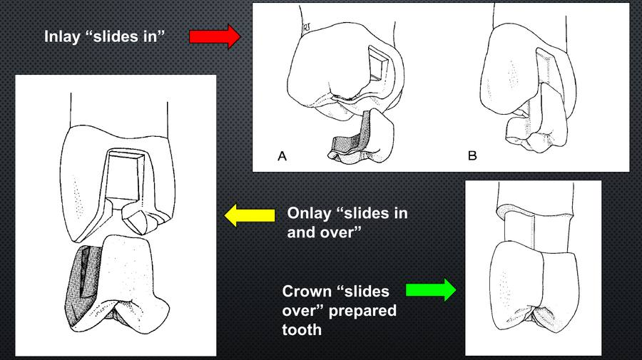
- Inlay (Type II gold, burnishable): 2-surface is the main indication. It doesn't strengthen the tooth and has a wedging force. It needs a low caries index.
- Onlay (Type III): covers the cusps to prevent fracture. Needs good hygiene.
- ¾ crown: holds the tooth together better than an onlay. Useful on bulbous, perio-involved teeth, or for FPD abutments with mismatched draw.
- Full crown: maximum retention and resistance.
- All-ceramic inlays and onlays use 90° butt margins, rounded internal angles, no bevels, and more taper.
Crown material: which one and why
| Material | Use it when | Avoid when | Prep numbers | Cement |
|---|---|---|---|---|
| Full gold (Type III) Lecture | Posterior teeth that don't show. Bruxers. Limited clearance, because it's the most forgiving if thin. Best wear against opposing enamel and best marginal fit. Very long survival (~70% at 20 yrs). | Esthetic zone, or the patient refuses metal. | Occlusal 1.5 mm · axial 1.0 · 0.5 mm chamfer · groove at half bur depth | RMGI (RelyX Luting Plus) |
| Monolithic zirconia (3Y) Lecture | Posterior teeth needing tooth color. Heavy bite or bruxism (pair with a night guard). Strongest tooth-colored option, toughness KIc 9–10. | Minimal vertical space. Zirconia is fracture-resistant but less flexible than gold. Highly esthetic anterior teeth. | Occlusal 1.5 mm · 0.8 mm chamfer 360° · 6–8°/wall · walls ≥4 mm (non-functional side) and ≥3.5 mm (functional side), M/D 3 mm · groove at full bur depth · all angles rounded | RMGI. Resin if short or over-tapered. |
| Higher-translucency zirconia (4Y/5Y) Lecture | 4Y works anterior or posterior with moderate esthetics. 5Y is most esthetic, anterior. | 5Y in heavy-load posterior teeth (lower strength). | As for zirconia, or per the lab | RMGI or resin |
| Layered zirconia Lecture | Anterior teeth where you need custom esthetics over a strong core. | Premolars and molars. Veneering porcelain chips at the incisal edge. | More reduction than monolithic | RMGI or resin |
| PFM Lecture Outside | Matching existing PFMs, cost, long-span bridges. Now a "selective" choice rather than the default. | Thin gingiva in the esthetic zone (gray margin). Bruxers (porcelain chips). | Occlusal 2.0 mm (porcelain) · facial 1.5 · 1.0 mm margin | RMGI |
| Lithium disilicate (e.max) Outside Lecture | Anterior teeth and premolars where esthetics come first. Allows conservative preps when you can bond to enamel. | Severe bruxism, heavy posterior load, thin preps. Higher fracture risk than zirconia. | About 1.5–2 occlusal, 1.0 axial, 1.0 mm rounded shoulder or heavy chamfer (follow the lab) | Light forces: RMGI OK. Heavy forces or short preps: resin (HF etch + silane) |
Foundation (core) material Lecture
| Chemically-cured (CompCore AF) | Light-cured composite |
|---|---|
| Prep for the crown at the same appointment. Bulk fill. Quick, but you only get one chance. Contrasting color, so you can see foundation vs tooth. If the contact isn't in the band, it won't be in the core. Must use IntegraBond + Auto-Cure Activator (not OptiBond). | When esthetics matter or there's a longer wait before the crown. Incremental fill, easier contacts, better wear. Uses a conventional etch-prime-bond system. |
Provisional material Lecture
You will be taught three ways: ION + Jet (stock shell, no matrix), Jet PMMA in a vacuum-formed matrix (matrix made in the lab ahead of time), and bis-acryl Integrity in a PVS triple-tray matrix (matrix made chairside). The ION and Integrity options are compared below. For the vacuum-matrix option, see the Provisionals tab.
| ION crown + Jet PMMA | Bis-acryl (Integrity) with triple-tray matrix | |
|---|---|---|
| Use when | Posterior only. The existing tooth is broken down or a matrix can't be made. Easy to avoid undercuts, and little occlusal adjustment needed. | The existing tooth form is adequate, so you can capture a pre-op matrix. Any tooth. |
| Pros | Simple. Good margins with a reline. Strong. | Low heat, low shrinkage, good fit. Bonds to a fresh composite core. Easy. |
| Cons | Hard to add contacts or margins. Lasts 2–4 weeks if the metal is cut through. Poor esthetics. Exothermic. Free monomer irritates the pulp. | Brittle (watch FPDs). Limited shades. Needs an intact pre-op tooth or wax-up. |
| Undercut blockout | Wax, Dycal, or LC Blockout | Wax only. LC Blockout is only for PMMA, not Integrity. |
| Separator | Saliva clinically (linseed oil on printed cast) | Vaseline or PAM on the dentoform |
Cements Lecture
| Situation | Use |
|---|---|
| Routine provisional | Temp-Bond NE (non-eugenol, so it won't interfere with resin cements or bis-acryl) |
| Provisional in >30 days, or a short or compromised prep | Durelon (polycarboxylate). Use the exact powder/liquid ratio. Clean up at the rubbery stage. Expect to section the provisional to remove it. |
| Definitive: gold, PFM, zirconia, lithium disilicate under light forces | RelyX Luting Plus (RMGI). This covers about 90% of cases. Do not condition the dentin. |
| Definitive: glass ceramics, enamel bonding, compromised preps, lithium disilicate under heavy forces | Resin cement. Technique-sensitive and needs long isolation. Etch-and-rinse enamel, generally not dentin. Dual-cure resins darken over time. |
Impression and marking materials Lecture
- Quadrant PVS + IOR (DCG default for single posterior crowns): requires acceptable occlusion, a VDO stop on that side, no excursive duties on the prepped tooth, and a tooth distal to the prep.
- Triple tray: closed-mouth 3-in-1. Needs rigid material, the patient must close in MI, and you can't Pindex.
- Full arch: when there's guidance on the prepped tooth, a disrupted occlusal plane, an RPD/CD, minimal VDO stops, significant lateral movements, or esthetic balance is needed.
- Intraoral scanner: the future, but harder with deep margins. Be proficient in both.
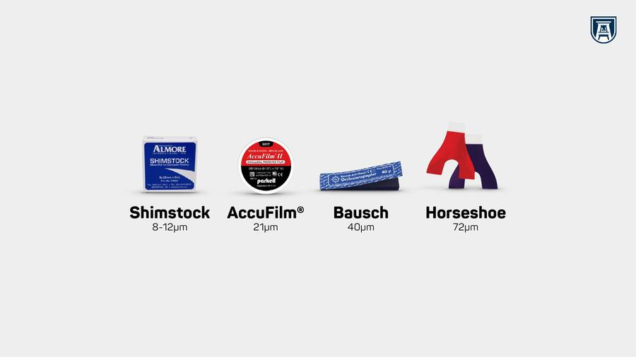
Before Appointment 1
- Occlusal exam D9950.A on the blue paper form. Faculty review it first, then you enter it in Axium. Record the CR→MI slide and first prematurity, MI contacts (blue), excursive guidance (red), occlusal plane, marginal ridge heights, and F-L position. Lecture
- Compare to the ideal: all teeth contact in MI, anterior teeth disocclude posteriors, canine guidance preferred, no non-working contacts ever, no group function past the MB of the first molar. Lecture
- Unequal marginal ridges or a plunger cusp? Do a Limited Occlusal Adjustment (LOA, D9951) first, then measure reduction from there. Otherwise you'll under-reduce. Use COA (D9952) on mounted casts if it's more extensive. Lecture
- Radiograph: extent of decay, root proximity, bone level. This tells you how far gingivally the margin must go. Lecture
- Choose the material (see "What material when") and write down the reason.
- Quadrant or full arch? Use quadrant only if the occlusion is acceptable, there's a VDO stop on that side, the tooth has no excursive role, and there's a tooth distal to it. Otherwise use full arch. Lecture
- Make the matrix (see the Matrix tab). Vacuum-formed matrix in the lab before the visit, or a PVS triple-tray matrix chairside before the first cut. Try it in the mouth before prepping.
- Plan the provisional. If the tooth form is adequate, take a triple-tray PVS matrix of the unprepped tooth before you touch it (for bis-acryl). If not, pick an ION crown by measuring the M-D space with a perio probe, on the cast, or on the radiograph. Lecture
- Existing restorations: generally remove any you didn't place and replace them with a core. That reveals caries, leakage, cracks, and how much tooth is left. Exceptions are pins, posts, or pulpal trauma, where the risk outweighs the benefit. Lecture
- Tooth-colored crown: take the shade before anesthesia and prep, while the teeth are hydrated. Use photos with a shade tab. Outside
Why quadrant is the DCG default Lecture
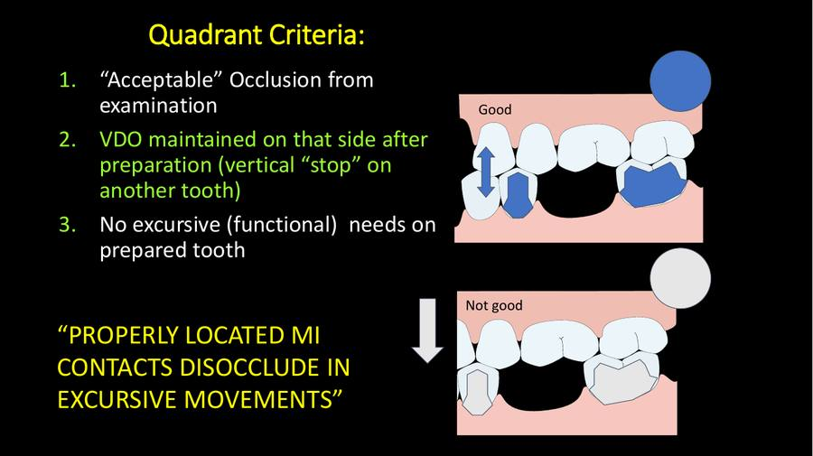
- Easier on the patient (gaggers, limited opening, tongue). Uses about a third of the material.
- A new IOR every time, so if you adjust the opposing tooth at the prep visit, you don't need a new opposing alginate.
- You can confirm properly located contacts 4 ways: they exist pre-op, you create them by occlusal adjustment, a diagnostic wax-up shows them, or the provisional proves them.
- You never need a full-arch impression for #2 in a normal dentition.
What the matrix is and why you make it first
A matrix is a mold of the patient's tooth before you prep it. After the prep, you fill it with provisional material and seat it, so the provisional copies the tooth's original shape, contacts, and occlusion. Once you've cut the tooth, it's too late to make one, so this happens before you pick up the handpiece. Lecture
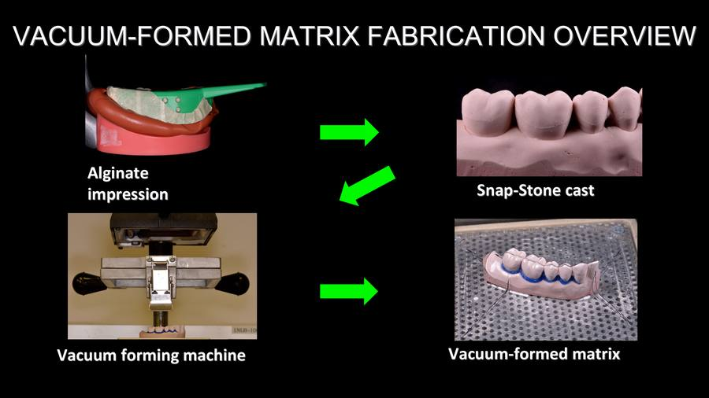
Pick your matrix
| Matrix | When it's made | Pair with | Best for |
|---|---|---|---|
| A. Vacuum-formed (clear 0.020" splint material) Lecture | In the lab, before the appointment, from a Snap-Stone cast | PMMA (Jet) or bis-acryl | When you can plan ahead. Being clear, it doubles as a reduction guide. It can also copy a wax-up if the tooth's shape needs changing. |
| B. PVS triple-tray (quadrant) impression Lecture | Chairside, right before the prep | Bis-acryl (Integrity) | Fastest. No lab step. Captures the tooth in MI. |
| C. PVS putty or alginate impression Outside | Chairside, right before the prep (can be done while anesthesia takes effect) | Bis-acryl or PMMA | When there's no triple tray, or for anterior teeth and multiple units |
Method A: vacuum-formed matrix, step by step Lecture
Do this in the lab, before the prep appointment. You'll need alginate, a stock tray, Snap-Stone, LC Blockout, 0.020" temporary splint material, a vacuum former, a separating disc or Bard-Parker, crown and bridge scissors, and a #7 wax spatula.
- 1. Pre-op impression. Take an alginate (or PVS putty) impression of the unprepared tooth plus at least one tooth on each side. The neighbors become the stops that hold the matrix in place.
- 2. Pour Snap-Stone. Hand-mix it. Do NOT vacuum-mix Snap-Stone. It sets fast.
- 3. Trim the cast so it's flat and not bulky, with the teeth and a little gingiva.
- 4. Fix defects. Over-correct negative defects (voids) by filling small ones with LC Blockout. Under-correct positive defects (bubbles) by removing them carefully, without carving more than the real tooth. A carved-away bubble becomes a bump in the matrix that won't seat in the mouth. Too many voids? Re-pour.
- 5. Block out deep undercuts and embrasures with LC Blockout so the matrix can't lock onto the cast. Use only a little: extra blockout adds bulk to the provisional, over-builds the line angles, and makes the provisional harder to remove.
- 6. Bevel the cast periphery. This gives better adaptation and makes the matrix easier to remove.
- 7. Make sure the cast is DRY. A wet cast gives a poor result.
- 8. Load the material. Use 0.020" (0.5 mm) temporary splint material. It's thin but rigid, NOT the soft bleaching-tray sheet. Put it in the frame and lock the frame. Center the cast on the platform.
- 9. Heat. Swing the heater over it and turn it on. Don't multitask. The sheet smokes as it heats. It's ready when it sags about 1 inch.
- 10. Vacuum. Turn on the vacuum and pull the handles down over the cast. Turn the vacuum off after about 30 seconds and remove it.
- 11. Cool completely, then cut it free with a separating disc or Bard-Parker. Pry it off with a blunt instrument (#7 wax spatula) so you don't break the cast or split the matrix.
- 12. Trim with crown and bridge scissors. Keep positive stops on the adjacent teeth and round every sharp corner so it won't cut the mucosa.
- 13. Mark the tooth to be filled with an "X" on the matrix, so you or your assistant fill the right tooth.
- 14. Try it in the mouth BEFORE the prep. It must seat fully and stably on the unprepped teeth. If it doesn't fit, fix it or choose another provisional method before you start cutting. Faculty
- 15. Use it during the prep to check occlusal reduction. Seat it over the prep and look at (or measure) the space between the prep and the clear matrix.
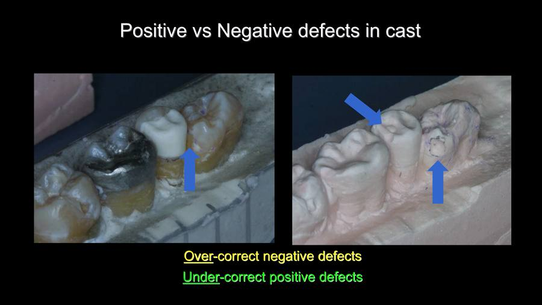
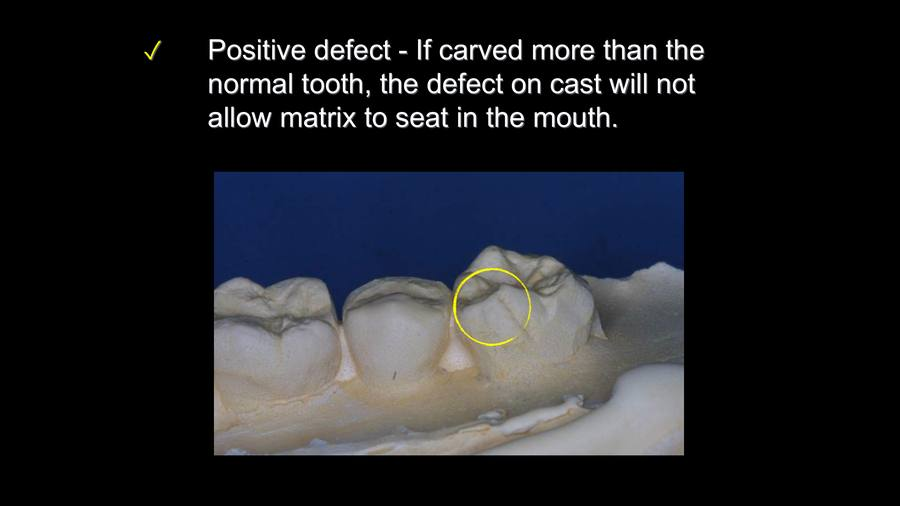
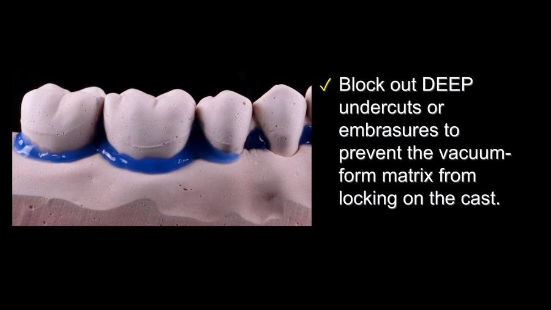
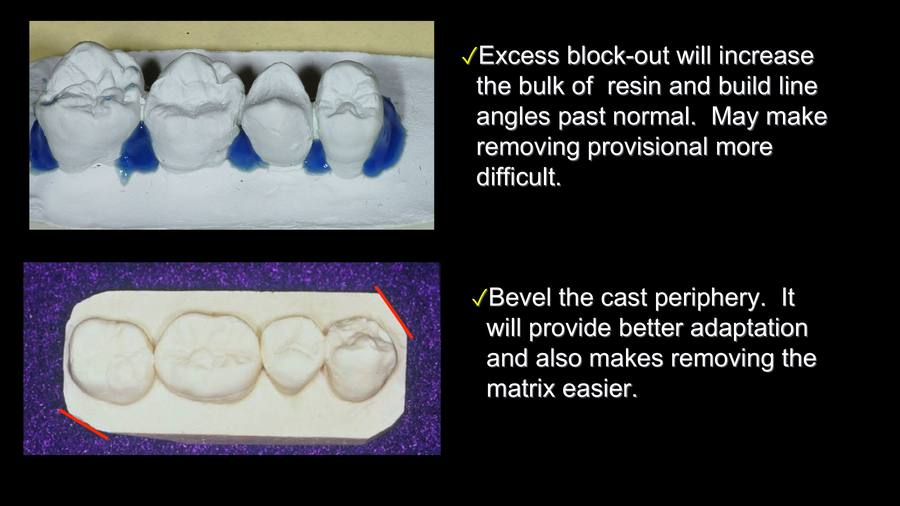
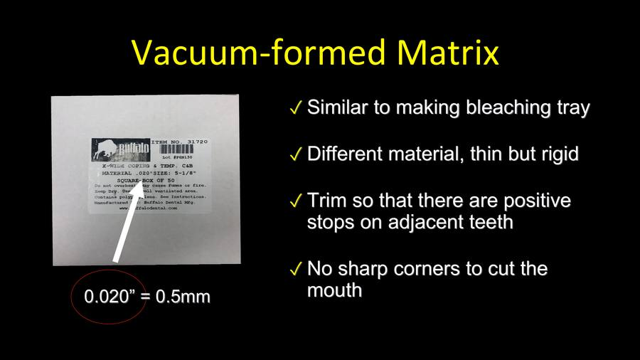
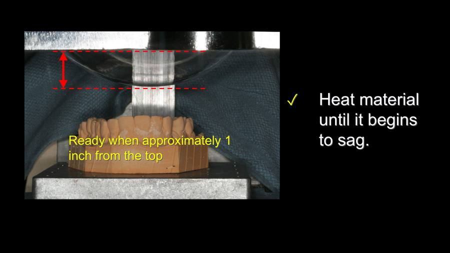
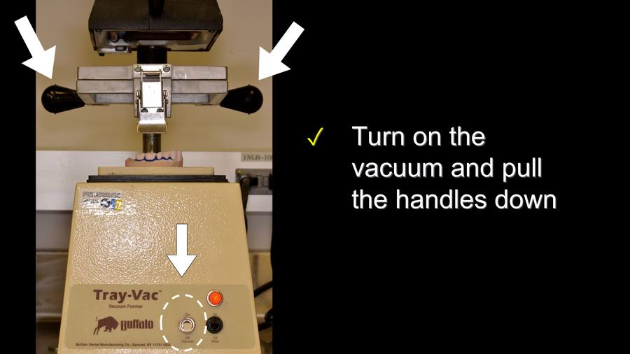
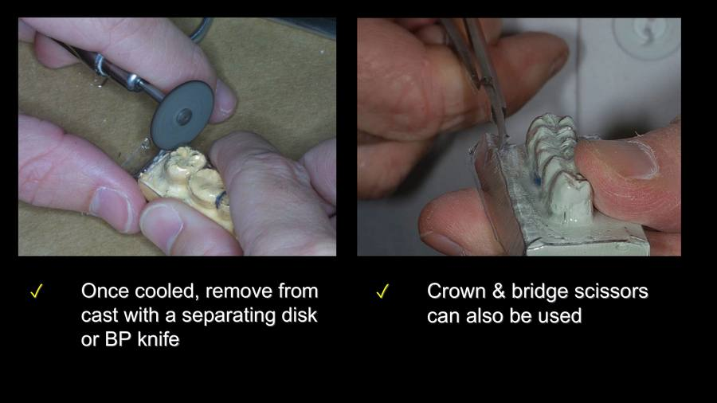
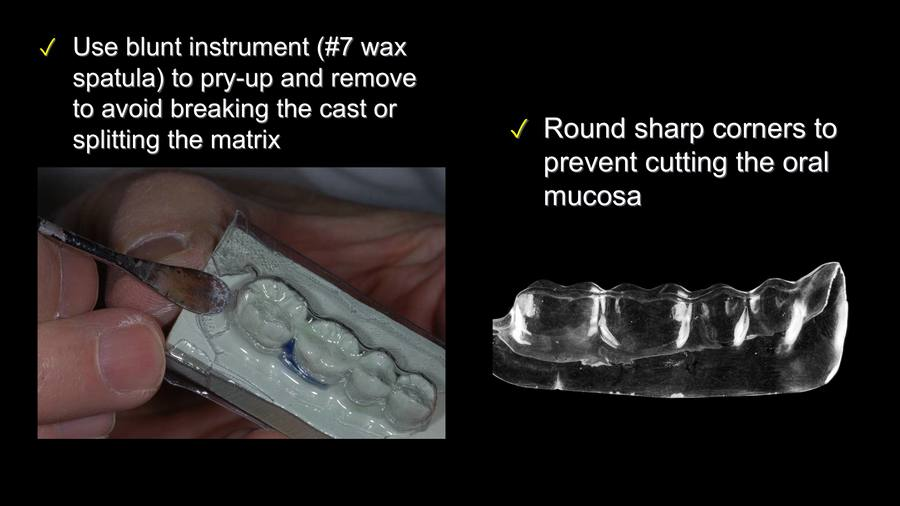
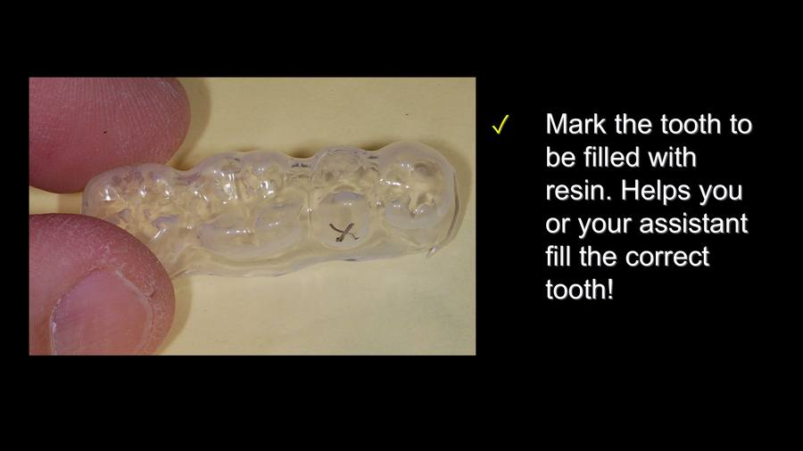
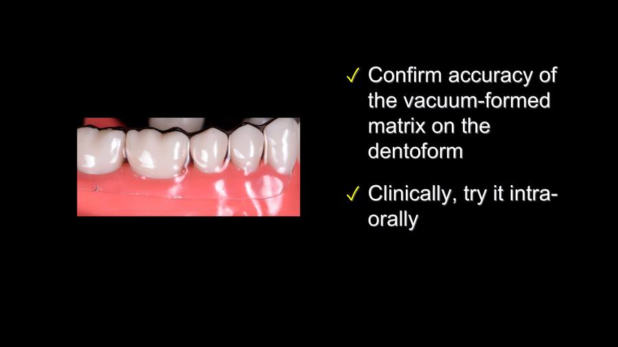
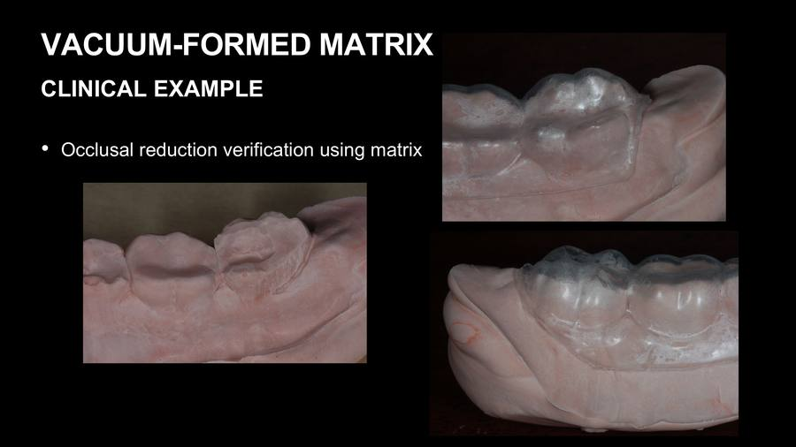
Method B: PVS triple-tray matrix, step by step
Do this chairside, after anesthesia and before the first cut. You'll need a triple tray, a PVS gun with bite-registration or heavy/medium-body PVS, mixing tips, and a #12 or #25 Bard-Parker.
- 1. Check the tooth form (see the warning above). If an adjacent tooth is damaged, fix it first. The matrix copies everything. Lecture
- 2. Try the empty tray. Have the patient close into MI. The tray must not hit the ramus or retromolar pad, and the teeth must close fully into MI with the tray in. Practice the closure with the patient. Outside
- 3. Bleed the cartridge (squeeze a little out without the tip so both pastes flow evenly), then attach a mixing tip. Lecture
- 4. Load the tray on both sides over the tooth and one tooth on each side. Don't overfill. Outside
- 5. Seat it and have the patient close in MI. Check that they're in their normal bite (look at the canines and opposite side). Hold still until the material sets (follow the product's set time, usually about 1–3 minutes). Lecture
- 6. Remove and inspect. You need the whole crown of the tooth with sharp occlusal anatomy and contacts, no tears or voids on the tooth, and the adjacent teeth captured as stops. If not, retake it now. Lecture
- 7. Trim with a sharp Bard-Parker. Remove excess material beyond the teeth and gingival flash, and cut away the thin interproximal "fingers" or tags that would keep it from reseating or tear off into the provisional. Lecture
- 8. Trim the margins (cervical area) a little, to leave room for bulk provisional material at the margin and to compensate for tissue retraction after the cord. Lecture
- 9. Test reseat it in the mouth. It must go back to exactly the same place with the patient closed in MI. Outside
- 10. Label and keep it (patient, tooth, date) until the final crown is delivered. If the provisional breaks or comes off, you can remake it from the same matrix. Outside
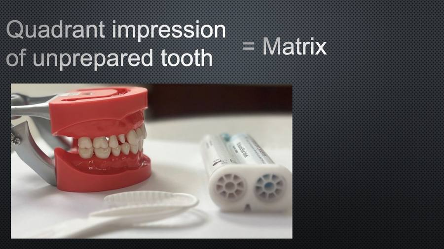
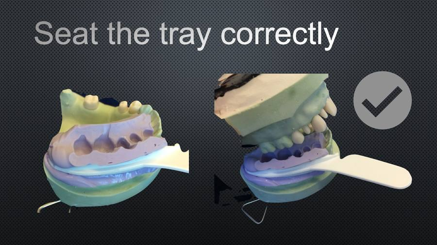
Method C: putty matrix (no triple tray) Outside
- Dispense equal scoops of PVS putty base and catalyst. Knead with clean, non-latex gloves until there are no streaks (latex inhibits setting).
- Load it into a small stock tray (or press it by hand) and adapt it over the tooth and one tooth on each side, covering the occlusal and facial/lingual down past the gingival margin.
- Hold still until it sets. Remove and inspect as in Method B.
- Trim the interproximal tags and excess with a Bard-Parker, and test reseat it. It must go back to one exact position.
Common matrix mistakes
- Making the matrix after you started prepping. Then it can't be made.
- Copying a broken tooth without fixing the form first.
- No stops on the adjacent teeth, so the matrix rocks and the provisional comes out high or thick.
- Leaving interproximal tags, so the matrix won't reseat or tags tear into the provisional.
- Not trying the vacuum matrix in the mouth before the prep.
- Too much blockout on the cast, which makes the provisional bulky and hard to remove.
Appointment 1 checklist
- Shade (if tooth-colored). Matrix made or tried in (Matrix tab) before any cutting. Mark the occlusion with articulating paper so you know where the opposing cusps hit.
- Anesthesia and isolation (Dri-Angles, cotton rolls, suction; often no rubber dam for a core).
- Remove the old restoration and caries. Decide whether you need a foundation.
- Foundation (if needed). Get faculty OK before prepping. Faculty
- Bulk crown prep: occlusal, then axial, then margins short of the tissue (no tissue contact at Appt 1 in student clinic).
- Evaluate: clearance (PVS + Iwanson gauge), draw (one eye, pencil dots), margins. Faculty
- Make the provisional, adjust occlusion, polish, cement with Temp-Bond NE, clean the interproximals with knotted floss.
- Post-op instructions. Schedule Appt 2.
Step A: Foundation (core build-up) Lecture
The foundation helps retain the crown. The crown margin extends 1–2 mm beyond the foundation onto tooth.
- Prepare the tooth like an operative prepExpose the DEJ, extend boxes to sound tooth, remove caries and unsupported enamel (it breaks off under an explorer). If needed, remove a cusp with a "box" without exposing the pulp.
- Add retention
- Grooves where vertical walls face each other: parallel to the DEJ, 0.5–1 mm inside it, entirely in dentin.
- Slots on short walls: 1 mm deep, 1 mm inside the DEJ (33½ inverted cone).
- Pins on long walls: 2 mm deep, 1–1.5 mm inside the DEJ. One pin per missing line angle. Pins are stronger than slots.
- Place pins correctly
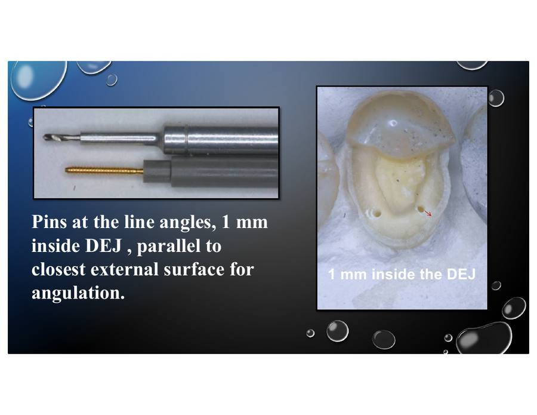
At line angles, 1 mm inside the DEJ, parallel to the closest external surface. 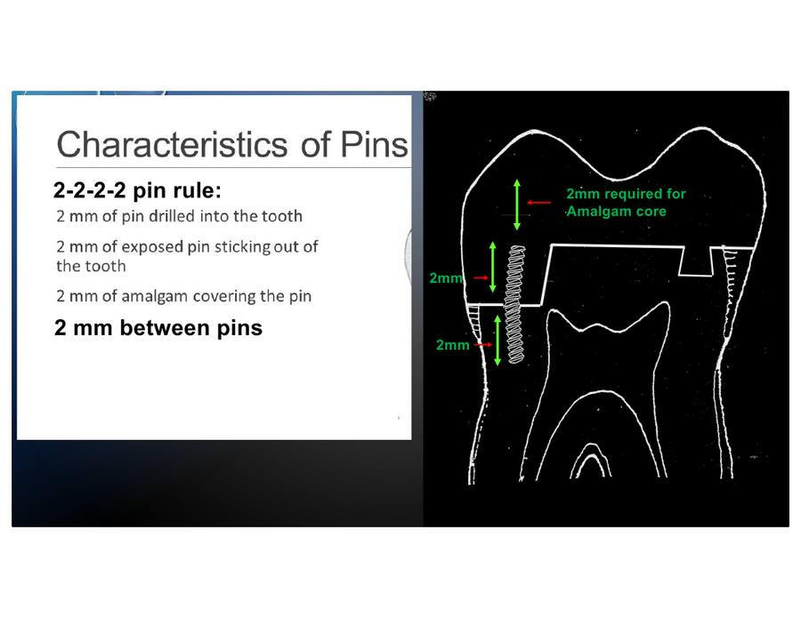
2-2-2-2: 2 mm into dentin, 2 mm exposed, 2 mm of material over the pin, 2 mm between pins. - Use a ¼ round on slow speed to make a starter hole on a flat dentin surface (flatten it with an FG bur or make a "cove" with a 245 if needed).
- Pin drill: blue-dot latch handpiece, 500 rpm, 1:1, torque 3.5 Ncm. Keep it turning, angle it to the outside of the tooth (not the long axis), and push to full depth.
- At least 1 mm of sound dentin around the pin. Avoid furcations. If there's bleeding, stop and check for pulp or PDL perforation. A replacement pin goes 1 mm from a failed one.
- Size by color: Gold Regular 0.78 · Gray Minim 0.61 · Red Minikin 0.48 · Pink Minuta 0.38 mm. Memorize these.
- Keep pins inside where the axial walls will be, so the crown prep doesn't cut into them.
- MatrixUse a Tofflemire with wedges. Burnish the band with a football burnisher so it touches the adjacent tooth (use a #2 MOD band for deep boxes). The composite only goes where the matrix forms it.
- Bond (CompCore with IntegraBond)Etch enamel 15 s, plus another 15 s for dentin (15–30 s total). Rinse as long as you etched. Dry but don't desiccate. Mix one drop of IntegraBond with one drop of Auto-Cure Activator, apply with a microbrush (several coats), air-thin the solvent, and light-cure 20 s. It should look shiny.
- Inject CompCoreStart the tip at the floor next to the band in the least accessible area. Inject in a continuous stream with the tip buried, withdraw as it rises, and get no voids around the pins. Overfill. Leave some on the pad to judge the set (about 2 min, faster in the mouth).
- ContourRemove the band, carve embrasures with a #12 blade (dull the edge near your thumb), and contour with FG burs to match the adjacent anatomy.
Step B: Crown prep, in order Lecture
- Occlusal depth guidesUse a round-end tapered diamond. Define the central groove first, then primary grooves, then triangular ridges. That's 5 per surface + 1 in the groove = 16 total, deepest areas first. Adjust the depth to the opposing tooth: a tooth out of occlusion needs less.
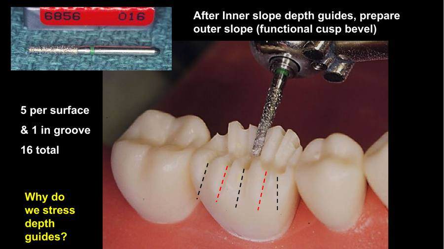
Depth guides on inner and outer inclines. - Inner-incline reductionFollow the rise and fall of the cusps. Preserve the primary anatomy, no flat tops. A flat top is under- or over-reduced somewhere and close to the pulp horns. The distolingual cusp is the most commonly under-reduced.
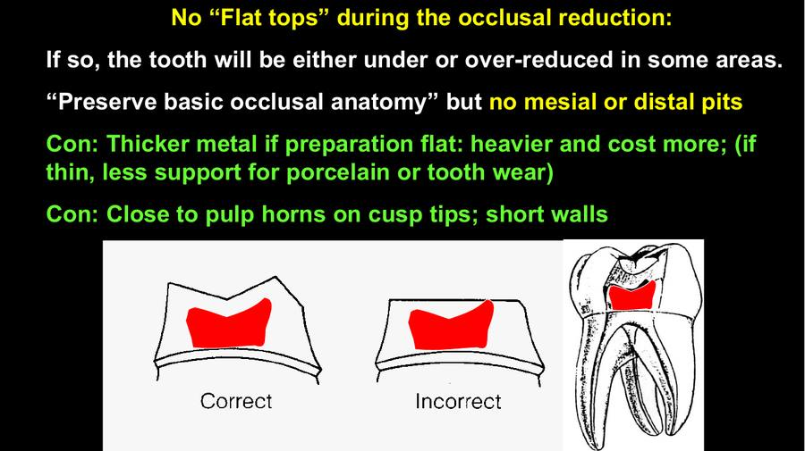
No flat tops: they leave walls short and get close to the pulp horns. - Functional cusp bevel (FCB)On the outer incline of the functional cusp (mandibular: buccal, maxillary: lingual). It puts the cusp tip under the opposing fossa or marginal ridge so forces go down the long axis.
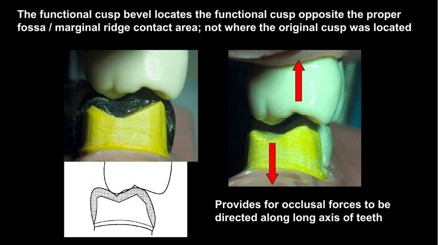
The FCB relocates the cusp opposite the proper fossa, not where the original cusp was. - Axial reduction and path of drawPut the handpiece down the long axis of the clinical crown (mandibular slightly lingual, maxillary slightly facial). Check it in two planes. Use a medium chamfer (016) or round-end diamond, less than half its tip into the tooth. Axial reduction is non-uniform so the taper and margin can be uniform. Return to the same angle every time with a solid finger rest.
- Break the proximal contactsUse a small chamfer (012). Leave a sliver of tooth so you don't nick the neighbor. You need 1 mm clearance from the adjacent tooth for the provisional, impression, and lab work.
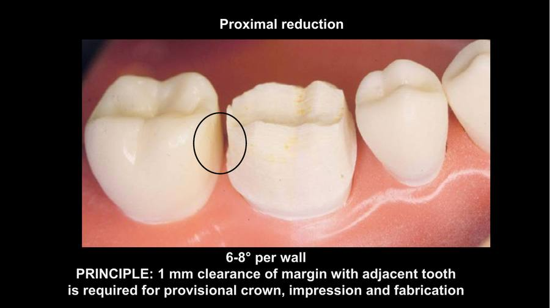
6–8° per wall. 1 mm of clearance from the adjacent tooth. - MarginsGold: 0.5 mm chamfer at 140°. Zirconia: 0.8 mm chamfer. Finalize with the bur on the same path of draw as the walls, otherwise you create a barrel. Slow down: FG slow speed (20,000) or high speed set to 30,000. At Appt 1, stay off the tissue.
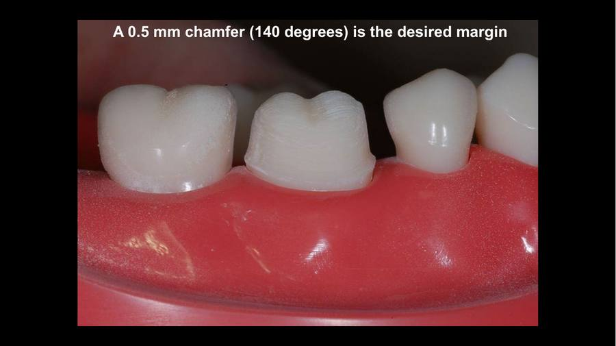
A 0.5 mm, 140° chamfer is the target for gold. 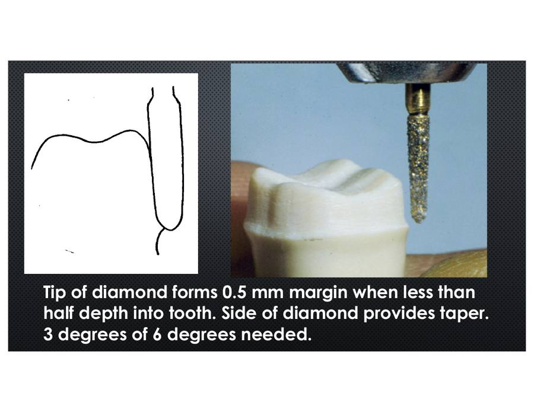
The diamond tip, under half its depth into the tooth, forms the margin. The side gives you taper. - Resistance grooveMolars need one, premolars don't. Place it in tooth structure (not core), parallel to the path of draw, ending ≥1 mm from the margin, then lightly round its edges. Gold #30: buccal, half the depth of the medium diamond. Zirconia #3: lingual, full diamond depth.
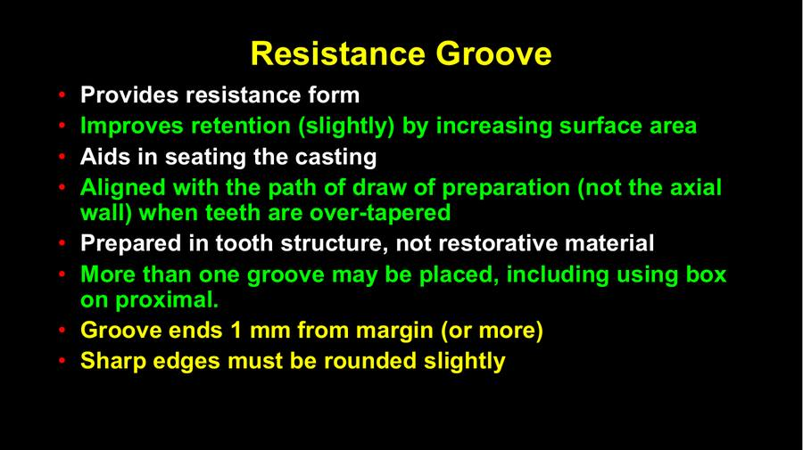
The groove resists tipping and helps seating. - SmoothRound all line and point angles with a small diamond at stall speed (about 6,000 rpm). This matters most for zirconia, because sharp angles cause milling problems and stress.
Monolithic zirconia: what's different Lecture
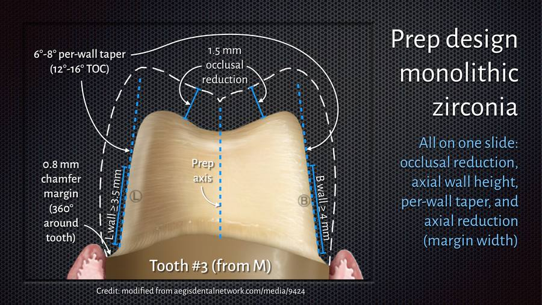
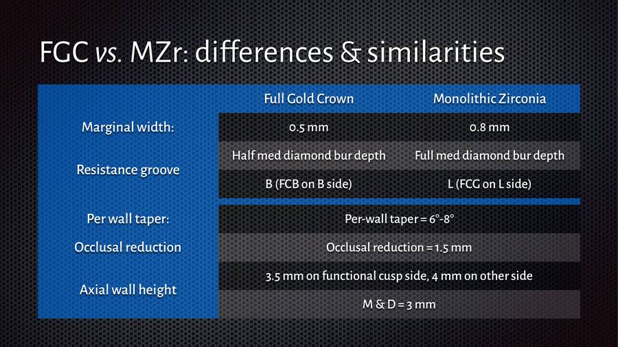
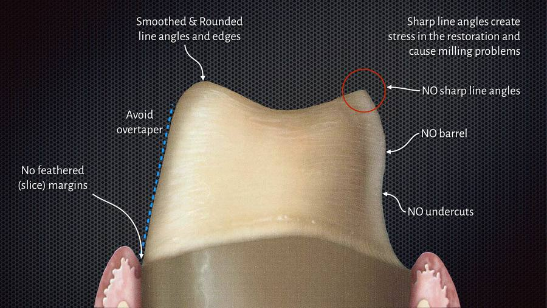
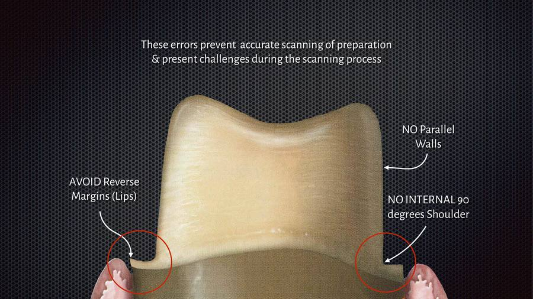
Maxillary vs mandibular Lecture
| Mandibular | Maxillary | |
|---|---|---|
| Path of draw | Slightly lingual | Slightly facial. Set it with direct vision, then use the mirror only to watch the bur tip. Don't change the angle while looking in the mirror. |
| Functional cusp bevel | Buccal | Lingual |
| Resistance groove | Buccal | Buccal (lingual risks the pulp horn). Proximal grooves are often used clinically. |
| Watch out for | Distal of 2nd molar (root shape), MB pulp horn | Palatal root of 1st molar diverges, so the margin widens as you go deeper. MB pulp horn. |
| Operator position (right-handed) | 7–9 o'clock for LR, 11–1 for LL. Patient 30–45°. | 11–1 o'clock. Patient flat (parallel to floor). |
The shape of the prep is set by the shape of the tooth at the margin. A bulbous tooth with a low margin needs more axial reduction and risks the pulp. Margins you can't see directly are prepped by feel: test-move the handpiece while it's off, then cut, then evaluate.
Evaluate before you move on Lecture Faculty
- Draw: look with one eye (your dominant eye). Put pencil dots at the most gingival part of each wall. Every dot above the margin should be visible from one viewpoint.
- Clearance: on the bench, a perio probe passes through. In the mouth or manikin, have the patient bite into fast-set PVS (30 s), find the thinnest spot, and measure it with an Iwanson gauge or section it with a Bard-Parker.
- Margins: uniform width, 140°, no lip, 0.3–0.5 mm above the undamaged gingiva in the dentoform, ≥1 mm below the core.
- Axial wall height 3–4 mm.
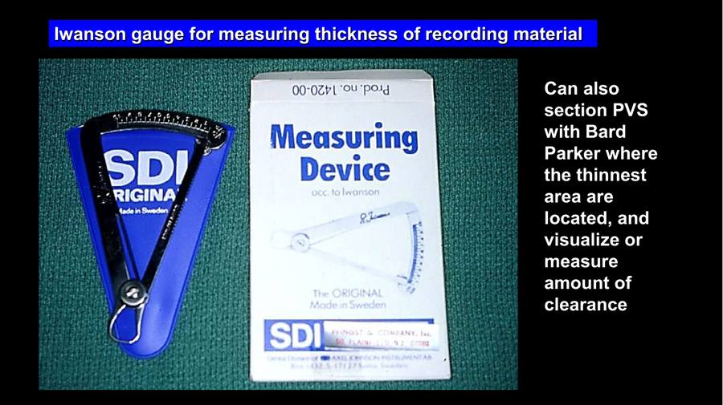
What a provisional must do Lecture
- Protect the prepped tooth: cover dentin, seal with cement, keep occlusal clearance in excursions.
- Hold the tooth's position: mesial and distal contacts plus a correct MI contact.
- Keep the gingiva healthy: correct contours, extended to the margins, sulcus free of debris and cement.
- Patient comfort: smooth, clean, esthetic, functional.
Option A: ION crown + Jet acrylic (PMMA) Lecture
For posterior teeth only. This is a direct technique (made in the mouth).
- Select the ION shellMeasure the M-D space with a perio probe, on the cast, or on the radiograph. In Axium, calibrate the ruler first (Image → Measurement Calibration; 40 mm film width is close enough). Find the mold, e.g., LL6 = lower left first molar (#30). The size is stamped inside (e.g., 11.7 mm = L64).
- Flare the cervical thirdUse the crown spreader so the narrow open end will go over the prep.
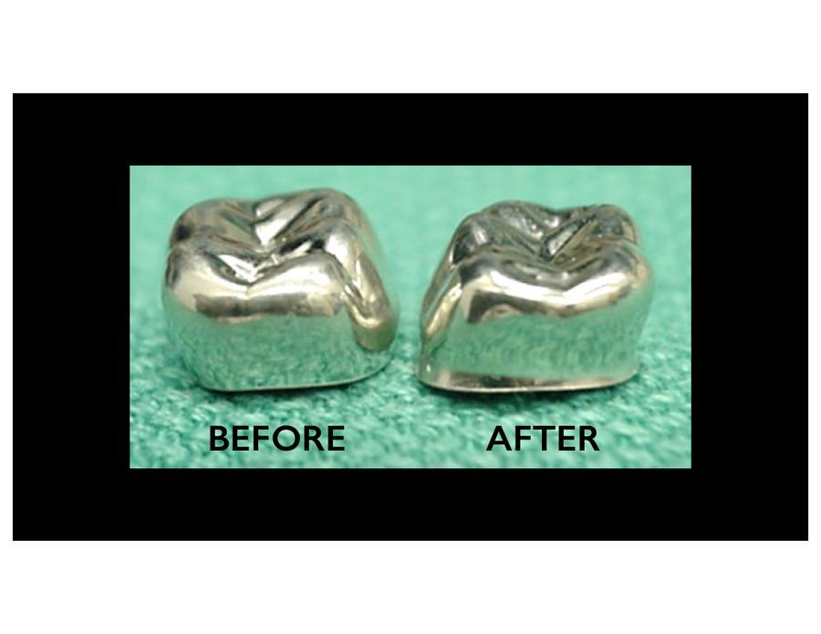
Before and after spreading. - Trim if longThe ION should end 1–2 mm short of the prep margins. The acrylic captures the margin. If the tissue blanches, it's too long. Trim with curved crown-and-bridge scissors, following the curve.
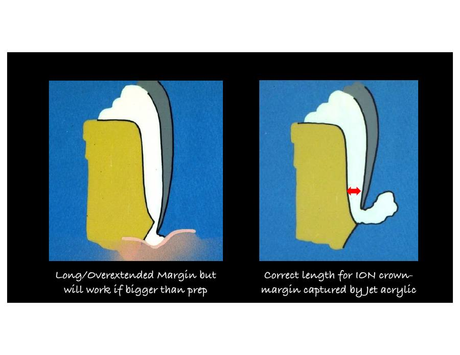
Overextended still works if it's bigger than the prep. The correct length lets Jet capture the margin. 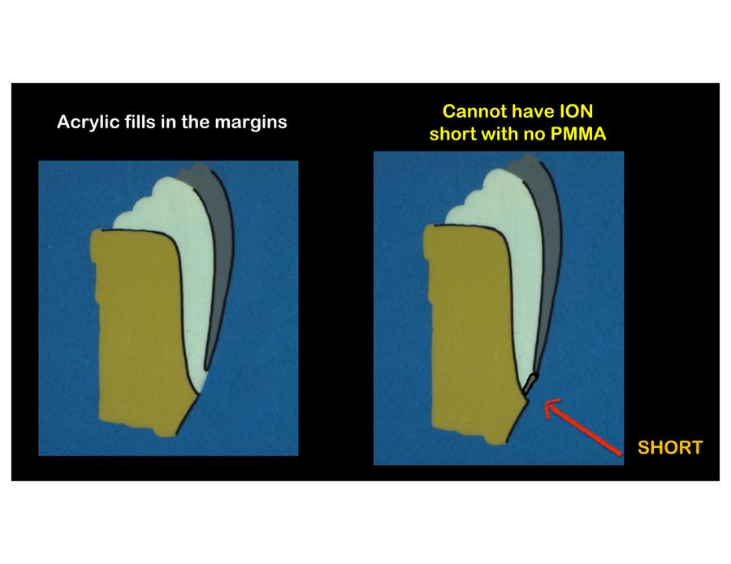
It can't be short with no PMMA covering the margin. - Check in MI and roughenHave the patient bite in MI on the shell (look for blanching). Roughen the intaglio with a diamond so the acrylic sticks. Faculty
- Block undercuts and lubricateCheck the adjacent teeth for undercuts relative to the path of draw. Block them with wax, Dycal, or LC Blockout. Clinically the tooth is lubricated by saliva (use linseed oil on a printed cast).
- Mix JetPut 20 drops of liquid per ION in a dappen dish and add powder until it looks grainy-wet. Stir. If it won't flow, add a drop of liquid. Aim for maximum powder that still flows (strongest). Stages: sandy → stringy → dough-like → memory → stiff.
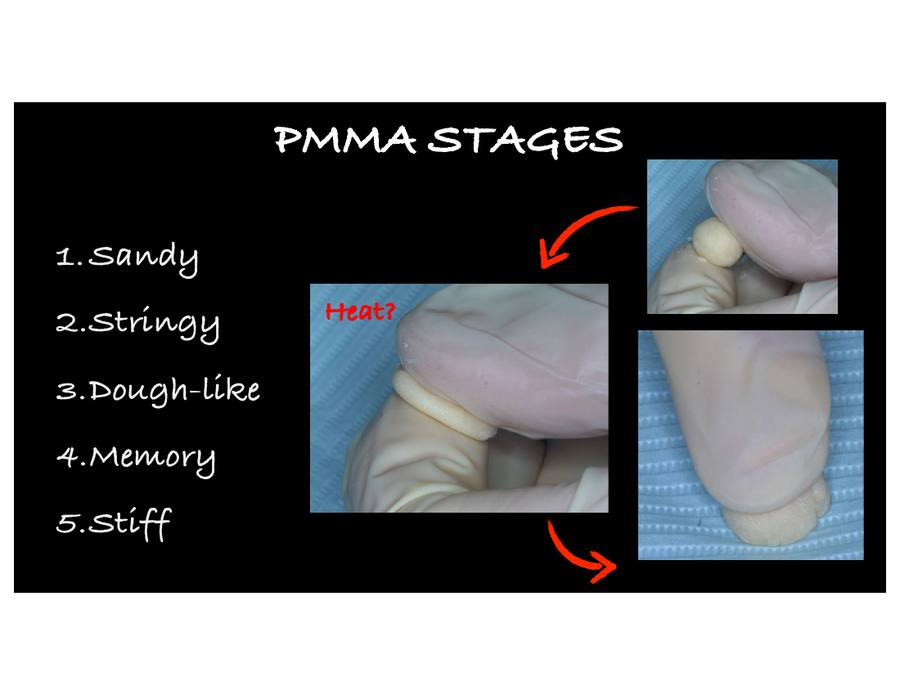
Learn what each stage looks and feels like. - Reline and seatFill the shell, wait until it loses its sheen, seat with finger pressure, then have the patient close in MI. Cookie-cut the excess with an explorer or perio probe without pulling it out from under the margins.
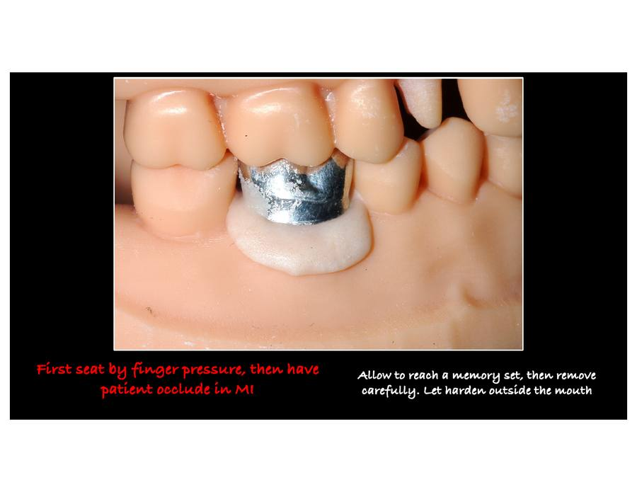
Seat with finger pressure, then MI. 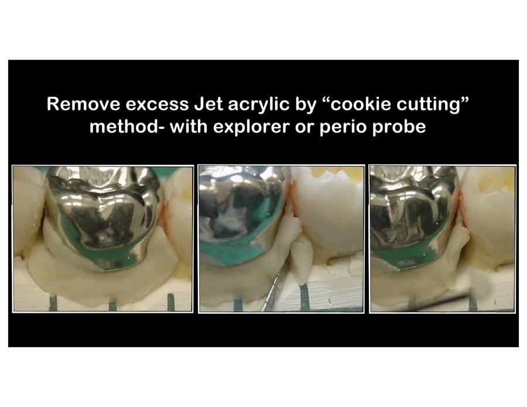
"Cookie-cut" the excess. - PUMP (critical)At the memory stage, lift it about 1 mm and reseat, so it can't lock on. When it starts to get warm and firm, wiggle it off and let it harden outside the mouth.
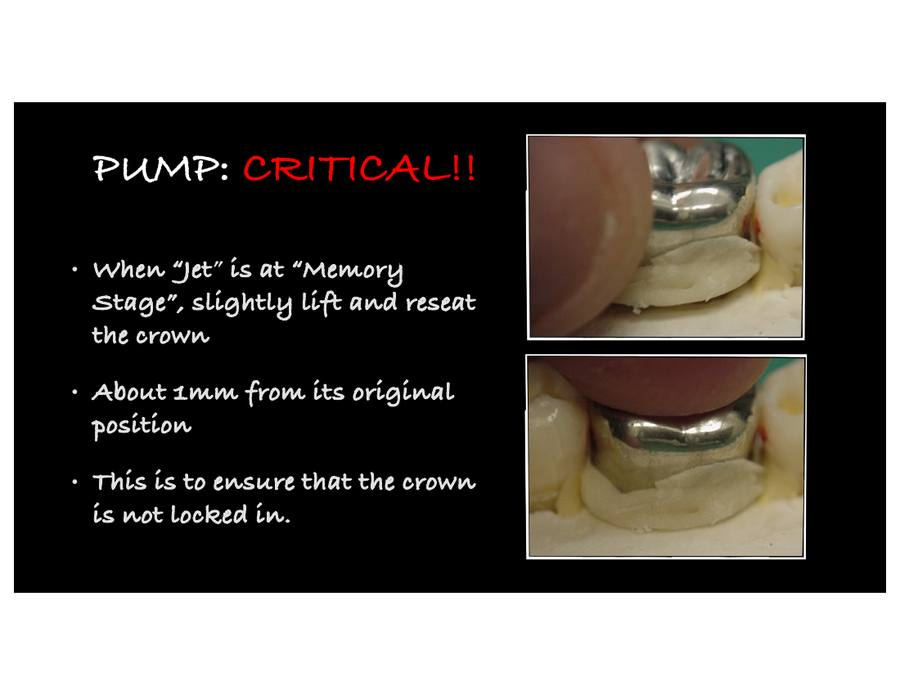
Pump at the memory stage. 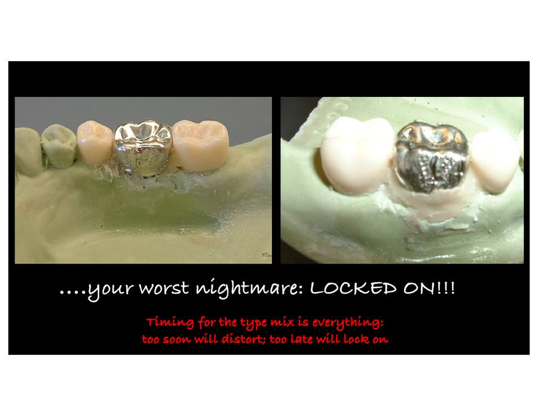
Locked on. Too soon distorts it, too late locks it on. - Read the margins and trimUnder good light and magnification, the margin should be readable in the acrylic (if you mark it, use a red wax pencil; the metal edge isn't necessarily the margin). Trim with the gray E-cutter (Komet), palm-thumb grasp, bur at ≤30° so you keep the contact and create an emergence profile. Trim from the outside in while looking at the margin from inside.
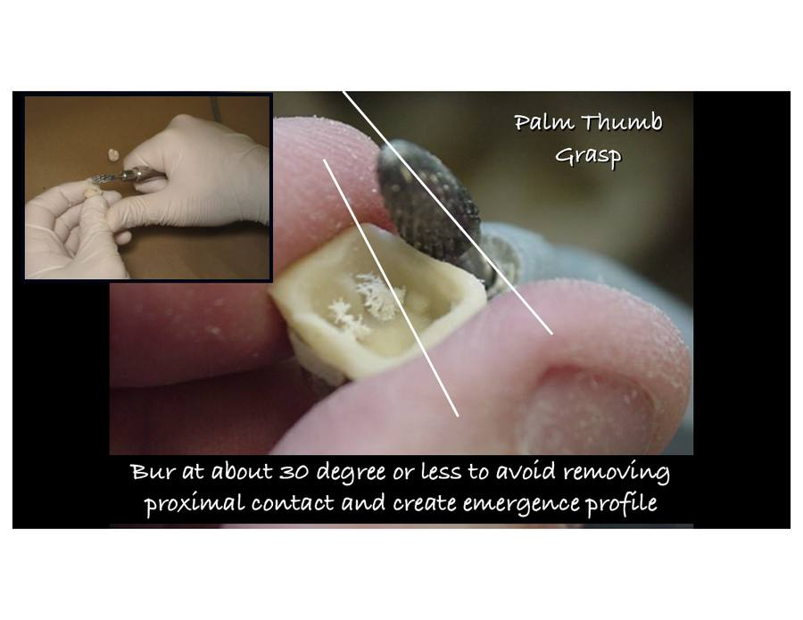
Bur at about 30° or less. 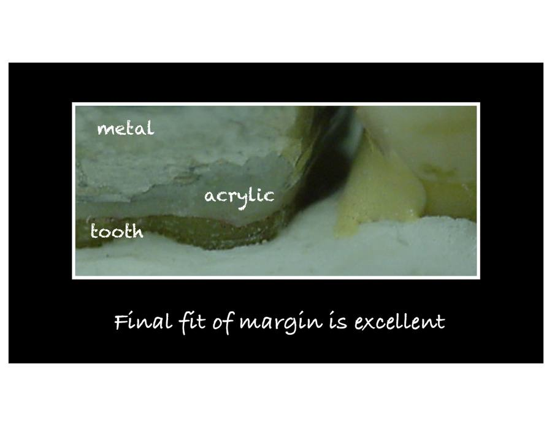
Goal: metal, acrylic, and tooth flowing smoothly into each other.
Repair a short margin: Bead-Brush technique
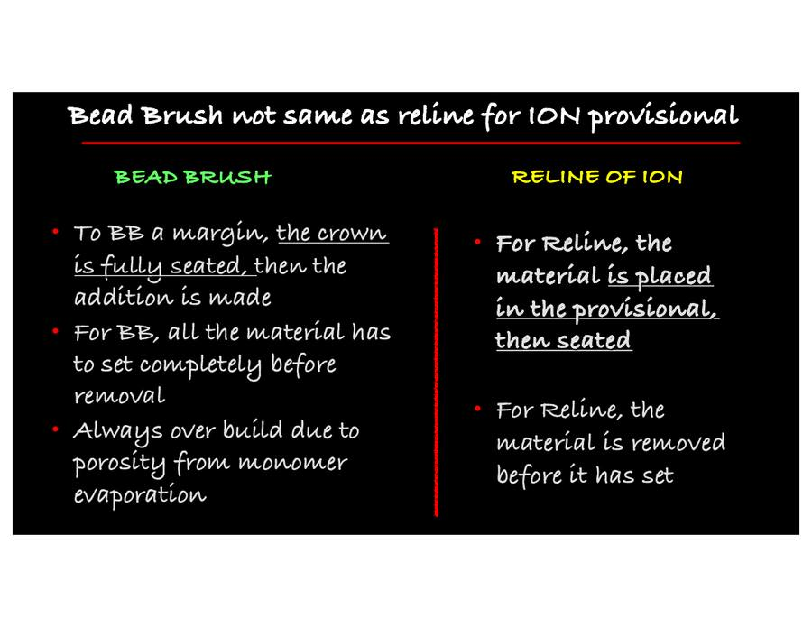
- Seat the provisional fully first, then add material.
- Wet the set acrylic with monomer. Dip the brush in monomer, touch it to the center of the powder (not the cup), and keep the mix moist.
- Apply it to the margin and acrylic. Over-build, because monomer evaporation makes it porous.
- Let it set completely in place (no pumping), then remove and trim.
Option B: Bis-acryl (Integrity) with triple-tray matrix Lecture
- Before prepping: make the matrixTake a triple-tray (quadrant) PVS impression of the unprepared tooth in MI. Remove and inspect it. Full step-by-step is in the Matrix tab.
A quadrant impression of the unprepped tooth becomes the matrix. - Trim the matrixTrim off excess impression material and the interproximal tags so it re-seats fully. Trim margins to leave room for bulk material and to compensate for tissue retraction.
- Block undercuts with wax and lubricateUse wax only for Integrity (not LC Blockout). Apply Vaseline or PAM on the dentoform.
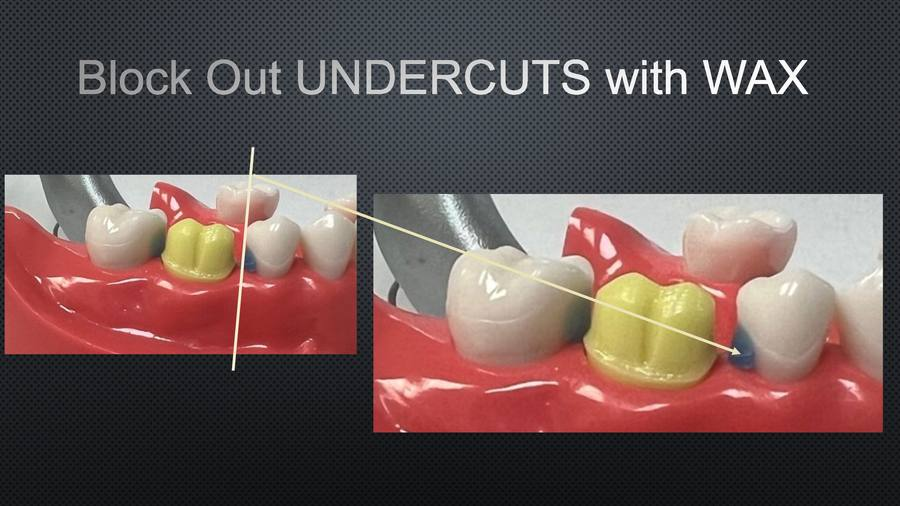
Block out the undercuts on the adjacent teeth. - Load and seatBleed the cartridge without a tip first. Inject Integrity into the matrix at the prepped tooth, starting at the bottom so no air is trapped. Seat the tray fully and close in MI. Timing: 0–45 s to dispense and insert.
Seat the tray correctly. 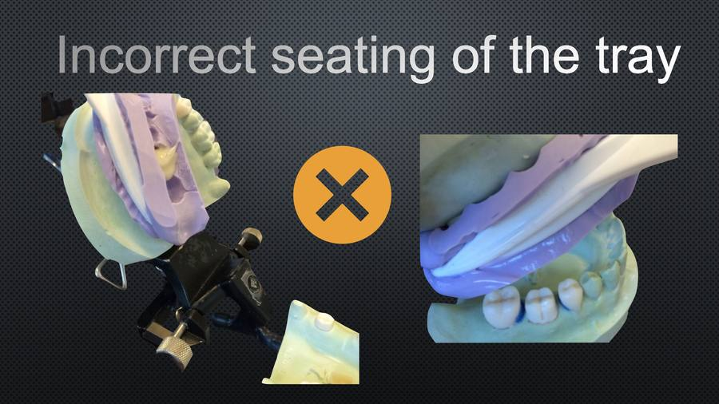
Incorrect: not fully seated. - Remove at about 90 s (firm elastic stage)The provisional may stay on the tooth or come out in the matrix. Either is fine. Ease it off the prep at this stage, then let it finish setting.
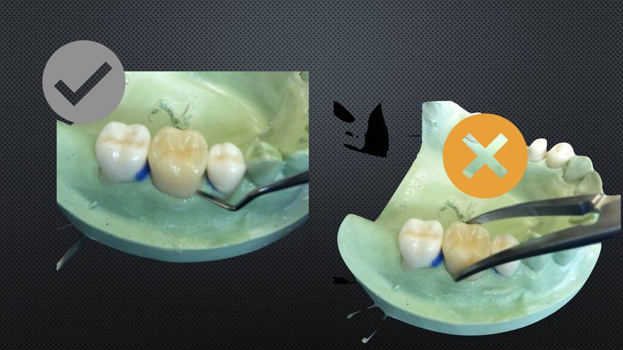
Remove it carefully at the firm elastic stage. - Final set at 6–7 min, then trim and polishTrim flash to the margins, refine contours and contacts, adjust occlusion, and polish with the provisional polishing kit. The oxygen-inhibited layer can be wiped with alcohol.
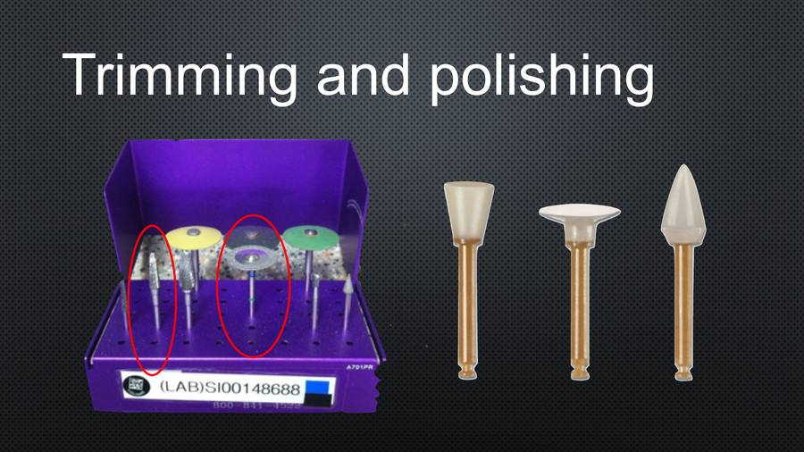
Trimming and polishing kit. - RepairsOn a new Integrity crown, add flowable composite only. On an old one, use a bonding agent (OptiBond FL) plus composite.
Option C: PMMA (Jet) in a vacuum-formed matrix Lecture
Make the matrix first (Matrix tab, Method A). You'll need Jet powder and liquid, a dappen dish, dropper, Vaseline, red rope wax, a blunt instrument, the provisional trimming kit, a sharp red pencil, pumice, Acrylustre, rag and muslin wheels, and an Iwanson gauge.
- 1. Try in the matrix over the prep. Check that it seats on the adjacent teeth and that the prep has clearance inside it.
- 2. Block out the adjacent undercuts (red rope wax on the dentoform). Lubricate the prep and neighbors with Vaseline. In the mouth, saliva is usually enough.
- 3. Mix. Put 20 drops of monomer in the dappen dish and slowly add powder to the liquid. Add powder or liquid until it's a "peanut butter" consistency. Stages: sandy → stringy → doughy → memory → set.
- 4. Load the marked tooth in the matrix and wait until the PMMA loses its sheen.
- 5. Seat with heavy finger pressure on the adjacent teeth so the matrix seats completely.
- 6. Test the set on the excess with a blunt instrument. Pump: lift about 1 mm and reseat, so it can't lock on.
- 7. Remove at the memory stage, when it starts to get warm and firm. Let it finish hardening off the tooth. You should be able to read the margins in it.
- 8. Mark and trim. Mark the proximal contacts and margin with a sharp red pencil and keep the marks while trimming with the provisional kit.
- 9. Check for short or open margins. Fix them with a bead-brush addition (see Option A): crown fully seated, over-build, let it set completely without pumping. On the cast, put it in warm water in a plaster bowl while it sets. Open up any voids before adding.
- 10. Open contact? Vaseline the adjacent tooth, bead-brush the contact on, and leave it seated until fully hard. Then remove and contour.
- 11. Refine contacts and occlusion. Use the Iwanson gauge as the final check of occlusal thickness/clearance.
- 12. Polish. Protect the margin with your fingers. Wet pumice on a soft, wet rag wheel, then Acrylustre on a dry muslin wheel. Final check of margins, contacts, and occlusion, then cement (below).
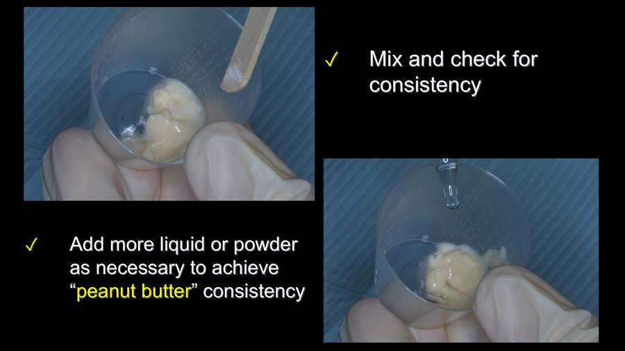
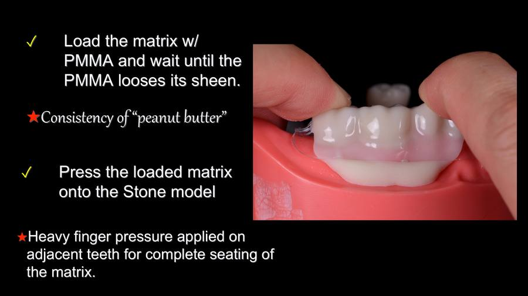
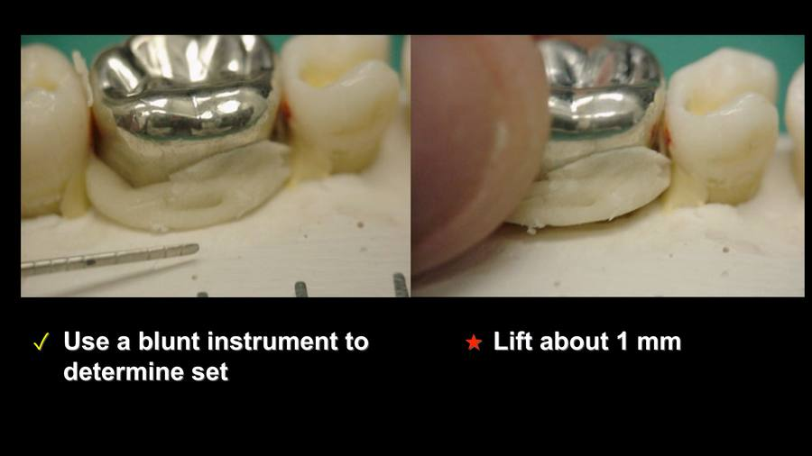
Cementing the provisional Lecture
- Relieve the intaglio slightly if it's tight. Isolate and get hemostasis.
- Coat the outside of the provisional with Vaseline (easier cleanup, especially in visible areas).
- Mix Temp-Bond NE until uniform (about 20 s, don't under-mix). Coat the inside; don't fill it.
- Seat with finger pressure and verify visually and with an explorer. Have the patient close lightly, then bite firmly on a cotton roll and hold with moderate pressure (posterior teeth).
- Let it set fully. Remove facial and lingual excess with an explorer or scaler. Push interproximal excess out with knotted floss and pull it out to the facial or lingual. Pulling up through the contact can pop the provisional off.
- Check occlusion with articulating paper. Adjust with the intraoral (latch) polishing kit, not lab SHP points. Don't overheat the tooth.
Removing the provisional Lecture
- Grasp with hemostats at the line angles. Use slight twisting pressure and hold. You won't feel movement, because you're stretching the cement bond. Then go the other way.
- Tip toward the shortest, most tapered wall: lingual on mandibular posteriors, facial on maxillary posteriors.
- For Integrity, a large black spoon excavator works well. You can also place a thick sickle scaler under the contact and "pop" it off.
- Increase force gradually. Too much force can pull out the core or injure the PDL, so section it instead (common with Durelon). Don't touch the margins when sectioning.
- Most of the cement should stay in the provisional or on the tooth. If it doesn't, it was leaking.
Appointment 2 checklist
- Anesthesia. Remove the provisional and clean the cement off with an explorer (not a rotary brush, which makes the gingiva bleed). Lecture
- Make sure the proximal contacts are fully cleared so the cord can go in. Lecture
- Pack retraction cord to locate the attachment and push the tissue away. Lecture
- Finalize margins to the top of the cord, ≥1 mm below the core, never into the attachment, on the same path of draw. Lecture
- Smooth the line angles. Final evaluation. Faculty
- Remove the cord, then reline the provisional (Jet or bead-brush on the ION, or remake the Integrity from the matrix). Clean the prep with alcohol gauze if you used Integrity.
- Re-pack cord, take the PVS quadrant impression, inspect it. Faculty
- Take the IOR (Blue Velvet) in MI. It includes the opposing teeth.
- Disinfect. Re-cement the provisional with Temp-Bond NE and check occlusion.
- Lab Rx: material, shade (if tooth-colored), contact and occlusion notes.
Retraction cord and final margins
- Pick the cord OutsideA thin cord (000 or 00) for a thin sulcus. In a deeper, healthy sulcus, use the double-cord technique: a thin first cord that stays in during the impression to control bleeding, with a thicker second cord (#1–2) on top. Use non-latex gloves, because latex can inhibit PVS setting.
- Pack it OutsideStart at an interproximal area, work it into the sulcus with a thin cord packer angled slightly toward the tooth, overlap the ends slightly on the facial or lingual so it's easy to remove, and avoid tearing tissue. Leave it about 5–10 minutes.
- Finalize margins LectureBring the chamfer down to the top of the cord. Margins in the course: 0.3–0.5 mm from the gingival crest on the dentoform. Clinically, supragingival when you can satisfy retention and resistance. At least 1 mm apical to the foundation, never in the gingival attachment. All margins must draw and clear the adjacent teeth.
- Hemostasis OutsideIf it bleeds, use an aluminum chloride or ferric sulfate astringent, then rinse thoroughly, because residue inhibits PVS setting.
Quadrant PVS impression + IOR
- Tray LectureUse a quadrant stock tray. Paint on PVS tray adhesive and let it dry.
- Prep the field OutsideWet the second cord and remove it slowly (the first cord stays in with double-cord). Air-dry the prep and sulcus. You should see the whole margin.
- Syringe and seat OutsideHave your assistant load the tray with heavy or medium body while you syringe light body into the sulcus, starting at one interproximal and keeping the tip buried in the material. Then cover the whole prep. Air-thin gently, seat the tray, and hold it still for the full set time. Don't let it move.
- Inspect Lecture FacultyYou need a continuous, bubble-free margin all the way around, with material captured just beyond the margin. Retake it if there's a void or tear at the margin.
- IOR LectureHave the patient close in MI on bite registration material (Blue Velvet). It captures the opposing quadrant, which becomes the opposing cast. Make sure the patient closes fully and doesn't bite on the tray.
- Disinfect and send LectureA benefit of PVS is that it can be re-poured if it didn't tear.
Two ways to make the working cast
Quadrant (hinge articulator): for routine single posterior crowns, poured and mounted with the IOR (below). Full-arch working cast with removable dies (Pindex, Stratos): when you need full-arch casts (see "What material when"). The Pindex steps come first.
Pindex working cast with removable dies Lecture
Stage 1: first pour (wet)
- Pour the PVS impression (first pour). Separate after about 1 hour. Trim it wet: smooth, no undercuts, a flat base in one plane parallel to the occlusal plane, 10 mm from the gingival margin to the base, about 12–15 mm wide. Trim the lingual space with the arbor band (on a dry cast).
- Dry the cast completely: overnight, or in the drying oven on dial "4" for about 5 minutes once warm. Too long damages the cast. It must be clean of wax and play-dough.
Stage 2: Pindex and pins (dry)
- Set the dry cast flat on the Pindex table. The laser dot on top of the tooth shows where the drill will come up from underneath. Center it on the tooth (on a canine, on the cingulum), under the bulk of the stone and not near an edge.
- Press the table up until the light goes out, going completely to depth, and drill slowly so the cast doesn't break. Holes go under #29, #30, #31, plus #18 and #22 (5 pins).
- Trial-fit the dowel pins (the knurled tip equals the hole depth) with a twisting action. Orient them facial-lingual so there's room between them to separate dies. Clean out the dust. Never force a pin, because it fractures. Ream a tight hole.
- Superglue the pins into the DRY cast, quickly and fully seated, without sleeves. A pin that isn't fully seated creates an undercut that locks the two pours together. Clean excess glue with a Bard-Parker. Zapit accelerates the set.
- Put a slight lingual bevel along the lingual edge of the first pour. It becomes a raised edge that helps the dies seat positively.
- Put the sleeves on, apply separator (Super Sep or stone die hardener) to the underside, and cap the pin ends with rubber caps so you can find them later.
Stage 3: base (wet)
- Fill the Pindex base former with stone. Flow stone around the pins and sleeves, invert the cast, and seat it to the bottom of the former. Keep base stone off the top of the die stone.
- Let it set 30–45 min (until it loses its heat). Remove the mold and trim wet (keep rinsing so slurry doesn't stick) until the base is flush with the die stone.
- Find the rubber caps and cut access ports from the side to the pin ends under #29, #30, #31 with a small E-cutter, wide enough for a #7 wax spatula tip. Don't cut the pins.
Stage 4: saw and trim the dies (dry)
- On a dry cast, mark a vertical line for each saw cut (mesial and distal of the prep, two cuts) and mark the pin locations on the base. Cut lines must "draw" with the die base, or the die won't come out.
- Saw: the blade teeth face away from the handle for a push cut. Start between the prep and the adjacent tooth, pushing the blade against the adjacent tooth, never against the die margin. Go deeper on the facial to get through the lingual.
- Separate with a gentle push or tap on the pin ends (don't damage them). Each die must be independently removable and seat flush on both sides.
- Trim the die under loupes: remove the gross excess above the saw cut (keep the base wide and stable). Create the root form about 4 mm (best 4–6) below the margin to give an emergence profile and wax-spatula access. Keep the blade below the margin, never undercut the margin or make an acute angle. A chisel cuts parallel to the margin. Clean the dust with air, not by abrading.
Stage 5: mount on the Stratos
- Finish the working cast before mounting (in case a die won't come out).
- Maxillary cast with the "fake bow" jig: centric latch engaged, incisal pin at 0. Settings HCG 30, BA 15, others 0. Roughen and wet the cast, check clearance with the mounting plate, and use the inexpensive ring with mounting stone pushed well into the retention.
- Mandibular working cast in MI: seal the access holes with masking tape (the cast must be dry for it to stick). Verify that the casts' occlusion matches the dentoform. Lute them together with a glue gun (10 min to cool) or sticky wax. Wet the base only (not the occlusal surfaces or die), mount, then tear off the tape and confirm the dies still come out and the pin is at zero on the table.
Stage 6: second pour (solid cast) with wax
For a solid cast to check the crown's margins and contacts without trimming: on the dry impression, melt soft red rope wax with a hot PKT instrument into a bead about 1 mm wide just outside the margins. The wax must not touch the margins. Pour Jadestone, remove the impression, and peel the wax off while the stone is still warm, carefully, with an instrument. No toothbrush and no steam, which abrade the soft margins. The solid cast isn't trimmed or mounted.
Mounting the quadrant (8 steps) Lecture
- Trim and fit the IOR to the working castTrim only on the prep side: remove all soft-tissue contact, sharp projections, and interproximal tags, using a sharp Bard-Parker. Don't trim a hole in it. When it's seated there's no black space, and a perio probe through it hits solid cast. Get a faculty signature before assembly. Faculty
Trim the IOR on the crown-prep side only. This is different from an IOR used to mount casts in CR. - Mount the working cast on the hinge articulatorPut a minimal amount of masking tape over the pin access, Vaseline the articulator, center the cast so the upper member sits over the IOR, and wet the base.
- Lute the IOR to the working castUse sticky wax heated in the hottest part of the flame (it should sizzle). Wax sticks to the plastic frame better than to PVS. Keep wax off the prep.
Lute it with sticky wax. - Close the open end with a wax damYou don't need to box the whole IOR.
- Pour stone into the IORUse a minimal amount, with retention for mounting. Vacuum-mix when possible, apply with a #7 spatula or bent brush, and vibrate gently so the cusp tips don't trap bubbles. Never pour unless the IOR is seated on the cast.
- Let it lose its gloss
- Attach to the upper member with mounting stoneWet the first pour and hand-mix. Open the pin about 1 mm so there's room for closure after the record is removed.
- Separate, adjust the pin, evaluateThe pin is on the table when the teeth contact. Dress the casts. Compare the mounting to the dentoform or mouth (contacts in front of and behind the prep should match). Faculty
Goal: a clean, completed mounting.
Gold crown: seating, finishing, polishing (11 steps) Lecture
- Seat on the die. Find binding with a red Vis-à-Vis pen and adjust the intaglio (FG). Air-abrade or steam-clean before seating and marking.
- Shape the sprue area with a separating disc, coarse rubber wheel, then green stone (30k).
- Contour axial surfaces with a green stone disc or point (30k). Mark the contacts with a Sharpie and avoid them. Don't move on until the surface is smooth.
- Gray rubber wheel on axial surfaces (30–5k). Use the side of the wheel, polish TO the margin, not across it. Slow speed, heavy pressure, keep it flexing so you don't create facets.
- Brownie wheel or point (heavy pressure, slow).
- Greenie wheel or point (lighter pressure, higher speed).
- Occlusal: define grooves and triangular ridges with an FG carbide, then FG brownie and greenie points. Wear safety glasses, because these separate at high speed.
- Adjust proximal and occlusal contacts on the die-system cast: mesial first, with the die out. Occlusion should be the same with and without the casting, pin on the table, holding shim stock. Adjust MI and excursions.
- Adjust contacts again on the solid cast ("a removable die is a movable die") with brownie and greenie wheels. Confirm the margins weren't polished off.
- BBC with a stiff (sand-colored) Robinson brush at high speed and light pressure, with the casting off the die. Buff until the gray film disappears. Don't wash it off.
- Clean off the BBC, then rouge with a soft (dark) Robinson brush or muslin wheel. Clean the inside, sandblast the intaglio, disinfect.
What the lab should send you Lecture
- Seated on the working die with internal fit and margins verified. Adjusted on the working cast for occlusion and contour, smoothed and polished. Checked on the solid cast for contacts and margins.
- Clean, sandblasted inside, polished outside, disinfected.
- Short margins on the solid cast mean the working die was abraded. The lab shouldn't send that. Catch it before the patient is scheduled.
- Zirconia shrinks about 21% during sintering, so the lab mills it oversized. Grinding uses up the tetragonal phase that gives zirconia its toughness, so keep adjustments minimal and use zirconia-specific diamonds with light pressure and lots of water.
Try-in sequence (always this order) Lecture
Occlusion comes last, after the crown is fully seated. If you adjust occlusion on an unseated crown, you'll end up with a hole or a low crown.
Delivery appointment, step by step
- Anesthesia if needed. Remove the provisional (see the Provisionals tab). Isolate. Remove Temp-Bond with an explorer (pumice if needed), not rotary brushes.
- 1. Contacts. Seat with finger pressure only (no biting yet). Check that you can see contact and no elevated margin. Floss while holding the crown down with a ball burnisher (ask the patient or assistant for a hand). If floss shreds: tight contact, rough crown, or rough adjacent tooth. Mark with AccuFilm, which pulls out without tearing when the contact is right. Adjust only the shiny spot.
- Once contacts feel right with finger pressure, then seat with the patient biting on a cotton roll and recheck.
- 2. Internal fit with Fit-Checker. Wet the tooth with saliva, dry the crown, mix quickly and fill completely, and seat exactly as you'll cement (finger, then cotton roll for posteriors). Let it set and remove without tearing the excess. Read it: thin at the margins means seated, thick at a margin means not seated, and show-through away from the margins means binding.
- Adjust top to bottom. Gold: occlusal binding, adjust the tooth (small chamfer diamond at stall speed, line angles and occlusal third). Axial binding, mark through the Fit-Checker with a pencil and adjust the casting (¼ round in corners, diamond away from margins). Sandblast after several adjustments. Zirconia and all-ceramic: adjust the prep, NEVER the inside of the crown (small round diamond).
- Repeat until you see the "ring around the collar": an even band of metal around every margin.
- 3. External. Explorer at every margin, checking for short, open, or bulky margins, overhangs, ledges, closed embrasures, and hygiene access. Check the emergence profile. Look for tissue trapped under the margin and remove it with a large spoon. Cemented over, it necroses and leaves an open margin.
- 4. Occlusion. Use Bausch 40 µm paper. MI first (blue): marks with the crown in should match the marks with it out on the neighboring teeth, with the same intensity. Then excursions in red: no non-working contacts. Verify with shim stock. Have the patient "grind around hard."
- Re-polish anything you adjusted. Gold: 274 football carbide, then high-speed brownie and greenie (max 15k, optimum 6k on slow speed). Zirconia: diamond football with water, then zirconia polishers coarse→fine at 10–15k rpm, cleaning between grits.
- Clean the intaglio completely (Fit-Checker, saliva, blood). Use PIP cleaner (green). For zirconia going to resin cement, use Ivoclean or re-sandblast. Disinfect if you left the operatory.
- Cement (below), clean up, re-check occlusion, post-op instructions.
Gold vs zirconia at try-in
| Gold | Monolithic zirconia | |
|---|---|---|
| Contacts | Side corner of the gray rubber wheel, then brownie. Brownie wheel with heavy pressure at slow speed keeps contour. | Slow-speed mode 10,000–15,000 rpm, 3.5 torque. Green coarse polisher or ultra-fine diamond, then polish. Marks better if the glaze is slightly removed. Lecture |
| Internal binding | Adjust the casting (axial) or tooth (occlusal) | Adjust the tooth only. 1 mm above the margin should show through. Lecture |
| Occlusion | 274 carbide football | Fine diamond football, high speed with water Lecture |
| Finish | Brownie → greenie | Zirconia polishers coarse → fine. Polish meticulously: rough zirconia is destructive to opposing teeth, and polished zirconia wears them physiologically. Lecture |
Definitive cementation with RMGI (RelyX Luting Plus) Lecture
- Isolate and get hemostasis. Do not condition the dentin. You may scrub the prep with 2% CHX (not Peridex), dry, and don't rinse.
- Mix until uniform (about 20 s, don't under-mix).
- Fill the crown ⅓–½ way and bank cement over the margins so the gap fills. Err toward overfilling, so you see a cement roll at every margin. For inlays and onlays, also put cement on the prep.
- Seat quickly with finger pressure and verify visually and with an explorer. Posteriors: have the patient close lightly, then bite firmly on a cotton roll, then hold with moderate pressure. Anteriors: finger pressure along the long axis (biting pushes them facially). Keep isolation.
- Remove excess after the initial set, when it no longer indents. Do the proximals first (knotted floss out the side). Resin cements are the opposite: remove them while soft.
- Re-check MI and excursions. Prematurities now show, because the crown can't shift. Re-polish if you adjust.
When you need resin cement instead Outside
Zirconia
- After try-in, saliva phosphates bind to zirconia and block bonding. Don't use phosphoric acid on the zirconia intaglio, because it adds more phosphate.
- Clean with Ivoclean (20 s, rinse, dry) and/or re-sandblast with 50 µm alumina at low pressure.
- Apply an MDP primer (e.g., Monobond Plus, Clearfil Ceramic Primer, Z-Prime).
- Use resin cement, or a self-adhesive resin containing MDP. Remove excess at the gel stage.
Lithium disilicate
- Etch the intaglio with ~5% HF for 20 s (often done by the lab), then rinse.
- Clean after try-in (Ivoclean, or phosphoric acid if already HF-etched).
- Apply silane, then adhesive per the system.
- Tooth: etch-and-rinse the enamel. Generally don't phosphoric-etch the dentin with self-etch systems.
- Resin cement gives higher retention and fracture strength than RMGI for lithium disilicate.
Post-op instructions Lecture
- Contacts feel tight, which settles within 3 days.
- Mild cold sensitivity is common (more than with the provisional) and settles within 6 weeks.
- They may notice the bite more because the surface is harder. That settles within 3 days, but call if it still feels high.
- A slight cement taste and minor gum soreness from cleanup go away within 3 days.
Prep problems and how to recover Lecture
Lip (unsupported enamel / acute margin)
A lip fractures off the tooth or die, and you can't pour it without a bubble. Remove it with the bur still parallel to the path of draw, just not touching the axial wall. If you fix it too early, the next cut recreates it. If you wait too long, the margin ends up too deep or too wide. You may need to extend the margin apically to get the right angle. Fix it before the impression.
Undercut or barrel
Look with one eye. If you can see the margins but not the wall, it's an undercut. Fix it by re-cutting on the original path. The bur hits the occlusal part first, and the last bit of pencil line to disappear at the bottom is the deepest undercut. A buccal path of draw causes reduction problems and needs a steeper FCB, which costs wall height.
Short wall or over-tapered prep (not enough resistance)
Add grooves (the shorter the tooth, the more grooves). A proximal box works as a large groove. Every groove and box must draw with the prep. If a groove doesn't draw, turn it into a box or a "V." Make them big enough to survive die spacer and casting. Consider resin cement.
Margin too wide (over-extended axially): shoulder-bevel
Bevel the edge of the wide ledge with the medium chamfer to get the right gold angle without going deeper. This avoids a 90° shoulder (hard to cast) and a lip (fracture). Blend it into the normal chamfer. Use this for metal margins.
Old restoration dislodges during the prep
Option 1: block out with Dycal (temporary) or RMGI (Fuji II LC). Option 2: prepare the defect into a box or groove so it draws, which adds retention. If the core comes out at the provisional or delivery visit, replace it or re-prep. The PVS impression waits until the provisional is done. Check underneath for decay or pulp exposure.
Margin in core or amalgam
That margin is an overhang on a restoration. Final margins must be ≥1 mm below the foundation on tooth. Find the corner of the proximal box rather than sweeping blindly through the contact, and stay out of the attachment and bone.
Damaged adjacent tooth
Leave a sliver of enamel when breaking the contact (012 chamfer). If you nick the neighbor, smooth and polish it, and do it before the final impression so the lab gets the right contour.
Provisional and delivery problems Lecture
Provisional locked on
Prevent it: block out undercuts, pump at the memory stage, and remove when warm and firm. If it's locked on anyway, section it without touching the margins.
Short provisional margin
Bead-brush repair: seat it fully, add material, let it set completely, then trim. Short margins cause sensitivity and plaque, and a high provisional is a process error.
Crown won't seat and Fit-Checker can't show why
Pour a Snap Stone slug die from the PVS impression, prep area only, building up the base. Seat the crown on the fresh die, find where the margin touches first (often flash), remove it, then re-check clinically with Fit-Checker.
Short margins
Short and closed may be acceptable or finishable. Short and open may just mean it isn't seated, or it may be distorted, which means a remake. Causes: abraded die, over-polishing, wax not re-melted at the margin, inaccurate impression. The explorer and radiographs can't prove a margin is closed. Fit-Checker can. A gap ≤50 µm is acceptable.
Removing a definitive crown Lecture
- Gold: cut through the facial and occlusal with a 1958 carbide, remembering the groove at mid-facial, all the way through the cervical. Then engage the slot with a crown spreader and twist.
- Zirconia, cemented (RMGI): section with a bur and use the crown spreader.
- Zirconia, bonded: grind it off with a coarse bur. Don't use a crown spreader, because the tooth can fracture.
- Afterward, inspect the cement for uniform thickness and no voids, then scrape and sandblast the crown.
Reduction numbers Lecture
| Occlusal | Axial | Margin width | Margin type | |
|---|---|---|---|---|
| Full gold | 1.5 mm | 1.0 mm | 0.5 mm | Chamfer 140° |
| Monolithic zirconia | 1.5 mm | 1.5 mm (all-ceramic) | 0.8 mm | Chamfer, rounded |
| PFM | 2.0 mm (porcelain) | 1.5 mm facial | 1.0 mm | Shoulder / heavy chamfer facial |
| Veneer | n/a | n/a | 0.3 mm | n/a |
| Taper | 6–8° per wall (12–16° TOC). Burs are only 2°/wall, so tip the handpiece slightly toward the center. |
| Wall height | 3–4 mm (zirconia: ≥4 non-functional, ≥3.5 functional, 3 M/D) |
| Clearance to adjacent | 1 mm |
| Margin location | 0.3–0.5 mm from gingiva on the dentoform. Clinically supragingival if possible. ≥1 mm below the core. |
| Groove | Parallel to the draw, ends ≥1 mm from the margin. Gold half diamond depth, zirconia full. |
| Crown past core | 1–2 mm onto tooth |
| Acceptable marginal gap | ≤50 µm (cement ≥25 µm thick) |
Speeds and burs
| Task | Setting / instrument |
|---|---|
| Bulk prep | Red-dot, high speed, 100–200k rpm. Round-end tapered diamond (depth guides), medium chamfer 016 (axial), small chamfer 012 (proximal). |
| Final margins | FG slow speed 20k, or high speed set to 30k |
| Smoothing angles | Small diamond at stall speed, about 6k |
| Pin drill | Blue-dot latch, 500 rpm, 1:1, 3.5 Ncm |
| Gold occlusion | 274 football carbide, then brownie and greenie (max 15k, optimum 6k) |
| Zirconia contacts | 10–15k, 3.5 torque, zirconia polishers |
| Zirconia occlusion | Fine diamond football, high speed with water |
| Provisional trimming | Gray E-cutter (Komet), ≤30° |
| Remove gold crown | 1958 carbide |
Questions faculty may ask you
Why is clearance not the same as reduction?
The existing tooth or core may already have clearance (out of occlusion, or contacting off to the buccal). Reduce to reach the required clearance, not a fixed depth.Which is more important, retention or resistance?
Resistance. Molars have poor resistance because of their wide base and short height, so they get a groove. Premolars don't.Short prep: more taper or less?
Less. The shorter the prep, the more critical minimal taper is.Why adjust the prep and not the zirconia intaglio?
Grinding uses up the tetragonal phase that gives transformation toughening, and creates flaws. Never grind inside an all-ceramic crown.Why seat with finger pressure before biting when checking contacts?
Biting can force a crown past a tight contact or tip it, hiding the problem and risking a fracture.Why Fit-Checker instead of the explorer or an X-ray?
Research shows subgingival margins open >100 µm get called "closed" with an explorer, and radiographs can't verify closure. Fit-Checker simulates cement flow and hydrostatic pressure.Why trim the IOR only on the prep side?
The opposing side of the IOR becomes the opposing cast, so its detail must be kept.When can't you use a quadrant impression?
No tooth distal to the prep, guidance on the prepped tooth, an unstable occlusal plane, no VDO stop on that side, or an RPD/CD.Temp-Bond NE vs Durelon?
Temp-Bond NE is routine. Durelon for provisionals in place >30 days or on short or compromised preps.When do you remove RMGI excess vs resin excess?
RMGI after the initial set (when it doesn't indent). Resin while it's soft or at the gel stage.Sources
- Your RSFX 5311 lectures: Principles for Crown Preparation (2025), Mx/Mn Crown Prep, Monolithic Zirconia Prep (Mackert), Boxes and Grooves, Inlay/Onlay Overview, CompCore Foundations, ION Crown Provisional, Triple Tray Bis-Acryl Provisional, Quadrant Impressions (Clary) and Appendix, Gold Crown Lab Seating/Polishing, Clinical Try-in (Seating Casting), Zirconia Adjustment and Polishing (Pacheco), Cementation (Brackett), Crown Removal, PMMA Provisional with Vacuum-Formed Matrix (2025), Pindex and Articulating the Working Cast (2025).
- Spear: Simple technique for a single-tooth provisional (silicone matrix)
- BDJ 2025: Material and technical factors in selecting an indirect restoration
- Dentaltown 2026: Zirconia vs e.max vs PFM
- Lawson et al.: Fracture load of 3Y/5Y zirconia and lithium disilicate with RMGI vs resin
- Operative Dentistry: HF etching and silane for lithium disilicate
- Dental Economics: Cleaning zirconia after try-in (Ivoclean)
- Bisco: The ABCs of Zirconia Bonding
- Spear: 7 steps to using retraction cord
- Oral Health: Tissue management, double-cord technique
Complete dentures
From the RSCD 5311 lectures. Each tab is one appointment or one lab stage, in the order you'll do them. Tap any slide image to enlarge it. Checkboxes save in this browser.
The whole case at a glance
Tell patients up front: insertion takes two sessions, and it's unlikely they'll take the dentures home the first day. Lecture
What keeps a denture in Lecture
- Retention resists movement away from the tissue. Support resists movement toward the tissue. Stability resists horizontal and rotational movement.
- Adhesion, cohesion, interfacial surface tension, and capillary attraction all increase with the area covered and need an excellent fit and thin saliva.
- Atmospheric pressure is an "emergency" force (14.7 lb/in² × about 5 in² ≈ 73 lb). It only works with an intact peripheral seal, from good border molding plus the posterior palatal seal.
- Oral and facial muscles: teeth in the neutral zone and well-shaped polished flanges.
| Area | Maxilla | Mandible |
|---|---|---|
| Primary stress-bearing | Posterolateral slopes of the hard palate | Buccal shelf (dense bone, parallel to the occlusal plane) |
| Secondary | Buccal and palatal slopes of the ridges | Buccal and labial slopes of the ridge |
| Relieve (non-stress-bearing) | Midline suture, incisive papilla, ridge crest (the "mushroom") | Crest of the ridge |
| Also support | Tuberosity | Retromolar pad (it doesn't resorb under the denture) |
The mandible resorbs about 4× faster than the maxilla, mostly in the first 18 months after extraction.
Impression philosophy: DCG uses selective pressure Lecture
- Mucostatic: no pressure, tissues at rest.
- Functional: pressure everywhere.
- Selective pressure (DCG): light-to-moderate pressure on the stress-bearing areas through intimate tray contact, and relief wax over the non-stress-bearing areas so they're recorded at rest. Maximum extension within tissue tolerance, with borders lightly contacting the vestibule. The tray design and the impression material together make this work.
Materials, step by step
| Step | Use | Why / when to switch |
|---|---|---|
| Preliminary impression | Alginate in a stock edentulous tray, modified with periphery wax Lecture | Cheap, good working time, good detail. Only for diagnostic casts and custom trays. It can't be used for the final. |
| Custom tray | Light-cured tray resin (Triad), 2–3 mm thick Lecture | Rigid and controllable, and allows selective-pressure design (relief and tissue stops). |
| Border molding | Heavy-body PVS (DCG default) or modeling compound (green stick) Lecture | PVS is clean and done in sections. Compound can be reheated and corrected section by section, but needs a flame, tempering in water, and iced water. With compound, relieve it about 0.5 mm before the wash. |
| Final wash | Light-body PVS Lecture | Fine surface detail with controlled pressure. Paint PVS adhesive first. |
| Boxing | Play-Doh + magnetic strip (DCG). Alternatives are wax bead + boxing wax, or an alginate cup. Lecture | Preserves the peripheral roll and land area. |
| Master cast | Microstone, vacuum-mixed, 2 bags. Spray surfactant on the PVS first. Lecture | A single dense pour, sized to fit the processing flask. |
| Record base | Light-cured base resin (DCG). Alternative: sprinkle-on autopolymerizing acrylic. Dough acrylic is for trays only. Lecture | Must be stable, rigid, and accurately adapted to the vestibular roll. |
| Occlusion rim | Preformed baseplate wax rim Lecture | Easy to recontour and add to. |
| CR verification and remount records | Aluwax (or modeling compound) at a slightly increased VDO Lecture | PVS record material is NOT recommended for verification. |
| Occlusion scheme | Lingualized. Non-balanced if the anterior dislodging forces can be eliminated, balanced if they can't (usually Class II). Lecture | Balanced needs a protrusive record. Class III rarely needs balance. |
| Denture teeth | Acrylic resin Outside | Acrylic bonds chemically to the base and doesn't abrade opposing teeth. Porcelain clicks, so replace it with acrylic if clicking is a complaint. Lecture |
| Fit check at insertion | PIP for the intaglio (thin, brush marks visible). Disclosing wax or Fit Checker for border length (thick). Lecture | Mizzy silicone spray stops PIP sticking to the mucosa (avoids false positives). |
| Abused tissue | Tissue conditioner (COE-Comfort), short term, at least 2 mm thick Lecture | Days to about 1 week, then it hardens and gets colonized. Replace it as needed. |
| Chronic soreness, thin or knife-edge ridges | Soft liner (plasticized acrylic, e.g., COE-Soft, or silicone), long term Lecture | Acrylic soft liners bond and polish better. Silicones stay soft longer. |
| Quick fit fix | Hard chairside reline (Kooliner) Lecture | Sets about 10 min in the mouth. A lab reline or rebase is more durable. |
Appointment 1: CD exam, diagnosis, preliminary impressions
- Generate the Complete Denture Examination form in Axium. Lecture
- Edentulous history: chief complaint (what's wrong with the current denture), date of last extractions, age of the present denture, number of previous dentures, nature of complaints, expectations. M.M. House personality assessment.
- Examine the existing denture: esthetics and phonetics, CR and VD, basal seat coverage, teeth and occlusion, retention and stability.
- Face: facial form (square, tapering, ovoid, which guides the tooth mold), profile (straight Class I / convex Class II / concave Class III), muscle tone, lip length at rest at the midline (average about 24 mm male, 20 mm female), lip support.
- Ridges: form (square, tapered, oval), height, palate form (U = best, flat = resists vertical but not lateral, V = worst), tuberosities (vertical down-growth, lateral undercut), tori (Class 1–3), bony undercuts, flabby ridge.
- Soft tissue: angular cheilitis (lost VDO), epulis fissuratum (overextended flange), traumatic ulcers, denture stomatitis (Newton type 1–3), papillary hyperplasia. Check saliva: thin serous is good, thick mucous breaks the seal and makes voids.
- Muscle attachments (Type A low / B high mentalis / C high mentalis + genioglossus), lateral throat form (Neil I–III), tongue (size class I–III and position: retracted = harder), interarch space (need 18–20 mm at the VDO).
- ACP Prosthodontic Diagnostic Index (Class I–IV): mandibular bone height (Type I ≥21 mm, II 16–20, III 11–15, IV ≤10), maxillary ridge morphology (Type A–D), jaw relationship, muscle attachments, tongue, interarch space. Higher class = harder case, poorer prognosis.
- Pre-prosthetic surgery needed? Epulis, frena, enlarged tuberosities, too little interarch space, bony prominences or undercuts, tori (large Class 3, mandibular lingual tori usually removed), retained roots. Implants go in after the prosthesis is made and approved.
- Abused tissue? Treat it before any impressions: denture out 48–72 h, correct the old denture's VDO, extend it to cover the tuberosity, buccal shelf, and retromolar pad, shorten overextended borders, place a tissue conditioner ≥2 mm thick, remove projections into unhealed sockets, soft diet, finger massage. Stomatitis: antifungal (clotrimazole 10 mg troches 5×/day × 10 days, fluconazole 100 mg × 10 days, or nystatin) plus denture treatment.
- Prognosis, special procedures, treatment plan and sequence. Faculty
- Preliminary impressions (steps below). Pour within 15 min, draw the tray outline and relief, and write the lab work authorization (paper and Axium).
Preliminary impressions, step by step Lecture
- Find the landmarks firstLabial frenum (easily displaced), vestibule depth, hamular notches, vibrating line, retromolar pads, retromylohyoid area, buccal shelf, masseter area (fatty roll).
- Pick the trayIt must cover the tuberosity, retromolar pads, and buccal shelf, with 5–6 mm of space between tray and tissue and about 6 mm between the flange and the undistorted vestibule. No sharp corners at the masseter area: the flange should run at 45°. Don't overextend or distort the tissue.
Tray size: 5–6 mm of space. This tray is too long and the wrong shape distobuccally. The flange should be at 45°. - Modify with periphery waxAdd it where you need more extension, where there's more than 6 mm of space, or over sharp flanges. Then border-mold the wax.
Modify the tray borders with periphery wax. - AdhesivePaint alginate adhesive on the added wax. The tray itself may not need it if it has holes or rim-locks.
- Control saliva and gaggingMaxilla: folded gauze. Mandible: pack 3 gauzes and don't let the patient close. For gaggers, use less alginate, no overextension, deep breaths, topical anesthetic spray, and distraction.
- Mix and loadMix to a creamy, smooth, dough consistency with no dry powder (varying the ratio slightly is OK). Fill the tray about ¾ full. Pre-place a little alginate with a finger or syringe in hard-to-reach areas (retromylohyoid).
Load ¾ full. Syringe into hard-to-reach areas. - SeatRetract one corner with a mirror and rotate the tray in. Seat posterior first, then roll the anterior into place while lifting the lips and cheeks out so the vestibules fill and air escapes. In the masseter area, stretch the cheek so the fatty roll isn't captured.
- Mold while it setsThe patient lifts the tongue and pushes it just past the lips, then side to side to touch the cheeks (no exaggerated movements). Lift the cheeks up and out at about 45° and move them forward and back. Don't let the tray move. Break the seal by lifting the cheek to remove.
- InspectLook for bubbles, grainy surface, trapped or distorted tissue, tears, underextension, tray showing through, and orientation. Retake if needed. A good preliminary should look like a good final.
A good maxillary preliminary with every landmark captured. The fatty roll captured in the masseter area, plus a cornered tray. Retake it. - Disinfect and pourRinse, soak all surfaces in disinfectant, and bag at 100% humidity for the contact time. Rinse in cold water, wrap loosely in a wet towel, and pour within 15 min.
Custom tray fabrication (both arches) Lecture
You'll need red and blue pencils, #7 and large wax spatulas, a Bunsen burner (not an alcohol torch), baseplate wax, Vaseline, light-cured tray resin (Triad), a light-curing unit, air barrier coating, a Bard-Parker, and a low-speed straight nose cone with acrylic burs.
- Outline the tray in BLUE2 mm short of the vestibule depth and clear of the frena. Maxilla: through the hamular notches and across the vibrating line. Mandible: over the retromolar pads and into the retromylohyoid space.
Maxillary outline, 2 mm short of the vestibule. Mandibular outline in blue. - Mark blockout and relief in REDBlockout undercuts and voids that would trap or break the cast (e.g., the retromylohyoid undercut, labial frenum). Relief over the non-stress-bearing areas.
- Block outUse only enough wax to fill voids and undercuts, never above the cast surface.
Blockout areas. Retromylohyoid undercut. - Relief wax (one layer of pink baseplate wax)
Maxilla, the "mushroom": just over the ridge crest to 2 mm labial to the crest, back to just behind the last prominent ruga or canines, 3 mm either side of the midline, stopping 5–6 mm from the vibrating line.
Mandible: over the crest, extending 3 mm labial to the crest, through the premylohyoid area (mesial of 2nd premolar to mesial of the opposite 2nd premolar).
Soften the wax over the Bunsen burner, adapt it without thinning, trim to the outline, and tack it down in several spots.
The maxillary "mushroom" relief. Mandibular relief: 3 mm labial to the crest. - Tissue stopsThese stop the tray over-seating once the relief wax is removed. Maxilla: one over the incisive papilla and one on each side 12 mm from it. Mandible: 4 stops. Cut 3 × 3 mm holes through the wax.
Cut 3 × 3 mm tissue-stop holes. Mandibular stops. - LubricateApply a thin film of Vaseline and wipe off the bulk. Don't fill the stop holes.
- Adapt the tray resin (gloves on)Press resin firmly into the stop holes first. Lay the sheet over the cast without thinning it (a little Vaseline on your fingers helps). "Trim the pie crust" and save the excess in the opaque package. Roll the land-area excess into the vestibules, filling past the pencil line.
Position the resin without thinning it. - HandleAbout 16 mm long, 12 mm wide, 4 mm thick (4–6 mm), angled so it doesn't interfere with lip movement. Wet both the tray and handle with methyl methacrylate monomer to join them.
The handle: 16 × 12 × 4 mm. - Cure2 min in the light unit and let it cool. Lift it off with a #7 wax spatula or utility knife (not the red-handled knife, which breaks). Remove all wax, but don't steam it. Coat the intaglio with air barrier coating, cure 2 more min, then wash off all the coating.
- FinishTrim back to the outline so there's a 2 mm space to the vestibule. Thin the tray and palate to 2–3 mm. Trim the maxillary posterior to the vibrating line. Smooth all edges.
Not reduced enough. Adequate 2 mm reduction.
Appointment 2: border molding + final impressions Lecture
- Try the tray in and verify extensionReduce the borders (except the palatal) to 2–3 mm short of the movable tissue. It must not be dislodged by moving the lips, cheeks, and tongue. Mandible: check the lingual flange forms an "S" curve (pre- and post-mylohyoid). Thicken or relieve the lingual slope as needed.
Reduce the borders 2–3 mm short of the movable tissue. The "S" curve of the mandibular lingual flange. - AdhesiveDry the tray and paint PVS adhesive on the borders, extending 3–4 mm onto the buccal and lingual surfaces. Let the solvent clear 5–10 min.
Adhesive 3–4 mm onto the border. Wait 5–10 min. - Border-mold in sections with heavy-body PVSAdd heavy body to one section of the border at a time, seat, and mold. Work through the sections in the lecture's order.
Maxilla: pull the lip and cheeks out, down, and in, move the cheeks forward and back, have the patient purse, smile, and suck. Open wide and move the jaw side to side (records the coronoid and hamular notch area). The posterior palatal border stays at the vibrating line.
Mandible: buccal (cheeks pulled out and up, then released), masseter groove (close against your finger pressure), labial (mentalis, lip pulled out). Lingual: tongue forward to the lip, side to side to the cheeks, push it against the palate, and swallow (records the mylohyoid, retromylohyoid, and lingual frenum).
Border-mold with heavy-body PVS. - Trim the border moldingTrim back to the adhesive line. Trim pressure spots where tray or adhesive shows through, and (lab only) any manikin land-area ridge. A finished border is rounded, about 2–3 mm thick, and fills the vestibule.
Trim to the adhesive and remove pressure areas. Completed mandibular border molding. - Prepare the tray for the washRemove the relief (spacer) wax. Drill relief holes about every ½ inch with a #8 round bur over the relieved area (slow speed, light pressure). Bevel the wax-tray junction and paint adhesive on the exposed tray. If you used compound, relieve it about 0.5 mm and put adhesive on it too.
Hydraulic relief holes with a #8 round bur. - Final wash with light-body PVSCover all the border molding and exposed tray with light body. Seat with steady, gentle pressure to the tissue stops and repeat the same border movements while it sets. Hold still until set.
Light-body wash over everything. - InspectYou need smooth, continuous, rounded borders with no voids at the border, no tray showing through in the stress-bearing areas (or adjust and repeat), hamular notches captured, the full vibrating line, and retromolar pads and retromylohyoid areas captured. Faculty
"Any problems seen here?" Voids and tray showing through mean you redo that section. - Mark the PPS landmarks (optional now, required by trial insertion)Find the vibrating line ("ah" with short bursts, plus the Valsalva nose-blow) and palpate the hamular notches. Transfer them to the impression with an indelible stick (see Appt 4).
- Disinfect, then bead and boxSee the next tab.
Using modeling compound (green stick) instead Lecture
Heat the stick over the Bunsen burner and apply it to one section. Temper it in a warm water bath (so it won't burn the tissue), seat and mold, then chill in iced water. Re-heat any part not captured correctly with the alcohol torch, temper, and reseat. Remove any compound over the relief wax before the next section. Blend each new section into the last with the torch.
Bead, box, and pour the master casts (Play-Doh method) Lecture
- 1. Draw a Sharpie line 3–4 mm below the top of the border all around the impression.
- 2. Press Play-Doh around the periphery up to that line, leaving 3–4 mm of border uncovered. Make the bead 8–10 mm wide. Mandible: use a boxing platform and shorten the tray handle if it rocks.
- 3. Wrap the magnetic strip around it in 2 layers to give base height.
- 4. Trim the Play-Doh to the line with a #7 spatula and smooth and seal the junction with a wet cotton swab.
- 5. Make the mandibular tongue space flat. Don't cover the hamular notches. The Play-Doh faces downward.
- 6. Spray the PVS with surfactant. Vacuum-mix 2 bags of Microstone and pour with vibration. Don't leave Play-Doh on overnight.
- 7. Separate after about 1 hour. With compound borders, soak in hot water 5 min first so the land area doesn't fracture.
- 8. Trim (mark the measurements first): heels flat and perpendicular to a line from the incisive papilla. Base parallel to the ridge, cast 12–18 mm thick (never under 11 mm). Land area 2–4 mm anterior, 4–6 mm posterior (6–8 mm at the heels), flat and parallel to the base. Vestibule depth 2–3 mm. Smooth with sandpaper.
- Requirements: all tissues and landmarks preserved (hamular notches entire), flat land area, flat tongue space, no bubbles, detailed and clean. Add remount indices to the base. Faculty signs the master casts. Faculty
Record bases Lecture
- Start with a dry, trimmed, signed castIt must fit the processing flask.
- Mark and relieveExtend to the land areas. Maxillary posterior limit at the vibrating line (2–3 mm thick). Put a film of wax over buccal and labial ridge undercuts, prominent rugae, frena, and small blebs. Block out the mandibular undercuts with red utility or baseplate wax (no acrylic in the undercut).
A film of wax in relief areas. Necessary undercuts blocked out. - LubricateA thin coat of Vaseline over all tissue surfaces and the land areas.
- Adapt the light-cured baseCenter it and mold it with your fingers. Trim the excess with a Bard-Parker, leaving enough to fill the vestibules completely. On the mandible, trim and re-adapt in sections.
Center and adapt the base material. - Cure2 min on the cast. Lift gently on both sides, never prying with a Bard-Parker. Then cure 1 more min off the cast.
- FinishSmooth the outside, trim to the land area with no voids, and thin the palate to 2–3 mm. Never thin the tissue side and don't shorten the posterior. Thin to 1 mm where the denture teeth will sit (feel it with a finger on the other side).
Thin the palate to 2–3 mm, never the tissue side.
Wax occlusion rims Lecture
Maxillary rim
- Mark the ridge crest on the cast and extend the mark onto the land areas. Use a very thin layer of sticky wax.
- Warm a preformed rim, center it over the crest, and extend it 2–3 mm in front of the base anteriorly (for lip support). Seal it to the base with baseplate wax. Add and blend wax with a "wax pencil".
- The rim tapers toward the occlusal surface and ends 8 mm from the distal of the base (posterior end at 45–60°). Anterior face at about 15° for lip support.
- Height: 19 mm (18–20) from the labial frenum anteriorly and 12 mm posteriorly.
- Width: 6–8 mm anterior, 8–10 mm posterior (4–5 mm either side of the crest line). Perfectly flat.
Mandibular rim
- Center it over the posterior ridges and trim the wax off the slope to the retromolar pad.
- Height about 18 mm. Width 6–8 mm anterior, 10 mm posterior.
- Plane of occlusion runs from the top of the retromolar pad forward, parallel to the base of the cast.
These are starting numbers. They get customized to the patient at Appt 3.
Appointment 3: maxillomandibular records Lecture
Lecture sequence (several of these are competencies): contour the maxillary rim and set the occlusal plane → facebow → mount the maxillary cast → set the VDO → CR record → mount the mandibular cast → verify the mounting → select teeth.
- Check the record basesBrush a thin coat of PIP, seat, and relieve any heavy spots until the pressure is even. Confirm the posterior rim sits buccal to the crest, and check stability.
Contour the maxillary rim. - Lip support first, then lengthContour the labial face to support the lip like natural teeth would. Use the philtrum, nasolabial and mentolabial sulci, commissures, and the old denture if it was good. Then set incisal length: average lip shows 1–2 mm of rim at rest (short lip 3–5 mm, long lip 0 to −4). Check "F" and "V" sounds against the wet-dry line of the lower lip.
How much should show at rest depends on lip length. - Orient the maxillary planeAnterior: parallel to the pupillary line (tongue blades or a Fox plane). Posterior: parallel to Camper's plane (ala to tragus), about ¼ inch below the parotid duct opening.
Incisal plane level with the pupils. Posterior plane parallel to Camper's plane. - Mark the midline and check the buccal corridorMatch the midline to the face, nose, and philtrum. Leave some buccal corridor when the patient smiles.
- Orientation groovesCut 4 angled, non-parallel notches in the maxillary rim. They give positive re-orientation for the record.
Orientation grooves. - Facebow (Hanau, arbitrary)The fork has the rivet up. Lightly lubricate and press it into the rim with its midline at the fork center. Seat it in the mouth, position the earpieces (the hinge axis is estimated at about 6 mm in front of and 2 mm below the ear canal) and the infraorbital pointer, and tighten the toggles. The intercondylar width is fixed at 110 mm. Open the bow and remove the assembly. This puts the maxillary cast on the articulator in the same relation to the opening axis as the patient's, so the arc of closure matches.
Stratos articulator with the Hanau facebow. - Mount the maxillary castPin at zero, condylar inclination 30°, lateral guidance 12°, back wall and immediate side shift at 0, centric latch locked. Use the indirect transfer index. Vaseline the grooves and a nickel-sized spot on the cast, and force mounting stone into the plate retention.
Condylar inclination 30°, centric latch locked. - Set the VDO OutsideSeat the patient upright, head unsupported, and mark a dot on the nose tip and one on the chin. Have them swallow and relax, then measure the rest vertical dimension several times until it repeats. VDO = rest VD minus 2–4 mm (the freeway space). Reduce or add wax to the mandibular rim until the rims touch evenly at that measurement, with the rims parallel. Check it with "S" sounds (the rims should come close, about 1–2 mm, but never touch), appearance (face not stretched or collapsed, lips meet without strain), and the lower lip at about the level of the mandibular rim at the canines.
- Record CR Outside LectureCR is the most retruded, uppermost condylar position at the established VDO. Relax the patient and have them put the tongue tip back on the palate. Use bimanual guidance: thumbs on the chin, fingers on the lower border, and steady the mandibular base without pushing it. Practice the closure several times. Reduce the mandibular rim slightly in the premolar areas and add softened Aluwax (or bite registration material) there. Have the patient close into it just short of rim-to-rim contact, with no contact anywhere. Hold until it sets, then chill. Check the record is sharp, the notches registered, and the bases didn't move.
- Mount the mandibular cast and verify LectureOpen the incisal pin by about the record's thickness and mount it. To verify, make a second record: pin up, centric latch unlocked, seat the casts in the new record, and confirm the condylar elements stay on the back wall. If it doesn't verify, remake the record. If it still doesn't, remount. Faculty
- Select the teeth Outside LectureScribe the midline, canine lines (corners of the mouth at rest), and the high smile line on the rim.
- Width of the 6 maxillary anteriors = distance between the canine lines along the curved rim (≈ bizygomatic width ÷ 3.3, central ≈ ÷ 16).
- Length from the lip line and how much shows at rest and when smiling.
- Mold matches the facial form from the exam (square, tapering, ovoid).
- Shade chosen with the patient. Posterior length from the distal of the canine to where the ridge starts to rise.
Setting the teeth: Class I vs II vs III Lecture
| Class I (average) | Class II (retrognathic) | Class III (prognathic) | |
|---|---|---|---|
| Ridges | Max anterior ridge slightly labial. Posterior ridges directly over each other. | Big horizontal and vertical separation | Mand anterior even with or in front of the maxilla. Mand posterior wider. |
| Anteriors | Max slightly labial to mand. Max canine distal about ½ tooth behind the mand canine. | Big vertical + small horizontal overlap means anterior dislodging forces. Raise the max or lower the mand incisors, move max labially or mand lingually. Mand incisors may be flared or set nearly against the max base. You may need narrower mand anteriors. | Mand anteriors may be end-to-end or in front, tipped lingually. You may need wider, shorter teeth. |
| Posteriors | Normal cusp-fossa, max slightly buccal | Cusp-fossa misalignment, and the first premolars may not occlude. Add a diastema distal to the max canine, grind proximals, or remove a mand premolar. | Cross-articulation (buccalized), complete or partial. The last max molar is often unopposed, so remove a max premolar. |
| Occlusion | Lingualized | If the dislodging forces can be eliminated: non-balanced lingualized. If not: balanced lingualized (needs a protrusive record). | Balance is almost never needed |
Wax-up: contour and smooth the gingival wax, with the teeth in "tight centric". Bring the mounted wax trial dentures to Appt 4.
Appointment 4: trial insertion (8-step checklist) Lecture
First, check the lab's work against your work authorization before the patient arrives. Invite a "significant other" to this visit, because it's the last chance to change the appearance.
- 1. Esthetics: midline, facial (lip) support (from the incisal edge position, labial flange thickness, and gingival contour), tooth display at rest, smiling, and speaking, incisal plane, smile line, arrangement, buccal corridors, mandibular tooth display.
- 2. Phonetics: "F/V" (count 50–59): the max incisal edges touch the wet-dry line of the lower lip. "Th": the tongue lightly touches the max lingual surfaces. "S" (count 60–70): teeth must not touch, the mand incisors sit just lingual to the max, no hissing, and 1–2 mm of space in the premolar area.
- 3. VDO: acceptable phonetics, 1–2 mm premolar space during "S", mand canines about level with the lower lip, ridges about parallel on the articulator, and a face that isn't stretched or collapsed. Too much VDO (clicking on "S", strained face, ridges diverge): reset the teeth and do a second try-in. Too little VDO (chin close to nose, folds at the corners, ridges converge): just remake the record at the correct VDO.
- 4. Verify CR: put about 1.5 mm of Aluwax on the mandibular occlusal surfaces, soften it in 130°F water, and guide the patient into CR with the inverted "C" hand position, at a slightly increased VDO and short of tooth contact. Chill, trim to the cusp tips, then on the articulator: pin up, centric latch off, seat, and check the condyles stay on the back wall (back wall setting at 0). If it doesn't verify, remake it. If the second record also fails, remount, drop the pin by the record thickness, recheck the VDO, and reset the teeth.
- 5. Protrusive record (balanced occlusion only): practice a straight protrusion of about 6 mm, record it with Aluwax on the posterior teeth only, and use it to rotate the condylar housings until they touch the condylar elements. This sets the horizontal condylar guidance.
- 6. Written approval: patient (and significant other) happy, and the Axium consent signed: "I approve and accept the appearance of my dentures as set in wax. I understand that the appearance cannot be changed after today."
- 7. Denture base shade chosen with the patient.
- 8. Record the posterior palatal seal and carve the master cast (below). Faculty
Posterior palatal seal: find it, transfer it, carve it Lecture
Why: processing shrinkage pulls the acrylic away from the palate where it's thickest. A PPS carved into the cast keeps the denture pressed onto the displaceable soft palate tissue, which maintains the seal, improves retention, keeps food out, reduces gagging, and makes the border less noticeable to the tongue.
- Find the boundaries in the mouth Posterior: the vibrating line (between the movable and immovable soft palate). It's a curve, not a straight line. Have the patient say "ah" in short vigorous bursts (tissue moves up) and do the Valsalva maneuver (blowing gently against a pinched nose makes it move down). Also look for the color change. Don't rely on the foveae palatini, which is the most common cause of seal failure. Anterior: the butterfly-shaped junction of hard and soft palate. Palpate the glandular tissue's compressibility with a burnisher. Lateral: the full width of each hamular notch (palpate with a mirror), extending about 3 mm anterolaterally.
- TransferDry the palate and the impression or denture. Mark the lines on the palate with a wet indelible (Thompson) stick, seat the impression or trial base to transfer the marks, then onto the cast.
Transfer the landmarks from mouth to impression to cast. - Carve the castFirst cut the posterior border along the vibrating line with a #6 or #8 round bur, 1–1.5 mm deep (half a #8 bur's width). This is the most important step. The depth depends on how displaceable the tissue is. Then carve anteriorly about 3 mm and feather it out with a #7 spatula to a Cupid's-bow anterior border. Make it deeper and wider either side of the midline, and narrower and shallower at the midline and the hamular notches. Never extend it onto the bony lateral slopes. Smooth it until it's almost invisible.
1–1.5 mm deep. Posterior border first, feathered anteriorly.
| House throat form | Soft palate angle | Tissue for PPS |
|---|---|---|
| Class I | Nearly horizontal | 5–12 mm (best retention) |
| Class II | About 45° | 3–5 mm |
| Class III | About 70° (V palate) | ≤1 mm, more anterior vibrating line, little room for error |
Errors: under-extension (using the foveae, short tray or border, bad boxing, trimming the land area behind the tuberosity), over-extension (onto the movable soft palate), too shallow, or too deep. To fix a finished denture: border-mold the posterior extent, block undercuts, pour a cast, carve the PPS, and add cold-cure acrylic cured in the pressure pot, then finish.
Behind the scenes: processing Outside Lecture
After the try-in is approved, the wax-up goes to the lab. It's flasked, the wax is boiled out, and it's packed with heat-cured acrylic. Processing shrinkage and tooth shift are why we have the PPS and why we clinically remount at insertion. The dentures come back polished, in sealed containers of antiseptic mouthwash, with the maxillary remount cast and the mandibular remount cast. The remount indices you cut on the master cast base let the lab return a remount cast that keeps your facebow relationship.
Appointment 5: insertion (7-step sequence, 2 sessions) Lecture
Bring the polished dentures, the articulator with the maxillary remount cast mounted, and the mandibular remount cast. Before anything goes in the mouth, feel the intaglio for bubbles, blebs, and sharp spots (a glove or gauze snags on them) and remove them.
- Adjust the denture base with PIPDry it and brush a thin, even layer so you can see the brush marks. Seat it with firm bilateral finger pressure in the first molar region and remove it immediately without smearing. Where the paste is wiped through, relieve with an acrylic bur and repeat until most brush marks are left intact and even. Mizzy spray on the mucosa prevents false positives. Mandible: insert carefully so you don't wipe the PIP in the undercuts, and watch the retromylohyoid and mylohyoid areas. The tissue fit must dictate the occlusion: don't let the patient bite on unadjusted teeth.
Pressure indicator paste technique. PIP showing pressure over a torus. Relieve it. - Adjust the borders (length and thickness)Apply a thick layer of PIP, Fit Checker, or disclosing wax to the dried border, a small section at a time. Insert and border-mold. Trim where it shows through, and repeat until there's no overextension. Check with your instructor before cutting the retromylohyoid area.
These flanges are too thick. - Clinical remountThis corrects for the processed base seating better than the record base did, for CR record errors, and for tooth shift and resin distortion. Make a CR record in Aluwax at a slightly increased VDO: the patient closes just short of contact, contact should be equal bilaterally, and the maxillary denture must not move. Check the midlines match. Chill and trim to the cusp tips, trimming the buccal so you can see the seating. Attach the maxillary denture to its remount cast on the articulator, open the pin about the record thickness, lock the condyles in centric, and mount the mandibular remount cast.
Make the CR record. Open the pin by the record thickness and mount. - VerifyPin up, centric latch unlocked, the teeth fit the record, and the condyles sit on the rear wall.
- Selective grinding on the articulatorAdjusting in the mouth is inaccurate (resilient tissue, the dentures shift), so do it on the remount.
Non-balanced lingualized (monoplane mandibular) Balanced lingualized - Before the patient arrives, flatten the mandibular teeth with sandpaper.
- Set condylar guidance to 0 (level with the occlusal plane), lock in CR, and use the white guide table.
- CR: reduce any maxillary buccal cusp contacts, then strip the maxillary lingual cusps with sandpaper (strip facing the maxillary teeth) until there are stable bilateral posterior contacts.
- W/NW and P: reduce the maxillary cusp if it's over a fossa (most common). Otherwise put a small groove in the mandibular tooth, keeping the lowers flat.
- Anterior prematurity: reduce the maxillary palatal-incisal or mandibular labial-incisal.
- Recheck CR.
- Condylar guidance from the protrusive record, red 15° incisal table, 20° teeth.
- Do the grinding on the mandibular arch and keep the maxillary lingual cusps sharp.
- CR: reduce a maxillary lingual cusp only if it's premature in all positions. If it's high only in CR, deepen the fossa or marginal ridge.
- W/NW then P: groove the mandibular teeth. If you must remove a centric cusp, remove the mandibular buccal cusp.
- Anterior prematurity handled as for non-balanced. Recheck CR.
Common errors: not verifying CR or setting the articulator, losing VDO from over-grinding, anterior contacts in CR, not rechecking CR, not keeping the lowers flat (non-balanced) or the max cusps sharp (balanced).
Non-balanced: a sandpaper strip facing the maxillary teeth. Balanced: all burring on the mandibular arch. - Polish, reinsert, educateRecheck intraorally. Give instructions verbally and in writing, plus the denture care kit (take the adhesive out of the kit). Cover the limits of dentures, expected tissue response, care of the dentures and tissues, follow-up, and taking the dentures out at night. Schedule the next-day and 1-week checks.
What to tell the patient Lecture Outside
- Take them out at night so the tissue can rest. This prevents denture stomatitis.
- Clean them daily by soaking and brushing with a non-abrasive denture cleanser. Not regular toothpaste, which scratches.
- Store them in water when out, so they don't warp. Never use boiling water. Don't soak in bleach more than 10 min.
- Clean over a towel or a sink of water in case you drop them.
- Eating: small bites, chew on both sides, don't bite into food with the front teeth, avoid hard and sticky foods at first.
- Sore spots are expected. Like new leather boots, they need adjusting. Come back rather than adjusting them yourself.
- Annual recall for fit, oral lesions, and bone loss, plus a professional clean.
24-hour and 1-week follow-ups Lecture
- Listen, look, feel. Ask about problems, then do a full oral exam.
- Find the cause before you adjust.
- Check pressure areas with PIP and adjust.
- Check borders for overextension with disclosing wax and adjust.
- Evaluate the occlusion and refine it. If a problem isn't present on the articulator, make new records. Recheck finish and polish.
Troubleshooting chart Lecture
| Complaint | Likely cause | Fix |
|---|---|---|
| Sore at the border (vestibule, frenum) | Overextended, sharp, or unpolished border | Disclosing wax, shorten, round, and polish |
| Sore on the ridge crest | Pressure spot, bone spicule, knife-edge ridge, bad occlusion | Relieve with PIP. Resilient liner. Correct the occlusion and recheck VDO. |
| Sore on the anterior ridge slope | Occlusion pushing the denture forward (heavy protrusive or canine contact), overextension | Correct the occlusion, adjust the border |
| Sore at the premolar slope or burning | Lingual torus, pressure on the mental foramen on a resorbed ridge | Relieve. Resilient liner. |
| Sore on the posterior lingual slope | Overextended lateral throat area, sharp mylohyoid ridge | Shorten the lingual flange, relieve, or surgery |
| Sore at the hamular notch | Distal to the notch: too long. On the notch: PPS too heavy. | Shorten the border, or relieve the PPS |
| Generalized ache, no sore spot | VDO too high, heavy bite, allergy | Reduce the occlusal surfaces or reset the teeth, narrow the teeth, soft liner, change the resin |
| Loose lower denture | Bad occlusion, occlusal plane too high, underextended | Correct the occlusion, reset to the right plane, reline. Reassure. Implants. |
| Loose upper when talking | Poor PPS, too long posteriorly | Develop the PPS (compound, then acrylic), shorten |
| Loose on wide opening | Thick buccal flange (coronoid), overextended at the hamular notch | Thin the buccal border, adjust over the ligament |
| Loose every few hours | Thick mucinous saliva | Astringent mouthwash, low-carb diet |
| Loose when eating | Hard palate fulcrum, teeth set too buccal, tough foods | Relieve, reset, soft diet |
| Cheek biting | Thin or short periphery, too little horizontal overlap, tight posterior clearance | Thicken the border, recontour mand buccal surfaces or reset, thin the base at the retromolar pad |
| Gagging | Loose denture, bad occlusion, extension or contour, tooth position, VDO too high | Find and remove the cause. Medication or referral. |
| Clicking teeth | Poor retention, VDO too high, porcelain teeth | Improve retention, reduce VDO, change to acrylic teeth |
| Unhappy with looks | Expectations | This is why the signed try-in consent and the significant other matter |
Reline vs rebase Lecture
A reline resurfaces the intaglio with new base material. A rebase replaces the whole base and keeps the teeth. Indications: immediate dentures 6–9 months after insertion, poor fit or stability, loss of VDO (not from tooth wear), wrong flange length. Only do it if the VDO and interocclusal distance are correct or correctable, CO = CR or is correctable, the appearance and speech are good, the tissue is healthy or correctable, and there's no severe tooth wear or occlusal plane problem. Otherwise, make new dentures.
- Prep first: surgery or tissue conditioning, and occlusal corrections (facebow, mounted).
- Relieve all undercuts, create space for the impression material, and keep positive stops.
- Closed-mouth impression: do the least stable denture first, verify occlusal stability, mark and watch the VDO, don't let the denture move forward, border-mold, then wash. Open-mouth: perfect the impression without regard to occlusion, then a new CR record, remount, and equilibrate.
- Lab: box and pour without separating, cover the teeth with PVS, flask (or use a reline jig), remove the impression material, add new resin, process, and finish. Then remount and equilibrate at insertion.
Chairside options Lecture
Hard chairside reline (Kooliner)
- Relieve the intaglio, roughen it, and clean and dry it.
- Mix the powder and liquid to a smooth, creamy consistency. Note the working time.
- Apply it evenly to the tissue surface, seat, have the patient close, and border-mold. Let it cure about 10 min.
- Trim the excess, then smooth and polish.
Soft chairside reline
Create space, apply the primer, place the material, insert and border-mold, let it set in the mouth, then trim and polish.
Tissue conditioning (COE-Comfort)
- Reduce the borders and intaglio to leave 1.5–2 mm for the material. Dry it and lubricate the outer surfaces you want to protect.
- Mix 5 mL liquid with 6 g powder (red measure) until it's bubble-free, thick, and creamy. Spread an even layer over the intaglio and borders.
- Insert, guide the patient into the correct occlusion, border-mold, and hold until it reaches the right stage.
- Fix voids or burn-through spots with a fresh mix. Trim with a warm, sharp Bard-Parker and smooth with a warm spatula.
- Patient: rinse with tap water, don't touch the liner, no effervescent cleaners. Return as scheduled to replace it.
Stages: plastic (hours to days, refits) → elastic (days to a week, cushions, tissue recovers) → firm (about 1 week, deteriorates).
Implant-assisted overdentures Lecture
- Face height lost with conventional dentures: about 3 mm in year 1, 5 mm by 3 years, 7 mm by 7 years. The mandible resorbs 4× faster.
- Two implants in the mandibular symphysis, equidistant from the midline, greatly improve stability and retention (implant-retained, tissue-supported). Most patients have enough bone there. Monitor the tissue-supported areas.
- Implant-retained, implant-supported options: bars or individual attachments. Often used on the maxilla with no palate.
- Sequence: decide the number and position of implants (use existing dentures or a trial setup, CBCT, and mounted casts) → check the vertical space (bar: about 6–10 mm; individual attachments need less) → surgical guide → choose the occlusal scheme → fabricate and insert.
- Retentive component pick-up (most common, chairside): insert and adjust the denture conventionally (PIP, remount) → measure tissue height, remove the healing abutments, place the abutments → block-out rings → clear space in the denture → pick up the attachments with resin.
Digital, copy, and reference dentures Lecture
A copy denture duplicates an existing denture the patient likes. A reference denture is a printed or milled try-in used to record the impression and jaw relations. Milled dentures (e.g., AvaDent, Ivotion) mean fewer visits and adjustments, are stronger, fit better, have less porosity and monomer, and leave a permanent digital record. A combined digital-conventional approach is still recommended.
Immediate (surgical placement) dentures: when and why Lecture
The denture is made before the remaining teeth are extracted and is inserted at the surgery appointment. At DCG Junior Clinic, you only treatment plan maxillary immediate dentures. No mandibular immediate complete dentures. Faculty
Advantages
- The patient never goes without teeth. Good for people in the public eye.
- Less bleeding and swelling. The denture acts as a bandage.
- Esthetics, tooth position, incisal plane, occlusal plane, and VDO are copied from the patient's own teeth.
- Faster adaptation. Speech, appearance, tongue size, and muscle tone are maintained. Better nutrition and morale after surgery.
Disadvantages
- Poor surgical risk or poor general health
- Extra cost and visits
- New denture or reline/rebase in 9–12 months. A temporary soft liner may be needed within weeks, depending on the alveoloplasty.
- The anterior esthetics can't be tried in. You only see the result at insertion.
Extraction strategy and the opposing arch Lecture
- Posterior serial extractions (preferred): extract the posteriors first and let them heal. The anterior teeth stay and hold the patient's VDO, so the denture is more stable and has fewer problems at insertion.
- Complete extractions at once: harder adjustments and more post-insertion problems. A reline at insertion is very likely.
- Possible opposing arches: nothing, interim resin RPD, metal RPD, conventional denture, or natural teeth.
- Key rule: the opposing prosthesis (interim or metal RPD) must be inserted and adjusted before the surgery. That gives posterior support (no Christensen's phenomenon or tipping of the immediate denture) and keeps the surgery visit short.
Appointment sequence
| # | Clinic | Lab / behind the scenes |
|---|---|---|
| 0 | Extract the posterior teeth and do pre-prosthetic surgery as needed. Let them heal. | n/a |
| 1 | Exam and treatment plan. Preliminary alginates (maxilla plus opposing arch). | Custom tray for the immediate impression (posterior sectional tray). Opposing record base and rim if needed. |
| 2 | Final impression (two-piece, below). Opposing impression if an RPD is involved. | Two-stage pour of the master cast. Record base and rim (on the edentulous posterior areas). |
| 3 | Jaw records: midline, incisal edge, canine lines, high smile line, buccal corridors, occlusal plane, facebow, VDO, CR record (rim or PVS/putty records). | Mount the casts, select teeth, set the posteriors. |
| 4 | Posterior try-in: you can only try in the posteriors (the anteriors are still in the mouth). Deliver the opposing RPD or interim RPD and adjust it. | Cast trimming and anterior setup, wax to final form, processing, surgical template from a duplicate of the trimmed cast. |
| 5 | Surgery and insertion (with OMFS). You must be there. Never on a Friday. Book a CCC chair for the same time in case insertion gets complicated. | n/a |
| 6+ | 24-hour check (book it before surgery), then 1 week, then 1, 3, 6, and 9 months. Soft relines as needed. Definitive reline, rebase, or new denture at 9–12 months. | n/a |
Lecture order: (immediate/interim RPD or metal RPD) → posterior extractions → impressions, jaw records, posterior try-in → surgery and insertion. Clinic rules from the DCG sequencing lecture (Zaher). Lecture
Appt 2: final impression Lecture
The cast must give maximum basal seat area, proper borders, and no distortion.
Option A: alginate in a modified stock tray
- Rim-lock or perforated stock tray, extended with modeling plastic or wax.
- Alginate always overextends the vestibule. So measure the vestibular depth with a perio probe from the ridge crest while the patient makes border-molding movements.
- Transfer the measurements to the impression and the cast as marks (red pencil line). The lab uses them to set the length of the waxed flanges.
Option B: posterior sectional custom tray (two-piece)
- Make a custom tray covering only the edentulous posterior areas and palate.
- Border-mold the posterior section.
- Final wash with light-body PVS.
- Leave it in (or reseat it) and record the labial aspect of the anterior teeth and vestibule with PVS putty.
- Remove both pieces, fit them together, and pour.
Appt 3: jaw relation records Lecture
Evaluate the VDO (rest VD minus interocclusal distance) and record CR. When enough teeth remain to hold the VDO, the patient can close in MI.
| Technique | Pros | Cons |
|---|---|---|
| Record base and occlusion rim | Familiar, sets the occlusal plane | Extra appointment. The base is unstable between teeth. |
| PVS putty records (or plaster) | Accurate. Can be taken the same day as the impression. | Technique-sensitive |
PVS putty record technique
- Take overextended putty records capturing the distal surface of the most distal tooth, all available occlusal and incisal surfaces, and soft tissue over attached mucosa.
- Trim them and reline with light-body registration material.
- Final trim: only cusp tips and incisal edges touch. Remove all undercuts and gingival margins. Trim soft tissue contact back to attached mucosa.
- Check on the casts: fits passively (perfect the casts first), precise contacts, no rocking, accurate tooth-to-tooth contacts.
Behind the scenes: cast trimming and setting the anteriors Lecture
- Mark the castDraw the vestibular depth line and the gingival margins.
- Remove 1–3 anterior teeth at a timeCut the stone tooth off at the gingival margin and reduce the socket about 1 mm to make room for the denture tooth.
Remove the clinical crown, following the sectional diagram. One to three teeth removed. Sockets reduced 1 mm. - Set those teeth while the neighbors are still thereThe remaining stone teeth are your reference. Make your planned changes (position, length, angulation) as you go.
Teeth set with changes, compared to the remaining stone teeth. - RepeatRemove the next teeth and set them until the arch is done. The posteriors come from the posterior try-in.
- Wax to final form, and do the final cast trim at boil-outMake the surgical template from a duplicate of the final trimmed cast: a clear vacuum-formed or resin template of the new ridge.
Denture waxed to final form. Final trimming at boil-out. Surgical template from the duplicate.
Surgery and insertion day Lecture
- Before surgery: fix obvious undercuts or sharp areas on the denture's intaglio. Make the same corrections on the surgical template.
- The opposing prosthesis (RPD or interim RPD) is already inserted and adjusted.
- Surgery: extractions, plus interseptal and alveolar bone recontouring as needed. The surgeon seats the clear surgical template. Blanching or pressure shows where more bone needs to come off (bony undercuts, tuberosity undercuts, projections). Frenectomies if needed.
- Insert the denture the same way as any complete denture: PIP the intaglio, adjust flange length and thickness, check stability and retention.
- Consider a soft (tissue-conditioning) reline for retention and stability.
- Occlusion: get a solid CR with no premature contacts. Make only minimal adjustments today and plan a clinical remount in 1–2 weeks.
- Patient instructions for the first 24 hours: don't take the denture out. Take all prescribed medications. Ice packs for the first 6 hours. Increase fluids, eat soft food. Come back the next day.
- Follow-up: 24 hours, 1 week, then 1, 3, 6, and 9 months. Plan the reline, rebase, or new denture at 9–12 months.
Numbers to know
| Stock tray space | 5–6 mm to tissue, about 6 mm to the vestibule. Masseter flange at 45°. |
| Pour alginate | Within 15 min |
| Custom tray | 2 mm short of the vestibule. 2–3 mm thick. Handle 16 × 12 × 4 mm. Cure 2 + 2 min. |
| Max relief ("mushroom") | 2 mm labial to the crest, 3 mm either side of the midline, stops 5–6 mm from the vibrating line |
| Mand relief | 3 mm labial to the crest. Premylohyoid area from mesial of the 2nd premolar to mesial of the opposite 2nd premolar. |
| Tissue stops | 3 × 3 mm. Max: incisive papilla and 12 mm either side. |
| Border reduction before molding | 2–3 mm short of the movable tissue. Adhesive 3–4 mm onto the border. Wait 5–10 min. |
| Relief holes | #8 round bur, about every ½ inch |
| Boxing | Line 3–4 mm below the border. Bead 8–10 mm wide. 2 layers of magnetic strip. |
| Master cast | 12–18 mm thick (≥11). Land area 2–4 mm anterior, 4–6 mm posterior (6–8 at the heels). Vestibule depth 2–3 mm. |
| Record base | Palate 2–3 mm. 1 mm under the teeth. Cure 2 + 1 min. |
| Max rim | 19 mm (18–20) anterior, 12 mm posterior. Width 6–8 anterior, 8–10 posterior. 2–3 mm ahead of the base, 15° labial face, ends 8 mm from distal. |
| Mand rim | About 18 mm. Width 6–8 anterior, 10 posterior. Plane from the top of the retromolar pad. |
| Lip display at rest | Average 1–2 mm. Short lip 3–5. Long lip 0 to −4. |
| Articulator | Condylar inclination 30°, lateral 12°, pin 0. Facebow intercondylar 110 mm. |
| Freeway space | 2–4 mm at rest. 1–2 mm in the premolar area during "S". |
| Interarch space needed | 18–20 mm at the VDO |
| Aluwax | About 1.5 mm, softened at 130°F |
| PPS depth | 1–1.5 mm. About 3 mm anterior feathering. |
| Tissue conditioner | 1.5–2 mm thick, 5 mL to 6 g, replace about weekly |
| Reline immediates | 6–9 months |
| Recall | Every year |
Questions faculty may ask you
Why selective pressure?
It loads the stress-bearing areas (hard palate slopes, buccal shelf) through intimate tray contact, and records non-stress-bearing areas at rest using relief wax, so the denture won't press where the tissue can't take it.Why are tissue stops needed?
Once you remove the relief wax for the wash, the stops keep the tray from over-seating and squeezing the material out.Why carve a PPS?
Processing shrinkage pulls the thick palatal acrylic away from the tissue. The carved seal keeps contact with the displaceable soft palate, which maintains the peripheral seal.Why not use the foveae palatini for the posterior border?
They're unreliable. Using them is the most common cause of seal failure (4–12 mm of coverage lost).VDO too high at the try-in: what do you do?
There's no room for a new record, so reset the teeth at the new VDO and do a second try-in.Why remount at insertion instead of adjusting the bite in the mouth?
Resilient tissue and shifting bases make intraoral marks misleading. The remount corrects processing shift and record errors on a stable foundation.Balanced vs non-balanced: when?
Non-balanced lingualized if the anterior dislodging forces can be eliminated. Balanced lingualized if they can't (typically Class II). Class III rarely needs balance.Where's the primary stress-bearing area of each arch?
Maxilla: the posterolateral slopes of the hard palate. Mandible: the buccal shelf.Sources
- Your RSCD 5311 lectures: CD Exam and Preliminary Impressions (Zaher), Maxillary and Mandibular Custom Trays (Metzler), Final Impressions with PVS, Mandibular Final Impressions (Haeberle), Beading and Boxing, Record Bases and Occlusion Rims, Maxillomandibular Records Part 1 and Class II/III Occlusion (Plummer), Trial Insertion and Posterior Palatal Seal (Zaher), CD Insertion I and II (Metzler), Post-Insertion Care, Reline/Rebase (Clary), Implant Overdentures (Plummer).
- Spear: Options for determining vertical dimension with edentulous patients
- Felton et al. ACP evidence-based guidelines for the care and maintenance of complete dentures (J Prosthodont / JADA 2011)
- Smiles for Life: Denture care
- Inside Dentistry: Complete denture anterior esthetics and tooth selection
Removable partial dentures (RPD)
From RSPR 5411: diagnosis and design through framework try-in and jaw records, plus interim RPDs, implants with RPDs, and complex case sequencing. Tooth setup, wax try-in, processing, insertion, and follow-up come from dental school clinic manuals and lectures (Iowa and others), the ACP guidelines and published papers, marked Outside. Tap any slide image to enlarge it.
The case so far at a glance
This order follows your lectures, plus the standard US dental school clinic sequence for RPDs Outside. Your clinic manual decides how many visits each step takes.
Parts of an RPD Lecture
- Major connector: joins everything into one rigid unit.
- Minor connector: joins the rests, clasps, and bases to the major connector.
- Rest: rigid extension on a tooth that sends force down the long axis and stops the RPD moving toward the tissue.
- Direct retainer: the clasp assembly that stops dislodgement along the path of insertion.
- Indirect retainer: a rest on the other side of the fulcrum line that stops a distal extension base lifting (rotating) away.
- Denture base and replacement teeth.
Kennedy classification + Applegate's rules Lecture
| Class | Edentulous area |
|---|---|
| I | Bilateral, posterior to the remaining teeth (bilateral distal extension) |
| II | Unilateral, posterior to the remaining teeth (one distal extension) |
| III | Unilateral, with teeth both in front of and behind it (tooth-bounded) |
| IV | A single anterior space that crosses the midline |
- Classify after any extractions.
- A missing third molar that won't be replaced is ignored.
- A third molar used as an abutment counts.
- A missing second molar that won't be replaced is ignored. Metzler's rule of thumb: we don't replace 2nd and 3rd molars.
- The most posterior edentulous area decides the class.
- Other spaces are modifications, counted by number ("Class II mod 1").
- The size of a modification doesn't matter, only how many there are.
- Class IV has no modifications. Any space behind it would set the class instead.
Your dentoform projects: Project A and the dentoform final = Class II mod 2. Project B = Class II. Dentoform setup: replace #3, 4, 5, #12, 13, 14, and #29, 30 with edentulous plugs. Take alginate impressions and pour twice in vacuum-mixed Microstone. Lecture
What every clasp assembly must do: "PARRSS" Lecture
| Passivity | The retentive arm does nothing at rest. It only works when the RPD is pulled. |
| Adequate encirclement | More than 180° of the tooth: arms, plating, or broken encirclement (RPI). |
| Reciprocation | Every retentive arm is opposed by a rigid element at the same height, above the height of contour. |
| Retention | The retentive tip sits in an undercut. Use the least undercut that does the job. |
| Support | Rests, plus shoulders and the proximal plate, resist movement toward the tissue. |
| Stability | Rigid parts resist horizontal movement. |
The design sequence (order to draw it) Lecture Outside
- Classify the arch (Kennedy + Applegate).
- Rests on every abutment: primary rests next to the spaces, then indirect retainers and auxiliary rests.
- Guide planes on the proximal surfaces next to the spaces.
- Major connector.
- Minor connectors, plus base retention (meshwork or open lattice) and tissue stops.
- Direct retainers (type, location, and undercut depth). For distal extensions, find the fulcrum line first.
- Indirect retainers (Class I and II).
- Mark the mouth preparations needed.
Rests and rest seats Lecture
Rests send force down the long axis, stop the RPD sinking toward the tissue, limit lateral movement, keep the retentive arm at the right height, and can improve the occlusal plane. Avoid opposing vertical walls and sharp angles. Check the opposing occlusion, static and in excursions.
| Rest | Where | Shape and size | Bur |
|---|---|---|---|
| Occlusal | Mesial or distal pit of premolars and molars, over the ridge when possible | Spoon or saucer shape, triangular, base over the marginal ridge. Width ⅓ of the B-L width (½ between cusp tips). Depth 1.0–1.5 mm at the marginal ridge, 1.5–2.0 mm at the deepest point (in the pit). Floor angled toward the center (<90°). Round the proximal-occlusal line angle. Wide and shallow, not narrow and deep. | Molar: #4 then #6 round. Premolar: #4 round. |
| Embrasure | Between two posterior teeth, often when there's no posterior modification space (for a clasp to cross the arch) | Two occlusal rests back to back. Keep the contact. About 1 mm reduction. Make a "sluiceway". | Round burs |
| Lingual / cingulum (chevron) | Canines with a gradual lingual slope. Maxillary: cut in enamel. Mandibular: cut, or add composite. | Inverted "V" from the lingual. Crescent from incisal. Floor about 1 mm wide, marginal ridge to marginal ridge. | End-cutting straight bur |
| Inverted lingual | Canines and other anterior teeth | A positive notch above the cingulum | Diamond wheel |
| Hooded | Mandibular first premolars only (#21, #28). Not on the distal-extension abutment. | 1.0–1.5 mm, marginal ridge to marginal ridge. Lowers the rotation point and adds support. | Round bur |
| Incisal | Mostly mandibular canines, as an indirect retainer or auxiliary rest | Least desirable: poor esthetics, occlusal interference, more torque | n/a |
| Extended occlusal | Tilted molars | Goes further across the tooth when tilt prevents normal contours | Round burs |
Guide planes Lecture
Guide planes are flat, parallel proximal surfaces that set one path of placement and removal. They make the components act as intended, reduce food traps, add friction, and lower the proximal height of contour so the arms sit better. They almost never exist naturally, so you create them (by tilting the cast or by grinding enamel). Keep a 1 mm safety zone at the gingival margin and stay in the occlusal third.
| Tooth-supported abutment | Distal-extension abutment | |
|---|---|---|
| Length | 3–4 mm, as tall as possible | 1.5–2.0 mm, as short as possible (so the plate can rotate when the base sinks) |
| Width | As wide as the occlusal rest: about ⅓ of the B-L width (½ between cusp tips). Keep the normal B-L contour. | |
| Bur | Straight fissure carbide or diamond, parallel to the path of insertion | |
Direct retainers (clasps) Lecture
| Clasp | Use | Undercut | Rules |
|---|---|---|---|
| Cast ½-round (circumferential) | Class III and IV, and next to most modification spaces. Exception: the anterior abutment of a Class II mod 1 modification space (the indirect retainer tooth). | 0.25 mm | The tip points occlusally and ends at the line angle. It starts above and ends below the height of contour, as low as possible. Retentive arm: exits the middle third, only the terminal third below the height of contour, ending in the gingival third. Reciprocal arm: exits the middle third, all above the height of contour. |
| Combination (wrought wire retentive arm + cast reciprocal) | Abutments next to distal extensions (Class I and II), and the indirect-retainer tooth in Class II mod 1 | 0.5 mm (0.25 on the indirect-retainer tooth) | Usually circumferential, 19 gauge (20 gauge for less force). Remote soldered. Not usually on molars. Most flexible and adjustable, more esthetic. Distorts more easily. |
| Cast round (20 gauge) | When wrought wire is wanted but remote soldering isn't possible | 0.25 mm | Flexes like 19 gauge wrought wire |
| Embrasure clasp | Crossing the arch where there's no space (e.g., Class III, IV) | 0.25 mm | Make occlusal clearance without losing the contact. Use double rests so it doesn't wedge the teeth apart. Allow room for two pieces of 18 gauge wire. |
| Infrabulge (I-bar, T, Y, modified T) | Undercut next to the edentulous area, esthetics, distal extensions (RPI) | 0.25 mm in the cervical third | The approach arm crosses the gingiva at 90°, 4 mm below the gingival sulcus, uniformly tapered, tip as apical as possible. Contraindicated with <5 mm vestibule depth, a high frenum, or severe soft or hard tissue undercuts. |
| Reverse circlet | Only when there's no other way to reach a proximal undercut | 0.25 mm | Needs a lot of occlusal reduction and looks poor. A bar clasp is usually better. |
Clasp physics: flexibility goes up with the cube of the length, so doubling the length makes it 8× more flexible. Tapering both thickness and width doubles flexibility (the tip should be half as thick as the origin). Bigger diameter means less flexible. Half-round flexes one way, round flexes in all directions. Every retentive arm needs reciprocation. Oppose retention bilaterally (B-B or L-L) if you can.
The RPI system (distal extensions) Lecture
- R = mesial occlusal rest. Its minor connector sits in the mesiolingual embrasure but doesn't touch the next tooth.
- P = distal proximal plate on a 1.5–2 mm distal guide plane (occlusal third to middle third), with relief so it can rotate.
- I = I-bar in a 0.25 mm undercut in the cervical third, at the greatest convexity or slightly mesial (away from the space).
- Why: when the base sinks, the mesial rest becomes the pivot, so the I-bar and plate move down and away and release the tooth instead of torquing it. It still has >180° encirclement.
Major connectors Lecture
Must be rigid. Keep 6 mm from the gingival margin (maxilla), 3 mm (mandible). Cross gingival margins at right angles and run parallel to them. Don't end on the crest of a ruga, on the incisal third of anterior teeth, or where it bothers the tongue or traps food.
| Connector | Use when | Avoid when | Key specs |
|---|---|---|---|
| Maxillary | |||
| Complete palate (palatal plate) | All Class I and most Class II, maximum support, heavy forces, anterior replacements, cleft palate | Phonetic problems, severely undercut torus | Anterior border in the rugae valleys, 6 mm from the gingiva or covering cingula. Posterior at the hard/soft palate junction. No posterior palatal seal. |
| Palatal strap | Tooth-supported (Class III), small spaces, the most versatile | Distal extensions, large torus, anterior replacements | ≥8 mm A-P, thin. Inside the four principal rests. |
| A-P palatal strap | To get around a torus, strong widely-spaced abutments | High narrow vault, phonetic problems | Each strap ≥8 mm. Opening ≥12 × 15 mm. Anterior strap as far back as possible. |
| Horseshoe (U) | Large inoperable torus, anterior replacement | Whenever another connector would work (it's flexible) | 6–8 mm onto the palate |
| Palatal bar | Rarely (short Class III) | In front of the 2nd premolar | Bulky, little support |
| Mandibular | |||
| Lingual bar | 8–9 mm available from the gingiva to the floor of the mouth, tooth-supported | Shallow floor, high frenum, teeth needing stabilization, anterior teeth to be added later | Half-pear shape, ≥5 mm tall, superior border ≥3 mm below the gingiva. On the framework: 4 mm tall, 2 mm thick. |
| Lingual plate | High floor or frenum, stabilize anterior teeth, future additions, tori | Large diastemas, teeth in linguoversion | Half-pear base plus a thin scalloped apron above the cingula. Must have rests no further back than the mesial of the first premolars (or cingulum rests), or it pushes the teeth labially. |
Minor connectors and indirect retainers Lecture
- Rigid. In the proximal surface next to the space or in a lingual embrasure. Broad B-L and thin M-D. At least 5 mm from other vertical parts.
- Rest-to-major-connector minor connectors meet at right angles with gently curved junctions.
- Base retention: open lattice (maxilla: one strut buccal to the crest plus the connector border; mandible: one buccal and one lingual, never on the crest), mesh (harder to pack), or beads/nailheads (short tooth-supported spans). Extend as far back as practical on the maxilla, and two-thirds of the ridge on the mandible.
- Tissue stop: a 2 × 2 mm metal foot on the distal end over the ridge crest. It keeps the framework from bending during processing and must touch the cast and the tissue.
- The I-bar approach arm is the only minor connector that isn't rigid, and it must not cross a soft tissue undercut.
- Indirect retainer: a rest placed as far as possible in front of the fulcrum line (the line through the most distal rests). When sticky food lifts the base, the base rotates around the fulcrum and the indirect retainer stops it. An occlusal rest is preferred (or a cingulum rest on a maxillary anterior). Incisal only if nothing else works. A lingual plate only helps if there are rests at each end of it.
Kennedy Class I (bilateral distal extension) Lecture
| Maxillary (#5, #12 abutments) | Mandibular (#21, #29 abutments) | |
|---|---|---|
| Guide planes | 1.5–2 mm (short), distal of the abutments | |
| Primary rests | MO on #5 and #12 | MO on #21 and #29 |
| Why mesial? | Better force on the ridge, and the clasp releases the tooth when the base sinks | |
| Fulcrum line | Through the most distal rests on each side | |
| Indirect retainers | Cingulum rests on #6 and #11 | #27 composite lingual (inverted) rest, or #28 MO, or #28 hooded rest |
| Direct retainers | 0.5 mm MF remote-soldered wrought wire, or an infrabulge I-bar 0.25 mm mid-facial | 0.5 mm MF remote-soldered wrought wire |
| Major connector | Palatal plate | Lingual plate (or lingual bar) |
| Base | Meshwork plus tissue stops | |
Kennedy Class II mod 1 (mandibular example) Lecture
Class II mixes Class I (on the extension side) with Class III (on the bounded side).
| Guide planes | #18: 3–4 mm mesial · #21: 3–4 mm distal · #28: 1–2 mm distal (extension side) |
| Primary rests | #18: MO or channel rest · #21: DO or hooded rest · #28: MO rest |
| Fulcrum line | #18 to #28 |
| Indirect retainer | Hooded rest on #21 or lingual rest on #22 (in front of the fulcrum line) |
| Direct retainers | #18: cast ½-round 0.25 mm DF · #28: RSWW 0.5 mm MF · #21: RSWW 0.25 mm MF (or cast round 0.25, a bracing arm, or nothing) |
| Major connector | Lingual plate, plus meshwork |
Kennedy Class III (tooth-supported) Lecture
| Maxillary Class III | Mandibular Class III mod 1 | |
|---|---|---|
| Guide planes | #2 and #6: 3–4 mm | All 3–4 mm |
| Primary rests | #6 lingual, #2 MO | #22 and #27 composite cingulum (inverted or chevron). #18 and #31 channel or MO. |
| Auxiliary rests | #11 lingual, #12 MO, #13–14 and #14–15 embrasure | n/a |
| Fulcrum / indirect retainer | None needed. It's fully tooth-supported. | |
| Direct retainers | All cast ½-round, 0.25 mm | All cast ½-round. #18 and #31: 0.25 DF or DL. #22 and #27: 0.25 MF. |
| Major connector | Palatal plate (with a beadline) | Lingual plate or lingual bar |
Kennedy Class IV (anterior, crossing the midline) Lecture
| Maxillary | Mandibular | |
|---|---|---|
| Guide planes | #5 and #12: 1–2 mm | #22 and #27: 3–4 mm |
| Primary rests | #5 and #12 MO | #22 and #27 composite cingulum rests |
| Fulcrum and indirect retention | Fulcrum through #5–#12. Indirect retainers far back: #3/#14 MO or DO, #2/#15 MO, embrasure rests #3/4, #13/14, #2/3, #14/15. | Auxiliary rests: MO #19, 21, 28, 30. DO #20, 29. |
| Direct retainers | #5 and #12: 0.25 MF cast round. #2 and #15: 0.25 DF cast ½-round. | All cast ½-round |
| Major connector | Horseshoe, palatal plate, or palatal plate with a window | Lingual plate |
Framework alloy Lecture
Five requirements: high elastic modulus (stiffness), high yield strength, enough elongation to adjust clasps, corrosion resistance, and fatigue strength. Only metals give both rigidity and adjustability.
| Situation | Choose | Why |
|---|---|---|
| Default, and all Class I/II (free-end) | Co-Cr (cast or SLM) | E about 200 GPa (2× gold), density 7.5 (half of gold), YS 600–745 MPa, cheap. Elongation only 3.5–13%, so adjust clasps once. Composition: Co 60–65%, Cr 23–30%, Mo 5–6%, C <1%. |
| Nickel allergy | Co-Cr Ni-free, CpTi, or PEEK | Ni-Cr: 10–20% allergy rate, and beryllium is a carcinogen. If in doubt, use Co-Cr. |
| Maximum biocompatibility, multiple metal allergies | CpTi (if the lab can do it) or PEEK | Ti: E only about 103 GPa, so thicker connectors. Difficult to cast. |
| Esthetic clasps in the smile zone | Wrought wire (PGP) or PEEK clasps | PEEK E is about 4 GPa: bounded spaces only, never free-end saddles. |
| Compromised periodontal support | PEEK (bounded spaces only) | Lower stress on the PDL |
Everything else
| Step | Use | Notes |
|---|---|---|
| Diagnostic and final impressions | Alginate in a stock tray (custom tray for difficult distal extensions) Lecture | Pour immediately, two-stage pour, Microstone vacuum-mixed. Outside for the details. |
| Altered cast and functional impressions | Custom tray on the framework, border-molded, light-body wash Lecture | For distal extensions where the master cast didn't capture the tissue |
| Rests on teeth without a cingulum | Bonded composite (additive rest) Lecture | Mandibular canine cingulum is only 0.5–1.0 mm thick, so add instead of cutting |
| Surveyed crown | Metal (gold or PFM) by default. Zirconia only under DCG policy. Lecture | Rest seat always in metal, at least 0.6 mm thick |
| Retentive arm | Cast Co-Cr ½-round (0.25), wrought wire 19 or 20 gauge (0.5), cast round 20 gauge | See Design rules |
| Record base on the framework | Sprinkle-on autopolymerizing acrylic Lecture | Light-cured resin can't easily be removed from under the retentive mesh |
| Diagnostic record base (no framework) | Light-cured Triad TruTray Lecture | Or sprinkle-on PMMA |
| Occlusion rims | Baseplate wax Lecture | Preformed or custom |
| Framework fit check | Aerosol spray (Occlude), disclosing wax, or silicone (Fit Checker) Lecture | See Appt 3 |
| Soft tissue check under the framework | PIP Lecture | Thin layer with streaks |
DCG zirconia surveyed crown policy Lecture
A surveyed crown can be zirconia (instead of PFM or gold) only if all of these are met:
- The tooth is anterior (incisors, canines, or first premolars).
- Only a lingual, cingulum, or occlusal rest is needed. The rest seat is built into the zirconia, and the veneering porcelain starts more toward the incisal edge.
- The tooth gets no direct retainer. If it must, use monolithic zirconia rather than PFZ.
- Polishability matters to faculty. Arrange the extraoral zirconia polishing kit in the student clinic.
- Not on terminal abutments of distal extensions.
- It can be used to make a crown to fit an existing RPD (CAD/CAM).
Appointment 1: exam and diagnostic casts
- Medical and dental history. Ask about metal allergies and reactions to jewelry (nickel). Chief complaint and expectations. Lecture
- Full exam with X-rays: caries, existing restorations, endo, perio (probing, mobility, crown-to-root ratio), and the bone around future abutments. Outside
- Occlusal analysis Lecture: CR vs MI (slide), guidance (canine, group, anterior), occlusal plane problems (extruded, tipped, malaligned teeth). Decide whether to restore in MI or CR (see below).
- Alginate impressions of both arches. Pour twice (two diagnostic casts), Microstone, vacuum-mixed. Mount them (facebow plus records) if the occlusion is complex or there aren't enough stops. Lecture
- Classify each arch (Kennedy plus Applegate). Classify after planned extractions. Lecture
- Complex case (VDO change, occlusal plane problems)? Plan a diagnostic set-up (D9450.B) on record bases and rims, and/or a diagnostic wax-up (D9450.A). These must be done before Phase 3. Lecture
Occlusal scheme decision Lecture
MI or CR?
- Keep the patient's MI if it's physiologically healthy.
- A slide of ≤1.5 mm straight forward from CR to MI, with no lateral deviation, is acceptable.
- If MI must be re-established, make it coincide with CR.
- The fewer natural stops left, the more MI and CR must coincide.
Lateral guidance
- Keep the existing scheme if there's no pathology (mobility, cracks).
- Healthy natural canines: canine-protected (less wear, less horizontal force on posteriors and ridges, lower muscle activity).
- Missing or perio-compromised canines: group function.
- Opposing a complete denture, or a Class I RPD without canine guidance: bilateral balanced.
- Healthy natural anteriors in both arches: anterior-protected.
- Artificial anterior teeth: no contact in MI/CR, contact in excursions (balanced or group), "kissing" in protrusive with monoplane teeth.
Surveying: tools and terms Lecture
- Ney surveyor: base, vertical column, horizontal arm, vertical spindle, tool holder, and cast holder (table) with a universal joint and lock.
- Tools: analyzing rod, carbon marker with shield, carving blade, and three undercut gauges: 1 line = 0.25 mm, 2 lines = 0.50 mm, 3 lines = 0.75 mm.
- Height of contour: the greatest circumference of the tooth at the chosen tilt. Survey line: the line the carbon marker draws there.
- Undercut: the part of the tooth below the height of contour relative to the path. Measure it on the line dropped from the height of contour. The gauge's shank and its head must both touch the tooth.
- 4 keystones of design: retention (the least important), interferences, esthetics, guiding planes.
Surveying and designing the diagnostic cast, step by step
- 1. Draw a tentative design on paper first (classification, rests, connectors, clasps). Lecture
- 2. Mount the cast at 0° tilt (occlusal plane horizontal, path roughly perpendicular to it). This is usually close to the final path. Lecture
- 3. Analyze with the analyzing rod: proximal surfaces next to the spaces (guide planes?), retentive undercuts, interferences (tori, bony or soft tissue undercuts, tipped teeth), and esthetics (how much clasp shows). Lecture
- 4. Tilt to find the best path (anterior, posterior, lateral), no more than 15°. You want parallel guide planes, balanced undercuts, no interferences, and good esthetics. Lecture
- 5. Decide what to change on the teeth (guide planes, recontouring, rest seats) vs changing the tilt. Ask: do existing contours support the design? Can the teeth be safely modified? Can the path be safely changed? Do you need to redesign? Lecture
- 6. Tripod the cast at the chosen tilt: three widely spaced marks with the rod and carbon marker (or scribed lines on the base) so the tilt can be found again. Outside
- 7. Draw the survey lines with the carbon marker on every tooth the metal will touch, and on soft tissue undercuts. Lecture Outside
- 8. Measure the undercut with the correct gauge and mark the clasp tip location with a red dot. Lecture
- 9. Mark the mouth preparations in BROWN (areas needing recontouring): guide planes, rest seats, survey line repositioning, created undercuts. You can do practice preps on a duplicate diagnostic cast to prove they'll work. Lecture
- 10. Draw the design in color: blue = metal framework, red = acrylic base and retentive tips, green = wrought wire. Then get faculty approval. Lecture Faculty
Surveyed crowns: plan them now Lecture
Use a surveyed crown for a badly broken-down tooth, a supra-erupted tooth (to restore the occlusal plane), or when the tooth can't be prepared for a proper rest, undercut, or guide plane.
- The RPD design must be known before ANY tooth prep. Do the natural-tooth preps first, then the surveyed crown preps.
- Sequence: diagnosis → RPD design → decide which surveyed crowns → crown preps (with extra space for the rest seat) → crown impression → lab waxes the crown on the surveyor (guide plane parallel to the path, buccal contour shaped for the planned clasp) → cement → then the final RPD impression of the natural and crowned teeth → RPD.
- Crown features: an ideal guide plane (in metal), a rest seat always in metal and at least 0.6 mm thick (so reduce more occlusally under it), an ideal retentive undercut (usually on ceramic in the esthetic zone), and an under-contoured reciprocal surface. A surveyed crown looks different from a normal crown: under-contoured, not over-contoured.
Before you start: is the mouth ready?
- Phase 1 is complete (perio, caries, endo, extractions healed). Outside
- Surveyed crowns are cemented first. The RPD impression is taken over them. Lecture
- You have the faculty-approved, surveyed diagnostic cast with the brown prep marks and the design, chairside.
Mouth preparation, in this order Lecture
- Occlusal adjustmentsCorrect extruded or tipped teeth and the occlusal plane (enameloplasty) so the RPD has room and the plane is acceptable.
- Guide planesStraight fissure carbide or diamond, held parallel to the path of insertion from your survey. Stay in the occlusal third, keep 1 mm from the gingiva, and don't create a ledge. Length: 3–4 mm (tooth-supported), 1.5–2 mm (distal extension).
A straight fissure bur, parallel to the path. - Reposition survey lines and create undercutsLower a high height of contour with a tapered carbide or diamond, so arms can pass and sit lower (better esthetics) and dead space shrinks. Create a retentive undercut by reshaping with a football or tapered bur, without going through enamel.
Repositioning the survey line. - Rest seats (last, because guide planes change the marginal ridge)
Occlusal: #4 round, then #6 on molars. Spoon-shaped, 1.0–1.5 mm over the marginal ridge, 1.5–2 mm in the pit, floor <90°, rounded marginal ridge. Bevel the cavosurface margin: the rest/minor connector junction is the #1 framework interference.
Cingulum (chevron): end-cutting straight bur. Inverted lingual: diamond wheel.
Check clearance in occlusion (wax or articulating paper) and in excursions.
Burs for each rest type. - Additive composite rests (when there's no cingulum to cut)The mandibular canine cingulum is only 0.5–1.0 mm thick. Clean, etch, and bond the enamel. Shape the composite directly, or more precisely, wax the rest on a study model, make a putty index, and use it to shape the composite. Make a positive seat with a <90° cavosurface angle so the RPD can't slide off. Use a high-quality, wear-resistant, low-shrinkage composite. Monitor it for wear and microleakage.
The mandibular canine cingulum is thin. Common mistakes: under- and over-contoured. - Polish all prepared enamel (rubber points or discs), then apply fluoride varnish. Outside
- Verify OutsideTake a quick alginate and pour it in fast-set stone, or check intraorally with a mirror and explorer. Confirm the guide planes are parallel and the rests are deep enough before the final impression. Faculty
Final impression and master cast Outside Lecture
- Tray: a rim-lock stock tray with 4–5 mm of clearance. For distal extensions it must reach the retromolar pads / hamular notches, buccal shelf, and the lingual vestibule depth. Extend with utility or periphery wax. Use a custom tray if the stock tray can't capture the extension. Paint tray adhesive.
- Prep the mouth: rinse and dry the teeth. Wipe alginate into the rest seats and onto the guide planes with your finger first so there are no bubbles.
- Seat posterior then anterior, mold the cheeks and lips, have the patient lift the tongue (mandible). Hold still with no movement until fully set.
- Remove in one snap along the long axis of the teeth (less tearing). Inspect: rest seats, guide planes, and every tooth the metal contacts must be bubble-free, and the full extension captured. Retake if anything is torn or voided. Faculty
- Rinse, disinfect (spray, bag), and pour immediately (within about 12–15 min). Alginate distorts as it loses or gains water.
- Two-stage pour in vacuum-mixed die stone (Microstone): fill the teeth first with vibration, let it set, then add the base. Base ≥15 mm thick at the thinnest point. Separate at about 45–60 min. Don't leave the cast in the alginate.
- Trim the master cast so it fits the duplicating flask. Keep the vestibules, retromolar pads, and floor of the mouth. Pour a second cast if you need one (DCG pours twice).
For tooth-tissue-supported (distal extension) cases, a well-adapted, well-extended stock tray alginate is acceptable. Use custom trays or a dual impression when the ridge can't be captured. You'll check this at framework try-in through the tissue stops. Lecture
Survey and design the master cast Lecture Outside
- Put the master cast on the surveyor at the same path as the diagnostic cast. Check that the prepped guide planes are parallel to the rod.
- Tripod it, draw the survey lines, gauge the undercuts, and mark the clasp tips with red dots plus the clasp description.
- Draw the final design in the color code and transfer it exactly to the work authorization.
The work authorization (lab prescription) Lecture
A work authorization is a written prescription. It must be legible, courteous, concise, and complete: what to make, the material and quality (alloy, "Ni-free"), and the licensed dentist's signature and address. It protects the patient and the dentist and keeps the quality up.
| BLUE | Metal framework |
| RED | Acrylic denture base, and the tips of retentive arms |
| GREEN | Wrought wire direct retainers |
| BROWN | Areas that need recontouring |
- Missing teeth get an X. Undercuts get a red dot plus the clasp description, e.g., "½ Round 0.25 DF", "WW 0.50 MF", "WW 0.25 MF".
- A small metal "foot" off the proximal plate.
- Primary strut 2 mm from the inferior border of the major connector. Secondary strut lingual to the ridge crest.
- Tissue stop = a 2 × 2 mm square. Auxiliary struts in the embrasures of the future teeth.
- Specify the alloy and fabrication method, sign it, and send the master cast plus the surveyed diagnostic cast.
Behind the scenes: how the framework is made Lecture
- Blockout and relief on the master castBlockout (undercuts the metal must not engage): below the heights of contour, under minor connectors, lingual plate embrasures, and soft tissue undercuts. Relief (space under the metal): under the meshwork or gridwork (for acrylic), under a mandibular major connector, over the free gingival margins.
- Duplicate twice in hydrocolloid. One pour in high-heat refractory investment (the refractory cast, usually white). The other in stone (the duplicate cast, used to test-fit the framework so the master cast is protected).
- Wax-up on the refractory castPreformed patterns for clasps, then spruing.
- Lost-wax castingInvest in phosphate-bonded investment, burn out, induction-melt and spin-cast Co-Cr. Then sandblast, grind, and polish. (Or digital: SLM laser-sinters Co-Cr powder, porosity-free and Ni/Be-free, or CNC milling.)
- Fit on the duplicate castAbrasion marks on a cast show where it binds.
Know your casts: diagnostic, master, altered, duplicate, refractory, remount.
Framework fabrication in detail Lecture
- Design transferThe lab gets the diagnostic cast, master cast, and prescription. Put the master cast on the surveyor table and line up the tripod marks. Mark the retentive undercuts and draw the metal part of the design (the same as on the diagnostic cast).
- BlockoutUndercuts crossed by rigid parts get blockout wax, trimmed flush with the survey line using the surveyor stylus or wax trimmer. Don't scrape the stone teeth. Every part of the framework is rigid except the clasp tips. Arbitrary blockout also goes on the gingival crevices, spaces between teeth not in the design, gross tissue undercuts, and anything that complicates duplication.
Blockout of undercuts crossed by rigid parts. Trim the wax flush with the survey line. - ReliefSpace between the framework and the cast or soft tissue, and under the framework extensions in edentulous areas (gives the acrylic base attachment and forms the internal finish line). Cut a 2 × 3 mm square out of the relief wax over the most posterior cross strut. That's where the tissue stop forms.
A 2 × 3 mm window in the relief wax forms the tissue stop. - Duplicate into a refractory castSoak the master cast in clear slurry water for 30 min. Hold it to the flask base with clay. Liquefy reversible hydrocolloid (agar) at 212 °F / 100 °C, pour it, and cool the flask on cool running water (it shrinks toward the cast). Pour silicate-bonded or phosphate-bonded investment (needed for high-melting Co-Cr, Ni-Cr). Dry the refractory cast at 180–200 °F for 2–3 h, then harden the surface (dip in wax or spray).
Master cast in the duplicating flask. Hydrocolloid at 100 °C, cooled under tap water. - Wax and sprueOn the refractory cast, use 24-gauge clear casting wax sheets and preformed patterns for the lingual bar or plate, clasps, minor connectors, and mesh. Then add sprues.
Waxing the lingual bar. Spruing. - Invest, burn out, castPaint on a 3–4 mm layer of investment, then invest in a ring, burn out the wax, and cast the Co-Cr (induction melting, centrifugal casting).
Paint-on investment layer of 3–4 mm. - Finish and polishDivest, cut off the sprues, grind with separating discs and stones, electropolish, rubber wheels, and a final high shine with polishing compound (e.g., Chrometal). Then fit it to the cast.
Divested casting with sprues. Final polish. - Digital alternativesDigital design (3Shape), printed patterns that can be tried in, SLM metal printing, and digital dentures (AvaDent, Dentca).
Why the try-in matters Lecture
Co-Cr shrinks more than gold when cast, so frameworks often don't fit. In one study, 76% of rests didn't contact their intended surfaces. If the framework doesn't seat fully, clasp tips become active and move teeth orthodontically. Try it in as soon as it comes back (before the teeth drift), and always before any acrylic is processed onto it. Causes of misfit: impression technique, casts, tooth movement, casting inaccuracy.
Step 1: preclinical check (before the patient arrives) Lecture
Check the fit on the duplicate cast, or the master cast. If it doesn't fit the cast, it won't fit the mouth: new impression and new framework.
- It matches your design, and indirect retainers weren't left out.
- Rests fully seated (explorer tip). Rest/minor connector junction ≥1.5 mm thick.
- Minor connectors ≥5 mm from other vertical parts. They swing back to expose gingiva. Embrasure minor connectors for distal extensions don't touch the more anterior tooth.
- Lingual bar: 4 mm tall, 2 mm thick, 3 mm from the gingiva. Lingual plate: superior border touching the teeth and thin, relief between plate and tissue, inferior border rounded at the functional depth, rests on each end.
- Maxillary straps ≥8 mm wide, 1–1.5 mm thick, in intimate contact with the cast, ≥6 mm from the gingiva. Beading present and fading out within 6 mm of the gingival margin.
- Wrought wire soldered distal to the first tooth, away from the minor connector. I-bar approach >3 mm from the gingival margin, crossing at 90°.
- Cast clasps uniformly tapered. Reciprocal arms in intimate contact. Bracing part above the height of contour, only the terminal third in the undercut.
- Proximal guide plate 1–1.5 mm thick. On distal extensions it contacts only 1 mm of the gingival part of the guide plane and is relieved so it can rotate.
- Finish lines: external finish line just lingual to the ridge crest (room for teeth), internal finish line slightly palatal to it. Butt joints adequate. Tissue surface matte, external surface highly polished. Tube-tooth posts centered.
- Tissue stops touching the cast. No bubbles, blebs, or sharp edges.
Step 2: clinical fit Lecture
- Seat it correctlyAlign it. Put the retainers over the abutments (deactivate a retentive arm if it's in the way). Apply moderate firm even pressure over the RESTS along the path. Never press on the meshwork. Check each rest with the explorer tip. It should glide in with little resistance.
Seat with pressure over the rests only. - Find binding with an indicating medium
Apply it to every tooth-contacting part, seat, and remove along the path. Burn-through = binding. Relieve the metal there with carbide or stones, and repeat.Medium Pros Cons Aerosol spray (Occlude) Thin and accurate, not easily displaced Gets thick if over-sprayed. Dissolves in saliva (keep everything dry). Hard to remove. Can't show how far from seated. Spray from 3–5 cm. Disclosing wax Sets immediately, cheap, shows how far from seated Sticks to teeth. Wipes away if seated wrong. Silicone (Fit Checker) 3-D, minimal distortion Expensive, sets in about 2 min, can tear. Mark contacts through it with a dampened red pencil, then remove and adjust. - Where it usually binds
- Under rests
- Reciprocal arms
- Rigid parts of clasps (above the survey line)
- Interproximal parts of the lingual plate
- Interproximal minor connectors
- Shoulders of embrasure clasps
The 6 common interference areas. - Finished seatingYou see a thin even film under the rests and indirect retainers (greyish through wax or silicone), and the feel changes from a snap to a glide.
- Soft tissueUse PIP in a thin streaked layer on the tissue side of the major connector. Seat with moderate pressure, remove, and relieve any burn-through.
- OcclusionThe occlusion, VDO, and centric and eccentric contacts must be the same with and without the framework. Polished metal hides marks, so look for heavy contacts on the opposing teeth. Watch the rest thickness when adjusting, and remove excursive interferences.
- Finish and polishCarborundum points and wheels, then Shofu brown and green points. No pits, nodules, scratches, or sharp edges.
- Tissue stops in the mouthSeat it properly and check that the tissue stops touch the tissue (they touched the cast). If there's a gap, see the next tab.
Decision flow after the try-in Lecture
- Doesn't fit the cast → remake the impression.
- Fits the cast but not the mouth → adjust until it seats.
- Seated, tissue stops touching, cast captured the buccal shelf, retromolar pad, and lingual vestibule → master cast is accurate, go to jaw records.
- Space between the stops and the tissue, or the cast is missing anatomy → pick-up impression, altered cast, or functional reline.
The tooth-tissue problem Lecture
The PDL lets a tooth move about 0.25 mm, but the mucosa moves 2 mm or more. On a distal extension, leverage concentrates the load at the distal end of the base. The fix is to record the teeth and the tissue under similar loads and spread the load over as much area as possible. Base support goes to the primary stress-bearing areas (maxilla: ridge crest; mandible: buccal shelf). Cover the buccal shelf and the retromolar pad. Extend to the functional muscle attachments.
Option 1: altered cast (before processing) Lecture
- Add a tray to the frameworkMake a resin tray on the distal extension meshwork (block out under the mesh first). It needs the same requirements as a complete denture tray in that area.
Tray added to the distal extension. - Border-mold and wash with the framework seated on the teethHold it on the rests (not the tray) with firm, even pressure so it stays fully seated. Border-mold (compound or heavy-body PVS), then make a light-body wash.
Border-mold and wash with the framework seated. - Cut the master castRemove the edentulous area 1 mm distal to the abutment, lingual to and parallel with the lingual sulcus. Groove the cut surfaces for retention.
Section the cast. - Lute and pourSeat the framework on the teeth of the cut cast and lute it with hot glue or sticky wax. Bead and box the impression, and pour in the same stone as the master cast. That's the altered cast.
Bead, box, and pour in the same stone. - AfterwardThe tissue stop won't touch the new cast (that's correct). Add a little acrylic under it to support the framework during processing.
Option 2: pick-up impression Lecture
Stabilize the framework on the teeth with Triad gel, then inject alginate through the meshwork and seat a stock tray over everything. The lab pours the framework into the new cast.
Option 3: functional reline (after processing) Lecture
- Relieve the undercuts.
- Shorten the borders if needed.
- Border-mold while holding the framework in the correct position (on the rests and lingual plate).
- Take the final impression in the same position (open-mouth).
Check with the lab what they need (a pick-up impression of the seated reline impression, or just the framework with the new impression). Seat the returned reline by adjusting the intaglio and borders. A remount may be needed (opposing cast, pick-up impression, facebow, interocclusal record). Downsides: more occlusal adjustment and a visible junction between the two acrylics.
Why record bases and rims? Lecture
They let you mount casts you couldn't otherwise relate: they record the VDO and CR, help with facial contour and tooth selection, hold the set-up and wax-up, and are used for the trial insertion. You need them for RPDs where there aren't enough opposing contacts, and for diagnostic set-ups in complex cases. A good record base is stable, rigid, accurately adapted to the vestibular roll, comfortable, looks like the final denture, is dimensionally stable, and doesn't abrade the cast.
Record base on the framework (sprinkle-on PMMA) Lecture
Safety: gloves and a mask, bench suction, and all flames off (monomer is flammable).
- Outline the record base on the cast. Contact with the teeth matters for stability.
- Block out ALL undercuts relative to the marked heights of contour, and at ALL gingival margins. If you don't, teeth can break off the cast. Examples: deep embrasures, between prominent rugae, bony undercuts, below the survey line.
- Put a rope wax border around the outline to control the resin flow.
- Soak the cast base-up for 15 min, then apply separator (Alcote or petroleum jelly).
- Seat the framework. Sprinkle on polymer and monomer (or bead-brush) over and through the meshwork, building 1–2 mm thick. Cure (pressure pot if available).
- Remove, trim the flanges smooth (slow speed), keep the points that go into embrasures, and try it back on the cast.
- Roughen the top, add sticky wax, then the wax rim. Flatten the occlusal plane, smooth with the alcohol torch. Width 8–10 mm posterior, 6–8 mm anterior.
Diagnostic record base (no framework, Triad) Lecture
- Take an alginate and make a diagnostic model. Block out the undercuts.
- Apply model release agent. Open the Triad TruTray only when ready (10–15 min working time in room light).
- Adapt it into the embrasures. Trim with a sharp Bard-Parker, scalloping into the embrasures, and remove material from undercuts.
- Cure about 2 min (in 1-min intervals). Remove, then cure intaglio-side up 1 more min. Wash with soap and water.
- Smooth sharp flange edges (keep the embrasure points). Score the surface with a round bur, add sticky wax, make a wax "hot dog" and cut pieces to fit the edentulous areas, then flatten and trim.
Jaw relation records Lecture Outside
- Seat the framework with its record base and rim fully on the rests (check with an explorer). It must be stable.
- Adjust the rim so it's at the occlusal plane and about 2 mm short of the opposing teeth in the chosen position (MI or CR, from your occlusal decision). Then the record material has room. Just like in complete dentures.
- Apply adhesive, add record material (wax or bite registration) to the rim, and guide the patient into the position. Don't let the framework lift.
- Remove and check: clean, sharp indentations, no contact through the material.
- Mount the casts with the record (facebow for the maxillary cast if the case needs it). Verify on the articulator that the remaining natural teeth contact the same way as in the mouth.
- Select teeth (shade and mold). Next: the lab sets the teeth (Lab: Set teeth tab).
Diagnostic set-ups and wax-ups for complex cases: duplicate the original casts, then set teeth or wax to ideal occlusal planes and biologic tooth positions. This shows whether you need enameloplasty or fixed work, and reveals esthetic issues. Usually requested at treatment planning board. Code D9450.A (wax-up) and D9450.B (set-up), finished before Phase 3.
Single complete denture vs lower natural teeth (or teeth + RPD) Lecture
Common scenarios: a first-ever denture (unreasonable expectations needing education, too little space needing surgery, limits from the opposing teeth, maybe an immediate denture), or an existing single denture that has traumatized the tissue.
Combination syndrome
Caused by a poorly planned maxillary complete denture against lower natural (especially anterior) teeth:
- Resorption of the premaxilla
- Redundant (flabby) anterior tissue
- Enlarged tuberosities
- Extruded or worn lower teeth
- Papillary hyperplasia
- Loss of VDO
- Occlusal plane problems
Why single dentures fail, and the plan Lecture
- An irregular occlusal plane, exaggerated by molar extrusion. Worn teeth too wide B-L. Teeth extruded, tilted, or rotated.
- Extruded or tilted posteriors push the denture forward, causing soreness and loss of retention. Steep cusps interlock with the denture teeth and move it.
- The posterior occlusion is chosen using Thielmann's formula (Hanau's quint): CG × IG = CH × PO × CC.
Treatment plan
- Pre-prosthetic surgery: remove, augment, or shape.
- Limited occlusal adjustment of the natural teeth: shorten and reshape extruded teeth, narrow wide teeth, align marginal ridges and central fossae, deepen and widen the fossae. Plan this on mounted casts.
- Prosthetic techniques: tissue conditioning, and a special impression for unsupported (flabby) tissue, which records it without displacing it (for example, a window or relief in the tray over the flabby area).
Before the lab sets teeth: what you send Outside Lecture
- The mounted casts (with a facebow if the case needs it), the framework on the master or altered cast with its record base and rim, and the jaw record from Appt 4.
- Shade and mold. With natural teeth present, shade matching matters more than with a complete denture. Pick the shade next to the patient's own teeth, and check it in more than one kind of light (daylight, clinic light).
- Written instructions: occlusal scheme, midline (if anteriors are replaced), the amount of overlap to copy, and anything special (e.g., "copy the incisal wear on #8", "diastema between #7 and #8").
- The occlusal plan from your Occlusion for RPDs lecture: keep MI if healthy, canine guidance if the canines are healthy, group function if not, bilateral balance against a complete denture. Artificial anteriors don't contact in MI. Lecture
Which replacement tooth goes on the framework Outside
| Option | Use when | Notes |
|---|---|---|
| Acrylic denture teeth on a retention grid or mesh (the default) | Most spaces, especially distal extensions | The acrylic base can be relined later. Easy to modify. Looks reasonably natural. |
| Tube tooth on a metal post | A short span in a well-healed area (often a single posterior tooth) | Needs about a 4 mm post for retention. No pink base, so the ridge must not have resorbed much. |
| Metal teeth cast with the framework | Very little room between the arches | Takes the least space. Least esthetic. Co-Cr is abrasive, so avoid heavy contact against natural teeth or crowns. |
| Processed tooth-colored resin on a spiral post | Short spans, in place of a tube tooth | Needs slightly less room than a tube tooth. |
| Acrylic vs porcelain teeth | Acrylic in almost every RPD | Acrylic can be ground a lot to fit the limited space without getting too weak, and it doesn't wear enamel or metal. Porcelain only when porcelain or acrylic teeth are already in the opposing arch. |
Behind the scenes: how teeth are set on the framework Outside
- Seal the framework to the castWax the framework down so it can't move while teeth are set. All rests stay seated.
- Grind each tooth to fitGrind denture teeth from the ridge-lap and proximal surfaces so they sit over the meshwork and against the neighboring teeth and minor connectors. Keep the facial surface untouched. If grinding the width isn't enough, use a smaller mold rather than weakening the tooth.
- Set the posteriors to the opposing natural teethSet them in maximum intercuspation, with marginal ridges level with the neighbors and buccal surfaces in line with the arch. One technique: lower the incisal pin 0.5 mm while setting, then return it flush and grind the occlusal surfaces until the pin touches the table again. That gives tight centric contacts. Avoid eccentric contacts on teeth over a distal extension.
- Set the anteriors to match the natural teethSame plane and arch form as the natural teeth. Incisal edges follow the curve of the lower lip when smiling. Copy any wear on the natural teeth. Short space: rotate or overlap the teeth, don't drop one. Large space: small diastemas are possible, but warn the patient about food traps, hygiene, and speech.
- Wax the baseCover the ridge fully (the "snowshoe" idea spreads the load). Fill the vestibule to the depth recorded in the impression, with thickness that replaces the lost bone. Make the borders next to natural teeth thin so they blend in. Copy the abutment's papilla and the gingival margins of the neighboring natural teeth. Slightly overwax at the external finish line so finishing leaves no step.
Sources: tooth options and setup from an RPD lecture set (RESD 2313: denture bases, altered cast, and tooth arrangement); acrylic vs porcelain from the Ankara University removable dentures e-book; anterior arrangement and wax contours from the Al-Mustaqbal University RPD try-in lecture (built on McCracken's Removable Partial Prosthodontics).
Why the wax try-in matters Outside
It's the last chance to change anything before the wax becomes acrylic. A full try-in is especially needed when anterior teeth are replaced, when the RPD opposes a complete denture, when all posterior teeth in both arches are being replaced, or when there are no natural teeth in contact (so the VDO has to be confirmed).
Source: Al-Mustaqbal University RPD try-in lecture (McCracken-based).
Before the patient arrives (on the articulator) Outside
- The framework is fully seated on the cast (all rests down). The wax is sealed to the framework.
- The right number of teeth, with the correct shade and mold.
- Occlusion on the articulator matches your plan. The incisal pin touches the table. The VDO is unchanged.
- The artificial teeth line up with the neighboring natural teeth: the same occlusal plane, the same buccal line, no big steps.
- Wax flanges are fully extended, smooth, and contoured. No sharp wax edges.
In the mouth Outside Lecture
Keep the wax try-in out of the mouth as little as possible, and chill it in cool water when it's out so the wax doesn't warp. Use a quiet room. Patients are often tense the first time they see their new teeth.
- Seat it on the rests only, the same way as at the framework try-in. It must be stable and fully seated, and not rock.
- Occlusion: the patient closes in the planned position (MI or CR). Natural teeth contact the same as without the RPD (check with shim stock or articulating paper). The denture teeth contact evenly. No VDO increase.
- Excursions: check that the guidance matches your plan (canine guidance or group function). No denture tooth interferences on a distal extension.
- Need a verification record? If the bite looks wrong, or the RPD opposes a CD, or no natural teeth occlude: take a new PVS record. Guide the jaw closed, let it set, then check it has no holes and trim it. Remount before processing.
- Anterior esthetics (if anteriors are replaced): midline, length (incisal edges show slightly at rest with a normal lip), lip support (teeth are often set too far lingual), and incisal edges following the lower lip when smiling. With an exaggerated smile, only a little denture gingiva should show.
- Speech: "F" and "V": upper incisal edges touch the wet-dry line of the lower lip. "S": the incisors come close but don't touch, ideally less than 1 mm apart.
- Gingival contours: the flange restores the abutment papilla. Gingival margins line up with the natural teeth (upper premolar margins shouldn't sit lower than the neighbors). Borders are thin where they meet the mucosa.
- Patient approval: show the result in a wall mirror (not a hand mirror) at normal speaking distance. Get their agreement. Note it in the chart.
- Faculty check, then write every change on the lab prescription (tooth position, shade, flange). Send any new record with it. Faculty
Sources: Al-Mustaqbal University RPD try-in lecture; general wax try-in protocol from Stromberg, The Essential Try-In Acceptance Appointment (Dentaltown CE); DCG Occlusion for RPDs lecture for the occlusal goals.
Behind the scenes: processing the acrylic onto the framework Outside
- PrepareSeal the wax to the cast and framework. Soak the cast and mounting a few minutes, then take the cast off the mounting (keep the indices so it can go back on exactly later).
- FlaskInvest the cast, framework, and wax-up in a denture flask. With RPDs the lab chooses whether the framework stays on the cast in the lower half of the flask (usual) or is carried in the upper half.
- Wax eliminationBoil out the wax. Clean the mold and paint on separating medium (tin-foil substitute). Keep it off the teeth and metal.
- PackMix heat-cured acrylic to the dough stage and pack it into the mold. Trial-close the flask under the press with a separating sheet, remove the excess, and repeat until there's no more flash. Then do the final closure. Overpacking moves teeth and raises the VDO.
- CureLong cycle (about 9 h at roughly 70 °C) or short cycle (about 1.5 h at 70–74 °C, then 30–60 min at boiling), following the resin manufacturer. Cool slowly (bench cool, then tap water) to keep stress low.
- Deflask without breaking the castLeave the RPD on its cast for the lab remount. Clean off all stone.
- Lab remount and selective grindingPut the cast back on the articulator on its original mounting. Check the incisal pin: a pin that's open means a processing error (teeth moved, the VDO went up). Grind selectively until the pin touches and the planned centric and eccentric contacts are back. This is done before polishing, while the denture is still on the cast.
- Finish and polishTake the RPD off the cast without bending clasps. Remove all flash and acrylic from clasps, rests, and the tissue side of the metal. Smooth the acrylic-to-metal junction to a butt joint. Round the borders. Keep the festooning. Pumice and polish without overheating (heat warps acrylic). Disinfect, and store it wet in a sealed bag.
Sources: Al-Mustaqbal University (Dr. Inas Abdul-Sattar), Deflasking and Laboratory Remounting; University of Al-Qadisiyah, Processing, Finishing and Polishing lecture; University of Thi-Qar, Processing lecture; RESD 2313 lecture on finishing RPD bases.
Scheduling the insertion Outside Lecture
- Book it early in the day, and not on the last day of the week, so you can see the patient the next day.
- Tell the patient not to plan important business or social events right after insertion.
- Book the 24-hour check now (DCG sequencing lecture: follow-ups at 24 hours, 1 week, and 1 month). Lecture
- Before the visit: mount the remount cast with the lab's index (Iowa: do the first step of the clinical remount ahead of time to save chair time).
Inspect the RPD before the patient sits down Outside
- Run a finger over the tissue side to find acrylic nodules. Mark them and remove them with a small acrylic bur (slow speed). Don't polish the tissue side.
- Porosity weakens the base and traps plaque. Large pores may need a rebase or remake.
- The acrylic-to-metal junction is a clean butt joint (about 90°). No acrylic over clasps or rests. No flash.
- The tooth-to-acrylic junction has no deep crevices (food and stain traps). No teeth cracked during processing.
- Smooth, rounded, high-shine borders and polished surfaces.
Insertion, step by step Outside
- Seat the frameworkSeat along the path of placement with pressure on the rests. The metal should seat exactly as it did at the framework try-in. The metal shouldn't need any more adjusting now. If it binds, the acrylic is usually in an undercut.
- Pressure indicating paste (PIP) on the denture base
- Brush a thin, even layer of PIP on the tissue side with a stiff brush. Leave the brush marks visible.
- Seat it and press firmly toward the tissue, vertically and side to side, harder than the patient would.
- Remove it. Only spots where the paste is pushed through to the acrylic are true pressure spots. Relieve them with an acrylic bur.
- Wipe, reapply, and repeat until it seats fully with no resistance, no blanching, and no pain.
- Check the bordersGo to full extension within physiologic limits. Only shorten what's actually overextended (use border movements or disclosing wax). Too long makes it dislodge, which levers on the abutments, and causes ulcers. Too short loses support and traps food. Posterior flanges at least 2 mm thick and rounded. Thin the distolingual (mandibular) and distofacial (maxillary) borders.
- Occlusion, only after the base fits
- Goal: natural teeth contact exactly as they did without the RPD. Even contacts on the denture teeth. Harmony in excursions.
- Which arch is the reference? Tooth-supported vs tissue-supported: adjust the tooth-supported one first and use it as the reference. Two RPDs: the one with more natural teeth in occlusion first.
- Intraoral method (stable, tooth-supported RPDs): occlusal indicator wax or articulating paper. Holes or heavy marks show premature contacts. Adjust the denture teeth.
- Clinical remount (long distal extensions, mobile tissue, opposing a CD): take a new CR record with the RPD seated, mount it against the remount cast, and adjust on the articulator. Then verify in the mouth. This is more accurate for distal extensions.
- Distal extension stability testPress on the most distal denture tooth and watch the most anterior rest (indirect retainer). If it lifts, the base isn't supported. Do a chairside hard reline now, or send it for a lab reline (see Follow-up).
- Clasps lastRetention should be just enough to hold the RPD in function. Adjust the clasps after everything else. Use #139 (bird-beak) or Adams pliers, never serrated ones. Make small bends, one plane at a time. Cast clasps are adjusted only inward or outward (perpendicular to their flat side). Co-Cr: bend once, never back and forth (from your Materials lecture). Lecture
- Polish any adjusted areas and get a faculty check. Faculty
Sources: University of Iowa College of Dentistry, D3 Prosthodontics Clinic Manual: RPD Delivery; Al-Mustaqbal University lecture, Initial Placement, Adjustment, and Servicing of RPDs (from McCracken's Removable Partial Prosthodontics); Hill and Rubel, J Can Dent Assoc 2011 (stability test).
Patient instructions (give them in writing too) Outside
- Taking it in and out: practice in front of a mirror. Push it in with fingers on the rests or base, never by biting it into place (that bends clasps). Take it out by lifting at the base or clasp arms on both sides evenly.
- Expect some soreness. It's like breaking in new shoes. Don't adjust it yourself. Call for a visit.
- Speech feels different at first, and some people gag a little. Reading aloud helps. Both usually settle in days to weeks.
- Eating: start with soft food in small pieces and chew on both sides. Avoid very tough, sticky, or stringy food at first.
- Take it out at night so the tissue can rest. Store it in water or denture solution so it doesn't dry out.
- Clean the RPD daily outside the mouth with a soft denture brush and a non-abrasive denture cleanser. No toothpaste (too abrasive). Use denture cleansers only outside the mouth. Never hot or boiling water. No bleach soaks: hypochlorite longer than 10 minutes damages dentures and corrodes the metal framework.
- Clean the natural teeth twice a day with fluoride toothpaste. Pay extra attention to the abutments, since clasps and plates hold plaque. Consider fluoride for high caries risk.
- Come back for the 24-hour and 1-week checks, then at least yearly (the fit changes as bone remodels, and relines may be needed).
Sources: University of Iowa D3 Prosthodontics Clinic Manual; American College of Prosthodontists, Evidence-Based Guidelines for the Care and Maintenance of Complete Dentures (Felton et al., J Prosthodont 2011), also used for RPD acrylic and storage; McCracken-based insertion lecture.
Follow-up visits Outside Lecture
- 24 hours, 1 week, 1 month (DCG sequencing lecture), then at least once a year. Lecture
- Ask the patient to wear the RPD for a few hours before each visit so sore spots show up and you can find the cause.
- Each visit: listen first, then examine all the tissues, including under the major connector and the distolingual areas with a mirror. Look for redness or ulcers even if the patient says nothing. Then check occlusion, retention, stability (the indirect retainer test), and the abutments (mobility, caries, perio).
Troubleshooting common problems Outside
| Complaint | Likely cause | Fix |
|---|---|---|
| Sore spot on the ridge or border | Pressure area, overextension, rough tissue side, or an occlusal interference pushing the base | PIP or disclosing wax, relieve and polish. Shorten overextended borders. Check the occlusion: a heavy contact can cause ridge soreness. |
| Sore abutment tooth | A clasp that's too tight or active, a rest that's high in occlusion, or binding on a guide plane. On a distal extension: the base rotating and torquing the abutment. | Check the occlusion on the rest. Check that the clasp is passive at rest. Run the indirect retainer test. Reline if the base is unsupported. |
| Loose RPD | Clasps opened up, base no longer fits (resorption), or occlusal interference lifting it | Adjust the clasps carefully (bird-beak pliers). Reline the base. Fix the occlusion. If it's still unstable, think about a remake. |
| Indirect retainer lifts when the distal base is pressed | Loss of tissue support under the extension base | Reline (below) |
| Cheek biting | Not enough horizontal overlap of the posterior teeth (end to end), or the cheek sagging into a long-empty space | Reduce the buccal of the lower denture teeth to increase overlap. Muscle tone often recovers within weeks. |
| Tongue biting | Teeth set too far lingual, or the tongue spread into a long-empty space | Recontour the lingual of the lower denture teeth. The tongue usually adapts with time. |
| Gagging | A thick or overextended posterior border of the maxillary connector or base, or a thick distolingual flange | Thin or shorten carefully from the outside. Reassure the patient. |
| Speech problems | Anterior teeth positions, or a thick palatal connector | Reading aloud. Thin the connector or reposition the teeth if it doesn't improve. |
| Food collecting around or under the RPD | Minor connectors too close together (keep at least 5 mm apart), a rough crevice, a lingual bar too close to the gingiva, or an underextended base | Polish the crevices. Explain that some food under a distal extension is normal. Reline if it's underextended. |
| Red, inflamed tissue under the base or plate | Poor hygiene, wearing it at night, denture stomatitis (Candida) | Daily cleaning, out at night, antifungal if needed. Check the fit. |
Sources: McCracken-based placement and servicing lectures (Al-Mustaqbal University); Prosthodontics II lecture notes on post-delivery complaints (Dr. Salah); RPD complaints lecture slides. DCG connector spacing from your Framework try-in lecture. Lecture
Relining a distal extension RPD Outside
When
- Press on the most distal denture tooth. If the most anterior rest (indirect retainer) lifts off its seat, the base has lost support. The space under the indirect retainer hints at how much space is under the base.
- This can show up right at delivery (processing shrinkage, framework or base misfit), or later as the ridge resorbs.
Before any reline
Fix overextended borders, pressure spots, and occlusal problems first.
How (key rule: hold the framework on the RESTS)
- Prepare the baseRemove about 1 mm of acrylic evenly from the tissue side so the material has room.
- Hold it on the restsKeep the framework fully seated, with fingers on the indirect retainers and rests, not on the extension base (pressing the base compresses the tissue and lifts the rests). Use an open-mouth technique. Closing in occlusion can rotate the base if the patient doesn't close exactly right.
- Choose
- Chairside hard reline (autopolymerizing, light-cured, or dual-cured, e.g., Triad DuaLine): done in one visit and cheaper, but softer, more porous, and some leftover monomer can irritate tissue.
- Lab reline: take an impression inside the base (border mold, then wash) and send it. The lab processes the new acrylic on a reline jig. It's denser, but needs an extra visit and a lab fee, and there's a risk of distortion.
- FinishLet the patient do border movements while it sets. Finish curing outside the mouth. Recheck the occlusion and borders with PIP, then repeat the indirect retainer test. Recheck the reline about every 6 months.
Sources: Hill EE, Rubel B, "Direct Chairside Hard Reline at Delivery of a Newly Fabricated Distal Extension RPD," J Can Dent Assoc 2011;77:b84; McCracken-based indirect retainer lectures; reline and rebase course material.
Repairs Outside
- Broken or lost denture tooth: cut a box in the base, set the new tooth with a matrix, and add acrylic.
- Fractured acrylic base: line the pieces up on a cast, cut a rabbet (stepped) joint, and add resin.
- Broken clasp, or a tooth added after an extraction: take a pick-up impression with the RPD in place and send it to the lab (wrought wire clasp soldered or embedded, or a tooth added to the base).
- Repeated breaks mean something is wrong with the design or occlusion. Find the cause and don't just keep repairing it.
Source: RESD 2313 lecture (denture base repair).
Interim, transitional, treatment: which is which? Lecture
| Interim RPD | Worn for a set period while definitive treatment is delayed (healing, implants). The definitive prosthesis follows. |
| Transitional RPD | Teeth are added to it as natural teeth are lost. It gets replaced after the post-extraction changes (it often ends up as a CD). |
| Treatment / provisional RPD | Used when the outcome is uncertain or treatment must wait (medical, financial). Prepares the mouth for future therapy. |
| "Flipper" | Slang: the patient can flip it in and out with the tongue. Often an emergency immediate replacement. |
Advantages
- Easy to modify (add teeth or base, remove parts). Can test a VDO change. Gives diagnostic information.
- Simple design, quick, and inexpensive.
Disadvantages
- Can traumatize the soft tissue with poor design or long use.
- Breaks easily. Can move teeth.
Common uses
- Immediate esthetic replacement of anterior teeth
- Space maintenance
- Surgical stent
- Patient conditioning
- Trial for a definitive prosthesis
- Diagnostic aid
- Questionable abutments
- Elderly patients who can't sit for long appointments
- Emergencies
Design an acrylic interim RPD Lecture
- Support: wrought wire rests (flat or round), ball clasps, acrylic extensions over cingulum rests, or cast rests (if heavy function or long wear is expected). Add rests if it will be worn a long time.
- Retention: wrought orthodontic wire clasps embedded in the acrylic, or Adams clasps.
- Rigidity: may need reinforcement (wire).
- Occlusion: not meant for long-term function.
- Avoiding tissue damage: wear it mainly for esthetics, eat a semi-soft diet, add rests for long use, and monitor use and hygiene closely.
Make an acrylic interim RPD (sprinkle-on) Lecture
- Measure and select a denture tooth that fits the space (width, length, shade). Grind it to fit.
- Wax the tooth in position on the cast and make a putty matrix (index) over it and the neighboring teeth.
- If you need wire clasps, bend the wrought wire and stick it to the cast. Block out undercuts.
- Soak the cast about 15 min. Apply separating medium.
- Put the tooth back using the putty matrix. "Salt and pepper" the PMMA: alternate powder and monomer.
- Safety: good ventilation, eye protection, gloves, no open flames.
- Cure in warm water (pressure pot, rubber bowl).
- Finish and polish. No sharp edges. Keep it clear of the gingival margins.
Essix (vacuum-formed) interim Lecture
A clear 0.040" vacuum-formed sheet over the whole arch, carrying a denture tooth. It looks like a bleaching tray with teeth. It puts minimal pressure on a healing site (extraction, implant, graft) and is quick to make.
- Indications: emergency tooth replacement, after implant placement or grafting, short-term use, and a patient with excellent hygiene.
- Contraindications and concerns: bruxism (wears and breaks fast). Warn the patient about extra saliva for a few days and a lisp for 1–2 weeks. It's not for eating. Soft diet in public (soups, smoothies).
Method 1: denture tooth in the shell
- Make an accurate impression and pour the cast (two-stage).
- Select a denture tooth (or do a wax-up and duplicate the cast).
- Fix the tooth to the cast with a small piece of Triad sheet (not gel) or flowable composite.
- Heat the Essix sheet until it sags, then drop it onto the cast (vacuum). Let it cool a few minutes.
- Remove it and trim to at least 2 mm from the free gingival margins, scalloped, no sharp edges. Smooth it with acrylic polishing points. The tooth should come out with the matrix.
Method 2: chairside, filled with acrylic (immediate after extraction)
- Duplicate the pre-extraction cast. Vacuum-form the clear matrix and trim it to scallop around the gingival margins.
- In the mouth: block out the undercuts of the adjacent teeth with Dycal. Put Vaseline-coated cotton next to the edentulous space.
- Mix Jet acrylic (PMMA) until a little runny and put it into the tooth site of the matrix.
- At the doughy stage, remove the cotton, put a light coat of petroleum jelly on the tissue, and seat the matrix. Test the set with an instrument.
- Before it fully sets, remove excess from the adjacent areas. Then finish.
Flexible (thermoplastic) RPDs Lecture
Mostly nylon (polyamide): Valplast, Flexite, Duraflex (polyolefin), Sunflex. They're injection-molded in a special flask with a wax sprue. Teeth are set on a rim (allows a try-in) or right on the cast.
Use when
- Metal allergy, or PMMA/monomer allergy
- Esthetics (no metal clasps)
- Inoperable tori or exostoses, or surgery contraindicated
- Tooth-colored clasps added to a metal framework (or PEEK clasps milled from a puck)
Problems
- No rests → load goes on the ridge. Prefer a design with rests.
- Gingival stripping from clasps too close to the margin
- Hard to reline, repair, and adjust
- Not a substitute for a rigid, conventional RPD. A flexible major connector concentrates force on individual teeth and ridge segments, causing mobility and resorption.
Insertion: soak in warm or hot tap water to insert. Adjust and polish Valplast with a green stone and silicone acrylic polisher. Polish Duraflex with a rubber wheel, points, rag wheel, and pumice.
DeVan's principle: the main goal is "the preservation of that which remains," not perfectly replacing what's lost.
Implants with RPDs: the big 3 indications Lecture
- Turn a Class I or II into a "Class III": an implant under the distal end of the extension base supports it, so it doesn't rotate (stability).
- Replace a clasp assembly: an implant attachment (e.g., Locator) gives retention instead of a visible clasp (esthetics).
- Minimize or optimize modification spaces.
Implant basics you need for treatment planning Lecture
- Osseointegration (Brånemark): direct bone-to-implant contact under a light microscope. Titanium root-form (endosteal) implants. Older blades, subperiosteals, and staples weren't predictable (fibrous integration).
- Two-stage: cover screw, flap closed, 4–6 months of healing (originally 3–4 months mandible, 6 months maxilla), then a second surgery for the healing abutment. One-stage: healing abutment placed at surgery. Either way, 2–4 weeks of soft tissue healing before impressions or abutments.
- Parts: cover screw, healing abutment, abutment, impression coping (open or closed tray), implant analog (replica in the cast).
- Locator attachment: self-aligning, low profile, corrects up to 40° of angulation, adjustable retention (colored inserts), easy intraoral pick-up. Used for 2-implant overdentures, multi-implant overdentures, bars, and RPDs.
- Medical contraindications: uncontrolled systemic disease, blood dyscrasias, bisphosphonates (osteoporosis), head and neck radiation. Smoking raises the failure rate. Also consider patient expectations, compliance, finances, and age.
- Local factors: bone quantity (Lekholm and Zarb A–E), bone quality (Zarb 1–4; Misch D1 dense anterior mandible to D4 fine trabecular posterior maxilla), anatomy, jaw relationship, opposing dentition, type of prosthesis.
- Imaging: PA (bone height, space between roots, checking component fit). Panoramic (overview, magnified 15–22%). CBCT (3-D, no magnification) for planning. On PAs, use a 5 mm ball bearing to calculate: true height = ball size × measured height ÷ ball size on film.
Placement is prosthetically driven: the surgical guide Lecture
You (the restorative dentist) decide where the implant goes, based on the planned teeth and RPD design. You give the surgeon a guide. Guided implants are placed more accurately.
- CBCT (DICOM) plus an intraoral or model scan (STL) of the teeth and soft tissue.
- Merge them in planning software and place the implants virtually (size, position) for the bone and the prosthesis.
- The software designs the guide with drill sleeves. It's 3-D printed or milled.
- Conventional option: duplicate the denture or wax-up (Lang duplicator) to make the guide.
- The guide must be easy to use. Communicate with the surgeon and be at the surgery or available.
DCG plan for the edentulous mandible: "2-2-2" Lecture
- Most patients have enough bone in the symphysis for two implants equidistant from the midline (implant-retained, tissue-supported overdenture).
- The CULD (complete lower denture) must be finished before the implant consult and the surgical guide (the guide is made from the denture).
- Consent forms: more than 10 extractions, alveoloplasty, or tori removal → SURGCAP consent. Two mandibular implants after the CULD → implant overdenture consent.
Complex cases: rules before you touch anything Lecture Faculty
- RPDs (with or without surveyed crowns, Type 4–5), CDs opposing a mandibular RPD or CULD (Type 6), and any fixed or implant work (Type 3–5) are seen in the CCC. Type 4–5 may become board cases.
- The case must be sequenced by CCC faculty before any treatment starts. Survey the diagnostic models, scan the RPD work authorization and sequencing forms into the record, and enter the RPD in Axium. If operative work is needed, sequence it with the removable work in the CCC.
- Picture the final result first: what the maxillary CD, the mandibular RPD, and the remaining teeth will look like.
Questions to answer at treatment planning
- Pre-prosthetic surgery?
- Non-restorable teeth to extract?
- Restorations needed?
- Surveyed crowns?
- How will you do the provisional stage?
- Which occlusal scheme?
- Where is the occlusal plane?
Fixing the occlusal plane, step by step Lecture
- Find where the plane should beAnterior: 1–2 mm of tooth showing at rest. Posterior: at ½ to ⅔ of the height of the retromolar pad.
- Find the teeth that break the planeOver-erupted or infra-erupted teeth, on mounted casts.
- Decide how to fix each one (least invasive first)
- Enameloplasty
- Crown prep plus crown lengthening
- RCT plus a crown
- Extraction
- Orthodontic intrusion
- Build up the other teeth (composite, onlays, crowns)
- Mandibular plane optionsFlat plane (monoplane lower teeth, lingualized non-balanced, no anterior vertical overlap), or a 20° plane (lingualized balanced with 15° lower teeth and 1–1.5 mm anterior vertical overlap).
Scenario 1: maxillary immediate CD vs mandibular RPD with surveyed crowns Lecture
| Appt | Clinic (CCC) | Lab |
|---|---|---|
| 1 | Treatment planning. Maxillary and mandibular preliminary impressions. Usually extract the posterior teeth first, let them heal, then take the preliminaries for the immediate denture. | Custom tray for the immediate denture. Mandibular record base and rim. |
| 2 | Final impression for the immediate denture. Another mandibular preliminary impression (diagnostic cast). | Pour the master cast. Record base and rim. Survey the diagnostic cast and practice mouth preps. (The lab duplicates the master cast for the surgical guide.) |
| 3 | Midline, incisal edge, canine lines, high smile line, buccal corridors, occlusal plane, facebow. VDO. Anterior overlap. CR record. | Select teeth, set the anteriors, mount both casts, set the lower occlusal plane and the scheme. Do enameloplasty or build-ups on the cast to make a flat or 20° plane. Duplicate the lower cast after that. |
| 4 | Transfer the enameloplasty and build-ups to the patient. Deliver the interim RPD (posterior support). | Lab sets the posteriors and makes the immediate CD, interim RPD, and surgical guide. |
| 5 | Surgery and delivery: extract, remove anterior and tuberosity undercuts, alveoloplasty, frenectomies. Minimal occlusal adjustment. Follow up at 24 hours and 1 week. | n/a |
| 6 | Restorations (replace amalgam with composite where rest seats go, additive rests) while the maxilla heals. | n/a |
| 7 | Immediate denture follow-up: finish the occlusal adjustment, check for a soft reline. RPD mouth preparation (guide planes, heights of contour, undercuts, rest seats). Alginate. | Pour and survey to confirm the mouth prep is complete. |
| 8 | Surveyed crowns: prep, full-arch PVS impression, IOR (or against the immediate denture), provisionals. | Solid and die casts. Survey the fixed cast before sending it to the lab. Occlusal anatomy matches the plan (monoplane or 20°). |
| 9 | Surveyed crowns: try-in and cementation. Faculty checks them on the solid cast and surveyor (guide planes, undercuts, heights of contour) before cementing. | n/a |
| 10 | Re-evaluate the healed tissues (CD exam form). Maxillary preliminary impression. Final impression for the RPD framework. | Custom tray. RPD master cast, survey it, send for the framework. |
| 11 | Maxillary border molding and final impression. | Master cast, record base, and rim. |
| 12 | RPD framework try-in (adjust until fully seated). | Record base and rim on the framework. |
| 13 | Maxillary rim: midline, incisal edge, buccal corridors, occlusal plane, facebow. VDO, CR (verify it), tooth selection. | Mount, replace the PVS with wax, send for setup with instructions (midline, plane, scheme, overlap, dropping teeth). |
| 14 | Esthetic try-in. Carve the posterior palatal seal, choose the acrylic shade, get the consent form signed. | Process. Ask the lab to keep the facebow record and give you remount casts. |
| 15 | Delivery of the maxillary CD and mandibular RPD (clinical remount). | n/a |
| F/U | 24 hours, 1 week, 1 month. | n/a |
Other scenarios Lecture
- Scenario 2: maxillary CD vs mandibular RPD (no immediate denture). Before any fixed work (surveyed crowns), go as far as evaluating the maxillary occlusal plane with a wax rim, and check the mandibular plane with a 20° template and the retromolar pad (½–⅔). With no surveyed crowns, check whether the mandibular plane needs adjusting, then go straight to mouth prep.
- Scenario 3: maxillary immediate CD, then a CULD. Preliminaries → final → midline and facebow → set the maxillary anteriors on a flat plane → lab makes the immediate denture, interim RPD, and guide → surgery (24-hour and 1-week follow-up) → evaluate the occlusal plane and reline need → after healing, do the CULD (lab steps can be done ahead, except the setup and processing).
- Scenario 4: CD / implant overdenture. See the "2-2-2" plan on the Implants tab.
Surgery-day rules Lecture Faculty
- You must be at the surgery and insert the surgical placement denture.
- Reserve a CCC chair for the time of the surgery in case insertion is too complicated for OMFS.
- No surgical placement denture insertions on Friday.
- Book the 24-hour post-insertion check in the CCC/Follow-up section before the surgery.
Numbers to know Lecture
| Safety zone at the gingiva | 1 mm for all preps |
| Guide plane length | Tooth-supported 3–4 mm (as tall as possible). Distal extension 1.5–2 mm (as short as possible). In the occlusal third. |
| Occlusal rest | 1.0–1.5 mm at the marginal ridge, 1.5–2.0 mm deepest. ⅓ of B-L width. Floor <90°. |
| Hooded rest | 1.0–1.5 mm, #21/#28 only |
| Chevron floor | 1 mm wide |
| Embrasure rest | About 1 mm reduction, keep the contact |
| Undercuts | Cast ½-round 0.25. Wrought wire 0.5 (0.25 on the indirect-retainer tooth). I-bar 0.25. Gauges 0.25 / 0.50 / 0.75. |
| Infrabulge | Cross the gingiva at 90°. 4 mm below the sulcus. Needs ≥5 mm of vestibule. |
| Wrought wire | 19 gauge (20 for less force), remote soldered |
| Major connector clearance | Maxilla 6 mm. Mandible 3 mm. |
| Lingual bar | Needs 8–9 mm of space. ≥5 mm tall. On the framework: 4 mm tall × 2 mm thick, 3 mm from the gingiva. |
| Palatal strap | ≥8 mm wide, 1–1.5 mm thick. A-P opening ≥12 × 15 mm. |
| Minor connectors | ≥5 mm apart. Rest junction ≥1.5 mm. |
| Proximal plate | 1–1.5 mm thick |
| Tissue stop | 2 × 2 mm. Primary strut 2 mm from the major connector border. |
| Surveyed crown rest metal | ≥0.6 mm |
| Max cast tilt | 15° |
| CR→MI slide acceptable | ≤1.5 mm, straight forward |
| PDL vs mucosa | 0.25 mm vs 2+ mm |
| Record base | 1–2 mm thick. Rim 8–10 mm posterior, 6–8 mm anterior. 2 mm room for the record. |
| Co-Cr | E about 200 GPa, YS 600–745 MPa, elongation 3.5–13%, density 7.5 |
Questions faculty may ask you
Why a mesial rest on a distal extension abutment?
When the base sinks, the tooth is pulled into the edentulous side less, the force on the ridge is more favorable, and the clasp (I-bar or wrought wire) releases the tooth instead of torquing it.Why is the guide plane short next to a distal extension?
So the proximal plate can rotate down and away as the soft tissue compresses, instead of binding and torquing the tooth.Where does the indirect retainer go?
As far as possible in front of the fulcrum line (the line through the most distal rests), on a positive rest seat.Which clasp for a distal extension abutment, and why?
Wrought wire combination clasp (0.5 mm undercut) or an I-bar (0.25 mm). Both flex or release as the base moves, so less torque on the abutment.Why can't you just make a weak connector "stronger" with a harder alloy?
Alloying raises strength but not the elastic modulus (stiffness). If it flexes, you need a stiffer alloy system or a thicker connector.Lingual plate: what must it have?
Rests at each end (no further back than the mesial of the first premolars, or cingulum rests). Without them it pushes the anterior teeth labially.The framework fits the cast but not the mouth. Why?
Tooth movement since the impression, or an inaccurate impression or cast. Find binding with indicating media and adjust. If it still won't seat, remake it.When do you need an altered cast?
Distal extension cases where the tissue stops don't touch the tissue with the framework seated, or the master cast missed the buccal shelf, retromolar pad, or functional lingual depth.Insertion day: in what order do you adjust?
Inspect the RPD → seat the framework → PIP the base and relieve → borders → occlusion (intraoral or clinical remount) → distal extension stability test → clasps last → polish → instructions.How do you know a distal extension needs a reline?
Press on the most distal denture tooth. If the most anterior rest (indirect retainer) lifts off its seat, the base has lost tissue support. Reline while holding the framework on the rests, not the base.Order of mouth preparation?
Occlusal adjustments → guide planes → reposition survey lines and create undercuts → rest seats → polish.Sources
- Your RSPR 5411 lectures: course intro, Classification tutorial, Surveying, Guide Planes and Rests, Major/Minor Connectors and Indirect Retainers, Direct Retainers, RPI, Class I and II design, Class III and IV design, Work Authorizations, Surveyed Crowns (and the DCG Zirconia Survey Crowns Policy), Additive Rests, Occlusion for RPDs, Tooth-Tissue Considerations (Plummer), Framework Try-in (Zaher), Materials for RPD Frameworks (Pacheco), Record Bases and Occlusion Rims for RPDs, The Single Complete Denture, The Interim RPD / Essix / Flexible (Haeberle), Fabrication of the Metal Framework (Haeberle), Dental Implants and RPDs, Sequencing Complex Cases (Zaher), Immediate Dentures.
- University of Maryland clinic manual: standards for removable prosthodontics Outside
- UCSF (Dellinges): The survey process and design sequence for RPDs Outside
- Alginate impression accuracy for RPD master casts (PMC) Outside
- University of Iowa College of Dentistry: D3 Prosthodontics Clinic Manual, RPD Delivery
- Al-Mustaqbal University: Initial Placement, Adjustment, and Servicing of RPDs (McCracken-based lecture)
- Al-Mustaqbal University: Try-in of the Removable Partial Denture
- Mustansiriyah University: Deflasking and Laboratory Remounting
- University of Al-Qadisiyah: Processing, Finishing and Polishing
- Hill EE, Rubel B. Direct Chairside Hard Reline at Delivery of a Distal Extension RPD. J Can Dent Assoc 2011;77:b84
- Felton D et al. Evidence-Based Guidelines for the Care and Maintenance of Complete Dentures (American College of Prosthodontists). J Prosthodont 2011
- RESD 2313 lecture: RPD denture bases, altered cast, tooth arrangement, repair
- Stromberg ML. The Essential Try-In Acceptance Appointment (Dentaltown CE)
Operative dentistry
From RSOP 5111 (Operative I) and RSOP 5212 (Operative II). Covers caries diagnosis and risk, choosing a material, bonding, isolation, sealants and PRRs, Class I, II, III, IV and V, slot preps, matrices, sandwich restorations, cusp replacement, complex amalgams and pins, endo-treated teeth, inlays and onlays, protecting the pulp, and finishing. Everything is laid out in the order you do it at the chair. Tap any slide image to enlarge it.
Every operative appointment, in order
- Med history and BP. Ask about meds that cause dry mouth (antihypertensives, antidepressants). Dry mouth puts the patient at high caries risk. Lecture
- Confirm the diagnosis and the tooth. Clean, dry and well lit for ICDAS (pit and fissure). Use bitewings for proximal lesions, but the clinical exam has the final say. ICDAS 5 or 6, or caries near the pulp: pulp test BEFORE you anesthetize. Lecture
- Choose the material with the patient (options, pros and cons, cost). The patient approves the material. Lecture
- Before the rubber dam: check and mark the occlusion (articulating paper) and memorize the contacts. Pick the shade for any tooth-colored material now, because teeth dry out and look whiter under the dam. Check whether the lesion goes below the CEJ. Lecture
- Anesthesia, then isolation. A rubber dam is required for composite. For Class II composite, pre-wedge with a wooden wedge. Lecture
- Prepare: outline, then initial depth, then extend until the DEJ is clean, then remove the remaining carious dentin with a slow-speed round bur or spoon. Use your mirror to see every wall. Lecture
- Protect the pulp if the prep is deep (liner or base, IPC or DPC). See the Deep caries tab. Lecture
- Get a faculty check of the prep before restoring. Faculty
- Restore: matrix if needed, then bond (composite) or condition (RMGI), then place, carve or sculpt, and cure. Lecture
- Finish and polish under the dam, where you can still fix voids. Check margins with an explorer and contacts with floss. Lecture
- Remove the dam and check the frame for missing pieces. Adjust occlusion: a light contact on the restoration, with contacts still on the unprepared tooth and the neighbors. Lecture
- Faculty check, then a note with the codes. Give post-op instructions (sensitivity, numbness, and for amalgam, no hard chewing on that side today). Faculty
G.V. Black's steps of cavity preparation Lecture
- Outline form and initial depth: the final outline isn't set until carious dentin and the unsupported enamel over it are removed.
- Primary resistance form: a box shape with a flat floor perpendicular to occlusal forces, walls in sound dentin, slightly rounded internal line angles, and enough material thickness (amalgam 1.5–2 mm, composite can be less than 1.5 mm).
- Primary retention form: for amalgam, buccal and lingual walls that converge occlusally.
- Convenience form: just enough extension to see and reach the caries.
- Remove the remaining carious dentin.
- Pulp protection (base or liner), as needed.
- Secondary resistance and retention (pins, grooves, bonding).
- Finish the external walls (smooth margins at the correct cavosurface angle).
- Clean the prep.
Ergonomics: set up before you start Lecture
- Adjust your own chair first: backrest below your shoulder blades, seat tilted 5–10°, feet flat, thighs parallel to the floor or sloping slightly down.
- Head tilted 0–15°, trunk leaning forward 0–20° from the hips, shoulders level, upper arms hanging by your sides, elbows at waist height and less than 20° out from your body.
- Patient supine for rear positions (11–12 o'clock), about 45° for front positions. Chin up for the maxilla, chin down for the mandible. Turn the head toward or away from you (about 45° max). Eyes 13–20 inches from the mouth, depending on your loupes.
- Put the operatory light parallel to your line of sight. Keep instruments within 20 inches. Always use a finger rest.
- Right-handed operator zones: 8–12 o'clock. Left-handed: 12–4 o'clock.
- One view is never enough. Move the mirror, not the handpiece angle, to see each wall.
CAMBRA: caries management by risk assessment Lecture
Caries is a biofilm-mediated, sugar-driven, dynamic disease. You treat the disease (risk), not just the cavity.
- Clinical exam: find the lesions and judge whether they're active. Use ICDAS for pits and fissures. Use radiographs plus the clinical exam for proximal surfaces.
- Behavioral assessment: hygiene, diet (snacking), tobacco, meds, and what the patient is willing to change.
- Caries risk assessment. High risk if any of: more than 3 carious lesions in the last 3 years, extractions for caries in the last 3 years, more than 3–5 sugar exposures a day (20 min = 1 exposure), or significant dry mouth (less than 2 ml of saliva in 5 min). Extreme risk = high risk plus low salivary flow.
- Treatment plan: non-surgical (diet, fluoride, sealants), then surgical (PRR, restorations), then maintenance.
How to examine pits and fissures Lecture
- Never stick an explorer into a groove. The "stick" comes from anatomy, not caries. It damages enamel and spreads S. mutans to other fissures. Use the explorer only to feel margins or scratch root surfaces (soft means root caries).
- Visual exam is the most reliable. You need: (1) good light (operatory light, loupe light off, 1.5–2x loupes are enough), (2) clean teeth (prophy or brush), (3) the air/water syringe.
- Look wet, then dry for 5 seconds. A white spot visible when wet means demineralization is at least halfway through the enamel, maybe into dentin. A white spot visible only when dry is in the outer half of the enamel.
- Pit and fissure caries is shaped like two cones base to base: a narrow cone in enamel, then it spreads wide at the DEJ. The tooth looks much better than it is.
- Non-coalesced fissures (incomplete lobe fusion) collect plaque. Look hard at these.
ICDAS / ADA classification, and what to do for each code Lecture
| Code | ADA | What you see | Histology / X-ray | Treatment |
|---|---|---|---|---|
| 0 | Sound | No change wet or dry. Hypoplasia looks the same wet or dry and doesn't follow the fissure. | None | Sealant optional for low risk. Recommended for moderate/high risk or deep uncoalesced fissures (no prep). |
| 1 | Initial | Nothing when wet. A white or brown opacity after drying, confined to the fissure. | Outer 50% of enamel / none | Low risk: sealant optional. Moderate/high: sealant. |
| 2 | Initial | White or brown opacity when wet, wider than the fissure. | Inner enamel to outer 1/3 of dentin / maybe visible | Arrested (over 40, low risk, dark stain)? Monitor. Otherwise caries biopsy, then PRR, or sealant and follow it. |
| 3 | Moderate | Microcavitation: localized enamel breakdown, no dentin visible, no shadow. | Middle 1/3 of dentin / may show in outer dentin | Caries biopsy, then PRR or a small conservative composite. |
| 4 | Moderate | Dark shadow (gray, blue, brown) from the dentin, seen best wet, with or without breakdown. | Middle 1/3 of dentin / more reliably seen | Restore: composite or amalgam. |
| 5 | Advanced | Distinct cavity with visible dentin, less than half the surface. | Inner 1/3 of dentin, maybe pulp | Restore. Pulp test first, and plan for vital pulp therapy. |
| 6 | Advanced | Extensive cavity, more than half the surface. | Pulpal 1/3 | Restore. Pulp test, and consider vital pulp therapy. |
A tooth's code is set by its deepest area, but treat each fissure only as much as it needs: one fissure may need a composite while another gets a PRR. Age matters: a newly erupted tooth bonds well without prep, while a groove that has been stained for 50 years without cavitating is probably arrested.
Proximal (Class II) lesions Lecture
- Diagnose with bitewings plus a clinical check. Buccal or lingual lesions near the line angles can overlap the contact and look like proximal caries on the film.
- Lesions are bigger histologically than they look on X-ray.
- Don't prep until the radiograph shows dentin involvement (the DEJ looks broken). At that stage more than 50% of lesions have bacteria in the dentin and won't arrest.
- Prevention for smooth surfaces is mostly topical fluoride, plus plaque control, diet, managing dry mouth, and fixing rough or overhanging restorations. Short-term chlorhexidine and resin infiltration are other options.
Reading caries inside the prep Lecture
| Where | Looks like | How you find it |
|---|---|---|
| Enamel caries | Hard, chalky white spots | Visually, with the mirror |
| DEJ caries | White, yellow or brown line along the DEJ of a wall | Visually, from several mirror angles. Extend that wall until the DEJ is clean. |
| Dentin caries | Soft, mushy or leathery, light to dark brown | Spoon excavator only, not by looking. Sound dentin is hard and "sounds" different. If it flakes, it's still caries. |
- Texture: soft and mushy = lots of bacteria (surface). Leathery = most common. Nearly hard = arrested, or where infected meets affected dentin.
- Color: light = fast and active (high sugar). Medium brown = moderate. Dark brown or black = slow or arrested, or amalgam stain. If it's hard to the spoon, leave it.
The decision tree: amalgam vs composite vs glass ionomer Lecture
| Composite | RMGI (glass ionomer) | Amalgam | |
|---|---|---|---|
| Retention | Micromechanical, through a separate bonding agent (hybrid layer, resin tags) | Chemical (chelation to Ca in the tooth) | Macromechanical: converging walls and undercuts |
| Location | Anterior or posterior | Anterior or posterior, non-load-bearing | Posterior only (not tooth-colored) |
| Load-bearing? | Yes | No (brittle, wears) | Yes (strong) |
| Margins | Enamel (bonds best) | Enamel, dentin or cementum | Enamel, dentin or cementum |
| Thickness | Any (<1.5 mm OK) | Needs bulk, >1.5 mm | Needs bulk, >1.5 mm (on dentin) |
| Isolation | Rubber dam required | Rubber dam or cotton rolls (likes a little moisture, but no blood) | Cotton rolls OK. Tolerates mild bleeding. |
| Other | Esthetic, conservative prep, technique-sensitive, shrinks 2–5% | Releases fluoride. Sets in one increment. RMGI can be polished right away (conventional GI needs another visit). | Self-sealing (oxides seal margins in 1–6 months). Non-conservative prep. |
Quick picks
- Chipped anterior, all-enamel margins, vital: composite.
- Root caries or NCCL (Class V on root), so dentin and cementum margins: RMGI. It outperforms composite there.
- Posterior, can't isolate well or mild bleeding: amalgam.
- Posterior, can isolate, enamel margins: composite.
- Deep, narrow fissure prep in enamel: flowable composite. Wider or into dentin: regular composite.
- Moisture problems, temporary or "protective" restoration: RMGI (Fuji II LC), IRM, or SDF (arrests caries but stains it black).
- Box below the CEJ with no enamel at the gingival margin: sandwich, with RMGI at the gingival and composite over it.
DCG products: Valiant Ph.D. amalgam (admix, palladium-enriched, high copper, 2-spill = 600 mg). Harmonize composite (Kerr nanohybrid). OptiBond FL (4th-gen, 3-step). Ultraseal XT sealant. Fuji II LC / RMGI capsules. Vitrebond (RMGI liner), Dycal (CaOH), Ultra-Blend (CaOH plus RMGI).
Bonding with OptiBond FL (4th generation: etch, prime, bond) Lecture
- Etch with 35% phosphoric acid: enamel first, then dentinPut it on enamel first (cut enamel about 15 s, uncut enamel 30 s or more), then on dentin for only 15 s (30 s total on the enamel). Enamel is 96% mineral and needs longer. Dentin over-etched past 15–20 s is worse: over-etch enamel, under-etch dentin.
- Rinse at least 20 s (as long as you etched), until every trace of acid is gone.
- Dry lightly, and DON'T desiccate the dentinBlot or use a light air puff for 2–5 s, or a damp cotton pellet. Over-dried etched dentin has collapsed collagen, so the primer can't get in and no hybrid layer forms.
- Primer (yellow, has solvent)Scrub it into the dentin for 15 s (2–4 coats). Then air-dry gently until it stops moving and the dentin looks shiny (about 30 s). Leftover solvent means a poor bond and post-op sensitivity. Not shiny? Add more primer. Don't open the primer before you need it.
- Adhesive (black, no solvent)Brush on a thin layer covering the whole prep and bevel, and no further. Don't let it pool, especially at the gingival of a matrix. Thin it with a dry brush or air. Light cure 20 s.
Light curing Lecture
- Put a barrier on the light. Protect your eyes (orange shield or glasses). Stabilize the tip with both hands, aim straight at the material, and watch the tip while curing.
- Start about 1 mm away, then move as close as possible after a second, without touching (uncured resin sticks to the lens). 20 s per increment, from more than one direction if needed.
- Cure is worse with dark shades (A1 cures better than C3), increments over 2 mm, short exposures, a poorly aimed tip, or a weak light. Under-cured composite is soft, wears, absorbs water and stains.
- Dim the operatory light and turn off your loupe light (or use its amber filter) while placing composite or RMGI. Ambient light starts the set and steals your working time.
RMGI: different from composite Lecture
- No etch, no bonding agent. Condition with 20% polyacrylic acid (GC Cavity Conditioner): scrub 10 s, rinse, dry lightly. It only removes the smear layer and doesn't decalcify.
- Place it while it's still shiny and reactive (within about 30 s of dispensing). Working time is about 3 min at room temperature.
- One increment. No polymerization shrinkage stress. Bonds well to dentin and cementum. Faster, so easier to isolate. That's why it wins on root surfaces. Composite wins on coronal surfaces (enamel bond, esthetics, wear).
- Can be veneered with composite (sandwich technique).
Your cassette: what each instrument does Lecture
| Instrument | Use |
|---|---|
| Mirror #5, explorer 17/23, perio probe, cotton pliers | Exam setup. Explorer for margins only. Never stab grooves. |
| Spoon excavator C38/39 | Removes soft carious dentin. If the spoon removes it, it's still caries. |
| Enamel hatchets 10-7-14 and 15-8-14 (1.0 and 1.5 mm) | Cleave and plane enamel walls, and the facial and lingual walls of a box. Plane up and down parallel to the wall. |
| Gingival margin trimmers MT26 distal (13-95-8-14) and MT27 mesial (13-80-8-14) | Smooth the gingival floor and its margin, and round the axiopulpal line angle. Distal: the point aims away from the handle. Mesial: it aims toward the handle. |
| PICH | Places Dycal, Vitrebond or Ultra-Blend liners |
| Cord packer | Packs retraction cord (Class V) |
| Amalgam carrier and well | Carry amalgam. Start with the small end. |
| Condensers PLG2T (small) and PLG1/2 (large) | Small first into line angles and retention, then large |
| Football burnisher BB 2/29 (with beavertail end) | Pre-carve burnish |
| Cleoid-discoid 90B (large) and 3/6 (small) | Carve occlusal anatomy (cleoid, pull stroke). Small one for grooves and pits. |
| Interproximal carver UF C-7, half-Hollenback CVHL 1/2 | Proximal excess, embrasures, Class II marginal ridge |
| Acorn burnisher BB21, PKT burnisher MCG 3 | Post-carve burnish. Shapes anatomy (amalgam or composite). |
| Composite instrument PF-3 (gold TiN) | Carry (plugger end) and shape (blade end) composite |
| Tofflemire, #3 scalpel handle (12 blade), hemostat, articulating paper forceps | Matrix, removing flash, handling bands and wedges, checking occlusion |
Black's formula: 3 numbers are blade width (tenths of a mm), blade length (mm), and blade angle (centigrades). 4-number instruments add the cutting-edge angle as the 2nd number (e.g., 13-95-8-14). Test sharpness with a test stick or the light test: a shiny edge is dull, a black line is sharp. Dull instruments slip, tire your hand and give poor results.
Burs Lecture
| Bur | Use |
|---|---|
| 330 pear (FG, high speed) | The main prep bur. Head 1.8 mm long, 0.8 mm wide. A Class I amalgam prep is about one head length deep. It makes walls that converge occlusally. |
| 245 pear | Head 3 mm long. The prep is about half the head length. |
| ¼ round (FG) | Caries biopsy and fissurotomy (sealant/PRR). Amalgam retention grooves (slow speed). |
| #2, #4, #6 round (latch, slow speed) | Removing carious dentin. Contouring composite pits (cuts composite, spares enamel). |
| 7404 / 7406 football, 7901 flame (finishing carbides), fine diamonds | Finishing composite and amalgam |
| Inverted cone (33½–39), straight fissure (55–59), tapered fissure (169–171) | Undercuts, parallel walls, diverging walls |
- Seat the bur fully (about 8–9 mm should stick out). A loose bur wobbles (runout), cuts rough, and can be swallowed.
- The bur should be spinning before it touches the tooth and keep spinning until it's out.
- Heat: slow speed makes more than high speed, diamonds more than carbides, and cutting enamel more than dentin. Use plenty of water, light pressure and sharp burs. Polishing points get very hot. Use them with a light, intermittent touch.
- Safety: rubber points on high speed can break and fly into the eyes or tongue. Curing lights damage the retina. Hot instruments burn lips. Use the rubber dam to stop things being swallowed.
Placing the rubber dam Outside Lecture
The rubber dam is the best isolation, even with an assistant. It's required for composite (adhesive). It also protects the patient's airway and tissues, and protects you. DCG teaches this in lab. The steps below are the common US school technique.
- Before the dam: anesthesia. Floss every contact (tight or sharp contacts tear the dam). Mark the occlusion. Select the shade.
- Which teeth: for posterior work, from one tooth (or two) distal to the tooth you're working on to the opposite canine or lateral incisor. The clamp goes on the tooth distal to the prep, not on the prep tooth.
- Punch with a template, a clean cut, holes about 3 mm apart. Larger holes for molars, smaller for incisors. Mark the upper right corner so you don't get turned around.
- Choose a clamp with 4-point contact that doesn't rock. Tie floss to the clamp bow (airway safety). Try it on first.
- Place: clamp the tooth with forceps. Thread the floss through the most distal hole and stretch that hole over the clamp. Put on the frame. Stretch the dam over each tooth and floss it through each contact.
- Invert the dam edges into the sulcus with air and an instrument so it seals. Stabilize the anterior end with floss, a wedge or Wedjets. Add a saliva ejector under the dam if needed.
- Removal: cut the inter-septal rubber with scissors (protect the tissue with your finger), remove the clamp and frame, then check the dam for missing pieces and floss out any you find.
Sources: Inside Dental Assisting, "Using the Rubber Dam for Operative Dentistry" (Small & Clawges, 2011); Columbia University College of Dental Medicine rubber dam syllabus; NHS Education for Scotland rubber dam guide; Mt. Hood Community College Restorative Dentistry (open textbook).
When you can't use a rubber dam Lecture
| Tool | How |
|---|---|
| Cotton rolls | Buccal and lingual. The lingual roll matters most in the mandible (more saliva). Have them out of the bag before you start. |
| Dri-Angle / parotid shield | Over the parotid duct (maxillary molars). Colored side toward the cheek, white side out. Place the tip toward the back and press against the cheek. It fills up and needs changing. |
| Saliva ejector, bite block | Shepherd's-hook ejector. Bite block (with floss tied on) to rest the jaw. |
| Retraction cord | #00 brown for Class V. #0 purple or #1 blue for crown impressions. Pack it with the cord packer to push the gingiva away and control crevicular fluid. |
| Isovac / Isolite | Bite block plus tongue and cheek shield plus suction to both arches. Mostly used for crowns at DCG (faculty approve it on a paper form, and you get it from the dispensary). Loud, and some patients can't tolerate it. |
| Bleeding control | Hemodent (aluminum chloride) on cord. ViscoStat (orange, or clear for anteriors) plugs capillaries. Remove excess gingiva with a diamond, electrosurgery or laser. |
Which one? Sealant vs PRR vs composite Lecture
- Sealant (D1351): ICDAS 0–1, moderate or high risk, or susceptible deep or uncoalesced fissures. Best on newly erupted teeth, but it works at any age for at-risk patients. No prep.
- PRR (D1352): ICDAS 2 (and some 3). You're not sure how deep it goes, so do a caries biopsy. Ends in enamel or at the DEJ. Common in patients about 22–45.
- Composite (D2391): when the biopsy finds caries in dentin.
- Don't use a PRR with proximal caries that needs restoring, or large dentin caries involving MI contacts or cusp inclines.
Placing a sealant (Ultraseal XT) Lecture
- Isolate: rubber dam, or cotton rolls plus saliva ejector (an Isovac is even better). Partially erupted molars are hard to keep dry. Keep the area dry the whole time.
- Clean the grooves with pumice (a heavily stained older tooth may need a ¼ round bur to reach clean enamel).
- Etch the grooves 20 s, rinse well, dry.
- Apply PrimeDry, then dry.
- Put sealant over all the susceptible grooves (syringe or brush tip). Wick off the surplus with a microbrush before curing. Light cure 20 s (eye protection).
- Check with an explorer that it's retained (tries to lift it?). Check the occlusion (especially in adults) and adjust.
- Recheck sealants at every recall. Retention drops over time. Repairing lost sealants keeps them effective.
Sealants reduce caries in permanent molars by about 86% at 1 year and about 59% at 4 years, and more when they're reapplied. Mandibular sealants are retained better than maxillary, and premolars better than molars.
Caries biopsy, then PRR Lecture
- Anesthesia if needed, then isolation (rubber dam).
- Biopsy with a ¼ round bur (FG, high speed, water): open each affected fissure and remove all stain and decalcified (white) enamel inside that small prep. Keep going while you see white spots.
- Depth is set only by the lesion, so it doesn't have to be uniform. Don't widen or deepen it unnecessarily. If you hit dentin caries, remove it there only (that area becomes a conservative composite).
- Get faculty approval of the outline and depth. Faculty
- Etch 20 s (and dentin per protocol), rinse, remove excess water. Prime and air-dry. Bond and cure 20 s.
- Regular composite in the deeper or wider areas, cure 20 s. Then flowable over the narrow fissurotomy preps and over the cured composite, then cure.
- Check the occlusion and polish.
Class I prep on a natural tooth (ICDAS 3–4), step by step Lecture
- Diagnose and plan the outlineUse the clinical exam (stained uncoalesced grooves, shadow) plus the radiograph (radiolucency under the DEJ = code 4). Dry the tooth and draw the outline in your head: it follows the caries, stained or uncoalesced fissures and shadows. It's usually bigger dry than wet. Don't explore the grooves.
Wet vs dry: the outline is bigger than it looks wet. Expected design. - Anesthesia and rubber dam
- Punch cutEnter the deepest or most carious pit with the 330 at high speed, water on, held parallel to the long axis of the crown (perpendicular to the occlusal table). The bur spins before it enters and doesn't stop until it's out. Keep a stable finger rest.
- Extend the outline at the initial depthGo along the central groove (it isn't straight on #19 and #30), then the buccal and lingual extensions. Keep the bur's angle so the B and L walls converge. Initial depth: amalgam = 0.5 mm inside the DEJ (about 1.5–2 mm total). Composite = just to sound tooth, which may still be enamel. Never deeper than the caries needs.
Initial outline: B and L walls converge, the mesial diverges, depth 0.5 mm past the DEJ. - Look at every wall with the mirrorOnly 2 walls are visible from each view, so check from several angles. Find white chalky enamel and stained DEJ on each wall.
- Extend laterally until every DEJ is cleanKeep the same bur angle and the same depth. Don't deepen. Use the mirror in front of or behind the handpiece. Don't guess.
Open up the fissure until the DEJ is clean. - Remove the remaining carious dentinUse a spoon excavator or #4/#6 latch round bur at slow speed. Remove only the soft spots. Don't deepen the whole floor, and don't level the pulpal floor afterward. Start at the periphery and work in. Rest your finger on the tooth and scrape across, never press toward the pulp. If it flakes, it's still caries. Brown but hard is fine.
Remove peripheral caries first. Rest your finger. Scrape across, don't press toward the pulp. - Base or liner if deepVitrebond or Ultra-Blend. In lab, the deepest prep gets Dycal under Vitrebond and the shallower one gets Ultra-Blend. See the Deep caries tab.
- Final check, then decide the materialM and D walls diverge, B and L walls converge, the floor is in dentin (for amalgam), no decalcified enamel, all affected fissures included, every DEJ clean. Undermined but intact enamel (no box) favors composite, since bonding supports it. Faculty
Undermined lingual cusp: composite is the better choice.
Ideal Class I dimensions (dentoform and practical) Lecture
- Pulpal depth 1.5–2 mm (about one 330 head, 1.8 mm). Measured at the M and D marginal ridges.
- Isthmus B-L width 1.0–1.5 mm (under 1.25 premolar, under 1.5 molar). Check it with the small condenser (1 mm end, 1.3 mm end).
- B and L walls converge occlusally (2–5°). M and D walls diverge (tip the 330) to protect the marginal ridges.
- Marginal ridges at least 1.5 mm.
- Groove extensions about halfway (1/3 to 1/2) from the central groove to the outline of the occlusal table.
- Internal line angles defined but slightly rounded. A smooth, flowing outline.
- Connect two defects less than 0.5 mm apart. Keep the maxillary oblique ridge if you can.
- Cavosurface: amalgam 90°. Composite 90–110°. Never under 90° (unsupported enamel fractures).
Class I amalgam (Valiant Ph.D., admix) Lecture
- TriturateTake your gloves off to touch the amalgamator. Load the capsule, close the cover, rabbit (high) speed, 9 s for a 2-spill. Pop it open with the stick, put the mix in the well, and remove the plastic mercury packet. (Over-triturated = hot and runny. Under-triturated = dry and crumbly.)
- CarryStart with the small end of the carrier. Pack it full against the side of the well. Put the tip into the prep and push the amalgam in, rather than letting a cylinder drop.
- Condense (critical)Admix needs firm force. Start with the small condenser into the line angles and retention, then the large one. Use overlapping strokes, vertical plus diagonal and horizontal. Condense each increment fully before adding more. Work fast, because it gets harder to handle every minute. Overfill by about 1 mm or more. (If it crumbles when you carve, you didn't condense enough.)
Push hard with overlapping strokes. Small condenser first. - Pre-carve burnishUse the football burnisher over the overfill to finish adapting it to the margins.
- Remove the bulkBrush excess away with a cotton tip applicator until you can see the margins.
- CarveUse the cleoid end with a pull stroke. The tip sits in the central groove and the blade rests on the cusp, following the cusp inclines. Carve back to your memorized prep outline. Small cleoid-discoid for grooves and pits. Don't carve too deep, just refine the anatomy. Wipe with a damp cotton pellet.
Cleoid, pull stroke, blade resting on the cusp. - Post-carve burnishUse the acorn or PKT burnisher lightly to smooth, close margins and soften scratches. Don't create new grooves.
- Check marginsRun the explorer across each margin. Catches tooth-to-amalgam = hyper (excess, flash). Catches amalgam-to-tooth = hypo (deficient). Catches both ways = void (critical error).
Hyper- vs hypo-margination. - OcclusionAfter the dam is off: light contact on the amalgam, with contacts also on the tooth and neighbors. A "bullseye" mark means it's high. Check gently, because unset amalgam chips. Tell the patient: no hard chewing on that side for 24 h.
- Polish at a later visit (24 h or more)Finishing carbides, then brown, green and super-green points at slow speed with lots of water. Heat can kill the pulp and release mercury. Dispose of scraps and capsules as amalgam waste, not in the trash.
Class I composite (Harmonize) Lecture
- BondEtch (enamel first, then dentin 15–20 s), rinse 20 s, keep dentin moist, prime until shiny and dry, thin adhesive, cure 20 s. See Materials.
- Dim the operatory lightExpress and discard the first 1 mm or more from the compule (it may be dried or partly set).
- First incrementA thin horizontal layer on the pulpal floor, cure 20 s. Every increment is 2 mm or less.
- Then one oblique increment per cuspStart on the thinnest wall (e.g., DB), then MB, DL, ML, then the buccal. Cure each one for 20 s. Sculpt each to the cusp anatomy as you go. Increments that touch fewer walls mean less shrinkage stress (C-factor). Look at the final increment from several angles before curing.
Vertical increments, one cusp at a time. - FinishStart in the pits with a #2/4/6 round bur at slow speed (cuts composite, spares enamel). Flame or football finishing carbide or fine diamond on the B/L surfaces (5–20K). Remove flash with a 12 blade.
- PolishOnce the contours are right and the surface is even: Enhance (medium), then Komet pink (fine), then Komet white (superfine), with water.
- Evaluate dry, from several viewsCheck margins (no hyper or hypo), smooth surface, no voids, correct anatomy. Then remove the dam, check it for missing pieces, and adjust occlusion (light on the restoration).
Amalgam vs composite Class II prep Lecture
| Amalgam | Composite | |
|---|---|---|
| Outline | Usually includes an occlusal portion. Less conservative. | Narrower. Box-only or slot preps are common. Each lesion is prepped on its own. |
| Proximal clearance from the adjacent tooth | Required: B 0–0.25 mm, L 0.25–0.5 mm, G 0.5–1.0 mm (so you can carve to the margins) | Optional |
| B and L box walls | Converge occlusally (retention), but not so much that cusps or the marginal enamel get undermined | Convergence not needed |
| Pulpal and gingival walls | Perpendicular to the long axis (resistance) | Same idea |
| Axial wall | 1.25–1.5 mm deep (0.5 mm into dentin), parallel to the long axis, convex following the DEJ | Set by the caries, usually at least to the DEJ |
| Line angles | Axiopulpal rounded (stops isthmus fracture). Axiogingival square. Axiobuccal and axiolingual defined. | All rounded |
| Cavosurface | 90° butt joint everywhere, including the gingival | 90–120°, never acute |
| Offset contact | Use a reverse (S) curve to protect the cusp and keep 90° margins | Not needed (margin can be over 90°) |
Class II amalgam prep: the rubric targets (MO #30) Lecture
- Occlusal: centered on the grooves, extensions 1/3 to under 1/2 of the occlusal table. Isthmus 1–1.5 mm. Pulpal depth 1.5–2 mm. B and L converge, M and D diverge.
- Uninvolved marginal ridge at least 1.5 mm (under 2.0), with a slightly divergent wall next to it. A converging wall undermines it.
- Box: aligned with the crown's long axis. Axial depth 1–1.5 mm. Walls converge occlusally. Axiopulpal line angle not sharp.
- Gingival extension: below the caries, or about 1 mm below the contact (gingival clearance 0.5–1 mm).
- F, L and G walls at 90° to the proximal surface. Smooth margins, no bevels. No damage to the adjacent tooth.
- Smooth junction (reverse curve) between the occlusal and the box.
Technique: making the box without damaging the next tooth Lecture
- Protect the adjacent toothUse an interproximal (pre-)wedge, a metal band, or leave a thin shell of enamel as you drop the box. Damaging the neighbor creates a new lesion, and it's a critical error.
- Prep the boxBox first or occlusal first, your choice. Box first helps when the contact is offset buccally. Drop the 330 at the proximal, keeping the thin enamel shell. Go gingivally until you're below the contact or the caries. Extend B and L toward clearance with the bur.
- Break out the shell and finish with hand instrumentsFracture the shell with a hatchet or spoon. Then plane the B and L walls with enamel hatchets and the gingival floor with the gingival margin trimmers. The "crab claws" (unsupported enamel) left after breaking the shell must go. The bur alone can't give a narrow, conservative clearance without hitting the neighbor.
The bur gets you close. Hand instruments finish safely. - Remove cariesSlow-speed round bur or spoon on the axial wall, only where carious. Don't deepen the whole axial wall. Stained fracture lines aren't sound tooth and may change the outline.
- CheckUse direct and indirect vision. Look for 90° margins with no chips (chipped margins mean extending to solid tooth), a clean gingival floor, and a uniform axial depth. 80% of Class II failures are recurrent caries at the gingival margin, so get it right. Faculty
Minimum clearance, refined by hand. A well-defined gingival margin.
Class II composite: before you start Lecture
- Before the dam: mark the occlusion, review the bitewing, check whether the lesion goes below the CEJ, and take the shade.
- Pre-wedge with a wooden wedge before prepping. It protects the gingiva and dam, starts separating the teeth (making up for band thickness), and gives you room for a more conservative prep that spares the neighbor. Cut the wedge while you prep the box. Composite won't push a band out the way amalgam does, so separation has to come from the wedge and ring.
- Pick the matrix: sectional (ring) by default for contour and contact. Wide box: use a circumferential band (Tofflemire), because a ring can collapse the band into the box. Think about how close the neighbor is, box depth and width, and whether it's MOD.
- Clinic license failure: an open or concave contact that traps food.
Sectional matrix (Triodent): band, then wedge, then ring Lecture
- BandCenter the band's hole level with the adjacent marginal ridge. The band must touch the adjacent tooth, and nothing (tissue or dam) can be trapped at the gingival margin.
Center the hole at the marginal ridge height. - Wedge (for ADAPTATION)It seals the band against the gingival margin. Plastic Triodent wedges flex. A second wedge from the other embrasure is allowed, as long as it doesn't collapse the band.
- Ring (for SEPARATION)Place it with forceps over the wedge, so the wedge comes through the ring's legs. Either direction works.
Ring over the wedge. Ring separates, wedge adapts. - Check the contactIf the band doesn't touch the neighbor, the contact will be open. Release the ring and pull the band toward the contact using its hole. LC Blockout can stabilize or close the band after the ring is on.
Goal: sealed gingival, tab at the adjacent marginal ridge height, contact with the neighbor.
Bond and fill the Class II composite Lecture
- EtchEnamel 15 s (cut) or 30 s (uncut), then dentin an extra 15 s. Rinse for as long as you etched. Air or suction dry 3–5 s. Don't desiccate.
- Prime2–6 applications until shiny. Blot excess with the same brush. Air-dry from a distance. Not shiny? Prime more.
- BondThin. Don't let it pool at the gingival of the band. Remove excess with a microbrush or air. Cure 20 s.
- Build the proximal wall firstFirst increment thin (about 1 mm) on the gingival floor. "Pat" it smooth with no seams, and cure. Then fill the box against the gingival, B and L walls, pressing against the band for the contact. Option: the pre-polymerized ball technique. Make a pocket of uncured composite, press a ball of cured composite into it hard against the band, and hold while curing.
Pre-polymerized ball for a tight contact. - Marginal ridge the same height as the neighbor'sThen oblique increments, one per cusp, each touching only one wall. Last increment: smooth it with a burnisher wet with bonding agent (so it doesn't stick).
Marginal ridge heights equal. Diagonal layers, one per cusp. - Remove the ring, wedge and bandYou should see a contact, no voids at the margins, and little excess. A void in the box floor means redo it (too-big increment, not patted, not adapted).
- Finish, in order
- Level the marginal ridge heights.
- Remove the gingival overhang (12 blade or strip).
- Remove proximal flash (blade or bur).
- Finish the occlusal margins (latch round bur or football carbide).
- Polish: Enhance, then Komet pink, then Komet white.
12 blade for gingival and occlusal embrasures and flash. "C" strip for the base of the box. - Floss the contactIt should be smooth, snap, and not shred the floss. Do all F&P and fix voids under the dam. Then remove the dam and adjust occlusion minimally (Bausch paper).
Floss: smooth, not shredding.
Class II amalgam restoration with a Tofflemire Outside
Your slides cover the Class II amalgam prep. These restoration steps come from Columbia University College of Dental Medicine's operative manual, following Sturdevant.
- Try the wedge firstIt should seat tightly in the gingival embrasure, with its top just above the gingival margin. Trim or contour it if needed.
- Prepare the bandBurnish the band on a paper towel to give it curvature. In the retainer: the small-circumference edge of the band and the open end of the retainer head both face the gingiva. The retainer usually goes on the buccal.
- Seat and tightenThe band sits 1.5–2 mm above the adjacent marginal ridge and about 0.5–1 mm below the gingival margin. Tighten it, and wedge from the wider (usually lingual) embrasure. An explorer shouldn't slip between the band and the gingival margin.
- Loosen ¼ turn and burnishAfter wedging, loosen the band about ¼ turn and burnish it against the adjacent tooth's contact with a burnisher or spoon. That's how you get a contact.
- Condense the box firstSet everything up before you triturate (2-spill, 9 s). Small condenser into the box line angles, packing hard against the band in the contact area. Then the largest condenser that fits. Condense pulpally and laterally. Remove the shiny mercury-rich surface. Overfill.
- Carve with the band still onPre-carve burnish. Run an explorer along the inside of the band to shape the marginal ridge and the occlusal embrasure. Carve the occlusal (cleoid, pits first, then grooves). Make the marginal ridge the same height as the neighbor's and slightly rounded.
- Remove the matrix carefullyLoosen and remove the retainer, keeping the band in place. Remove the wedge. Slide the band out occlusally toward the buccal or lingual, not straight up through the marginal ridge. If the marginal ridge breaks below the margin, start the restoration over.
- Carve the proximalUse the explorer or interproximal carver resting on the adjacent tooth. Shave from gingival to occlusal to remove the overhang, then define the gingival and occlusal embrasures. Floss: the contact is closed, with no overhang catching the floss.
- OcclusionGently, because the amalgam isn't set. Polish at least 24 h later.
Sources: Columbia University College of Dental Medicine, Operative videos: Matrix Band Placement and Class II Amalgam Restoration.
Class V caries: treat the cause first Lecture
Younger patient: smooth-surface enamel caries
Causes: an acid-producing plaque, frequent sugar, too little fluoride.
- More fluoride (5000 ppm Rx toothpaste or rinse)
- Less frequent sugar (these two arrest white spots)
- Restore only cavitated lesions (restorations fail fast unless the disease is controlled)
Older patient: root caries
Causes: dry mouth and low salivary defenses (antihypertensives, antidepressants, radiation, chemotherapy). Normal flow is 1 ml/min. Under about 0.5 ml/min, caries goes up.
- Fluoride plus calcium phosphate (5000 ppm toothpaste with ACP, daily)
- Less frequent sugar
- Restore
Class V prep by material Lecture
| Amalgam | RMGI | Composite | |
|---|---|---|---|
| Use for | Rarely now, molars only | Root caries and NCCLs (the best choice). Easier isolation. | Enamel caries. Esthetic zone with enamel margins. |
| Outline | Preclinic: rounded trapezoid in the cervical 1/3, 1 mm from the gingiva, to the line angles. Clinic: the lesion decides. | Same. Clinic: the lesion decides. | The lesion decides |
| Axial wall | 1–1.5 mm deep, deepest at the occlusal, uniformly deep (follows the tooth's curve), on dentin | At least 1.5 mm | At least 1.5 mm for NCCLs |
| External walls | Diverge (except a dentin gingival wall) | Diverge | n/a |
| Cavosurface angle | Enamel 90°. Dentin 70°. | 90–110° | Enamel: 45° bevel (135° cavosurface), bevel width about 2/3 of the enamel (0.5–1 mm on plastic). Dentin: 70–90°, never bevel dentin. |
| Retention | Retention grooves with a ¼ round at slow speed, at the occlusoaxial and gingivoaxial line angles | None (chemical bond). NCCLs need no prep. | Bonding. Roughen the dentin, or add a groove for large NCCLs. |
| Burs | 330 at high speed | Root caries: #6 round at slow speed | Enamel caries: 330 at high speed plus bevel (football bur if access is tight). Root caries: #6 at slow speed. |
Class V isolation Lecture
- Composite and RMGI are both adhesive, so no contamination at all. RMGI needs a shorter period of perfect isolation (fewer steps).
- Composite: rubber dam plus a 212 retractor (punch that hole slightly toward the facial). Small relieving incisions heal better than tears.
- RMGI or amalgam: cotton rolls (the lingual roll is most important in the mandible), Dri-Angle over the parotid, bite block, plus #00 retraction cord, or an Isovac (still with cotton rolls).
Restoring Class V Lecture
Composite
- Shade before the dam (for every esthetic material, including RMGI).
- Etch 15 s, rinse 15 s, dry lightly (2–5 s). Primer scrubbed in 15 s, then dried until shiny. Adhesive thin, cure 20 s.
- Discard the first bit of composite. Place it with a wiping or patting motion, not condensing. Slightly overfill and keep the convex contour (don't flatten). Get the best shape before curing. Option: a Class V matrix slightly bigger than the prep, long edge toward the occlusal, held with a hemostat.
- Cure 20 s, close to the surface, from several directions. Dim the operatory and loupe light.
RMGI
- Conditioner (20% polyacrylic acid) scrubbed 10 s, rinse, dry lightly.
- Activate the capsule: tap to fluff the powder, press the plunger, prime it in the applier (1 click).
- Mix 10 s on rabbit speed. Back in the applier, 2–3 clicks to start it flowing.
- Inject in one increment. Remove only the mesial and distal excess with the composite instrument. Cover the margins and leave a little extra on the facial.
- Light cure 20 s. Working time is about 3 min (shorter when warm).
Amalgam
- Small increments. Condense into the retention grooves first with a small condenser, then against the M and D walls. Overfill.
- Carve: remove excess, then find the incisal, mesial, distal and gingival margins with the explorer. Carve and burnish in two planes (gingival and occlusal halves), because carving in one plane leaves it flat and under-contoured.
Finishing Class V
- Composite and RMGI: 7901 flame or OS2 diamond in two planes (gingival half, then occlusal half). 12 blade for the gingival (avoids nicking cementum). Sof-Lex discs coarse to superfine (mainly anterior). Enhance, then Komet. RMGI is finished and polished under water spray.
- Fixing a void in composite: open it into a small prep, etch, rinse, dry, apply adhesive (don't cure), add composite, cure, finish.
Class III: diagnosis and design Lecture
- Class III = smooth-surface caries on the proximal surfaces of anterior teeth, usually just apical to the contact. It's cone-shaped: in enamel the base of the cone is on the outer surface, and in dentin the base is at the DEJ.
- Find it with radiographs (don't confuse the radiolucent bonding-agent layer under an old restoration with caries), visually, and with transillumination (light from the lingual, look from the facial).
- Conventional (box) prep for large lesions: square or rectangular. Modified (scoop) prep for small lesions: conserves tooth. Both have 90° cavosurface margins unless beveled, slightly rounded internal angles, all caries and undermined enamel removed, and half the contact kept if possible.
- Very large lesions that include the incisal angle become Class IV.
| Lingual approach (preferred) | Facial approach | |
|---|---|---|
| Use when | The lesion is lingual. Esthetics: saves facial enamel, shade matching matters less, discoloration shows less. Preferred on the maxilla. | The lesion is facial, teeth are crowded or rotated, caries extends onto the facial, or you're replacing a facial restoration. Preferred on the mandible. |
| Walls | Facial, axial, incisal, gingival | Lingual, axial, incisal, gingival |
| Width (F-L) | Gingival 1.5 mm, incisal 1.25 mm | Gingival 1.25 mm, incisal 1.0 mm |
| Axial depth | Gingival 1.25 mm, incisal 1.5 mm | Gingival 1.0 mm, incisal 1.25 mm |
| Height (I-G) | 1.5–2.0 mm. Removes the gingival half of the contact. Keeps at least 2 mm of incisal edge. | 1.5 mm. Keeps at least 2 mm of incisal edge. |
| Orientation | G and I walls parallel. Axial wall parallel to the proximal margin. Facial wall parallel to the long axis. | G and I walls parallel. Lingual wall parallel to the long axis. Facial wall conserved. |
| Margins | 90° butt joint | Bevel the accessible facial margins: 45° to the surface (135° cavosurface), 0.5–2.0 mm wide, flame or football bur. Never bevel cementum, and skip it where enamel is thin. |
Class III prep, step by step Lecture
- Anesthesia, then clean the teeth (pumice) and pick the shade (wet teeth, 5-second looks, rest your eyes, tab in the same plane as the tooth). Check the occlusion (MI and protrusive).
- Rubber dam (ideal), or cotton rolls at minimum. Wedge from the facial for a lingual approach (from the lingual for a facial approach). It separates the teeth, protects the gingiva and holds the dam.
- Patient position: maxillary anteriors, chair flat with the chin up. Mandibular anteriors, chair flat or at 45° with the chin down. Sit at 11 or 1 o'clock (8 or 5 o'clock if the chair is at 45°).
- Entry: FG round bur (#2) in the center of the lesion incisogingivally. Push the bur neck as far into the embrasure as you can, as close to the adjacent tooth as possible without the shank touching it, perpendicular to the enamel. Light pressure, brushing strokes, keeping the facial (or lingual) wall.
- Outline and initial depth: extend until the enamel and DEJ are clean (caries at the DEJ is found by color, not feel). Scoop-shaped or box-shaped depending on size. At least 2 mm of incisal edge must remain.
- Remove soft dentin with a slow-speed round bur or spoon (high speed only for old restorative material). If RDT is under 1 mm, do a pulp cap.
- Secondary features: bevel if indicated, and a gingival retention groove on large preps.
- Finish the walls with margin trimmers or hatchets (better seal, bond and less staining). Clean and inspect. Faculty
Restoring Class III with a Mylar strip Lecture
- Mylar strip and wedgeSlide the Mylar strip between the teeth with cotton pliers. Place the wedge with a hemostat, push it in to stabilize, and pull the lingual end of the strip aside so you have access.
Mylar strip plus wedge. - BondEtch enamel and dentin 15 s. Rinse 15 s (less than 10–15 s can cause sensitivity). Air-dry about 3 s, without desiccating. Prime 15 s with light scrubbing, then air-dry about 5 s until shiny and not moving. Adhesive 15 s, a thin layer only inside the prep and bevel, then cure 20 s. If you air-thin heavy adhesive, it blows onto the neighbors, so keep it thin.
- Place the compositeDiscard the first bit from the compule. Place from the side with best access (lingual or facial) while the strip is pulled out of the way. Pack, contour, remove excess. Increments of 2 mm or less (thinner for dark shades).
Pack, contour, remove excess. - Wrap and cureWrap the strip around the facial or lingual surface. Don't touch the embrasures with your fingers. Cure 20 s from the lingual and 20 s from the facial.
- Remove the stripThat surface is the smoothest you'll ever get. Look from the lingual, facial and incisal, and check with an explorer for overhangs and flash.
Finishing Class III Lecture
- Lingual: remove excess with a #4–6 round bur (latch, slow speed). Final contour with a 7404 football. Don't use discs on the lingual.
- Gingival and lingual embrasure: flame (tapered) finishing bur. The #12 blade with a shaving motion works for small overhangs only. A large overhang can pull the restoration out, so thin it with burs or strips first.
- Facial: Sof-Lex discs, coarse to superfine. The disc should rotate from the composite toward the tooth so it doesn't ditch the margin (critical on Class IV).
- Proximal: 7901 flame plus finishing strips, medium to fine. A "C" for the proximal surface, an "S" for the embrasure. Then Enhance and Komet points.
- A carbide bur cuts best moving right to left. Running it in reverse burnishes rather than cuts.
- Check: floss doesn't fray (no overhang), no flash along the incisal margin ("if at first you don't find flash, look again"), no voids. To fix a void: small prep, etch, rinse, dry, adhesive (don't cure), composite, cure.
- Occlusion: dry the teeth, articulating paper. Check MI and then the whole protrusive path up to edge-to-edge.
Class IV: what it is and why they fail Lecture
Proximal caries on an incisor or canine that involves the incisal angle (a big Class III). It now also includes anterior fractures involving the incisal angle. Most failures come from four things: isolation, bevels, bonding technique and occlusion.
| Failure cause | How to avoid it |
|---|---|
| Isolation (saliva, blood, breath) | Rubber dam isolating teeth 6–11 for lingual access. Without anesthesia you don't need clamps. |
| Enamel bevel | Bevel about 2/3 of the enamel thickness at 45°, scalloped, exposing the most rod ends. Options: a two-plane esthetic bevel (hides the margin, includes white spots), and a hollow-ground bevel (chamfer) on the lingual for wear resistance (optional). |
| Bonding | Don't leave unprepared, unbonded enamel beyond the margin under the composite. Don't etch the adjacent tooth. |
| Occlusion | Lighter contacts than on enamel, especially in excursions. Restored horizontal fractures fail much more often than angled ones. |
Class IV, step by step Lecture
- Shade and translucency first, before isolation and prep. Get close with the shade guide. If it needs several shades (dentin, enamel, translucent incisal), do direct shade matching: unbonded composite placed and cured on the tooth, or a mock-up, to preview the layers.
- Fractured tooth with the fragment available? It can be bonded back.
- Anesthesia (for caries) and rubber dam.
- Carious tooth: extend to caries-free enamel and DEJ, remove deep caries, then remove enamel supported by less than 1 mm of dentin (often this is what turns a III into a IV).
- Bevel the enamel margins (above).
- Matrix: a Mylar strip with a fingertip and wedge (the wedge is needed for the contact). Don't squeeze the Mylar too tight (too thin) or pull it tight at the faciocervical (too flat). Pre-cure, move your fingers, then cure. Mylar makes the contact and facial embrasure but is too flat for the facioincisal. Or a lingual putty matrix made from a wax-up or mock-up. It forms the lingual shell, and you use Teflon tape or Mylar at the contact.
- Bond, then add all the composite before finishing (layers stick best to each other that way).
- Finish: remove incisal and marginal excess. Contour the facial with the bur at 3 angles to copy its convexity. Keep the silhouette (facial embrasure form): burs and discs don't cross it. Copy the facial grooves and concavities. Look at reflected highlights with the resin wet. The incisal embrasure usually matches the neighbor and gets bigger from M to D. Proximal embrasures: strips in an "S" or "U" with the wedge in to protect the contact. Look from the incisal, mesial and distal. Adjust occlusion.
- Polish (polishing shows you where you still need finishing). Use a light, brushing touch so you don't flatten the silhouette or concavities. Use only the light orange and yellow Sof-Lex discs (grit side facing the handpiece so you can see), just their edges on the facial, then rubber points, then polishing paste. Shine should match the adjacent teeth.
Class II slot (box-only) preps Lecture
Use these when only the proximal surface is defective and the occlusal is sound.
| Composite slot | Amalgam slot | |
|---|---|---|
| Bur | 330, 245, or a small #2 round, held parallel to the long axis of the crown. Go through the marginal ridge gingivally, aimed at the center of the proximal lesion. | |
| Axial depth | Set by the caries | Set by the caries, but at least 1.5 mm |
| F, L, G extension | Set by the caries or defect | |
| Retention | No bevel, no secondary retention | Secondary retention needed (grooves) |
- Restore: wedge (helps the matrix go in and tightens the contact). A sectional matrix (ring plus wedge) is ideal. A well-burnished Tofflemire also works. Always check the gingival seal, which is the hardest spot to reach.
- Composite: etch, prime, bond, then small increments. Amalgam: small first increments, condensed hard.
Facial or lingual slot (and tunnel) preps Lecture
- For a proximal lesion you can reach from the facial or lingual instead of through the marginal ridge (e.g., rotated teeth, recession).
- Small round diamond or bur at the right occlusogingival level, entering as close to the adjacent tooth as possible to save the facial or lingual surface. Extend occlusally, facially (or lingually) and gingivally only as far as the lesion.
- Axial depth set by the lesion. Margins 90° or more. Don't undermine the marginal ridge. Ideally keep about 2.5 mm of marginal ridge height above the restoration. If the lesion undermines the ridge, switch to a conventional Class II.
- Materials: amalgam, composite (needs enamel margins) or RMGI. Matrices: Mylar (Biofit Blue), Tofflemire, AutoMatrix, sectional or T-band, modified as needed.
Picking the matrix for a posterior composite Lecture
License failure: a contact that's open, very narrow, concave or irregular and traps food. The proximal contour should be a mirror image of the tooth's other proximal surface and/or the adjacent tooth's. If the contact isn't in the matrix, it won't be in the composite (composite can't push a band the way amalgam can).
| Situation | Matrix |
|---|---|
| MO or DO with normal clearance | Sectional (Triodent or Garrison): band, then wedge, then ring. Use the band's holes to pull it into contact. |
| Wide B-L box (a ring tine can't sit on solid tooth) | Circumferential: Tofflemire (burnished), HO band (0.001", thin, easier contact but bends), pre-contoured Dixieland or ConVexi-T |
| Long box (deep gingivally) | A Tofflemire band with a "hump", or trim one side so the other reaches further gingivally |
| Box too far from the neighbor, or too deep to wedge | Two-step: margin elevation with RMGI (open sandwich), then a new matrix for the contact |
| Back-to-back (e.g., #4 DO and #5 MO) | Each prep gets its own matrix (sectional is usually best). Double bands with one wedge and one ring. Or restore the larger first, remove its matrix, then fit the second. |
| Big restorations, 2nd molars | AutoMatrix (cusp replacement, buildups) |
| Odd defects (Class V wrapping around the tooth) | Custom matrix (e.g., made on a model with LC Blockout) |
Getting the contact with a Tofflemire band Lecture
- Burnish the bandLay it on several layers of gauze and burnish the contact area to give it a convex shape. You can also re-burnish it while it's in the retainer. An unburnished band gives point contacts in the occlusal quarter, open contacts and embrasures, food traps, and fractured marginal ridges.
Burnish on gauze: convex and concave sides. - In the mouth, burnish it against the adjacent tooth with a beavertail burnisher and check it stays in contact.
- Hold it while you fillHold the band against the neighbor on the wide (lingual) side of the box with a hand instrument while you restore the facial side.
Brace the band against the adjacent tooth. - Pre-polymerized ballCure a thin gingival layer. Make an uncured "pocket" against the band. Press a ball of cured composite into it, angled about 40° with a parallel-sided instrument, hard against the band. Hold it while curing. The earlier and more gingival you place it, the broader the contact. Don't contaminate the ball.
Earlier and more gingival gives a broader contact.
Margin elevation (open sandwich): two matrices Lecture
Use this when the teeth are too far apart to wedge, the gingival margin is too deep to wedge without collapsing the band, or the box is so deep the band can't seal it all.
- Part 1: raise the margin with RMGITrim a Tofflemire band (trim the top for a sharp edge that adapts well, or the bottom so it slides through the contact easily). Place it apical to the margin and tighten. No wedge (it would collapse the band). Condition with polyacrylic acid. Inject Fuji II LC up to about the CEJ (RMGI bonds better to root dentin than composite does). Remove the band and smooth with a 12 blade or strips.
Margin elevation steps. - Part 2: the contact in compositeSmooth the top of the RMGI. Place a sectional or circumferential matrix with the wedge against the RMGI. Etch, prime, bond and restore with composite. Remove the band and blend with a 12 blade.
RMGI gingivally, composite above.
Tips and problems Lecture
- Sectional problems: a dimpled contact when the teeth are very close, a wide box collapsing, and trouble adapting at the gingival. Bands can be too contoured for the embrasure.
- Wedge choice: wooden (triangular, anatomic, round) separates. Plastic wedges adapt. The wedge shape changes the proximal contour. A wrong-shaped wedge opens the contact. Furcation concavities: multiple wedges, cotton, Teflon tape, Superfloss.
- LC Blockout can stabilize or close a band after the ring is on.
- Finish the occlusal with a latch round carbide at about 5,000 rpm. It removes composite without cutting enamel you can't tell apart from it.
- "Feels high but only marks on tooth" may be bonding agent outside the prep in the contact area. Floss the other contact too (bonding agent flows there). Thread floss under the contact and pull it out gingivally.
- Avoid occlusal contacts on the marginal ridges of neighboring teeth (packs food).
- C-factor: Class I and V are the worst (C = 5). Build one wall at a time. Bulk-filling a Class I can debond the pulpal floor and cause biting sensitivity.
Hybrid / sandwich restorations Lecture
- RMGI underneath, composite (or amalgam) on top. Closed sandwich: the RMGI doesn't reach the mouth. Open sandwich: the RMGI forms part of the margin and is exposed.
- Why: for Class II and V lesions that extend onto the root. RMGI bonds chemically to cementum and dentin with little shrinkage, so it seals better there. Composite shrinks and bonds poorly to cementum, but handles chewing forces. It works under amalgam too.
Subgingival Class II sandwich, step by step Lecture
- PrepIsolate and pre-wedge. Do a Class II composite prep (0.5 mm inside the DEJ). Extend the box gingivally (4–6 mm). Tilt the bur toward the adjacent tooth as you go down, so the axial wall on the root stays 0.75–1.0 mm deep. The gingival floor may be all cementum and dentin with no enamel, but it still has a definite floor and axial wall.
Tilt the bur toward the neighbor for a 0.75–1.0 mm axial wall on the root. - Modified TofflemireCut off the gingival part of a universal band so it's shorter and slides down past the gingival margin. Its smaller circumference seals the gingival margin best. Wedge only if needed, and shape the wedge so it doesn't deform the band.
Cut the band's gingival part, then place it in the retainer. - RMGICondition 10 s (20% polyacrylic acid), rinse, dry without desiccating. Tap and activate the capsule, prime with 1 click, triturate 10 s, 3 clicks, then inject on the gingival floor. Cure 20 s.
- Remove the bandIt sealed the margin but won't give a good contact. Check for flash. Remove it carefully with a strip (don't cut the gingiva). Smooth the gingival margin and remove RMGI from the B and L walls of the box.
- Sectional matrixThe band touches the neighbor and goes below the top of the RMGI. Then wedge, then ring (fully seated), then a second wedge if needed.
- CompositeEtch (enamel first) 15 s, rinse 20 s, prime 15 s until shiny, adhesive thin, cure 20 s. Lights off. Horizontal first layer on the gingival, then 2 mm diagonal increments, one enamel margin at a time. Stop at the marginal ridge height of the neighbor. Shape the occlusal embrasure with an explorer. Then the occlusal: pulpal layer, cusp increments, and a final sculpted layer. Remove the band and cure from each side.
- Finish and checkSame as Class II composite. Weak contacts come from a band that's too thick, not contoured, not touching the neighbor, or moving during placement, or from composite sticking to the instrument and pulling away.
When to use a complex composite Lecture
- Usually not for long-term large posterior restorations. Indicated when a crown isn't affordable and the patient wants tooth color, as an interim for a tooth with questionable pulp or restorability, or as a bonded buildup under a crown or bridge.
- Composite if you can isolate (rubber dam or Isovac). Amalgam if you can't.
- Harmonize is a nanohybrid with about 81% silica and zirconia filler: polishable and wear-resistant. Flowables have less filler, are weaker and shrink more. Microfills polish well but aren't for stress-bearing areas.
- Bond strength: enamel about 50–80 MPa, dentin about 15–20 MPa. Superficial dentin bonds better than deep dentin. Use an RMGI base in deep preps. Dentin bonds break down over time (MMPs). The etchant has BAC (antibacterial, inhibits MMPs).
Retention and cusp coverage Lecture
- Primary retention: micromechanical (bonding).
- Secondary: grooves, slots and pins (facial or lingual grooves in sound areas), wider bevels (more surface to bond), and the pulp chamber in endo-treated teeth (about 4 mm, don't go into the canals).
- For a crown foundation, keep pins and boxes far enough inside the DEJ that the crown prep won't cut them out.
- Cover the cusp if it's weak: rule of thumb, when the prep width is more than 2/3 of the distance from the central groove to the cusp tip (less important if the prep is shallow, and with good bonding). Reduce it 1.5–2 mm following its normal inclines.
Matrix and placement for a cusp replacement Lecture
Memorize the matrix requirements: (1) gingival margin sealed, (2) wedge placed correctly, (3) band 1–2 mm above the marginal ridge, (4) burnished against the adjacent tooth, (5) Tofflemire head centered on the tooth (retainer on the buccal).
- Rubber dam, remove the old restoration and caries
- MatrixAutoMatrix (good for 2nd molars) or a burnished Tofflemire, plus a wedge.
- LinerUltra-Blend if deep.
- BondEtch 15 s, rinse 15 s, OptiBond FL primer (air until evaporated), adhesive (thinned, cured 20 s).
- FillIncrements of 1–2 mm. Proximal box first, then press firmly into slots and grooves. Build the missing cusp first against the matrix, then the center, keeping each increment touching as few walls as possible (C-factor). Cure each one.
First increment replaces the DB cusp. Build the center in layers. - Remove the matrix, finish, polish, check the occlusionPut the patient on frequent recall. These restorations push the material to its limits.
Complex restorations: when and when not Lecture
Is the tooth restorable?
Not restorable if margins would invade the biologic width, there's pulp infection, too little bone, a root fracture, a crown fracture into the furcation, or the cost is unacceptable.
Indications
- A protective restoration: questionable pulp or perio prognosis, or acute severe caries. It seals the pulp, gives contour for gingival health, controls caries and resists fracture.
- A large definitive restoration
- A core buildup for crown resistance form
- When cost rules out a crown
Contraindications
- Big occlusal problems (lost VDO, plunger cusps, supereruption)
- Esthetically important areas (amalgam)
- "Herodontics"
Downsides
Pins weaken amalgam and leak. Resistance form is harder than with an onlay or crown. Risk of pulp or external perforation. Contours and contacts are hard. Composite is technique-sensitive, slower, less tough and doesn't last as long.
Cusp capping with amalgam Lecture
- Extension from the primary groove toward the cusp tip: less than 1/2 = don't cap. 1/2 to 2/3 = consider capping. More than 2/3 = usually cap.
- Reduce functional cusps 2.0 mm and non-functional cusps 1.5 mm, following the cusp's shape.
Auxiliary retention features Lecture
| Feature | How | Notes |
|---|---|---|
| Locks | Vertical, in the B and L walls of the box. ¼ round or 169L bur, 0.2 mm past the DEJ into dentin, whatever the axial depth. | Proximal retention |
| Coves | Horizontal, ¼ round into dentin | Used with pins and slots |
| Slots | In the gingival floor with a 33½ inverted cone (or ¼–½ round), 1 mm inside the DEJ, following its curve. Can go around the whole tooth or under just one cusp. | Tangential slot: parallel to the DEJ, at least 1 mm inside it (more for a crown core). Radial slot: parallel to the enamel rods (perpendicular to the DEJ), and can exit through the enamel. A crown prep doesn't remove its retention. |
| Amalgapins | 330 held parallel to the outer tooth surface, at least 0.5 mm inside the DEJ, cut to the depth of the bur head. Then bevel the entrance with a #2 round. | Quick, standard burs, no stress on the tooth. Good when there's less than 4 mm of occlusal clearance (no room for pins). Weak early on: leave the matrix on longer, condense very hard, maybe fast-set or spherical amalgam for the first layer. |
| Pins | See below | Retain but don't strengthen amalgam (they actually weaken it) |
| Pulp chamber | Endo-treated molars: about 4 mm of chamber height is ideal | Avoid the canals if you can (makes retreatment hard) |
Self-threading pins (TMS) Lecture
| Pin | Color | Into dentin | Above dentin |
|---|---|---|---|
| Minikin | Red | 1.5 mm | 1.5 mm (rarely needs bending) |
| Minim | Gray/silver | 2.0 mm | 3.2 mm (often bend or shorten) |
The pin is slightly wider than the drill (Minikin 0.48 vs 0.425 mm) so its threads grip. Stainless steel (gold-plated) or titanium (bends easier, sparks when cut).
Where and how many
- As few as possible. Molars: 1 per missing cusp or line angle (often Minim). Premolars: 1 per line angle (often Minikin).
- Place a pin opposite another retentive feature (a converging wall, amalgapin or another pin).
- On a flat area (level an incline first), in sound dentin, about halfway between the pulp and the DEJ. That's about 1 mm inside the DEJ for a final restoration, or 1.5–2 mm for a crown core. Too close to the DEJ cracks the enamel.
- Make an alcove: 0.5–1 mm of space between the pin and the axial wall, so amalgam surrounds it.
- Danger zones (external perforation): maxillary 1st premolar mid-mesial, mandibular molar mid-buccal and mid-lingual, maxillary molar mid-facial, mid-mesial and mid-distal (root concavities and furcations). Pulp risk: maxillary palatal root, mandibular distal root. Check the radiograph.
Placing a pin, step by step Lecture
- Rubber dam (or at least a 4x4 gauze throat shield). Pins and drills can be swallowed or inhaled.
- Use a new, sharp pin drill (no more than 20 uses) and a slow-speed handpiece (blue dot).
- Pilot dimple with a ¼ or ½ round bur at slow speed, held sideways (the shank limits how deep it goes, to about half the bur head), about 1 mm inside the DEJ. This stops the drill from walking.
- Drill at 5,000 rpm or less, held parallel to the nearest outer tooth surface, all the way to the depth-limiting shoulder. Keep it spinning forward the whole way in and out. A stopped drill breaks. One smooth path, no side pressure.
- Place the pin at 500 rpm or less (so it doesn't act like a drill and strip the hole). It should shear off cleanly at its break-off point.
- Bend it with the pin-bending tool (Minim) so it stays about 1 mm from the matrix band and has 0.5–1 mm of space from the axial wall. Or shorten it (hold with a hemostat and cut with high speed) so there's 2 mm of amalgam over it.
- Matrix, then condense very hard around the pin, then carve. Faculty check. Faculty
| Problem | Cause | Fix |
|---|---|---|
| Loose pin | Stripped hole, drill wobbled | Go up one size (Minikin to Minim), or turn it into an amalgapin |
| Broken pin or drill | Too much speed or torque, stopped drill, dull drill, side force | New site at least 1.5 mm away (not in a danger zone), or drill it out (330) into an amalgapin |
| External (PDL) perforation | Wrong angle | Unscrew the pin if you can and repair with amalgam or RMGI. Put the crown margin below it. If it's in the PDL, it may need a perio flap or crown lengthening. |
| Pulp penetration | Wrong angle or a danger zone | Pulp cap (Ultra-Blend), recheck in 6–8 weeks for endo, place the pin somewhere else |
The rules for root canal treated (RCT) teeth Lecture
- Posterior RCT teeth need cuspal coverage (crown or onlay) to prevent fracture. A possible exception is mandibular 1st premolars (#21, #28). With crowns, 5-year survival is about 94% (like vital teeth). Without cusp coverage it's about 63%.
- Anterior RCT teeth don't automatically need a crown. Only crown them if they'd have needed one anyway. A crown prep removes about 70% of an anterior tooth.
- The #1 reason RCT teeth are lost is vertical root fracture from occlusion. Posterior forces are 3 times anterior forces. Multi-rooted teeth have thinner, curved roots, and broad deep occlusal tables wedge the tooth apart.
- The foundation doesn't strengthen the tooth. The root holds the core, and the core holds the crown.
Sequence for a posterior non-vital tooth Lecture
- Before endo: is it restorable?Remove all caries and old restorations, and look for cracks and horizontal fractures. Get a perio prognosis. Place a protective provisional restoration (e.g., Fuji II LC).
- Endodontic therapy
- Foundation (core buildup)With a current PA and bitewing: confirm the endo succeeded and check the core's relation to bone and neighbors, the need for crown lengthening, and the root anatomy. Remove the Cavit or IRM and the cotton. Find the canal orifices (sometimes sealed with composite by the endodontist). Remove remaining restorative material to find cracks. Code D2950 core buildup (D2957 extra prefabricated post).
- Perio surgery if needed (crown lengthening)
- Other direct or occlusal treatment
- Crown or onlay (Phase 3). The margin must be on sound tooth: at least 1 mm apical to an amalgam core, and at least 2 mm apical to a composite core, without violating the biologic width (2–3 mm). A ferrule (1–2 mm of vertical tooth wall wrapped by the crown) is the most important feature.
Building the foundation Lecture
| Amalgam core | Composite core | |
|---|---|---|
| Retention | Natural undercuts: pulp chamber, canals | Natural and created undercuts plus dentin bonding (which breaks down over time) |
| Choose when | A lot of tooth missing. Most durable. | The band can't fit the anatomy or be stabilized. There's 2 mm or more of tooth apical to the core. Thin roots (bonding helps, and there's no condensing force to crack them). You need to prep it the same day. |
| Crown margin | At least 1 mm apical to the core | At least 2 mm apical to the core |
- 4 mm or more of chamber height: no canal extension needed. Less than 4 mm: go about 2 mm into each canal.
- Remove gutta percha with heat or a Gates Glidden (latch, slow speed, high torque), never a high-speed. "Spear" the GP with it running, wiggle so the sides engage, and keep it running. Stalling breaks the bur or pulls out all the GP.
- For a post: more than 2 mm into the canal, but always leave at least 4 mm of GP at the apex for the seal.
- More retention: slots (33½, parallel to and 1 mm inside the DEJ, or radiating from the chamber), grooves (¼ round), "pot-holes" (330 depth), cemented posts (ParaPost). No threaded pins in RCT teeth (they cause cracks).
- Premolars have small chambers and usually need cemented posts. With CompCore composite, the post goes up to the top of the prep.
- Not enough tooth structure: crown lengthening or orthodontic extrusion.
Other situations Lecture
- Patient can't afford a crown: reduce all cusps 2 mm and cover them with amalgam or composite. Light MI contact and no working or non-working contacts. No ice, popcorn kernels or hard foods. Temporary options: a stainless steel crown, a provisional crown with final cement, or even an ortho band.
- Onlay: an all-ceramic onlay over all cusps, retained by the chamber and bonded enamel. The more tooth that's left, the smaller the restoration can be.
- Anterior RCT tooth: either (A) a direct composite retained in the chamber with an RMGI barrier at the CEJ over the gutta percha (to stop coronal leakage), or (B) a post and core plus crown. A dark RCT tooth can be internally bleached (10% CP in the chamber) before closing it with composite. Use a fiber post when no crown is planned (metal can cause root fracture).
- RCT through an existing crown: if the crown is otherwise fine, just restore the access hole. Through PFM porcelain: hydrofluoric acid, phosphoric acid, silane, then composite. 6–20% of crowned teeth later need RCT.
Direct vs indirect Lecture
| Direct | Indirect (inlay, onlay) |
|---|---|
| Retained by undercuts or bonding. No path of draw. Amalgam, GI, composite. One visit, cheaper. | Retained by bonding or cement. Needs a path of draw (walls diverge occlusally, no undercuts). Made on a model or digitally. Ceramics, metal, composite. A lab step, more cost. |
- Inlay: inside the cusps (intracoronal). Onlay: covers one or more cusps and the occlusal. Crown: surrounds part or all of the tooth.
- Onlay indications: missing or fractured cusp, mostly enamel margins, favorable occlusion, short clinical crowns, enough tooth structure, too conservative a case for a crown, extruded molars (a crown would end up short and near the furcation).
- Contraindications: can't bond adequately, no enamel, deep subgingival preps, hard to isolate. Second molars with ceramics are questionable.
Ceramic inlay and onlay prep principles Lecture
- Enamel margins, 90–100°. No bevels or feather edges.
- Occlusal thickness at least 1.5 mm (ideally 2 mm). Cusp reduction 1.5–2.0 mm.
- Isthmus at least 2.0 mm.
- Walls diverge 6–10° each (lean a tapered bur). Check that you can see every cut surface with one eye (no undercuts).
- Rounded internal angles and a rounded shoulder. Smooth walls and floors.
- Proximal clearance 1.5–2 mm (so you can scan it). Gingival clearance more than 1 mm. Margins about 1 mm (like a crown margin).
- Keep margins away from occlusal contacts (mark them first).
- Block out undercuts from caries removal with Fuji II LC, then prep it like tooth.
#30 inlay and onlay technique
- Mark the occlusion.
- Use a 330 for about 2 mm depth cuts in the occlusal.
- Connect them with a rounded shoulder diamond.
- Evaluate whether any cusps need covering. To remove a cusp, make two depth cuts with the 330 to bring it level with the pulpal floor. Then put a 1 mm rounded shoulder on the facial that blends into the box. Simpler designs fit better.
- Scan it (Romexis through Axium, using your virtual patient).
- Design, mill, and check it virtually.
- e.max can be tried in and adjusted before crystallization and glazing. Zirconia needs its own special burs.
Protecting the pulp while you work Lecture
- Things that inflame the pulp: bacteria (the biggest cause, and the deeper the caries the bigger the reaction), your instrumentation (heat, desiccation), and materials (mild and temporary, unless placed directly on the pulp).
- Keep heat down: plenty of water at the bur tip, light pressure, sharp burs, and save tooth structure.
- Hydrodynamic sensitivity: gaps under a restoration let dentinal fluid move. Cold speeds the flow and causes pain. The fix is to save dentin and make a well-sealed restoration (bonding agents seal tubules, amalgam seals with oxides in 1–6 months).
- Dentin is the best insulator. Cold passes through amalgam and gold much faster than through tooth, composite or GI.
Remaining dentin thickness (RDT) Lecture
| RDT | Protection from toxins |
|---|---|
| 0.5 mm | 75%. You can see the pulp ("blushing"). |
| 1.0 mm | 90%. Restore as usual. |
| 2.0 mm | Over 99% |
| Under 0.25 mm | Greatest damage |
You can only estimate RDT from radiographs and clinical judgment, unless you see blushing.
Sealers, liners and bases: what and when Lecture
| Material | Type | Use | Notes |
|---|---|---|---|
| Dentin bonding agent | Sealer (2–5 µm) | Seals tubules under composite | Never directly on the pulp (cytotoxic) |
| Copal varnish | Sealer | Old, under amalgam | Not used much now |
| Dycal (CaOH) | Liner, only on or right over the pulp | Direct pulp cap, or a thin layer over caries left in an IPC | Encourages reparative dentin, antibacterial. Highly soluble, so always cover it with RMGI. Mix with a spatula. Use the smallest amount. |
| MTA | Liner, only on the pulp | Direct pulp cap (newer evidence says better than CaOH) | Sets slowly (2 h 45 min), so it needs an RMGI cover. Costs more. |
| Vitrebond (RMGI) | Liner or base | Covers CaOH or MTA. Liner for an IPC. Base in deep preps. | Chemical bond, fluoride, antibacterial. Toxic if placed on the pulp. Light cure. |
| Ultra-Blend (CaOH + RMGI) | Liner | An all-in-one alternative to Dycal plus Vitrebond | Light cure |
| ZOE, zinc phosphate | Base | Not recommended | Toxic to the pulp |
Bases are not used to replace missing dentin anymore (that raises the fracture risk). Use the least thickness that works. The best base is sound dentin.
Indirect pulp cap (D3120): the preferred treatment Lecture
All pulp caps require: a vital pulp (tested) with no history of spontaneous pain, no periapical lesion, no lingering pain on testing, a rubber dam, and a well-sealed restoration. If the tooth will be a crown or an RPD or FPD abutment, monitor vitality for 4–8 months first.
- Anesthesia and rubber dam
- Remove caries to clean margins (peripheral seal zone, at least 2 mm).
- Leave caries only right over the pulpIt should be dry and fibrous, and give moderate resistance to gentle spoon scraping (RDT about 0.5 to 1 mm).
- OptionalA thin CaOH layer over the remaining caries.
- RMGI liner (Vitrebond)
- A well-sealed final restoration (no temporary needed).
Direct pulp cap (D3110), or blushing within 0.5 mm Lecture
- Control bleedingA cotton pellet with water or saline (gentle), or 0.12–5.25% sodium hypochlorite (best at stopping bleeding and disinfects, but caustic). Heavy bleeding lowers success (inflamed pulp).
- Pulp capping agent on the exposureCaOH (Dycal) or MTA, or Ultra-Blend.
- Protective linerA thin RMGI (Vitrebond) layer whose margins sit on healthy dentin (or Ultra-Blend).
- A well-sealed final restorationCombinations: A = Dycal + Vitrebond + restoration. B = Ultra-Blend + restoration. C = MTA + Vitrebond + restoration.
If you see blushing (within 0.5 mm), stop excavating and treat it the same way (capping agent, then RMGI, then restoration). If one pulp horn is barely bleeding (nearly necrotic) and another bleeds freely, the pulp isn't a good candidate. Think endo.
Finishing and polishing chart Lecture
Finishing = contouring, shaping and smoothing. Polishing = shine. Rough margins collect plaque and get recurrent caries, catch food, and feel bad to the tongue.
| Instrument | Grit | Speed (rpm) | Wet/dry |
|---|---|---|---|
| Round carbide (latch) | Coarse | 5,000 | Dry |
| Finishing carbide (7404/7406, 7901) | Coarse | 5–20K | Dry |
| Fine diamond | Fine | 10–20K | Wet |
| #12 or #15 blade | n/a | Hand | n/a |
| Interproximal strip | Coarse, then fine | Hand | n/a |
| Sof-Lex discs: red, burnt orange, orange, yellow | Coarse, medium, fine, superfine | 5,000 | Wet, wet, wet, dry |
| Enhance point, cup or disc | Medium | 5,000 | Wet |
| Komet pink, then white | Fine, then superfine | 5,000 | Wet |
- Composite: polish only once the contours and anatomy are well defined and the surface is even. Start finishing in the pits (deepest). Dry finishing clogs burs.
- Sof-Lex: the shiny side is the back. Go coarse (shape), medium (edges and embrasures), fine (smooth), superfine (shine).
- Amalgam: do most of the finishing while carving. Final polish at least 24 h later: finishing carbides (90% of the work), then brownies, greenies and super-greenies on slow-speed latch only, with lots of water and a light touch. Overheating kills the pulp and releases mercury.
- On plastic teeth (preclinic), don't touch the plastic "enamel". Leave flash thin and remove it by hand.
Evaluating the restoration (the rubric) Lecture
| Check | Standard | Critical error |
|---|---|---|
| Margins | No hyper-, no hypo-margination. No voids. The explorer glides both ways. | Void over 0.5 mm. Hypo-margination over 0.5 mm. |
| Containment (flash) | All material within the prep | Over 1 mm of flash |
| Anatomy | Original contour, grooves and pits correctly placed, not carved too deep | Grossly under-contoured (weak) or over-contoured (interference) |
| Surface | Smooth and uniform | Gouges or voids needing more material |
| Tooth and neighbors | Not nicked or scuffed | Damage to the adjacent tooth that needs a restoration |
| Soft tissue and dam | Dam removed completely, gingiva undamaged | Dam pieces left, gingiva lacerated |
| Occlusion | Light contact on the restoration, with contacts also on the same tooth's unprepared enamel and the quadrant | Major hyper-occlusion (interference) |
| Contact (Class II) | Closed, smooth, doesn't shred floss. Marginal ridge level with the neighbor. | Open or concave contact that traps food (clinic license failure) |
Numbers to know Lecture
| Amalgam depth | 0.5 mm into dentin (1.5–2 mm total). Material at least 1.5 mm thick. |
| Class I isthmus | 1.0–1.5 mm (under 1.25 premolar, under 1.5 molar) |
| Marginal ridge left | At least 1.5 mm |
| 330 head / 245 head | 1.8 mm / 3 mm long, both 0.8 mm wide |
| Class II proximal clearance (amalgam) | B 0–0.25, L 0.25–0.5, G 0.5–1.0 mm |
| Class II axial depth | 1.25–1.5 mm (0.5 mm into dentin) |
| Class II gingival extension | 2–4 mm (below caries or contact) |
| Class V axial depth | Amalgam 1–1.5 mm. RMGI and NCCL composite at least 1.5 mm. |
| Cavosurface | Amalgam 90°. Composite 90–120° (Class V enamel bevel 45°). RMGI 90–110°. |
| Etch | Enamel 15–30 s (or more), dentin 15 s. Rinse at least 20 s. |
| Primer / adhesive | Primer 15 s, then air until shiny and not moving. Adhesive thin, cure 20 s. |
| Composite increment | 2 mm or less, 20 s cure each |
| Amalgam trituration | 2-spill, 9 s, rabbit speed. Polish after at least 24 h. |
| RMGI | Conditioner 10 s. Mix 10 s. Place within 30 s (shiny). About 3 min working time. Cure 20 s. |
| Sealant | Etch 20 s, PrimeDry, sealant, cure 20 s |
| RDT | 1 mm = restore as usual. 0.5 mm = blushing (pulp cap). Peripheral seal zone at least 2 mm. |
| Tofflemire band | 1.5–2 mm above the marginal ridge, 0.5–1 mm below the gingival margin. Loosen ¼ turn after wedging. Outside |
| Retraction cord | #00 Class V. #0 or #1 crowns. |
| Class III (lingual) | F-L G 1.5, I 1.25. Axial G 1.25, I 1.5. I-G 1.5–2. Keep at least 2 mm of incisal edge. Facial bevel 0.5–2 mm at 45°. |
| Class IV bevel | About 2/3 of the enamel thickness, 45°, scalloped. Remove enamel supported by less than 1 mm. |
| Slot (amalgam) | Axial at least 1.5 mm plus grooves. Facial or lingual slot: keep about 2.5 mm of marginal ridge. |
| Cusp capping | Over 2/3 of the way to the cusp tip: cap. Functional 2.0 mm, non-functional 1.5 mm. |
| Pins | Minikin (red) 1.5 in / 1.5 out. Minim (gray) 2.0 in / 3.2 out. About 1 mm inside the DEJ (1.5–2 mm for a crown core). Drill at 5,000 rpm or less, place at 500 rpm or less. 2 mm of amalgam over the pin (4 mm vertical space). |
| Locks / slots / amalgapins | Lock 0.2 mm past the DEJ (¼ round or 169L). Slot 33½, 1 mm inside the DEJ. Amalgapin 330 to head depth, at least 0.5 mm inside the DEJ. |
| RCT core | Chamber at least 4 mm, or 2 mm into the canals. Leave at least 4 mm of GP. Crown margin at least 1 mm (amalgam core) or 2 mm (composite core) apical. Ferrule 1–2 mm. |
| Ceramic inlay/onlay | At least 1.5 mm (ideally 2) thick. Isthmus at least 2 mm. Walls 6–10° each. Margins 90–100°. Proximal clearance 1.5–2 mm. |
| CDT | D1351 sealant, D1352 PRR, D2391 composite 1-surface posterior, D3120 IPC, D3110 DPC, D2950 core buildup, D2957 extra prefab post |
Questions faculty may ask you
Why etch enamel longer than dentin?
Enamel is 96% mineral and needs 30 s or more for a good etch pattern. Dentin etched longer than 15–20 s demineralizes too deep for the primer to fully infiltrate.Why not over-dry dentin after rinsing?
The exposed collagen collapses into a dense layer. The primer can't get in, so there's no hybrid layer and a poor bond.Why air-dry the primer until it stops moving?
To evaporate the solvent. Leftover solvent weakens the bond and causes post-op sensitivity.Why composite increments of 2 mm or less?
Better degree of cure, and less polymerization shrinkage stress (C-factor), so better margins, less leakage, fewer cusp cracks and less sensitivity.Why dim the operatory light for composite?
It starts polymerizing early and you lose working time.Hyper vs hypo margin vs void: how do you tell?
Explorer across the margin. Catches tooth-to-restoration = hyper (excess). Catches restoration-to-tooth = hypo (deficient). Catches both ways = void (critical).Wedge vs ring?
The ring separates the teeth (for the contact). The wedge adapts the band to the gingival margin (for the seal).Why is a reverse curve used in amalgam Class II preps?
When the contact is offset from the occlusal groove, the curve keeps the buccal cusp strong and gives a 90° cavosurface margin.Why not stick an explorer in a groove?
It doesn't detect caries (the stick is from anatomy). It damages enamel and spreads bacteria between fissures.When is RMGI better than composite?
On root surfaces, NCCLs and cementum or dentin margins, and where isolation is harder. It bonds chemically to dentin, has no shrinkage stress and is placed in one quick step.Class III: lingual or facial approach?
Whichever saves more of the facial or lingual wall. Lingual by default (esthetics, preferred on the maxilla). Facial when the lesion is facial, teeth are crowded, or on the mandible. Bevel only accessible facial margins.Two neighboring Class IIIs: which first?
Prep the larger one first (better access to the smaller one). Restore the smaller one first.Why do Class IVs fail?
Isolation, inadequate bevels, bonding errors (unbonded enamel, etching the neighbor), and heavy occlusion, especially in excursions or on horizontal fractures.When do you use margin elevation (open sandwich)?
When the box is too deep or too far from the neighbor to wedge or seal. RMGI first with an unwedged trimmed Tofflemire, then a new matrix and composite for the contact.Do pins strengthen amalgam?
No. They retain it but actually weaken it. Use as few as possible, parallel to the outer surface, about 1 mm inside the DEJ.Does a posterior RCT tooth need a crown?
Yes, cuspal coverage (crown or onlay), except possibly mandibular 1st premolars. Anteriors only if they'd need one anyway. Vertical root fracture from occlusion is the #1 cause of loss.Deep caries near the pulp: what do you do?
Clean the margins (at least 2 mm sound tooth). Leave firm, leathery caries over the pulp. Optional CaOH, then RMGI liner, then a sealed restoration (IPC, D3120). Better to leave caries than expose the pulp.Sources
- Your RSOP 5111 lectures: Caries Management Tutorial (Jeter, Mitchell, Brackett); ICDAS 3–4 Dx & Tx (Sword); Tutorial 2, Pit & Fissure Moderate Caries (Brackett, Mitchell); Sealants & PRRs (M. Brackett); 3 Basic Direct Restorative Materials plus Logic Tree (Rueggeberg); Dental Adhesion (W. Brackett); Dentin Bonding (Jeter); Armamentarium (Furness); Ergonomics (Nazmul-Hossain); Isolation; Class I Amalgam & Composite (Frazier); Class II Amalgam Prep (Frazier); Class II Composite Restoration; Class V Preparations (W. Brackett); Class V Restorations (Nazmul-Hossain); Pulpal Considerations (Cummings, from the ADA guideline). RSOP 5212: Class III Preparation (Cummings); Class III Composite Restoration (Chike); Class IV (W. Brackett); Slot Preparations and Fill (Lewis); Matrices for Posterior Composite Restorations (Frazier); Hybrid/Sandwich Restorations (Nazmul-Hossain, M. Brackett); Cusp Replacement Using Composite (Sword, Delash); Complex Preparations and Restorations (Lewis); Auxiliary Retention and Pins (Mackert); Management of Endodontically Treated Teeth (Frazier, Haywood); Indirect Restorations (Furness, Haywood).
- Columbia University College of Dental Medicine: Matrix Band Placement
- Columbia University College of Dental Medicine: Class II Amalgam Restoration
- Small BW, Clawges S. Using the Rubber Dam for Operative Dentistry. Inside Dental Assisting 2011
- Columbia University: Rubber Dam Technique and Theory
- NHS Education for Scotland: Rubber Dam, single tooth and quadrant isolation
- Mt. Hood Community College: Restorative Dentistry, Preparation to Place a Filling
Endodontics
Built from the ENDO 5411 lab decks (access for anterior teeth and molars, tooth morphology, instrumentation, cleaning and shaping, obturation, the Project 8 premolar and the Project 9 board tooth, burs and hand instruments). The clinic steps the lab decks don't cover (diagnosis, anesthesia for hot teeth, emergencies, antibiotics, irrigant safety, apex locators, recalls) come from the AAE and ADA and are marked Outside. The labs say it plainly: the simulation technique is not the clinical procedure. In clinic, follow the DCG endo clinic manual and your faculty when they differ from anything here. Tap any slide image to enlarge it.
A root canal, start to finish
Single-visit cases (most vital teeth) combine Appt 2 and 3. The lab decks teach the 2-visit sequence with Ca(OH)₂ between visits. Your faculty decides which you do. Faculty
Every endo appointment, in order
- Med history, vitals, meds. Anticoagulants, bisphosphonates, prosthetic joints/valves, pregnancy, allergies (latex → non-latex dam; sulfites in epinephrine carpules). Outside
- Re-read the diagnosis and look at the pre-op PAs again: number of roots, curves, calcified chambers, length, nearby anatomy (sinus, mental foramen, mandibular canal). Lecture
- Anesthesia. Then cold-test the tooth before you start. A numb lip doesn't mean a numb pulp. Outside
- Remove all caries and defective restorations first. Decide now whether the tooth is restorable and whether it needs a pre-endo buildup to hold the clamp and a 4 mm temp. Lecture
- Rubber dam, clamp first. Confirm the tooth before you cut: mark it with pencil or a small dimple in the access. No endo in clinic without a dam. Lecture
- Do the procedure (access → shape → disinfect → Ca(OH)₂ or obturate).
- Seal the access: sterile cotton pellet or sponge + at least 4 mm of IRM, Cavit, GI or Tempit. Lecture
- Remove the dam, check the occlusion (take the tooth out of heavy contact if it's tender to percussion), final radiographs straight and shift without the dam. Lecture
- Post-op instructions and pain plan (ibuprofen ± acetaminophen). Tell the patient soreness for a few days is normal; swelling or fever is not. Outside
- Write the note: diagnosis, anesthetic and amount, canals found, WL per canal with reference point, MAF, irrigants, medicament, temp, radiographs, next visit. Outside
Radiographs you'll need
| Visit | Radiographs |
|---|---|
| Diagnosis | At least 2 PAs from different angles (straight + shift) and a bitewing. CBCT only when 2D can't answer the question. Outside |
| Cleaning and shaping | Working length (dam on). Ca(OH)₂ radiograph if you placed it. Lecture |
| Obturation | Cone fit → downpack → backfill (straight + shift) → final (straight + shift, with temp, no dam). Project 8 needs 5 images plus WL. Lecture |
Appt 1: the diagnostic exam, step by step Outside
- Chief complaint in the patient's own wordsThen the pain history: when it started, what sets it off (cold, hot, biting, lying down), whether it's spontaneous, how long it lingers, what relieves it, and whether it wakes them up. Ask which tooth they think it is, but don't trust it: pulpal pain refers, often across arches on the same side. Ask about analgesics taken (they mask your tests).
- Extraoral examSwelling, asymmetry, lymph nodes, fever, trismus, difficulty swallowing or breathing. Any spreading swelling or systemic sign changes how urgent this is (Emergencies tab).
- Intraoral examCaries, leaky or large restorations, cracks (transilluminate, dye), swelling, sinus tracts. Trace a sinus tract with a size 25–30 GP cone and take a PA: it shows which tooth is the source.
- Pulp tests: always compareTest a normal control tooth first (contralateral, then adjacent), then the suspect tooth. Cold (Endo-Ice on a large cotton pellet, on the middle third of the buccal surface, dry tooth): a normal pulp feels it sharply and the feeling goes away within 1–2 s after removal. Lingering pain = irreversible pulpitis. No response = possible necrosis (but calcified teeth and recently traumatized teeth can also be negative). EPT tells you only if there are vital nerve fibers, not how healthy they are. Heat is for a patient whose chief complaint is heat.
- Periapical testsPercussion (start gently with a finger, then the mirror handle), palpation over the apex, and biting on a Tooth Slooth for one cusp at a time (pain on release = crack).
- Periodontal probing and mobilityA deep, narrow isolated pocket can mean a vertical root fracture. Probe all the way around.
- RadiographsAt least two PAs at different angles + BW. Look at the PDL along the whole root, the lamina dura, chamber size, calcification, resorption and old fillings. The apical lesion shows on film only after bone loss reaches the cortex, so a normal film doesn't rule out disease.
- If still unsureSelective anesthesia (works best to tell maxillary from mandibular arch), test cavity without anesthesia, CBCT, or refer. Don't start an RCT on a guess.
- Write two diagnosesOne pulpal and one periapical for every tooth you treat. Then decide restorability, perio prognosis, strategic value and case difficulty (AAE Case Difficulty form) before you consent the patient.
AAE diagnostic terms (what to write in the chart) Outside
| Pulpal diagnosis | Clues | Usual treatment |
|---|---|---|
| Normal pulp | No symptoms. Mild response to cold that goes away in 1–2 s. | None |
| Reversible pulpitis | Sharp pain to cold or sweet that goes away within a few seconds. No spontaneous pain. | Treat the cause (caries, leaky filling). No RCT. |
| Symptomatic irreversible pulpitis | Lingering pain to cold (often 30 s or more), spontaneous pain, referred pain, pain lying down. | RCT (or vital pulp therapy where indicated). Emergency: pulpotomy/pulpectomy. |
| Asymptomatic irreversible pulpitis | No symptoms, but deep caries means exposure is likely after removal. | RCT |
| Pulp necrosis | No response to pulp tests (beware calcified or recently traumatized teeth). | RCT |
| Previously treated | Already obturated. | Retreatment or surgery (often refer) |
| Previously initiated therapy | Pulpotomy or pulpectomy already done. | Finish the RCT |
| Apical diagnosis | Clues |
|---|---|
| Normal apical tissues | Not tender to percussion or palpation. Lamina dura intact, PDL even. |
| Symptomatic apical periodontitis | Painful to biting, percussion or palpation. May or may not have a radiolucency. |
| Asymptomatic apical periodontitis | Apical radiolucency, no symptoms. |
| Chronic apical abscess | Little or no pain, intermittent drainage through a sinus tract, radiolucency. |
| Acute apical abscess | Rapid onset, spontaneous pain, tender tooth, pus, swelling, maybe fever and malaise. |
| Condensing osteitis | Diffuse radiopacity at the apex from long-term low-grade inflammation. |
Before you consent the patient Outside
- Restorable? Enough sound tooth for a ferrule (1.5–2 mm of tooth above the margin), no vertical root fracture, caries not below bone. If not restorable, RCT is the wrong treatment.
- Perio prognosis and crown-to-root ratio.
- Case difficulty: calcified canals, severe curves, open apex, retreatment and C-shaped canals are higher difficulty and may need referral.
- Options to present: RCT + final restoration (posterior teeth need cusp coverage), extraction with or without replacement (implant, FPD, RPD), no treatment and its risks.
- Cost includes the final restoration. An RCT without the crown or onlay often fails.
- Tell the patient about post-op soreness, possible flare-ups (swelling between visits), and the small risk of broken instruments or perforation.
What to do for each emergency Outside
| Diagnosis | Do this today | Antibiotics? |
|---|---|---|
| Reversible pulpitis | Remove the caries or leaky restoration, place a sedative or definitive restoration. | No |
| Symptomatic irreversible pulpitis (± symptomatic apical periodontitis) | Pulpotomy (remove the chamber pulp, cotton + temp) or pulpectomy (remove the canal pulp too, ideally to WL). Both relieve pain well. Full cleaning and shaping if you have time. | No |
| Pulp necrosis + symptomatic apical periodontitis | Pulpectomy: clean and shape, irrigate, Ca(OH)₂, temp. Relieve the occlusion if the tooth is very tender to biting. | No |
| Pulp necrosis + acute apical abscess, localized swelling | Pulpectomy + drainage: through the canal if possible, and incision and drainage of a fluctuant swelling. | No, if you treated it today. Only if you can't treat right away. |
| Acute apical abscess with systemic signs (fever, malaise, lymphadenopathy, trismus) or spreading swelling | Drain and start the RCT, plus antibiotics. Swelling spreading to the floor of the mouth, the eye, or trouble breathing or swallowing: emergency room / OMFS now. | Yes |
| Chronic apical abscess (sinus tract) | Not urgent. Schedule the RCT. | No |
Sources: AAE Colleagues for Excellence, Fall 2017 (Management of Endodontic Emergencies: Pulpotomy Versus Pulpectomy); ADA 2019 antibiotic guideline (Lockhart et al., JADA 150(11):906).
Antibiotics: the ADA 2019 rules Outside
- Not for irreversible pulpitis or for necrosis with symptomatic apical periodontitis, with or without a radiolucency.
- Not as an add-on when you've done the definitive treatment (pulpectomy, incision and drainage, or extraction).
- Yes if there is systemic involvement (fever, malaise, swollen nodes, trismus), or if a localized abscess can't be treated right away.
- Antibiotics don't relieve pain. Removing the source does.
- First choice: amoxicillin 500 mg three times a day, or penicillin VK 500 mg four times a day, for 3–7 days.
- Penicillin allergy: azithromycin or clindamycin per the guideline (clindamycin carries the highest C. difficile risk; check the current guideline and your faculty).
- Reassess in 3 days. Stop the antibiotic 24 hours after the symptoms resolve.
- Immunocompromised patients: different rules, consult.
Pain medication Outside
- First line: ibuprofen 400–600 mg every 6 hours. For more pain, combine it with acetaminophen (for example ibuprofen 600 mg + acetaminophen 1000 mg, alternating or together, within the daily maximums: acetaminophen no more than 3–4 g a day, ibuprofen no more than 3.2 g a day on prescription).
- Taking the NSAID before the appointment or right after can reduce post-op pain.
- Can't take NSAIDs (ulcer, kidney disease, anticoagulants, 3rd trimester): acetaminophen alone.
- Opioids are rarely needed. Long-acting anesthetic (bupivacaine) at the end of the visit helps with severe pre-op pain.
Getting a "hot" tooth numb Outside
- Expect the IANB to fail more oftenWith irreversible pulpitis, an inferior alveolar nerve block alone gives pulpal anesthesia in only a minority of mandibular molars, even with lip numbness. Plan the supplemental injection from the start.
- Give the block, wait, then cold-testLip numbness only shows the soft tissue is numb. If the tooth still feels cold, the pulp isn't numb yet.
- Add buccal infiltration with articaine4% articaine 1:100k next to the molar improves success after an IANB. Maxillary teeth: buccal infiltration usually works; add a palatal injection for the palatal canal.
- Intraosseous or PDL injectionIntraosseous (Stabident, X-Tip) with 2% lidocaine 1:100k is the most reliable supplemental injection. Expect a short racing heartbeat with epinephrine. The PDL injection is an alternative.
- Intrapulpal lastOnce you're in the chamber, inject into the pulp under back-pressure. It stings briefly, then works. About 5–10% of hot mandibular molars need it.
- Help the patientPre-op ibuprofen and nitrous oxide (30–50%) both raise block success. Anxious patients need more anesthetic, not less.
Sources: AAE Colleagues for Excellence, Winter 2009 (Taking the Pain out of Restorative Dentistry and Endodontics); Reader, Nusstein, Drum, Successful Local Anesthesia for Restorative Dentistry and Endodontics.
Flare-ups, NaOCl accidents, and other mid-treatment problems Outside
Flare-up (pain or swelling between visits)
- Reopen, irrigate, check WL and patency, replace Ca(OH)₂, and drain a swelling if there is one.
- Relieve the occlusion. NSAIDs. Antibiotics only for systemic signs or spreading swelling.
Separated (broken) file
- Stop. Take a radiograph. Tell your faculty and the patient. Don't try to drill it out yourself.
Perforation
- Bleeding from somewhere unexpected, or the apex locator jumps to zero. Stop, radiograph, tell your faculty. Repair with MTA or a bioceramic soon.
NaOCl accident: know the signs
- Sudden severe pain during irrigation (even with anesthesia), fast swelling, bleeding from the canal, then bruising.
- What to do: stop, tell your faculty, let the canal bleed, irrigate gently with saline, give long-acting anesthetic and analgesics, cold compresses for the first day then warm, reassure the patient and document. Airway involvement or a big spreading swelling: emergency room. Antibiotics and steroids are a faculty or physician call.
Access burs: which one when Lecture
| Bur | Size | Use it for |
|---|---|---|
| #2 round | small | Mandibular incisors, small chambers |
| #4 round (regular / surgical length) | 1.4 mm head; surgical length L about 6 mm | Penetrating into the chamber, removing the roof (pull out against the roof) |
| #557 (or #330, 1958) | 1.0 mm / 0.8 mm | Outline and initial penetration in enamel and through restorations |
| Endo Z | Non-cutting safety tip, cutting length 9 mm | Flaring and smoothing the walls without gouging the floor |
| 857 diamond / round diamond | — | Cutting through porcelain or zirconia crowns (use a new diamond; then a carbide for metal) |
| Gates Glidden #2, #3 (#1–#6) | #2 = ISO 70, #3 = ISO 90, #5 = ISO 130 | Coronal flaring of the orifice only, at about 1000 rpm on a slow-speed latch |
Files: sizes, tapers, colors Lecture
| Size | 06 | 08 | 10 | 15 | 20 | 25 | 30 | 35 | 40 |
|---|---|---|---|---|---|---|---|---|---|
| Color | Pink | Gray | Purple | White | Yellow | Red | Blue | Green | Black |
- The ISO number is the tip diameter in hundredths of a millimeter (a #25 is 0.25 mm at the tip). 45–80 repeat white → black.
- Taper is how much the diameter grows per mm of length: a .02 file grows 0.02 mm per mm; a 35/.04 rotary file is 0.35 mm at the tip and grows 0.04 mm per mm.
- Hand K-files (stainless steel, .02): scouting (#10), glide path (#10 → #15 → #20), patency, confirming the apical stop. Pre-curve them for curved canals.
- Rotary NiTi: DCG labs use Vortex Blue at 500 rpm, torque 1.7, crown-down from 50/.04 to 25/.04. Flexible but they break without warning (cyclic fatigue): use light pressure, short strokes, and discard after the manufacturer's limit or any distortion.
- Rubber stoppers set at WL; measure every file on the same ruler.
Materials: what and when Lecture Outside
| Material | When | Notes |
|---|---|---|
| NaOCl (DCG final rinse 2%; concentrations vary 0.5–6%) | Main irrigant in clinic | Dissolves tissue, kills bacteria. Toxic outside the canal. Water in the sim lab. |
| 17% EDTA | Final rinse, then NaOCl | Removes the smear layer. Lecture: EDTA 60 s then NaOCl 60 s (Project 8 slide says EDTA 30 s / NaOCl 60 s). |
| Glyde / RC-Prep | With hand files for the glide path | Lubricant (EDTA paste). |
| Calcium hydroxide (UltraCal via Navi-tip) | Between visits | Antibacterial dressing. Needle at WL −1 mm. Remove fully before obturation (it blocks the sealer). |
| Gutta-percha + AH Plus sealer | Obturation | AH Plus is epoxy resin, mix 1:1. The GP cone matches the MAF. |
| Bond + flowable (Permaflow Purple) | Orifice barrier | About 2 mm into each orifice, not over the floor. Purple so the restorative dentist sees it. |
| IRM / Cavit / GI / Tempit | Temp over a cotton pellet or sponge | At least 4 mm thick. Cavit is weak under biting load: use IRM or GI where it'll be loaded or left for long. |
| MTA / bioceramic | Perforation repair, open apex, pulp capping | Faculty decision. Outside |
How many canals to expect Lecture
| Tooth | Canals | Access shape | Watch out for |
|---|---|---|---|
| Maxillary central | 1 | Triangle, base at the M and D pulp horns | Lingual shoulder; labial perforation |
| Maxillary lateral | 1 | Rounded triangle or oval | Distal-palatal apical curve |
| Maxillary canine | 1 (longest tooth) | Oval/slot, within 2–3 mm of the incisal edge | Long canal: check file length |
| Mandibular incisors | Often 2 (B and L) | Narrow oval, extend toward the incisal edge | Missed lingual canal |
| Maxillary 1st premolar | Usually 2 (B and P) | Bucco-lingual oval | Mesial root concavity (perforation), thin roots |
| Maxillary 2nd premolar | 1 or 2 | Oval | A single ribbon-shaped canal that splits |
| Mandibular premolars | Usually 1 (2nd); 1st can split deep | Oval, start halfway up the lingual incline of the buccal cusp | Lingual inclination of the crown; a canal that divides deep |
| Maxillary 1st molar | 4 (MB1, MB2, DB, P) | Triangle (3) or rhomboid (4) | MB2 in 52–96%; P root curves buccal |
| Maxillary 2nd molar | 3 (MB2 about 30%) | Flatter triangle | Fused roots, orifices close together |
| Mandibular 1st molar | 3 (64%) or 4 (29%): MB, ML, D (± DL) | Trapezoid | Middle mesial canal in the groove; second distal canal |
| Mandibular 2nd molar | 3, sometimes 2; C-shaped about 8% | Trapezoid or triangle | Near the mandibular canal: never push past the apex |
Finding orifices: the floor is a map Lecture
- Centrality: the chamber floor is in the center of the tooth at the CEJ. Concentricity: the chamber walls mirror the outside of the crown at the CEJ. CEJ: the CEJ is the most consistent landmark for the chamber (the roof is at the CEJ level in about 97–98% of teeth).
- Symmetry: except in maxillary molars, orifices are the same distance from a line drawn mesiodistally through the floor. Color change: the floor is darker than the walls. Orifice location: orifices are at the wall-floor junction, at the angles, and at the ends of the fusion lines.
- From the cusp tip: about 6 mm to the roof, 8 mm to the floor, 11 mm to the furcation. Measure your bur against these.
- MB2: on the line from MB1 toward the palatal orifice, usually 1–3 mm palatal to MB1, often under a dentin shelf. Trough carefully with an ultrasonic or a long-neck round bur under magnification.
Tooth by tooth
Before you cut (clinic) Lecture Outside
- Remove all caries and leaky restorations before or during access. You need to see sound walls and seal a 4 mm temp.
- On the pre-op PA, measure from the cusp tip to the roof and floor; set your bur depth from it.
- Note the tooth's tilt and rotation in the arch. Most perforations come from following the crown instead of the root.
- Crowns: you can access through them (diamond for porcelain/zirconia, carbide for metal), but you lose landmarks. Many clinicians start access before the dam to see the root angle, then place the dam once in the chamber. Ask your faculty. Faculty
Anterior access, step by step Lecture
- Outline (start small)On the lingual surface, centered mesiodistally, in the middle of the lingual surface (just above the cingulum). Use a #557 or #4 round on high speed. Max central: triangle with the base toward the incisal edge (at the M and D pulp horns). Lateral: rounded triangle or oval. Canine: oval, within 2–3 mm of the incisal edge. Mandibular incisors: narrow oval with a #2 round or #330, extended toward the incisal edge.
- Penetrate into the chamberStart with the bur perpendicular to the lingual surface, then rotate it to be parallel with the long axis of the root as you deepen. Feel the "drop-in" into the chamber, then confirm with an endo explorer (DG16 or 17/23). The chamber can be tiny in older patients.
Rotate the bur from perpendicular to the lingual surface to parallel with the root. When to redirect your bur: keep going toward the labial and you perforate. - Remove the whole roofPull a round bur out against the roof, including the pulp horns. Leftover horns trap tissue that stains the crown dark later. Check with the 17/23 explorer catching under any ledge.
Remove the roof and pulp horns; check with the explorer. Know when to stop. - Remove the lingual shoulder and flare the orificeThe lingual shoulder is a dentin bulge that bends files. Remove it with Gates #2 then #3 (or an Endo Z), cutting on the way out.
Lingual shoulder removal with Gates Glidden: #2 = ISO 70, #3 = ISO 90, #5 = ISO 130. - Check straight-line accessA file should slide down to the apical third without touching the access walls. If it bends at the orifice, extend toward the incisal edge or remove more shoulder.
Straight-line access: the file goes straight to the apical third. Mandibular incisors: extending toward the incisal edge gives straight-line access and finds the lingual canal. - Inspect and refineLoupes or the microscope. Smooth walls, no ledges, all pulp horn tissue gone, margins on sound tooth.
Posterior access, step by step Lecture
- Draw the boundariesMesial boundary (all molars): a line joining the mesial cusp tips. Chambers are rarely mesial to it. Distal boundary: the oblique ridge (maxillary); a line joining the buccal and lingual grooves (mandibular). Start on the central groove halfway between them.
Maxillary molar: mesial boundary = line through the mesial cusp tips; distal = oblique ridge. Mandibular molar: distal boundary = line joining the B and L grooves. - Penetrate toward the largest canal#2 or #4 round or #557, aimed at the palatal canal (maxillary molars) or the distal canal (mandibular molars), where the chamber is largest. Respect the mesial tilt of molars. Measure the bur against the radiograph so you know when you should drop in.
Measure your #4 round bur (L about 6.5 mm) against the radiograph to see where the roof and floor are. - Unroof and shape the wallsPull out against the roof with the round bur, then switch to the Endo Z to flare the walls without touching the floor. Never use a round bur on the floor: it gouges and destroys the map.
Initial access with #2/#4 round or #557; then the Endo Z (cutting length 9 mm) to enlarge without deepening. - Find every orificeExplorer along the floor's dark lines. Maxillary molar: MB under the MB cusp, DB, P, and look for MB2. Mandibular molar: MB under the MB cusp, ML just lingual to the central groove, D (look for DL if the D orifice is off-center), and a middle mesial in the groove between MB and ML.
Maxillary molar: triangle for 3 canals, rhomboid for 4. Don't cut the mesial marginal ridge; you may enter but not cross the oblique ridge. Mandibular molar: trapezoid. MB under the MB cusp; ML just lingual to the central groove. - Flare orifices and get straight-line accessGates #2 then #3 (or an orifice opener), brushing away from the furcation. Extend the outline toward each orifice until files slide in without bending. In mandibular molars the distal extension must allow straight-line access to the distal canal(s).
Gates: small to large, cut on withdrawal, at the orifice only, away from the furcation.
Rubber dam for endo Lecture
- Standard of care. No endo in clinic without it. Single-tooth isolation preferred.
- Clamps: #9 anteriors, #2 premolars, #7 or #14 molars (maxillary and mandibular). Floss ligature on the bow.
- Largest hole on the punch. Problems to avoid: dam over the nose or eyes, hole too low or too high, dam not over the upper lip.
- After the clamp is on, pull the dam off the wings so it seals.
- Clamp first, then identify the tooth (pencil mark or small dimple) to avoid the wrong tooth.
- Radiographs are taken with the dam on. The dam stays until the temp is in.
- Leaks around a broken-down tooth: seal with OraSeal or a light-cured barrier, or build the tooth up first. Outside
Appt 2: cleaning and shaping, step by step
- Estimate the working lengthOn the pre-op PA: cusp tip (or incisal edge) to radiographic apex, minus 1 mm. Choose a reproducible reference point (a cusp tip that won't fracture; flatten a weak cusp first) and write it down. Lecture
- Scout each canal with a #10 K-filePre-curve the tip. Feel the size, curves and where the file binds. Irrigate first so the chamber is always flooded. Lecture
Canal scouting with a #10 (purple) file. - Shape the coronal thirdPassively take the #10 as close to WL as it goes. Gates #2 until slight resistance, upward away from the furcation; irrigate; repeat with Gates #3. Lecture
Coronal flaring before working length means more accurate lengths and less file binding. - Working length with an apex locator, then a radiographClinic = apex locator + radiograph. Clip the lip hook, connect the file, dry the chamber (but keep the canal wet). Advance a #10 or #15 until the reading hits the apex/0.0 mark, then pull back to 0.5–1 mm short; set the stopper at your reference point. Take the WL radiograph and adjust. The file should end 0.5–1 mm short of the radiographic apex (the apical constriction). Lecture Outside
WL ends at the apical constriction: smallest diameter, natural stop. Estimate from the radiograph (minus 1 mm), then confirm with a WL radiograph. - Set every file to WL#10, #15, #20 hand files and #25–#50 rotary files. Same ruler every time. Irrigating needle stopper at WL −1 mm. Lecture
- Glide path to #20Watch-winding and quarter-turn-pull with a slightly curved #10 until it reaches WL passively, then #15, then #20. The cutting happens as you pull out. Light apical pressure. Don't screw the file in. Use Glyde with hand files. Irrigate between files. Lecture
Glide path: a smooth, reproducible path to WL that rotary files can follow. - Rotary crown-down, large to smallVortex Blue at 500 rpm, torque 1.7. Sequence: 50/.04 → 45/.04 → 40/.04 → 35/.04 → 30/.04 → 25/.04 until one reaches WL. Run the file before it enters the canal. 3–4 light in-and-out strokes, 5–7 s per file, no more than 1 s at WL. Clean the flutes on each removal. If a file won't go, take it out, irrigate, recapitulate with #10, and use a smaller file. Lecture
Crown-down: large files coronal, small files apical, on a #20 glide path. Rotary crown-down: each file goes a little deeper. - Then enlarge the apex to the MAFWork back up from 25 until the planned master apical file reaches WL. Most canals: 35/.04–40/.04 minimum (molar canals, premolars, single-canal mandibular anteriors). Maxillary anteriors with one canal: 40/.04–50/.04 or larger (maybe .06). Wide oval canals (mandibular molar distal root): shape as if two canals. Lecture
Provisional master apical sizes by tooth. Is the file cutting the apical third? Look for debris in the apical 5 mm of the flutes. - Recapitulate and keep patencyBetween every rotary file: #10 to WL (patency about 0.5 mm past) to loosen debris, then 1–2 ml of irrigant. Lecture
- Confirm the apical stopA .02 hand file the same size as the MAF should go to WL with a solid stop and not past it. Lecture
- Final rinse17% EDTA for 60 s, then NaOCl for 60 s (clinic only; water in the lab). Keep the needle moving. Lecture
- Dry with paper points measured to WLUntil a point comes out dry. Bleeding or pus that won't stop: irrigate more, Ca(OH)₂, and obturate next visit. Lecture
- Calcium hydroxideNavi-tip with its stopper at WL −1 mm. Fill the canal from apical to coronal, slightly overfill the chamber, press with an oversized cotton pellet, clean the excess from the chamber walls. Lecture
Ca(OH)₂ placement radiograph. - Seal the accessSterile cotton pellet or sponge (thin) + at least 4 mm of IRM, Cavit, GI or Tempit. Remove the dam, check the occlusion, final radiographs straight and shift without the dam. Lecture
Thin pellet or sponge and at least 4 mm of temporary material.
NaOCl safety, every time Lecture Outside
- Rubber dam always. Patient and assistant wear eye protection.
- Side-vented, closed-end needle (27–30 gauge) with a stopper at WL −1 mm.
- Never bind the needle. If it sticks, pull it back 1–2 mm.
- Light pressure: push the plunger with your index finger, not your thumb or palm.
- Keep moving the needle up and down while you irrigate.
- At least 1 ml between files.
- Be extra careful with open apices, resorption, perforations, and canals that are wide at the apex.
- Check the syringe holds NaOCl and not the anesthetic, and vice versa (label them).
- Signs of an accident and what to do: Emergencies tab.
Appt 2 checklist (matches the lab grading sheet)
- Pre-op radiographs reviewed, estimated WL written
- Anesthesia confirmed with cold
- Caries and defective restorations removed; tooth restorable
- Rubber dam, correct tooth confirmed
- Access: roof gone, all orifices found, straight-line access
- Coronal flaring (Gates #2 → #3)
- WL with apex locator + radiograph; reference point recorded
- Glide path to #20 K-file
- Rotary crown-down to MAF; patency (#10) kept
- Apical stop confirmed with .02 MAF hand file
- NaOCl throughout; EDTA + NaOCl final rinse
- Dried, Ca(OH)₂ at WL −1 mm
- Pellet + at least 4 mm temp; occlusion checked; final radiographs
Before you obturate Outside
- The tooth should be comfortable: no swelling, no pain to biting, canals that dry.
- Still painful or a canal keeps weeping? Re-clean, check for a missed canal, replace Ca(OH)₂, and obturate at the next visit.
- Temp missing or leaking on arrival: the canals are recontaminated. Re-clean and disinfect again before you obturate.
Armamentarium for continuous wave Lecture
Appt 3: continuous-wave obturation, step by step Lecture
- Anesthesia, dam, remove the temp and the pelletThen remove all the Ca(OH)₂: MAF to WL with lots of irrigant, then the #10 for patency. Leftover Ca(OH)₂ stops the sealer from sealing.
- Confirm the MAF and apical stopRun the rotary MAF to WL once or twice, irrigate (needle at WL −1 mm), and check the stop with the .02 hand file the same size as the MAF. It should go fairly passively. "If an .02 hand file won't go to length, there's no way an .04 cone will."
Confirm the MAF before you fit the cone. Confirm the apical stop with the MAF hand file. - Fit the master coneChoose the GP cone that matches the MAF (size and taper). Measure it to WL and mark it (crimp with cotton pliers). Insert it with irrigant in the canal. It should go to WL and not past it with light pressure, ideally with tug-back. Take a cone-fit radiograph. Adjust and re-image if it's off by more than 0.5–1 mm.
Evaluate the cone fit on the radiograph. Choose a System B plugger that reaches WL −5 mm without binding. - Disinfect the coneSoak in 2% NaOCl, then rinse in 70% isopropyl alcohol (clinic).
- Pre-fit the pluggers (no heat)System B plugger: set the rubber stop at WL −5 mm; it should reach that depth passively without binding dentin. Pre-fit the hand pluggers small to large so they fit the canal at each level.
Measure the System B plugger to WL −5.0 mm. - Final rinse and dry17% EDTA (30–60 s), then NaOCl 60 s (clinic). Dry with sterile paper points measured to WL.
- Sealer and coneMix AH Plus 1:1. Coat the canal walls with the cone, then "butter" the cone again and slowly seat it to WL (slowly so the sealer isn't pushed out the apex).
Coat the master cone with sealer ("butter the cone"). - DownpackSystem B at 200 °C, power 10, touch mode. Sear the cone at the orifice. Activate and push the plugger through the GP in 4 s or less (4–5 s max) until it is 1–2 mm from the stop. Release the switch and keep firm apical pressure for 10 s as the GP cools. Then a separation burst (1–2 s of heat with a slight wiggle) and pull the plugger out. Never heat longer than 4 s while advancing: it can damage the PDL.
Downpack: heat and push to WL −5 mm in 1–2 s of motion; 4 s max. Heat → downpack → hold 10 s → separation burst → hand plugger. - Condense the apical plug and take the downpack radiographImmediately compact the warm apical GP with the pre-fit hand plugger. Radiograph: about 5 mm of dense GP at the apex, no voids.
Compact the apical GP with the hand plugger while it's warm. Downpack radiograph: about 5 mm apical plug. - BackfillHot Shot at 200 °C; extrude a little GP to check it flows and wipe the tip. Put a bit more sealer on the walls. Rest the tip on the apical plug for 7–10 s to warm it, then backfill in 2–3 mm increments, letting the GP push the tip out. Compact each increment with a hand plugger. Stop about 2 mm below the orifice (or CEJ in anteriors).
Backfill in 2–3 mm increments with the Hot Shot. Rest the tip on the apical plug about 10 s first, so the layers fuse. - Backfill radiographs, straight and shiftLook for length, continuous taper, density (no voids). Big voids: remove the GP with the System B and redo it.
Finish about 2 mm below the orifice with a flat surface; no GP stuck to the walls. Backfill radiographs: straight and shift. - Clean the chamberRemove excess GP with a warm plugger or spoon and sealer with cotton pellets soaked in 70% alcohol. A clean chamber lets the orifice barrier and the final restoration bond.
- Orifice barrierBonding agent, then Permaflow Purple about 2 mm into each orifice, flush with the floor, not spread over it. Light-cure.
Secondary seal: bond + Permaflow Purple about 2 mm into each orifice. Obturation ends about 2 mm below the orifices, with no GP left in the chamber. - Temp and final radiographsPellet + at least 4–5 mm of temp (or go straight to the final restoration if planned). Remove the dam, check the occlusion, final radiographs straight and shift without the dam.
Final evaluation: length, taper, density, and the original canal shape kept.
Multiple canals Lecture
- Fit both cones to length with sealer before any heat. Otherwise GP from the first downpack can block the second canal.
- Sear both cones just below the orifice, condense with a large hand plugger.
- Downpack the longest canal first (especially if the canals join), then the second the same way.
- If canals communicate coronally, backfill a little at a time, alternating between canals, instead of finishing one first.
Troubleshooting the cone fit Lecture
| Problem | Fix |
|---|---|
| Cone short of WL | Check the cone tip with a gutta gauge. Make sure the MAF goes passively to WL ("lawn dart"). Check patency, irrigate (debris packed at the apex). Don't take the radiograph yet. |
| Cone goes past WL with light pressure | No apical stop. Check with a .02 hand file; go to a larger file to make a new stop, or cut the cone tip back with a gauge. |
| No tug-back | Ideal but not always possible. Check the cone size. |
| Cone pulls out with the System B tip | Too much heat time, plugger binding, or not enough apical pressure while it cooled. Refit and redo. |
| Voids on the backfill radiograph | Increments too large, or the Hot Shot didn't rest on the plug first. Remove and redo. |
Appt 3 checklist
- Tooth asymptomatic, canals dry
- Ca(OH)₂ removed, patency, MAF + apical stop confirmed
- Cone fit to WL, radiograph OK
- Cone disinfected (NaOCl → alcohol)
- System B plugger pre-fit at WL −5 mm; hand pluggers pre-fit
- EDTA + NaOCl final rinse; dried with measured paper points
- AH Plus; cone buttered and seated slowly
- Downpack (200 °C, power 10, ≤4 s, hold 10 s); downpack radiograph
- Backfill to 2 mm below the orifice; straight + shift radiographs
- Chamber cleaned with alcohol
- Orifice barrier (2 mm Permaflow Purple)
- Temp ≥4 mm, occlusion, final straight + shift without dam
Post-op instructions to give the patient Outside
- Tenderness to biting for a few days is normal. Take ibuprofen (± acetaminophen) as directed.
- Avoid chewing hard foods on the tooth until the final restoration: it can crack, especially a posterior tooth.
- Call if there's swelling, fever, severe pain that gets worse after 2–3 days, or the temp comes out.
- The tooth needs its final restoration soon. A temp isn't a seal for long.
Restoring the tooth Outside
- Do it soon. Coronal leakage through a lost or leaking temp recontaminates the canals. Many guidelines say to retreat canals exposed to saliva for a long time.
- Posterior teeth: cusp coverage (crown or onlay). They survive much better than with an intracoronal filling alone.
- Anterior teeth with intact marginal ridges and only an access cavity can get a bonded composite in the access.
- Post only if you need it to retain the core. Keep 4–5 mm of GP at the apex.
- Full details, buildup choices and post rules: Operative → Endo-treated teeth and the Crowns section.
Recalls: is it healing? Outside
- First recall about 6–12 months, then yearly. A lesion can take up to 4 years to heal fully.
- Check: symptoms, sinus tract, percussion, palpation, probing, the restoration, and a PA at the same angle as the final film.
- Healed: no symptoms, normal PDL. Healing: the lesion is getting smaller. Not healing: symptoms, sinus tract, or a lesion that grows or stays the same after 4 years.
- Not healing: look for a missed canal, a leaky restoration, a crack. Options are retreatment, surgery, or extraction (often refer).
ADEX/CRDTS posterior endo: maxillary first molar #14 Lecture
- Access in the mesial triangular pit and central fossa.
- Mesial edge: at least 2 mm from the mesial marginal ridge.
- Buccal edge: at least 1 mm from the line bisecting the MB and DB cusp tips.
- Distal edge: at least 1 mm mesial to the distal oblique groove (you can brush the oblique ridge but not extend over it).
- Palatal edge: at least 1 mm from the MP cusp tip.
- 3 canals only (no MB2) → a triangle with soft rounded corners from the Endo Z, not a quadrilateral.
- Depth: the whole roof is removed; the floor is less than 10 mm from the buccal cavosurface margin.
- Internal form: at least 1 mm of supported lateral tooth structure, tapering to the orifices with no or minimal gouges.
- No instrumentation, only canal identification. Clean out most of the wax/resin in the chamber (first impressions count).
Numbers to know
| What | Number |
|---|---|
| Estimated WL | Cusp tip to radiographic apex −1 mm |
| Clinical WL | Apex locator 0.0, back 0.5–1 mm; confirm with radiograph |
| Irrigating needle | WL −1 mm, never bound; at least 1 ml between files |
| Glide path | #10 → #15 → #20 K-file |
| Rotary (Vortex Blue) | 500 rpm, torque 1.7; 50/.04 down to 25/.04; 5–7 s per file, ≤1 s at WL |
| MAF | 35/.04–40/.04 most canals; 40/.04–50/.04+ maxillary anteriors |
| Final rinse | 17% EDTA 60 s → NaOCl 60 s |
| Ca(OH)₂ | Navi-tip at WL −1 mm |
| Temp | At least 4 mm (4–5 mm) over a thin pellet or sponge |
| System B | 200 °C, power 10, touch; plugger at WL −5 mm; ≤4 s heat; hold 10 s; 1–2 s separation burst |
| Hot Shot | 200 °C; rest 7–10 s on the plug; 2–3 mm increments; stop 2 mm below orifice |
| Orifice barrier | Bond + Permaflow Purple, 2 mm |
| Gates Glidden | #2 = ISO 70, #3 = ISO 90; about 1000 rpm; cut on withdrawal |
| Clamps | #9 anteriors, #2 premolars, #7/#14 molars |
| Cold test (normal) | Response gone within 1–2 s |
| Antibiotics (only with systemic signs) | Amoxicillin 500 mg TID or Pen VK 500 mg QID, 3–7 days; reassess at 3 days |
| Analgesic | Ibuprofen 400–600 mg ± acetaminophen (e.g. 600 + 1000 mg) |
Restoring the tooth after RCT: Operative → Endo-treated teeth.
Sources
Lecture: ENDO 5411 lab decks (Ravenel: Lab 2 Access Anterior Teeth, Morphology and Access Posterior Teeth, Lab 4 Access Molars, Lab 5 Instrumentation, Lab 6; Bergeron: Lab 7 Obturation; Project 8 NSRCT Maxillary Premolar; Project 9 Access Board Tooth; Burs; Hand Instruments).
- AAE, ENDODONTICS: Colleagues for Excellence, Fall 2013: Endodontic Diagnosis
- AAE, Colleagues for Excellence, Fall 2017: Management of Endodontic Emergencies: Pulpotomy Versus Pulpectomy
- AAE, Colleagues for Excellence: Taking the Pain out of Restorative Dentistry and Endodontics (local anesthesia)
- Lockhart PB et al. Evidence-based clinical practice guideline on antibiotic use for the urgent management of pulpal- and periapical-related dental pain and intraoral swelling. JADA 2019;150(11):906–921
- AAE: Endodontic Case Difficulty Assessment and Referral
- Hosseini-Jahromi P, Ouanounou A. Sodium hypochlorite accident in dentistry: a narrative review of etiology, diagnosis and management. Front Oral Maxillofac Med 2026
- Briggs EA, Toner R, Kilgariff JK. Evidence-based SOPs for the prevention and management of sodium hypochlorite accidents in dentistry. Prim Dent J 2023
- Reader A, Nusstein J, Drum M. Successful Local Anesthesia for Restorative Dentistry and Endodontics (Quintessence).
- Krasner P, Rankow HJ. Anatomy of the pulp-chamber floor. J Endod 2004;30(1):5–16 (cited in the lab deck).
Oral surgery: extractions
Built from Dr. Marin's decks on Hupp, Ellis and Tucker (7th ed.): Ch. 7 Instrumentation, Ch. 8 Routine exodontia, Ch. 9 More complex exodontia, Ch. 10 Impacted teeth. The decks note you're responsible for the full textbook chapters too. Clinic topics the decks don't cover (medical risk such as anticoagulants, MRONJ and antibiotic prophylaxis; post-op instructions; dry socket; sinus exposure) come from ADA, AHA, AAOMS and university oral surgery handouts and are marked Outside. Anesthesia has its own section: Local anesthesia. Tap any slide to enlarge it.
An extraction, start to finish
Every extraction appointment, in order
- Review the medical history and vitals. Medical status may change the plan: control bleeding, lower infection risk, prevent an emergency. Lecture
- Confirm the tooth clinically and on a recent radiograph that shows the apices. Put the radiograph on the screen during surgery. Lecture
- Consent: what you'll do, alternatives, risks (pain, swelling, bleeding, dry socket, root fracture, sinus exposure for maxillary posteriors, nerve numbness for mandibular molars, damage to adjacent restorations). Lecture Outside
- Set up: tray, suction, gauze, oral partition. Chair: maxillary — tipped back, occlusal plane about 60° to the floor, mouth at or slightly below your elbow. Mandibular — upright, occlusal plane parallel to the floor when open, chair lower; bite block on the other side. Stand. Lecture
- Anesthesia (Local anesthesia section). Wait for onset. Lecture
- Check anesthesia by loosening the gingival attachment with a #9 or blade: pressure is fine, sharp pain isn't. Warn the patient they'll feel pressure. Lecture
- Extract (closed technique or surgical). Lecture
- Look at the tooth: are all roots whole? Any piece missing? Lecture
- Socket: irrigate, curette only a lesion or debris, compress plates, check for sharp bone, remove granulation tissue. Lecture
- Hemostasis: folded 2×2 gauze in the socket, bite firmly. Suture if you raised a flap or the papillae are loose. Lecture
- Post-op instructions spoken and written; pain plan; when to call. Don't dismiss the patient until bleeding is controlled. Outside
- Note: anesthetic and amount, tooth, closed/open, sectioning/bone removal, complications, root tips left (with radiograph), sutures, Rx, instructions. Lecture Outside
Why extract? (indications) Lecture
- Caries (most common): too complex or costly to save, especially with implants available.
- Pulp necrosis / irreversible pulpitis not treatable by endo (calcified, tortuous), failed endo, patient declines retreatment.
- Severe periodontal disease: hypermobile teeth; bone loss may jeopardize future implants.
- Orthodontic: crowding (mostly premolars, sometimes a lower incisor).
- Malposed teeth traumatizing soft tissue (buccally tipped upper 3rd molar), supra-erupted teeth in the way of a prosthesis.
- Cracked teeth (non-restorable crown or root fracture).
- Impacted teeth.
- Supernumerary teeth (block eruption, resorb/displace teeth).
- Teeth with pathologic lesions when keeping them compromises removal.
- Compromised teeth in a planned radiation field.
- Teeth in a jaw fracture line that are injured, infected, luxated or block reduction.
- Financial: can't pay for restoration (weigh short vs long term).
Contraindications Lecture
Local
- History of head and neck radiation → osteoradionecrosis risk.
- Antiresorptive (bisphosphonate) therapy → medication-related osteonecrosis (MRONJ).
- Teeth within a tumor, especially malignant (can seed cells).
- Severe pericoronitis around a lower 3rd molar: treat it first (irrigation, remove the opposing upper 3rd molar, antibiotics if needed). Mild pericoronitis: OK to extract.
- Acute infection is NOT a contraindication. Extraction is the fastest way to resolve infection from a necrotic pulp. If access (trismus) or anesthesia is a problem, start antibiotics and extract as soon as possible.
Systemic
- Uncontrolled systemic disease: diabetes, leukemia/lymphoma, severe cardiac disease (recent MI, unstable angina), severe uncontrolled hypertension, bleeding disorders, end-stage renal disease, uncontrolled seizures. Consult first. Outside
- Pregnancy: elective extractions are best in the 2nd trimester; urgent care can be done anytime. Outside
Medical issues that change what you do Outside
| Situation | What to do |
|---|---|
| Warfarin | Usually don't stop it. Check the INR within 24–72 h. Simple extractions are generally fine with an INR in the therapeutic range (most guidelines: up to 3.5; UK guidance up to 4). Use local hemostasis: Gelfoam/Surgicel, sutures, pressure, tranexamic acid rinse if available. Higher INR: talk to the physician who manages it. |
| DOACs (apixaban, rivaroxaban, dabigatran) | Usually continue. Schedule late in the morning or at least 4 h after the last dose; limit the area per visit (e.g. no more than 2–3 adjacent teeth); good local hemostasis. Any change only with the prescriber. |
| Antiplatelets (aspirin, clopidogrel, dual) | Continue. Local measures work. |
| Antiresorptives (bisphosphonates, denosumab) | Ask what, why (osteoporosis vs cancer), how long. Cancer doses (IV zoledronate, high-dose denosumab) carry much higher MRONJ risk: refer or consult OMFS. Osteoporosis doses: low risk; extract gently, close if possible, chlorhexidine, follow up. AAOMS 2022 could not agree on drug holidays. Ideally, extract hopeless teeth before therapy starts. |
| Head and neck radiation | Osteoradionecrosis risk: consult/refer (OMFS, possibly hyperbaric oxygen). |
| Endocarditis risk | Prophylaxis only for the highest-risk patients: prosthetic heart valve (including transcatheter), valve repair material, previous infective endocarditis, certain congenital heart disease, and heart transplant with valve disease. Amoxicillin 2 g by mouth 30–60 min before. Penicillin allergy: cephalexin 2 g (if no anaphylaxis, angioedema or hives), or azithromycin/clarithromycin 500 mg, or doxycycline 100 mg. Clindamycin is no longer recommended (AHA 2021). |
| Prosthetic joints | ADA 2015: prophylaxis is generally not recommended. Decide with the orthopedic surgeon if the patient has a history of joint complications. |
Predicting difficulty: clinical exam Lecture
- Opening (trismus) — check first. Causes: infection of the muscles of mastication, TMJ dysfunction, muscle fibrosis. May need sedation/GA.
- Position: crowded or malposed teeth need different forceps or a surgical approach.
- Mobility: very mobile = easy (but more soft tissue care). Less mobile than expected → think hypercementosis or ankylosis (retained submerged primary molars, old endo teeth). Suspect ankylosis → plan surgical removal.
- Crown condition: big caries, large amalgam or endo → crown likely to crush or fracture. Elevate as much as possible and seat forceps on the root, as far apically as possible.
- Heavy calculus: remove first (blocks forceps, contaminates socket).
- Adjacent teeth with large restorations, crowns or endo: use elevators very carefully and include possible damage in the consent.
Predicting difficulty: radiographs Lecture
The radiograph contributes the most to judging difficulty. It must be recent and show the apices. PAs give the most detail; panoramics are most useful for impacted teeth.
- Vital structures: maxillary molar roots near the sinus (thin bone → perforation risk; consider surgical extraction and splitting roots). Mandibular molars near the IAN canal (CBCT helps). For mandibular premolars, the film must show the mental foramen before any flap.
- Roots: number, curvature, divergence (wide divergence may need surgical extraction), shape (short conical = easy; long, hooked = hard), size, root caries, resorption, old endo (brittle, maybe ankylosed).
- Hypercementosis: bulbous roots, usually surgical.
- Bone: radiolucent = less dense, easier; radiopaque/condensing osteitis = harder.
- Periapical lesions: granulomas/cysts should be removed at surgery (curette). Don't mistake the mental foramen for a lesion.
Incising, reflecting, retracting Lecture
| Instrument | Use | Tips |
|---|---|---|
| #3 handle + #15 blade | Most intraoral incisions (around teeth, through soft tissue) | Pen grasp. Hold mobile tissue taut. One firm stroke through mucosa and periosteum to bone. Blades dull fast on bone and keratinized tissue: change them. Load/remove with a needle holder, away from you. |
| #11 blade | Stab incisions, abscess I&D | Sharp point |
| #12 blade | Hooked: mucogingival, behind teeth, tuberosity | |
| #9 Molt periosteal elevator | Reflect full-thickness flaps | Pointed end: twist/pry the papillae and start the flap. Broad end: push stroke under the periosteum (cleanest). Can also retract small flaps. |
| Minnesota / Austin retractors | Cheek and flap | Once the flap is up, rest the edge on bone. |
| Seldin / Henahan | Retract soft tissue | Like a #9 but smooth edge. |
| Mirror / Weider tongue retractor | Tongue | Weider too far back → gagging. |
Grasping, bleeding control, bone Lecture
| Instrument | Use | Don't |
|---|---|---|
| Adson (toothed) pickup | Gently hold soft tissue to incise or suture (front of mouth) | Crush tissue |
| Stillies pickup | Same, longer (7–9 in) for the back of the mouth | |
| College (cotton) pliers | Pick up fragments, amalgam, gauze | Handle tissue |
| Allis forceps | Hold tissue you're removing (epulis, biopsy) | Use on tissue that stays (crushes) |
| Curved hemostat | Clamp a vessel; remove granulation tissue; pick up root tips and debris | Suture with it |
| Rongeur (Blumenthal = side + end cutting) | Remove bone, trim sharp edges and interradicular bone | Use as an extraction forceps (dulls it; tooth can drop into the throat). Take small bites. |
| Surgical handpiece: #702/703 or 1702 fissure, #8 round | Remove bone, section teeth | Use a restorative high-speed that blows air forward → subcutaneous emphysema. Surgical handpieces exhaust to the rear. |
| Bone file | Final smoothing | Push: it only cuts on the pull stroke; pushing burnishes and crushes bone. |
| Surgical (periapical) curette | Remove granulomas, small cysts, debris from sockets | Scrape a healthy socket |
| Mallet and chisel | Occasional bone removal (lingual tori) |
Suturing kit Lecture
- Needle holder (7 in/15 cm): short blunt beak with a cross-hatched face. A hemostat has parallel grooves → poor grip, never for suturing.
- Grip: thumb and ring finger in the rings (not all the way through), index finger along the shaft to steady it.
- Grab the needle two-thirds of the way from the tip to the base.
- Needles: 3/8 or 1/2 circle, cutting (triangular tip) for mucoperiosteum, suture swaged on (C-17, PS-2, SH).
- Scissors: Dean suture scissors for sutures only; Iris (fine) and Metzenbaum (undermining) for tissue only.
| Suture | Type | Lasts / remove |
|---|---|---|
| 3-0 black silk (most common) | Non-resorbable, braided: easy to tie, soft ends, but wicks | Remove at 5–7 days |
| Plain gut | Resorbable, monofilament | 3–5 days |
| Chromic gut | Resorbable (tanned) | 7–10 days |
| Vicryl (polyglactin), PGA | Synthetic resorbable, braided | About 4 weeks; rarely needed |
| Nylon, Prolene | Non-resorbable monofilament | Stiff ends, harder to tie |
Size: more zeros = thinner. 3-0 for oral mucosa; 4-0, 5-0 finer; 7-0 for facial skin.
Mouth props, suction, irrigation Lecture
- Bite block: supports the mandible and protects the TMJ in mandibular extractions. Small adult or even pediatric size over the molars of the other side; too big overstretches the TMJ.
- Molt mouth prop (ratchet): for sedated patients, mild trismus or disabilities. Careful: it can injure teeth and the TMJ.
- Surgical suction (small tip). Fraser: cover the hole for strong suction (irrigating); uncover it near soft tissue. Stylet clears clogs.
- Irrigation: sterile saline or water in a large syringe with a blunt, angled 18-gauge tip. Cools the bur, washes chips, flushes before closure.
- Towel clips hold drapes (don't pinch skin).
Tray setups Lecture
Basic extraction tray
Anesthetic syringe, needle, cartridges · #9 periosteal elevator · periapical curette · small and large straight elevators · college pliers · curved hemostat · towel clip · Minnesota or Austin · suction tip · 2×2 or 4×4 gauze · plus the forceps.
Surgical tray = basic +
Needle holder · suture · suture scissors · blade handle and blade · Adson pickup · bone file · tongue retractor · Cryer elevators · rongeur · surgical handpiece and bur.
Post-op tray
Scissors · college pliers · irrigation syringe · cotton applicators · gauze · suction.
Elevators Lecture
Used to luxate (loosen) teeth before forceps, expand bone, and remove broken or sectioned roots. Parts: handle, shank, blade. Crossbar (T) handles generate huge force: be careful.
| Type | Examples | Use | Machine |
|---|---|---|---|
| Straight (most used; concave side toward the tooth) | #301 small; #34S, #46, #77R large; Miller, Potts (angled, posterior) | Luxate erupted teeth before forceps; displace roots; deliver upper 3rd molars | Wedge / lever |
| Triangular / pennant (paired L/R) | Cryer (East/West) | A root left in when the adjacent socket is empty (e.g. distal root of a lower 1st molar after the mesial root came out) | Wheel and axle |
| Pick | Crane pick (heavy) | Elevate a whole root through a purchase point (about 3 mm hole at the bony crest), buccal plate as fulcrum | Lever |
| Root-tip pick (delicate) | Tease small apical fragments out of the PDL space | Never as a lever or wheel-and-axle | |
| Periotome | Cut PDL fibers 2–3 mm at a time around the tooth to save the socket (implants) | Wedge |
Forceps: which one for which tooth Lecture
Beaks are made to fit the root just below the CEJ, not the crown. Maxillary forceps: beaks parallel to the handles (bayonet offset for posteriors); hold palm to the side or underneath. Mandibular forceps: beaks perpendicular to the handles; hold palm on top. American = horizontal hinge; English (Ash) = vertical hinge (strong, more root fractures if misused).
| Tooth | First choice | Also | Notes |
|---|---|---|---|
| Max incisors, canine | #150 (upper universal) | #1 (easier for incisors) | #150 beaks meet only at the tip |
| Max premolars | #150 | #150A (premolars only; parallel beaks) | #150A doesn't fit incisors |
| Max 1st/2nd molars | #53R / #53L | #88R/L (upper cowhorn), #89/#90 | Pointed buccal beak into the bifurcation, smooth palatal beak. #88: badly decayed teeth, but crushes crestal bone and can fracture buccal plate on intact teeth. |
| Max erupted 2nd/3rd molars with conical root | #210S | Broad smooth beaks; one pair works both sides | |
| Max root tips, narrow teeth | #65 (root tip) | Also narrow premolars, lower incisors | |
| Primary maxillary | #150S | ||
| Mand incisors, canine, premolars | #151 (lower universal) | #151A (premolars only), English/Ash | |
| Mand molars | #17 | #23 / #87 cowhorn | #17 pointed tips into the bifurcation (not for fused conical roots → use #151). Cowhorn: squeeze into the furcation; protect the upper teeth. |
| Primary mandibular | #151S |
Prep: you, the patient, the field Lecture
- Universal precautions: gloves, mask, eyewear with side shields, long sleeves; hair up and covered; no dangling jewelry or artificial nails.
- Sterile drape across the chest. Oral partition: a partly unfolded 4×4 loosely at the back of the mouth to catch a tooth that slips (explain it; not so far back that it gags).
- Stand, arms close to the body, wrists straight: force comes from the arm and shoulder, not the hand.
- Most common positioning error: chair too high (shoulders up, weak force, sore back).
The mechanics Lecture
- Lever: small force, long arm (elevators, Crane pick in a purchase point).
- Wedge: forceps beaks driven into the PDL expand bone; a straight elevator wedged in the PDL pushes the root out.
- Wheel and axle: Cryer turned in an empty socket.
Forceps do three things
- Expand the socket (wedge beaks + movement)
- Tear the PDL (twisting conical roots)
- Remove the tooth
| Force | What it does | Use for |
|---|---|---|
| Apical (always first) | Wedges the beaks in, moves the center of rotation apically | Every tooth, reseat often |
| Buccal | Expands the buccal plate at the crest | Main force for all maxillary teeth and mandibular anteriors/premolars (thin buccal bone). Too much = buccal plate or apex fracture. |
| Lingual/palatal | Expands lingual crest (thick bone, less movement) | Less vigorous than buccal |
| Rotational | Expands the socket internally, tears PDL | Single conical straight roots: max central incisor, mand premolars. Avoid on curved or multiple roots. |
| Traction | Delivers the tooth | Gentle, last step only |
Closed extraction: the 5 steps Lecture
- Loosen the soft tissueSharp end of the #9 (or a blade) around the cervical part of the tooth and the adjacent papillae. Confirms anesthesia (pressure OK, no sharp pain) and lets the elevator and beaks go more apically.
- Luxate with a straight elevatorReflect the papilla. Insert the small straight (#301) perpendicular to the tooth into the interdental space at the mesiobuccal line angle, turn the blade apically, then rotate back and forth with apical pressure into the PDL. Repeat at the distobuccal line angle. When it twists easily, go to a larger elevator. Never elevate along the buccal plate (fractures, slips into soft tissue). Protect adjacent restored teeth: they aren't a fulcrum.
Small straight elevator in perpendicular after reflecting the papilla, then turned so the occlusal side of the blade faces the tooth. - Adapt the forcepsRight forceps for the tooth. Seat the lingual beak first, then the buccal, on the root under the loosened gingiva. Check you haven't grabbed the adjacent tooth. Beaks parallel to the long axis, pushed apically as far as possible. Hold the handles at the ends. Wrist locked, arm against your body, feet apart.
Beak tips forced apically under the soft tissue onto the root. - Luxate with the forcepsSlow, sustained, steady pressure toward the thinner bone first (buccal for everything except mandibular molars), hold for several seconds, then slowly to the other side. As bone expands, reseat apically. Add small rotations only where they suit the root. Beginners' #1 error: too little pressure for too short a time. No jerky wiggles.
- DeliverOnly after the bone is expanded and the PDL torn: gentle traction, usually buccal-occlusal. If it still won't come, more force is the wrong answer: go surgical.
Your other hand, and the assistant Lecture
Opposite hand (right-handed operator)
- Maxillary left or anterior: index finger retracts lip/cheek, thumb on the palatal alveolus.
- Maxillary right: index finger on the palate, thumb on the buccal.
- Mandibular left: index finger in the buccal vestibule, middle finger in the lingual vestibule (tongue), thumb under the chin to support the jaw.
- It steadies the head, supports the alveolus, and feels the bone expand (often you feel the palatal root free before the forceps hand does).
Assistant
- Retracts and suctions (main job).
- Protects the opposing teeth (finger or suction tip) during lower extractions.
- Supports the mandible.
- Calms and reassures the patient.
Maxillary teeth Lecture
| Tooth | Forceps | Anatomy | Movements |
|---|---|---|---|
| Central incisor | #150 or #1 | Conical root; thin labial bone | Apical → slow firm labial → less palatal → slow rotation → deliver labial-incisal |
| Lateral incisor | #150 or #1 | Longer, slender, often apical curve (check the film) | Same, but minimize rotation |
| Canine | #150 | Longest root; thin labial bone over the canine eminence; labial plate often fractures | Seat far apically → buccal → palatal → reseat → slight rotation → labial-incisal. Consider surgical if bone is dense. |
| 1st premolar | #150 or #150A | Splits into thin B and P roots in the apical 1/3–1/2; one of the most common root fractures | Luxate well with an elevator first. Buccal (main) → gentle palatal → no rotation → occlusal-buccal traction. Buccal tip is easier to retrieve than palatal. |
| 2nd premolar | #150 or #150A | Usually one thick blunt root; rarely fractures | Strong buccal → palatal → bucco-occlusal with rotation and traction |
| 1st and 2nd molar | #53R/L (or #88, #89/#90) | 3 roots; palatal root diverges; thin buccal plate; sinus may be close | Strong slow buccal (main) → minimal palatal (palatal root fractures are hard to retrieve) → bucco-occlusal. No rotation. Divergent roots + sinus close → plan surgical. |
Mandibular teeth Lecture
| Tooth | Forceps | Anatomy | Movements |
|---|---|---|---|
| Incisors, canine | #151 (or #151A, English) | Thin bone labial and lingual; incisors fracture more (luxate first); canine root longer | Equal labial and lingual → rotation once mobile → labial-incisal |
| Premolars | #151, #151A, English | Straight conical roots; thin buccal bone | Apical → buccal → lingual → rotation (used most here) → occluso-buccal. No rotation if the apex curves. |
| Molars | #17 or #23 cowhorn | 2 roots (1st molar more divergent); heavy bone | Strong apical → strong buccolingual (both, since lingual bone is thinner at molars) → bucco-occlusal. Cowhorn: squeeze handles to drive beaks into the furcation, pump up and down; guard the upper teeth. |
Primary teeth Lecture
#150S / #151S. Roots are long and delicate until resorbed. Slow buccal and lingual pressure, minimal rotation on molars. If primary molar roots wrap around the premolar crown, section the tooth so you don't lift the premolar. Check the socket for root fragments.
When to go surgical (open) Lecture
The morbidity of a "conservative" closed extraction can far exceed that of a properly done surgical extraction. Don't save it for disasters.
- First forceps attempts failed → "divide and conquer"
- Thick, dense bone (older patients), especially the buccal plate
- Heavy attrition from bruxism (thick bone, strong PDL)
- Dilacerated roots, hypercementosis
- Advanced crown or root caries, old endo
- Widely divergent roots (maxillary 1st molar), pneumatized sinus, a lone maxillary molar
- Retained roots, impacted teeth
- Crown largely missing or covered by tissue; hard access
Flap design rules Lecture
- Base wider than the free marginUnbroken blood supply, or the flap (or part) dies.
- Big enoughTo see and to fit instruments. The retractor rests on intact bone without tension. A long clean incision heals faster than a short torn one (tissue heals across, not along, the incision).
- Full thicknessMucosa, submucosa and periosteum in one layer. Periosteum is what heals bone. The plane under it bleeds little.
- Over intact boneKeep incisions 6–8 mm from a bony defect (from pathology or your own bone removal), or they collapse in and break down.
- Avoid vital structuresLingual nerve at the lower 3rd molar (can lie on the retromolar ridge or against the lingual plate). Mental nerve at the premolars: envelope incisions if possible; releasing incisions well anterior or posterior to the foramen. In the palate: no vertical releases posteriorly (greater palatine artery → pulsatile bleeding). Cutting the nasopalatine bundle anteriorly is OK.
- Vertical releasing incisions only when neededUsually one, at the anterior end, oblique (base broad), crossing the gingival margin at the line angle — not mid-facial (cleft, recession), not through the papilla, not over the canine eminence.
Flap types Lecture
| Flap | What it is | Use |
|---|---|---|
| Envelope (sulcular) | Sulcular incision, no release. Size: 2 teeth anterior, 1 tooth posterior. Edentulous: along the crest (beware the mental nerve on very atrophic mandibles). | Most extractions; heals best |
| Three-cornered | Envelope + 1 vertical release (then extend 1 tooth anterior, 1 posterior). First suture at the corner. | More apical access (root tips) |
| Four-cornered | Envelope + 2 releases | Rare; limited A-P space |
| Semilunar | Curved incision in the vestibule | Limited apical access (periapical surgery); spares papillae |
| Y incision | Midline palatal with two anterior limbs (in front of the canines) | Palatal torus removal |
Raising the flap Lecture
- Incise#15 on a #3 handle, pen grasp, blade angled slightly away from the tooth, in the sulcus from posterior to anterior in one smooth stroke, blade on bone the whole way, fully through each papilla.
- Start with the sharp end of the #9Slip under a papilla and twist laterally to pry it off the bone; repeat along the incision. If it won't lift somewhere, the incision is incomplete: re-cut.
- Push with the broad endUnder the periosteum, on bone. In a three-cornered flap, lift only the anterior papilla with the sharp end, then push posterosuperiorly with the broad end.
- Retract on bone#9, Seldin, Minnesota or Austin held perpendicular to the bone and pressed against it, not pushed into the soft tissue.
Surgical extraction of a single-rooted tooth Lecture
Envelope flap (2 anterior, 1 posterior; release 1 tooth anterior if needed). Then try these in order:
- Reseat the forceps under direct visionPush the beaks further down the PDL. Often that's enough, with no bone removal.
- Take a little buccal bone with the forceps beakGrab the root plus a small bit of buccal bone and deliver both.
- Straight elevator as a shoehornPush it apically in the PDL, small to-and-fro motions, finger supported on adjacent teeth so it can't slip. Then larger elevators.
- Remove buccal boneWith a surgical bur: width = the root's mesiodistal width, height = ½ to ⅔ of the root length. Elevate from the palatal side to push the root buccally, or use forceps. Still stuck: purchase point (about 3 mm hole low in the area of bone removal) and a Crane pick.
- Clean up and closeSmooth bone with a bone file (rongeur rarely needed here), irrigate under the flap thoroughly (debris → subperiosteal abscess in 3–4 weeks), reposition, suture with 3-0 silk or chromic.
Surgical extraction of multirooted teeth: section them Lecture
| Situation | How to section | Delivery |
|---|---|---|
| Lower 1st molar, crown intact | Envelope flap, a little crestal bone, section buccolingually through the furcation into mesial and distal halves (straight elevator in the cut to finish the split) | Each half like a premolar: straight elevators, #151. Stubborn root: more bone or purchase point + Crane pick. |
| Lower 1st molar, alternative | Cut off the mesial root only | Crown + distal root with #17; mesial root with a Cryer from the empty distal socket (first turns may remove interseptal bone) |
| Lower molar, no crown | Section the roots buccolingually | Straight elevator, then paired Cryers in the slot |
| Upper molar, crown intact (very divergent roots) | Expose the trifurcation, cut off the MB and DB roots | Crown + palatal root with upper molar forceps, all force buccal-occlusal, no palatal force (palatal root snaps). Then buccal roots with straight elevator/Cryer. Sinus may be close: aim the force toward the palate, little apical pressure. |
| Upper molar, no crown | Split into MB, DB and P roots | MB with Cryer in the slot → DB with Cryer from the MB socket → palatal root last (straight elevator between root and palatal bone, to-and-fro, bucco-occlusal) |
A root tip broke (apical 3–4 mm) Lecture
You need excellent light, excellent suction (small tip), and an irrigation syringe. Look at the extracted tooth to see how much is left.
- Irrigate and suctionA loose tip may wash or suction out. Look again.
- Root-tip pickInto the PDL space, tease it out. No apical pressure (sinus, floor of mouth) and no lateral force (the tip bends or breaks).
- Small straight elevatorFor bigger fragments: wedge into the PDL, gentle to-and-fro. Hand braced on a tooth or bone, PDL space clearly visible — never push blindly down the socket.
- Not working? Go open nowA smooth open retrieval is less traumatic than a long blind closed attempt. (a) Flap + remove buccal bone over the root + straight elevator from the palatal side. (b) Open-window: three-cornered flap, a window in the bone over the apex, push the root out coronally — keeps the buccal crestal bone (adult ortho premolar extractions).
When you can leave a root tip Lecture
The root must be
- Small: under 4–5 mm
- Deeply embedded in bone (won't surface under a prosthesis)
- Not infected: no periapical radiolucency
- Not mobile
And removing it is riskier because
- It would destroy a lot of bone (small palatal tip of a maxillary 1st molar)
- It endangers the IAN or another structure
- It may be pushed into the sinus or the submandibular space (lower 2nd/3rd molars: thin lingual plate)
Plan first Lecture
Talk to the restorative dentist before you extract: interim partial or immediate denture, alveoplasty, tuberosity reduction, undercuts, exostoses, surgical guides, implants. (See Complete dentures → Immediate dentures.)
Order of extraction Lecture
- Maxillary posteriors
- Maxillary anteriors, leaving the canine
- Maxillary canine
- Mandibular posteriors
- Mandibular anteriors, leaving the canine
- Mandibular canine
- Maxillary first: faster onset (and faster wear-off) of anesthesia; debris won't fall into open lower sockets; upper teeth come out with buccal force rather than traction. Get hemostasis in one area before moving on.
- Posterior to anterior: elevators work better.
- Canines last: hardest teeth; removing their neighbors weakens their socket.
Technique Lecture
- Envelope flap over the quadrantIncise around the necks of all the teeth and through the papillae; reflect just to the crestal bone.
- Luxate everything firstStraight elevators; adjacent teeth that are also coming out can serve as anchors. Remove a little buccal bone on teeth likely to need excessive force.
- Extract with forcepsUsual technique.
- Compress the platesFirm finger pressure on buccal and lingual for about 5 minutes (hemostasis, healing). Don't over-narrow if implants are planned.
- AlveoplastyReposition the tissue and palpate. Rongeur only bone that's sharp or sticks up above the reapproximated tissue; bone file for spicules; remove undercuts if a denture is planned. Irrigate.
- Soft tissueRemove granulation tissue (its vessels don't constrict → bleeding, hematoma). Trim only redundant gingiva so edges just meet.
- Suture the papillae, don't force primary closurePulling tissue over the sockets puts the closure under tension and shallows the vestibule (bad for dentures). Interrupted or continuous sutures; silk out at 1 week.
Why and when to remove impacted teeth Lecture
Most commonly impacted: 3rd molars, then maxillary canines, then mandibular premolars (usually the 2nd). The lecture's position: remove impacted teeth unless contraindicated, and early: ideally when the roots are ⅓ to ⅔ formed (about age 15/16 to 20). Under 25 heals better (bone, perio on the 2nd molar, nerve recovery).
Reasons
- Perio defects and caries on the distal of the 2nd molar
- Pericoronitis (recurs after the first episode)
- Root resorption of the adjacent tooth
- Dentigerous cysts (follicle over 3 mm), ameloblastoma, other tumors
- Jaw fracture risk; ortho needs; unexplained retromolar pain; under a planned denture
Contraindications
- Advanced age (most common): over about 35, leave an asymptomatic tooth with bone over it and take a radiograph every 1–2 years. Remove it if a cyst, perio disease on it or the 2nd molar, infection, or thin bone under a prosthesis.
- After 30, asymptomatic complete bony impactions are best left.
- Compromised medical status (cardiac, respiratory, immune, coagulopathy)
- Risk to the IAN, adjacent teeth, bridges
Classifying mandibular 3rd molars Lecture
| Angulation | How common | Difficulty (mandible) |
|---|---|---|
| Mesioangular | About 43% | Easiest |
| Vertical | About 38% | 2nd hardest (bone of the ramus distally) |
| Horizontal | About 3% | Harder than mesioangular |
| Distoangular | About 6% | Hardest (path goes into the ramus) |
Pell and Gregory: ramus (1, 2, 3)
- 1: crown entirely anterior to the ramus (easiest)
- 2: about half covered by the ramus
- 3: entirely within the ramus (hardest)
Pell and Gregory: depth (A, B, C)
- A: occlusal surface level with the 2nd molar's
- B: between the occlusal plane and the 2nd molar's cervical line
- C: below the cervical line (hardest)
Mesioangular 1A = straightforward. Horizontal 2B = moderately hard (most GPs refer). Distoangular 3C = hardest. Also count: root form (fused conical easier; curved/divergent harder; under ⅓ formed rolls "like a marble"), wide follicle and PDL (easier), age/bone density (over 25 denser; males denser), contact with the 2nd molar, and the IAN (panoramic for planning; CBCT if roots overlap the canal). Insurance "soft tissue / partial bony / full bony" doesn't measure difficulty.
Maxillary 3rd molars and canines Lecture
- Vertical 63%, distoangular 25%, mesioangular 12%. Difficulty is reversed: vertical and distoangular are easier; mesioangular is hardest (thick bone behind it).
- Most sit buccally (palpable bulge, thin bone, easy). Palatal = much harder (bony deficit on palpation).
- Extra risks: sinus (communication, sinusitis) and tuberosity fracture (older, dense bone, big sinus, bulbous roots, too much force on a purchase point).
- Impacted canine: CBCT to locate it. Either expose and bond a bracket for ortho (apically repositioned flap on the labial to keep keratinized tissue; palatal window), or remove it.
Removing an impacted tooth: 5 steps Lecture
- FlapMandibular: envelope from the mesial papilla of the 1st molar, around the necks to the distobuccal line angle of the 2nd molar, then posteriorly and laterally up the anterior border of the ramus — never straight back (lingual nerve). Optional oblique release at the mesial of the 2nd molar. Maxillary: envelope from over the tuberosity behind the 2nd molar forward to the mesial of the 1st molar; release at the mesial of the 2nd molar if needed.
Mandibular: posterior extension diverges laterally. Maxillary 3rd molar envelope flap. - Remove boneOcclusal first, then buccal and distal down to the cervical line; "ditch" between tooth and cortical bone. Never remove mandibular lingual bone (lingual nerve). Burs: #8 round, #702/703, #1703. Surgical handpiece only, never the restorative one.
Occlusal bone first, then buccodistal. - Section (mandibular, usually)Cut about ¾ of the way toward the lingual, then split with a straight elevator turned in the slot.
Type Section Deliver Mesioangular Distal half of the crown off at the buccal groove Distal piece out, then #301 at the mesial cervical line elevating distally (or purchase point + Crane) Horizontal Crown off at the cervical line Crown out, then roots with a Cryer into the crown space (split divergent roots) Vertical Distal half of the crown (or mesial/distal halves) Distal piece with a Cryer in a purchase point, then #301 at the mesial; more buccal and distal bone than mesioangular Distoangular Whole crown off just above the cervical line Crown out, roots with Cryer/straight (split if divergent). Needs the most distal bone removal. Mesioangular. Horizontal. Vertical. Distoangular. - DeliverStraight elevator, Cryers, Crane pick. Impactions are not luxated by expanding the plates: you remove bone and section to make a free path. Too much force → bad split, buccal plate fracture, damaged 2nd molar, mandible fracture. Maxillary 3rd molars are rarely sectioned: small straight or angled (Potts, Miller) elevator at the mesial cervical line, push distobuccally and occlusally, finger on the tuberosity, no anterior pressure on the 2nd molar root.
Maxillary 3rd molar delivered distobuccally with a small straight elevator. - Debride and closeFile sharp bone, irrigate thoroughly under the flap, remove follicle remnants, check hemostasis (moist gauze pressure). First suture through the attached tissue just behind the 2nd molar, then posteriorly, then the mesial papilla. Two or three sutures close an envelope; close any release. A maxillary flap lying passively may not need sutures.
After the tooth is out Lecture
- Check the toothAll roots whole? If a piece is missing, find it or decide (Broken roots tab).
- Irrigate; curette only if neededCurette a periapical lesion seen on the film that didn't come out with the tooth, and remove obvious debris (calculus, amalgam, fragments). Otherwise don't curette: PDL remnants and bleeding walls heal fastest.
- Compress the platesFirm finger pressure buccolingually to restore the expanded socket.
- Remove granulation tissueEspecially after perio extractions: curette, scissors, or hemostat. It keeps bleeding if left.
- Feel for sharp boneThrough the mucosa. Smooth with a bone file or trim with a rongeur (reflect tissue if needed).
- Gauze in the socketFold a 2×2 in half twice and put it into the space where the crown was, then have the patient bite. Gauze sitting on the occlusal table presses teeth, not the socket. 4×4 for multiple sites or an edentulous opposing arch.
If it keeps bleeding Outside
- Find the sourceGood light, suction, remove the clot gently. Soft tissue vs bone?
- Firm pressureDamp gauze, bite hard 30 minutes. A damp black tea bag (tannic acid) works at home.
- Local hemostatic agentsGelatin sponge (Gelfoam) or oxidized cellulose (Surgicel) in the socket, held with a figure-8 suture. Bone bleeding: burnish the bone or bone wax. Local anesthetic with epinephrine into soft tissue.
- SuturesApproximate the soft tissue over the agent.
- Still bleeding?Think anticoagulants, liver disease, undiagnosed bleeding disorder: tell faculty, refer for labs and medical help.
Post-op instructions to give (verbally and in writing) Outside
- Bite on the gauze 30–60 minutes without checking. Oozing that tints saliva for 24 h is normal. Bright red bleeding: new damp gauze (or damp tea bag), 30 more minutes, head up.
- First 24 h: don't spit, rinse hard, use a straw or smoke (dislodges the clot → dry socket). Avoid alcohol.
- Ice 20 min on / 20 min off for the first 24–48 h. Swelling peaks at 48–72 h; then warm moist heat.
- Pain: ibuprofen 400–600 mg ± acetaminophen as directed. Start before the numbness wears off.
- Diet: soft, cool foods; chew on the other side; careful while still numb (lip/tongue biting).
- From the next day: gentle warm salt water rinses after meals (¼ tsp in 8 oz); brush normally, gently near the site.
- Sinus precautions if a maxillary posterior was close to the sinus: no nose blowing, sneeze with the mouth open, no straws, no smoking.
- Call if: bleeding won't stop with pressure, swelling or pain increases after day 3, fever, trouble swallowing or breathing (emergency), numbness that doesn't go away.
- Suture removal appointment (silk at 5–7 days).
Sources: University of Michigan OMFS and University of Rochester Eastman post-extraction instructions.
Complications: what to do Outside Lecture
| Problem | Recognize | Do |
|---|---|---|
| Dry socket (alveolar osteitis) | Pain gets worse 2–4 days after, radiates (often to the ear), bad taste/odor, empty socket or exposed bone, no fever or swelling. Most common after lower 3rd molars; smokers, oral contraceptives, traumatic surgery. | Radiograph to rule out a root tip. Anesthetize, gently irrigate (saline or chlorhexidine), don't curette, place an obtundant dressing (eugenol paste on iodoform gauze or a commercial dry socket paste), analgesics. Change every 1–3 days until pain settles. Antibiotics aren't needed. |
| Sinus exposure (oroantral communication) | Maxillary premolar/molar near the sinus; bone on the root apex, bubbling blood, air through the socket (gentle nose-blow test with nostrils pinched). Never probe the socket. | ≤2 mm: clot, sinus precautions. 2–6 mm: figure-8 suture ± Gelfoam, sinus precautions, often antibiotics and decongestant. ≥7 mm or persistent: flap closure, refer to OMFS. |
| Root in the sinus or submandibular space | Root vanishes; radiograph | Stop. Radiograph. Tell faculty, refer to OMFS. Don't dig blindly. |
| Nerve injury (IAN, lingual, mental) | Numbness or tingling of lip/chin or tongue after the anesthetic should have worn off | Document the area (map it), tell faculty, follow up regularly; refer to OMFS if no improvement in a few weeks. Most are temporary. |
| Fractured tuberosity | The tuberosity moves with the tooth | Stop. Free the tooth from the bone if you can (section), keep the soft tissue attached so the bone survives, stabilize and suture. Refer if large. |
| Fractured buccal plate / alveolus | Bone comes with the tooth or moves | Still attached to periosteum: free the tooth, reposition the bone, suture. Detached: remove it, smooth, close. |
| Damage to adjacent restorations | Crown/amalgam fractures or loosens | Tell the patient (you warned them in consent); temporize. |
| Tooth swallowed or aspirated | Missing fragment, coughing | The oral partition prevents this. Sit the patient up; if coughing/airway issue → emergency; chest/abdominal radiograph referral. |
| Post-op infection | Swelling and pain increasing after day 3, fever, pus | Drain, irrigate, antibiotics; spreading or airway signs → OMFS/ER. |
| TMJ pain / mandible fracture | Prevent: support the jaw, bite block, controlled force; atrophic jaws and deep impactions are risky | Refer |
Numbers to know
| What | Number |
|---|---|
| Maxillary chair | Occlusal plane about 60° to floor; mouth at or slightly below elbow |
| Envelope flap | 2 teeth anterior, 1 posterior (with release: 1 and 1) |
| Incision away from a bony defect | 6–8 mm |
| Buccal bone removal (single root) | Root width × ½–⅔ of root length |
| Purchase point | About 3 mm |
| Root tip you may leave | Under 4–5 mm, deep, not infected, not mobile |
| Suture | 3-0 black silk, out at 5–7 days; chromic 7–10 days; plain gut 3–5 days |
| Plate compression after multiple extractions | About 5 minutes |
| Ideal 3rd molar removal | Roots ⅓–⅔ formed, about age 15/16–20 |
| Dentigerous cyst suspicion | Follicle over 3 mm |
| Pericoronitis → refer | Opening under 20 mm, temp over 101 °F, facial swelling |
| Mandibular 3rd molar angulation frequency | Mesioangular 43%, vertical 38%, distoangular 6%, horizontal 3% |
| Maxillary 3rd molar angulation | Vertical 63%, distoangular 25%, mesioangular 12% |
| Gauze | Folded 2×2 in the socket, 30–60 min |
| Endocarditis prophylaxis | Amoxicillin 2 g, 30–60 min before (highest-risk patients only) |
Sources
Lecture: Dr. Lisa G. Marin, Oral surgery decks 2026 (Hupp, Ellis and Tucker, Contemporary Oral and Maxillofacial Surgery, 7th ed.: Ch. 7 Instrumentation, Ch. 8 Principles of Routine Exodontia, Ch. 9 Principles of More Complex Exodontia, Ch. 10 Management of Impacted Teeth).
- ADA: Antibiotic Prophylaxis Prior to Dental Procedures (AHA 2021, ADA 2015 joints)
- Management of Dental Extractions in Patients taking Warfarin: A Systematic Review (JCDA)
- Perry et al. Guidelines for the management of patients on oral anticoagulants requiring dental surgery (BDJ 2007)
- UT Health San Antonio: Anticoagulants and dental extractions
- AAOMS 2022 MRONJ position paper (summary)
- StatPearls: Alveolar Osteitis
- JCDA Oasis: How do I manage oroantral communication?
- University of Michigan OMFS: Tooth Extraction Post-Operative Instructions
- University of Rochester: Post-operative instructions following dental extraction
Local anesthesia
Built from Dr. Marin's 2026 Clinical Anesthesia Review: patient management, needles, the anesthetics in the OMFS clinic, and step-by-step PSA, MSA, ASA, greater palatine, nasopalatine, IANB, lingual, long buccal, mental and incisive blocks. Dose limits, the Gow-Gates and Vazirani-Akinosi blocks, supplemental injections and complications aren't in the deck; they come from published references and are marked Outside. For a "hot" tooth (irreversible pulpitis), see also Endodontics → Emergencies, anesthesia.
The two goals Lecture
#1 Anesthesia of the treatment area.
#2 A good patient experience. The "shot" is what patients fear most.
- Describe what you'll do, pleasantly, before you do it, and what they'll feel.
- Set expectations: pressure vs pain in extractions.
- Never lie, especially to a child. Choose words carefully.
- Distract during the injection (wiggle the cheek, talk, have them point their toes, press on the palate).
- Deliver with the right technique, needle and anesthetic, on the right nerves.
Six rules
- Slower injection = less pain (balance with patient anxiety).
- Palatal injections hurt most (little loose tissue, more pressure).
- Aspirate where large vessels run with the nerve: IAN, PSA.
- Give it time to work: onset varies with the drug and your accuracy.
- Mandibular molars/premolars: IAN + long buccal (and lingual).
- Always recap the needle (one-handed scoop or recapping device) before putting it down.
Every injection, in order
- Medical history: weight (for max dose), cardiac disease, hyperthyroidism, meds (tricyclics, beta-blockers, MAOIs), cocaine/meth use, allergies (sulfites in epi cartridges), liver disease, methemoglobinemia risk. Outside
- Pick the anesthetic and the needle (27 G long for blocks in OMFS clinic; 25 G long for IANB per the lecture; never 30 G for an IANB). Lecture
- Topical: dry the site with gauze, apply with a cotton tip, wait 1–2 min. While waiting (behind the patient), confirm the anesthetic, the needle, and load the syringe. Lecture
- Position: patient supine/semi-supine; you at the right clock position for that block. Retract and pull tissue taut. Lecture
- Bevel toward bone, insert, advance slowly (a few drops ahead as you go). Lecture
- Aspirate at the target (twice for IANB). Positive → withdraw slightly, redirect, aspirate again. Lecture
- Inject slowly (about 1 min per cartridge), talking to the patient. Aspirate again during deposition for PSA. Lecture
- Withdraw and recap. Stay with the patient: watch for toxicity, syncope or allergy for several minutes. Lecture Outside
- Test for pain, not numbness. Asking "are you numb?" or touching the lip isn't a test: touch and pressure (proprioception) stay intact. Use a sharp stimulus (explorer/periosteal elevator at the gingiva). Lecture
- Record: drug, concentration, vasoconstrictor, number of cartridges and mg, injection sites, needle, aspiration result, patient response. Outside
Oral surgery vs restorative Lecture
Stand only in oral surgery. Palatal injections are standard for maxillary extractions (they're skipped for most maxillary restorative work).
| Procedure area | Restorative | Oral surgery | Anesthetic |
|---|---|---|---|
| Mandibular molars + premolars | IA + long buccal | IA + long buccal (+ lingual) | Lidocaine |
| Maxillary molars + premolars | Buccal infiltration (no palatal) | Buccal infiltration + greater palatine | Lidocaine |
| Maxillary anteriors | Buccal infiltration (no palatal) | Buccal infiltration + nasopalatine | Lidocaine |
| Mandibular anteriors | IA or mental | IA or mental | Lidocaine |
| Mandibular anteriors (option) | Buccal infiltration | Septocaine (articaine) |
What each block numbs
| Block | Pulps | Soft tissue / bone |
|---|---|---|
| PSA | Maxillary molars (3rd, 2nd, 1st) except the MB root of the 1st molar in some people | Buccal periodontium, gingiva, bone over them |
| MSA (present in only 28%) | Premolars + MB root of the 1st molar | Buccal tissue over them |
| ASA | Central, lateral, canine (crossover at midline) | Labial tissue to the midline |
| Supraperiosteal (infiltration) | The tooth at the site | Local buccal tissue |
| Greater palatine | None | Posterior hard palate, palatal gingiva/bone back from the 1st premolar |
| Nasopalatine | None | Anterior palate canine to canine, both sides |
| IANB | All mandibular teeth to the midline | Buccal tissue anterior to the mental foramen, lower lip, chin; with lingual: lingual tissue, anterior ⅔ of tongue |
| Long buccal | None | Buccal gingiva of the molars |
| Mental | None (unless the incisive is reached) | Buccal tissue anterior to the foramen, lower lip, chin |
| Incisive | Premolars, canine, incisors | Same as mental; no lingual |
Needles Lecture
- Gauge = lumen diameter. Smaller number = wider. 25 G is wider than 30 G.
- Thinner needles: harder to aspirate through, and they deflect more (30 G a lot, 27 G some, 25 G none).
- Pain is the same with 27 G and 30 G.
- Length: long 30–32 mm, short 20–21 mm, extra-short 10 mm. Colors vary by brand: order by gauge and length.
- OMFS clinic stocks: 27 G long (yellow) for mandibular blocks and infiltration.
Needle breakage
- 99% of needles that break at the hub are 30 G; 25 G rarely break.
- Risk goes up with bending at the hub and inserting to the hub ("hubbing"): tissue stretches (IAN, PSA), the needle snaps, the mucosa rebounds over it.
- Never use a 30 G for an IANB. Don't bend needles. Leave length outside the tissue.
- If one breaks: symptoms are pain, trouble swallowing, trismus. Retrieve immediately if you can see it (keep the patient's mouth open, hemostat); otherwise refer quickly to stop migration.
Anesthetics in the OMFS clinic Lecture
| Cartridge | When | Notes Outside |
|---|---|---|
| Lidocaine 2% 1:100,000 epi (Xylocaine) | Default for blocks and infiltration | 36 mg/cartridge; pulpal about 60 min |
| Articaine 4% 1:100,000 epi (Septocaine) | Infiltration (good bone diffusion), e.g. mandibular anteriors | 72 mg/cartridge. Higher reported rate of paresthesia with 4% solutions in mandibular blocks; many avoid it for the IANB. |
| Mepivacaine 3% plain (Carbocaine) | When epinephrine should be avoided; short procedures | 54 mg/cartridge; short pulpal duration (20–40 min) |
| Bupivacaine 0.5% 1:200,000 epi (Marcaine) | Long procedures, post-op pain control | 9 mg/cartridge; slow onset, soft tissue numb up to 12 h (warn about lip biting) |
Splitting one cartridge for a mandibular quadrant Lecture
- Restorative (1 cartridge): first ½ for the IAN → ⅔ of the remaining ½ for the lingual → final ⅓ of the second half for the long buccal.
- Oral surgery: ¾ cartridge for the IANB, ¼ for the lingual; the long buccal usually gets the rest/another portion of the cartridge.
Maximum doses Outside
| Drug (cartridge) | mg per 1.8 mL | Max mg/kg | Absolute max |
|---|---|---|---|
| Lidocaine 2% + epi | 36 | 7 (3.2 mg/lb) | 500 mg |
| Articaine 4% + epi | 72 | 7 (5 in children) | 500 mg |
| Mepivacaine 3% plain | 54 | 6.6 (3.0 mg/lb) | 400 mg |
| Bupivacaine 0.5% + epi | 9 | about 1.3 (US label: 0.9 mg/lb) | 90 mg (US) |
| Prilocaine 4% | 72 | 8 | 500–600 mg |
Many schools teach a more conservative lidocaine max of 4.4 mg/kg (2 mg/lb), especially for children. Use whatever DCG uses on the exam, and the lower number when in doubt. Reduce the dose with sedation, liver disease, and for small, elderly or frail patients.
20 kg child, lidocaine: 20 × 4.4 = 88 mg ÷ 36 = 2.4 cartridges.
mg per cartridge = % × 10 × 1.8 (2% → 20 mg/mL × 1.8 = 36 mg).
Epinephrine limits Outside
| Max epi per visit | 1:100,000 cartridges (0.018 mg each) | 1:200,000 cartridges (0.009 mg each) | |
|---|---|---|---|
| Healthy (ASA I) | 0.2 mg | About 11 | About 22 |
| Cardiac patients, poorly controlled hypertension, hyperthyroid, tricyclic antidepressants | 0.04 mg | About 2 | About 4 |
- Aspirate and inject slowly; take vitals. Stable cardiac patients can usually get 1–2 cartridges with epi safely; good anesthesia avoids the patient's own (larger) adrenaline surge from pain.
- Avoid elective care (and epi) with recent MI or stroke (under about 6 months), unstable angina, uncontrolled arrhythmias, uncontrolled hypertension or hyperthyroidism. Recent cocaine or methamphetamine use: no epinephrine that day.
- Non-selective beta-blockers: epinephrine can spike BP (watch dose). No epi: use mepivacaine 3% plain.
- Sulfite allergy: avoid cartridges with epinephrine (the preservative is a sulfite).
PSA block Lecture
Use for: several maxillary molars with fewer sticks; molars with acute inflammation or infection; when infiltration failed; longer, profound anesthesia; premolars when the MSA is absent.
Position: right-handed 9–10 o'clock; left-handed 2–3 o'clock.
Landmarks: mucobuccal fold, maxillary tuberosity, zygomatic process.
Target: PSA nerve entering its foramina on the posterior maxilla (posterosuperior to the tuberosity, above the 2nd molar apex).
- Find the siteHeight of the mucobuccal fold above the maxillary 2nd molar, distal to the zygomatic process.
- RetractMirror or Minnesota; pull the cheek out.
- Bevel toward bone, angle 45° three ways in one movementUp (45° to the maxillary occlusal plane), in (45°, barrel out laterally), back (45° to the long axis of the 2nd molar).
- Advance 16 mmFrom the height of the vestibule. You should feel no resistance. Hit bone? You're angled too far medially: pull back a little (don't remove), bring the barrel toward the occlusal plane, readvance.
- Aspirate, then inject ¾–1 cartridge over 1 minuteAspirate repeatedly during the injection.
MSA block Lecture
Present in only 28%. Numbs the premolars, the MB root of the 1st molar and the buccal tissue over them.
- Right-handed 9–10 o'clock; left-handed 2–3 o'clock.
- Height of the mucobuccal fold above the 2nd premolar apex.
- Retract, bevel to bone, insert, advance to above the apex.
- Aspirate; inject ⅔ to 1 cartridge slowly over 1 minute.
ASA block Lecture
Numbs the central, lateral and canine pulps and labial tissue to the midline (crossover innervation is possible).
- Height of the mucobuccal fold just medial to and parallel with the canine eminence.
- Needle about 10° off the canine's long axis.
- Advance until the tip is above the canine apex without touching bone; aspirate; inject.
For a single maxillary tooth, a supraperiosteal infiltration at the fold over its apex usually works just as well Outside.
Greater palatine block Lecture
Numbs: posterior hard palate and palatal gingiva/bone. No pulp, no facial tissue (add PSA/MSA/ASA or infiltration). If the 1st premolar's palatal gingiva isn't numb, add a nasopalatine (overlap).
Use for: maxillary posterior extractions, subgingival restorations, clamp placement. Avoid through acute inflammation/infection.
Foramen: about 1 cm medial to the junction of the 2nd and 3rd molars (can be slightly forward or back); junction of the alveolar process and palatine bone.
- PositionRight-handed 8 o'clock; left-handed 4 o'clock. Patient supine, chin up. 27 G long.
- Find the foramen with a cotton swabPress into the palate about 1 cm medial to the 2nd/3rd molar junction until you feel the depression. Press until the tissue blanches (pressure anesthesia).
- Insert at 90° to the palateJust 1–2 mm anterior to the foramen, keeping the swab pressure on. Inject a little as you go; the needle may bow slightly.
- Contact boneOnly a few mm deep. Aspirate.
- Inject about ¼ cartridge (0.45 mL) slowlyResistance is normal; the tissue blanches.
Nasopalatine block Lecture
Numbs: anterior hard palate from canine to canine, both sides with one injection. No pulp. Use for anterior extractions, subgingival restorations, clamps. Preferred name (not "incisive block").
- PositionRight-handed 9 o'clock; left-handed 3 o'clock. Supine, chin up. 27 G short.
- Pressure on the incisive papillaWith a cotton swab.
- Insert just lateral to the papillaAdvance slowly toward the incisive foramen, injecting small amounts as you go, keeping the pressure on.
- Contact bone, back off 1–2 mmA few mm deep only. Aspirate.
- Inject about ¼ cartridge (0.45 mL) slowlyResistance is normal; tissue blanches.
Inferior alveolar nerve block (IANB) Lecture
Numbs (with lingual, mental, incisive): all mandibular teeth to the midline, buccal and lingual tissue, lateral half of the tongue, lower lip and chin on that side.
Downsides: big area numb; fails in 15–20%; landmarks vary; positive aspiration in 10–15%.
Position: mouth wide open. Right-handed 8 o'clock; left-handed 4 o'clock. 25 G long.
- Find the landmarksThumb in the coronoid notch (deepest point of the anterior border of the ramus), index finger behind the ramus to gauge its width. Look for the pterygotemporal depression just lateral to the pterygomandibular fold (raphe).
- Insertion pointAbout 10 mm above the occlusal plane, level with the deepest point of the coronoid notch, in the pterygotemporal depression. You pierce mucosa and buccinator.
- Barrel over the opposite premolarsNeedle comes across from the other side; it enters on the side you're numbing.
- Advance 20–25 mm until you touch boneThen back off 1–2 mm. (Bone too early = too anterior: back out, swing the barrel more posteriorly over the molars, readvance. No bone at 25 mm = too posterior, near the parotid: withdraw and redirect.) Outside for the troubleshooting.
- Aspirate twiceDouble negative, then deposit slowly just above the lingula, before the nerve enters the mandibular foramen.
- Lingual on the way outThe lingual nerve is medial and anterior to the IAN. Withdraw about halfway and inject ¼ cartridge (or swing the barrel toward the midline).
Long buccal block Lecture
- PositionRight-handed 8 o'clock; left-handed 4 o'clock. Same syringe as the IANB (25 G long).
- SiteMucosa just distal and buccal to the last molar, where the buccal nerve crosses the anterior ramus.
- Syringe parallel to the occlusal planeOn the side of the injection, bevel to bone, cheek retracted.
- Advance 2–3 mm to boneAspirate.
- Deposit the last ¼ of the cartridgeWithdraw and recap.
Mental and incisive blocks Lecture
- PositionRight-handed 8 o'clock; left-handed 4 o'clock. 25 or 27 G short.
- Find the mental foramenPress on the body of the mandible near the premolar apices (the patient feels slight discomfort over it).
- Insert at the fold over the foramenBevel toward bone, aimed at the foramen, about 5 mm deep.
- Aspirate; inject about 0.6 mL(⅓ cartridge).
- For the incisive block, add one stepKeep finger pressure on the site during and for 2–3 minutes after the injection, to push anesthetic into the foramen.
- Mental alone: buccal soft tissue anterior to the foramen, lower lip, chin. No teeth.
- Incisive: premolars, canine, incisors + the same soft tissue. No lingual; midline crossover.
- Use when treatment is only on the anterior teeth, when quadrant anesthesia isn't needed, or when an IANB isn't indicated. Avoid bilateral IANBs (both sides of tongue numb).
Gow-Gates (true V3 block) Outside
- Numbs: IAN, lingual, mylohyoid, mental, incisive, auriculotemporal and usually buccal nerves in one injection. Higher success than the IANB and only about 2% positive aspiration. Onset is slower: 5 min or more.
- Landmarks: extraoral line from the corner of the mouth to the intertragic notch; intraoral, the needle tip just distal to the mesiopalatal cusp of the maxillary 2nd molar.
- Technique: mouth as wide as possible. 25 G long from the opposite corner of the mouth, barrel along the mouth-corner-to-intertragic-notch plane, parallel to the ear's angle. Advance about 25 mm to bone at the neck of the condyle. Back off 1 mm, aspirate, inject a full cartridge. Keep the mouth open 1–2 min afterward.
Vazirani-Akinosi (closed-mouth) Outside
- When: trismus (can't open), strong gag reflex, failed IANB.
- Technique: teeth lightly together, cheek retracted. 25 G long, syringe parallel to the maxillary occlusal plane at the level of the mucogingival junction of the maxillary 2nd/3rd molar, medial to the ramus. Advance about 25 mm into the pterygomandibular space: no bone contact. Aspirate, inject a full cartridge. Onset about 5 min.
- Too deep → parotid → transient facial nerve paralysis.
Supplemental injections Outside
| Injection | How | Notes |
|---|---|---|
| Supraperiosteal (infiltration) | Fold over the apex, bevel to bone, advance a few mm, deposit about ⅓–½ cartridge | Works for maxillary teeth and mandibular anteriors. Articaine buccal infiltration helps after an IANB for mandibular molars. |
| PDL (intraligamentary) | Needle in the sulcus along the root, wedged into the PDL; 0.2 mL per root under firm back-pressure | Single-tooth pulpal anesthesia; short duration. Avoid in infected sites and primary teeth over developing successors. |
| Intraosseous (Stabident, X-Tip) | Perforate cortical bone distal to the tooth, inject into cancellous bone | Most reliable supplement for "hot" teeth; brief racing heart with epinephrine. |
| Intrapulpal | Into the exposed pulp under back-pressure | Last resort in endo; stings briefly. |
Local complications Outside
| Problem | Cause | Do |
|---|---|---|
| Hematoma | Vessel nicked (most with PSA, also IANB, mental, infraorbital) | Firm pressure 3–5 min (for PSA, push up and back over the tuberosity); ice for the first hours, warm after 24 h; tell the patient it will bruise and may limit opening. Analgesics. |
| Transient facial nerve paralysis | Anesthetic deposited in the parotid (IANB too posterior, no bone contact; Akinosi too deep) | Can't close the eye, droopy mouth for as long as the soft tissue anesthesia lasts. Reassure; protect the eye (tape it closed, remove contact lenses, eye drops); document. Prevent it: touch bone before depositing an IANB. |
| Paresthesia (numbness lasting days to months) | Needle trauma, hemorrhage around the nerve, neurotoxicity; reported more with 4% solutions (articaine, prilocaine), mostly the lingual nerve after an IANB | Map and document; reassure; recall about every 2 months; most resolve within weeks to 8 weeks; refer if persistent. Avoid injecting near that nerve again. |
| Trismus | Muscle trauma, hematoma, infection, multiple injections | Warm moist heat, NSAIDs, gentle opening exercises; antibiotics if infection; refer if not improving. |
| Lip/cheek/tongue biting | Soft tissue numb for hours, especially children | Warn the patient (and parents); cotton roll between teeth; bupivacaine = longer numbness. |
| Electric-shock sensation | Needle touches the nerve | Withdraw slightly, then inject. Document. |
| Blanching of the face | Vasoconstrictor/arterial spasm | Transient; reassure. |
| Diplopia, eye problems | Rare, after PSA or IANB | Transient; reassure, don't let them drive until it resolves. |
| Broken needle | 30 G, hubbing, bending | Keep the mouth open, try a hemostat if visible; otherwise refer immediately. |
Systemic reactions Outside
| Reaction | Signs | Do |
|---|---|---|
| Syncope (fainting; most common) | Pale, sweaty, dizzy, nauseated, then loss of consciousness; usually anxiety | Stop. Supine with legs up, loosen clothing, O₂, ammonia inhalant; vitals. Not waking in a minute → call EMS. |
| Local anesthetic toxicity (overdose) | First excitation: talkative, anxious, dizzy, tinnitus, metallic taste, perioral numbness, twitching, tremor → seizures. Then depression: drowsy, unconscious, breathing slows, BP and heart rate fall, arrest. | Stop. Airway, O₂, monitor vitals, protect during a seizure. Call EMS if the seizure doesn't stop or they don't wake within about 2 min. Prevent it: calculate the max dose, aspirate, inject slowly. |
| Epinephrine reaction | Racing heart, palpitations, anxiety, tremor, raised BP (often right after an intravascular injection) | Stop, sit up, reassure, O₂, vitals. Usually passes in minutes. |
| Allergy | True allergy to amide anesthetics is very rare; more often sulfite (preservative) or latex. Hives, itching → wheeze, swelling, low BP (anaphylaxis) | Mild: antihistamine. Anaphylaxis: epinephrine 0.3 mg IM (thigh), call EMS, O₂, CPR if needed. |
| Methemoglobinemia | Bluish skin/lips not fixed by O₂, hours later; prilocaine, articaine, benzocaine topical | Emergency referral (methylene blue). |
Block-by-block cheat sheet
| Block | Needle | Site | Depth | Volume | Operator (R-handed) |
|---|---|---|---|---|---|
| PSA | 27 or 25 G short | Fold above max 2nd molar; 45° up, in, back | 16 mm, no bone | ¾–1 cartridge, aspirate often | 9–10 o'clock |
| MSA | 27 G | Fold above max 2nd premolar | Above apex | ⅔–1 cartridge | 9–10 |
| ASA | 27 G | Fold medial to canine eminence, 10° off the long axis | Above canine apex, no bone | About ½–1 cartridge | 9–10 |
| Greater palatine | 27 G long | 1–2 mm anterior to the foramen (1 cm medial to 2nd/3rd molar junction), 90° | A few mm, to bone | 0.45 mL (¼) | 8 |
| Nasopalatine | 27 G short | Lateral to the incisive papilla | A few mm to bone, back 1–2 mm | 0.45 mL (¼) | 9 |
| IANB | 25 G long (never 30 G) | 10 mm above occlusal plane, deepest coronoid notch, pterygotemporal depression; barrel over opposite premolars | 20–25 mm to bone, back 1–2 mm | OS: ¾ cartridge | 8 |
| Lingual | Same | On withdrawal of IANB | About halfway | ¼ | 8 |
| Long buccal | Same | Distal and buccal to last molar, syringe parallel to occlusal plane | 2–3 mm to bone | Last ¼ | 8 |
| Mental / incisive | 25/27 G short | Fold over the mental foramen | About 5 mm | 0.6 mL; incisive: press 2–3 min | 8 |
| Gow-Gates | 25 G long | Distal to MP cusp of max 2nd molar, toward intertragic notch | About 25 mm to condylar neck | Full cartridge | 8 |
| Vazirani-Akinosi | 25 G long | Mouth closed, MGJ of max molars, parallel to occlusal plane | About 25 mm, no bone | Full cartridge | 8 |
Left-handed: 4 o'clock for the 8 o'clock blocks, 3 o'clock for the 9 o'clock blocks, 2–3 o'clock for PSA/MSA.
Sources
Lecture: Dr. Lisa G. Marin, Clinical Anesthesia Review 2026 (figures from the New York School of Regional Anesthesia).
- Local anaesthetics in dentistry: maximum recommended doses (PMC9275172)
- University of Maryland School of Dentistry clinic manual: Local anesthesia mL to mg conversion
- JCDA Point of Care: Epinephrine dose for patients with cardiac disease
- Dimensions of Dental Hygiene: Conventional, Vazirani-Akinosi and Gow-Gates techniques
- Dentalcare.com: Anesthetic Toxicity (Overdose)
- Aquilanti et al. Nerve-related adverse effects following mandibular nerve block anesthesia (systematic review)
- Neurological Complications of Local Anesthesia in Dentistry: A Review (Cureus 2023)
- Malamed SF. Handbook of Local Anesthesia (standard US text).
Esthetics
Built from your RSED 5511 decks. Adhesion is Dr. W. Brackett's; Class IV/VI layering is Dr. M. Brackett's and the Class IV lab loop; diastema closure is Dr. Pacheco's lecture and lab demo. Direct composite veneers come from Dr. Romero's and Dr. Sword's decks and the lab loop. Porcelain veneers come from Dr. Abousorrieh's study guide and the prep, provisional and cementation lab loops. Bonding ceramics is Dr. Zaher's deck, implants in the esthetic zone are Dr. Schoenbaum's, and injectables are Dr. Urbanawiz's. The few outside additions are marked Outside. Bleaching has its own section: Bleaching trays. Tap any slide to enlarge it.
Most conservative first
Based on the diastema decision tree (Chu et al., JADA 2011), the porcelain veneer study guide and the composite veneer lectures. Lecture
Direct composite vs porcelain veneer Lecture
| Direct composite veneer | Porcelain veneer | |
|---|---|---|
| Visits | One | Two or more (prep/impression → try-in/bond), plus a lab |
| Prep | Often none (decided with the mock-up) | Controlled enamel reduction (0.3–0.7 mm facial) |
| Cost | Lower, no lab fee | Higher |
| Longevity | Gets dull and stains over time; repairable (bleach + repair + polish brought a case back at 9 years) | About 95% survival at 10 years when bonded to enamel |
| Avoid when | Heavy staining (tetracycline), teeth with many restorations | Little enamel, bruxism, edge-to-edge bite, high caries, active perio |
Even numbers match better Lecture
Two centrals are easier to match than one central next to a natural one. Plan 2, 4, 6 or 8 units where possible. Veneering all six anteriors can make the posterior teeth look dark in the buccal corridor. If the canines don't need treatment, stop at four incisors. If all six do, consider extending to premolars, depending on smile width.
What to evaluate Lecture
- Face and smile: smile line (average smile shows over 75% of the teeth and papillae), smile arc, tooth display, midline, symmetry, buccal corridor.
- Teeth: proportions, gingival levels, existing restorations, substrate color, remaining enamel.
- Occlusion: anterior guidance, overjet/overbite, parafunction (wear facets), space on the casts for any added length.
- Photos: communication, plan, occlusion, alignment, color. A polarizing filter removes glare for shade; grayscale shows value.
- Patient goals: some patients like their diastema. In some West African populations a midline diastema is considered beautiful.
- Class IV/VI from wear: measure the lesion with a perio probe and check on mounted casts that there's room.
Proportions to aim for Lecture
| Maxillary tooth | Width, men (mm) | Width, women (mm) |
|---|---|---|
| Central incisor | 8.5–9.0 | 8.0–8.5 |
| Lateral incisor | 6.5–7.0 | 6.0–6.5 |
| Canine | 7.5–8.0 | 7.0–7.5 |
- Width ÷ length of each anterior tooth: 72–80%, average 76% (Chu 2007). Baratieri: keep width at no more than 75–80% of crown height when closing spaces, or the teeth look square.
- 80% of people fall within ±0.5 mm of the mean widths.
- Keep the gingival references when you layer: they control the emergence profile and the shape.
- Illusions: move the line angles (reflective zone) closer together to make a wide tooth look narrower; wider apart to widen a narrow one.
Wax-up → matrix → mock-up Lecture
- Decide: one visit or twoEmergency (fracture): same appointment; do a direct composite mock-up, make a putty lingual matrix, then restore. Elective: impression → wax-up (stone or digital/printed) → putty or putty/light-body matrix → restore at the next visit.
- Wax-upShows the final result. Digital option: free Meshmixer with a free tooth library (Brenes); export STL and print. Virtual option for diastemas: photograph, measure teeth with calipers, outline in PowerPoint to plan widths.
- Lingual (palatal) putty matrixPutty on the wax-up (separating agent on stone), optionally a light-body wash. Cut mesiodistally with a #12 or #15 blade to remove the facial half, leaving the incisal edge in the putty. It guides the incisal edge and lingual shell. Check that it copies the lingual embrasures.
- Mock-up (full matrix)Fill a full putty index with bis-acryl (Integrity), seat on the unprepared teeth, clean extruded excess with an explorer after about 30 s, remove when set. Polish lightly (fine only). Trim the index 1 mm past the gingival margins.
- Use the mock-upDoes the patient like it? Does the tooth need any prep, and where? Check length, incisal edge, smile line, midline, proportions, phonetics, lip support and occlusion. You can also prep through it.
Enamel: the risk is under-etching Lecture
| Situation | Do this |
|---|---|
| Normal enamel, etch-and-rinse | Phosphoric acid 15 s (diastema lab: 30 s on enamel). Surface must be clean: etched enamel has over 100,000× the surface area, and any contamination ruins it. |
| Contaminated after etching (blood, saliva) | Fix the isolation, rinse, dry, re-etch 5 s. If primer or adhesive was already on, reapply it as usual. |
| Using a self-etch adhesive (Clearfil SE) | It's too mild for enamel: selectively etch the enamel with phosphoric acid first. |
| Unprepared enamel (diastema closure, resin recontouring, no-prep veneers) | Etch 30 s. Don't cut away the enamel surface. |
Radiopaque (filled) adhesives are better: Kerr, Ultradent, BISCO. Not every adhesive is compatible with every composite (Optibond FL with CompCore isn't).
Dentin: five ways it fails Lecture
| Problem | When | Do this |
|---|---|---|
| Over-etching | Deep, young, freshly cut dentin (crown preps): many tubules | Etch 5 s and/or a liner. GLUMA only for severe root sensitivity. |
| Over-drying | Etch-and-rinse | Correct = surface sheen with some reflection; over-dried = dull. Ethanol primer (Optibond FL) can re-wet; acetone primer (One Step) needs wetter dentin and more coats. |
| Retained solvent | 5th and 7th generation (primer + adhesive in one bottle: viscous, solvent hard to evaporate) | Avoid them if possible. Air-dry the primer well; a shiny dentin surface = adequate etch/prime. Universal adhesives are essentially Clearfil SE chemistry (MDP), which also bonds a little to metal and zirconia. |
| Under-etching | Sclerotic dentin: shiny, insensitive. Previously restored dentin, abfractions, cupped incisal edges. | Previously restored: etch 15 s. Highly sclerotic (abfraction, incisal cupping): micro-etch with 50 µm Al₂O₃ (3 s, under 5 mm away, high-volume suction, until the shine is gone), then etch 60 s (DCG Operative Clinic Manual p. 113). RMGI doesn't need the abrasion. |
| Stained/affected dentin | Amalgam-stained, caries-affected | Remove it from the margins; etch no more than 15 s; consider an RMGI "sandwich". |
| Bond degradation | MMP enzymes break down collagen in the hybrid layer over months | Chlorhexidine solution or benzalkonium chloride in the etchant (Uni-Etch with BAC) inhibits them. The only self-etch with an inhibitor (MDPB): Clearfil SE Protect. |
OptiBond FL (3-step total-etch), as used in the diastema lab Lecture
- Etch (35% phosphoric acid)30 s enamel, 15 s dentin. Rinse 30 s. Dry enamel; leave dentin moist.
- Primer (yellow)Active scrub on dentin 10 s, then gentle air. It's hydrophilic, less viscous and contains solvent.
- Adhesive (black)Gentle application over the whole prep 10 s. It's hydrophobic, more viscous, no solvent. Light-cure 20 s.
How natural teeth look Lecture
- Dentin is opaque and gives the color (mostly the "A" range). More dentin = darker area.
- Enamel is translucent, modifies the dentin color, makes the halo and incisal translucency, and carries the surface texture. Where there's no dentin (incisal edge) you see translucency.
- The mouth is a dark background: dentin/opaque shades block it. Enamel shades alone look gray if too thick.
- Age: young teeth have higher value (brighter); chroma increases with age (smaller pulp, tertiary dentin); older teeth are smoother.
- Composite gets lighter when cured, so match with a cured button, not uncured paste or the Vita guide alone.
- Pick the dentin shade at the middle third and the enamel shade at the incisal third. Shade before isolation, while teeth are hydrated.
How many shades? Two questions Lecture
| Question | If yes | If no |
|---|---|---|
| 1. Is there a color gradient (cervical darker, incisal lighter)? | Two shades (dentin + enamel): about 70% of cases, and through-and-through preps | One shade: easy, fast, cheaper; small restorations in one part of the tooth |
| 2. Is there a halo or incisal translucency? | Multilayer: dentin, enamel, translucent (and tints) | Stay with 1–2 shades |
Keep it simple: you don't need every shade in the kit. For a small diastema (1 mm or less), enamel shade alone on both proximals is enough; larger ones need dentin/opaque first to block the dark mouth.
Before you start Lecture
- Cause: caries and trauma → conventional adhesion. Wear/attrition (Class VI incisal) → sclerotic dentin protocol (micro-etch + etch 60 s; Adhesion tab) and check on casts that there's space in occlusion.
- Plan: emergency = same-day mock-up + matrix; elective = impression, wax-up, putty matrix.
- Shade before the dam (Shade tab). Choose 1, 2 or multilayer.
Preparation Lecture
- Rubber damCheck the matrix still fits after the dam is on.
- Remove caries or the old restoration
- Remove thin, undermined enamel
- Lingual bevel: functional, 0.5 mmFinishing diamond (010). For retention.
- Facial bevel: esthetic, 1.5–2 mmThen blend it into an infinite bevel with a coarse Sof-Lex disk so the margin disappears.
Layering, step by step (lab loop) Lecture
- Trim the matrix and pick shadesTrim the putty matrix with a blade; select opaque (dentin), body and translucent/enamel shades.
Trim the matrix with a blade. - AdhesiveEtch, prime, bond per your system.
- Lingual shell on the matrixBody shade, about 0.5 mm thick, pressed onto the putty matrix. Tuck and sculpt (solid brush/Anterior Tip #1) so it's only on the lingual. Seat, cure 20 s from the facial, remove the matrix, check for voids, cure from the lingual.
First layer on the matrix: body, 0.5 mm. Evaluate, then cure from the lingual. - Proximal wallMylar strip touching the adjacent tooth; body composite; sculpt, check, cure. Now you have a "box" to fill.
Mylar must touch the adjacent tooth. - Dentin (opaque) in lobesOpaque takes the dentin's place. Shape mamelons with a conical tip (Anterior Tip #2). Keep it off the bevel.
Opaque in lobes. Opaque should not touch the bevel. - Translucent in the groovesA little translucent (grey) between the lobes at the incisal.
Translucent composite in the grooves. - Final enamel layerShape the mesial line angle and facial with enamel/body; Goldfogel spatula to smooth. Look from different angles, including in grayscale.
Final layer: mesial line angle. Built up, ready to finish. - Finish and polishFinishing + polishing tab.
Diagnose first Lecture
Causes: prominent labial frenum, missing teeth, small or peg laterals, supernumeraries (mesiodens), heredity, Bolton discrepancy, tongue thrust, periodontal disease (pathologic migration: an adult who develops a new diastema), posterior bite collapse, parafunction.
A midline diastema is normal in the mixed dentition and usually closes when the canines erupt.
Decision tree (Chu 2011)
- Pathology (perio)? → treat it first.
- Mixed dentition? → watch until the canines erupt.
- Malocclusion needing bodily movement? → fixed ortho.
- Discoloration bleaching can't fix? → porcelain or indirect composite veneers.
- Proclined incisors that can be tipped back? → removable appliance.
- Still a diastema? → direct composite.
Closing with composite Lecture
- No prep in most cases: retained by bonding to unprepared enamel (etch 30 s).
- Split the space between both teeth so widths stay proportional (W/L no more than 75–80%). Plan it on a wax-up or a measured photo.
- Small (1 mm or less): enamel shade. Moderate/large: dentin/opaque then enamel.
- Build the emergence from the gingiva so there's no black triangle or ledge. PTFE (Teflon) tape is a thin matrix that protects the adjacent tooth.
Lab demo, step by step Lecture
- Wax-up the added widthSplit evenly between #8 and #9, keeping the embrasures.
Wax added to the mesial of both centrals. - Lingual indexPutty on the wax-up; cut away the facial. It must copy the lingual embrasure, and there should be room for 2 lingual increments.
Check the matrix copied the lingual embrasure. Room for 2 lingual increments. - Isolate and etch one toothPTFE tape on the neighbor, phosphoric acid, rinse (air + water), dry.
PTFE tape protects the adjacent tooth. Etch. - AdhesiveOptiBond FL primer then adhesive (Adhesion tab).
- Lingual shell0.5–1.0 mm of composite on the index; seat it, cure at least 20 s, remove and evaluate.
Layer 0.5–1.0 mm thick. Seat the matrix with composite. - Proximal wallAdapt a mylar matrix, secure with a wedge, thin layer of composite for the proximal wall. Then fill the facial.
Adapt the matrix and secure it with a wedge. - Clean the marginsBlade for marginal excess; finishing strips interproximally (coarse and medium sides; use the non-abrasive middle to pass the contact; don't finish the contact point).
Finishing strips remove interproximal excess. The middle has no abrasive: use it to pass the contact. - Repeat on the adjacent toothThen finish and polish both together.
Both teeth built up, before finishing.
When Lecture
- Indications: veneering the labial surface, diastema closure, peg-shaped laterals.
- Contraindications: heavy staining (tetracycline), teeth with many restorations (do the Class III/IVs first, then reassess).
- Advantages: conservative, one visit, no lab fee, lower cost.
- Disadvantages: gets dull over time, takes long, needs skill.
- Consider the cause: a FedEx driver sipping soda all day needs the habit addressed first.
Prep or no prep? Lecture
The mock-up answers it: if the mock-up looks bulky or the teeth are in front of the arch, prep; if it's purely additive, don't. In the lab exercise you prep: putty matrix half-sectioned, round-end diamond, about 1 mm facial reduction measured with a perio probe (the lab loop also mentions 1.5 mm), 0.5 mm gingival chamfer extended into the proximals with a "dog-leg" so the margin hides.
The 4-increment technique Lecture
- IsolateFloss ligatures (Operative Manual technique) or retraction; start with one tooth. Remove white spots first if present.
Floss ligature. - AdhesiveMylar strips on the neighbors; etch, prime, bond, cure.
Mylar strip, then adhesive and cure. - Increment 1: cervicalEnamel shade in the center of the cervical third only. Cure.
First increment: cervical, enamel shade. - Increment 2: mesial (mylar pull)Mylar on the mesial, build the mesial marginal ridge/line angle, pull the mylar toward the lingual to wrap it, check, cure.
Mesial mylar pull. - Increment 3: distal (mylar pull)Same on the distal.
Distal mylar pull. - Increment 4: rest of the facial and incisalFill the facial; add incisal translucent and tints for realism if needed. Cure.
Fourth increment: rest of the facial. Tints add realism. - Get the first tooth near ideal before the secondThen do the contralateral and finish both together.
Finish: length and line angles first. Secondary anatomy with a fine-grit diamond. Get #9 close to ideal before moving to #8. Final composite veneer (lab loop).
Finishing makes the surface; polishing just shows it Lecture
- Margins and interproximalBlade (#12) for marginal flash; finishing strips interproximally in an "S" shape around the line angle. Never finish the contact itself. Thin small overhangs with burs or strips; a big overhang can pull the restoration off.
- Length firstSet the incisal edge length and shape.
- Line angles and embrasuresDraw the line angles in pencil. Finishing burs (7404/7406 football, 7901 flame; 5,000–20,000 rpm) or diamonds; change the bur angle to follow the facial curves. Sof-Lex: put the disk straight into the embrasure, then tilt it.
- Secondary anatomy and textureFine-grit diamond or 8888 bur for developmental depressions and texture; match the neighbors (young teeth have more texture).
- Sof-Lex sequenceCoarse shapes and contours (use sparingly, facing the handpiece); medium neatens edges, embrasures, line angles; medium-fine evens the surface; fine-fine shines. Water, 5,000–10,000 rpm, move from composite to tooth.
- PolishEnhance (40 µm aluminum oxide) or Komet medium → fine polishers at 5,000 rpm; spiral wheels for shine (not too much); diamond paste (Prisma Gloss) for maximum gloss.
- EvaluateFrom the facial, incisal, at an angle, and in grayscale photos.
Why veneers work: enamel Lecture
A thin veneer gets its strength from the bonded porcelain → resin cement → enamel unit. Enamel (about 96% mineral) etches predictably and is stiff; dentin bonding is more technique-sensitive and degrades. Preps limited to enamel had no debonding or microleakage failures in a 12-year study. Cervical surface enamel is partly aprismatic and etches poorly, so a light prep that exposes prismatic enamel bonds better than untouched cervical enamel.
Case selection Lecture
Good for
- Discoloration that bleaching can't fix
- Changing form, size, length, proportion
- Diastemas when proportions stay acceptable
- Minor malposition
- Chipped or worn incisal edges (if parafunction is controlled)
Risky / contraindicated
- Not enough enamel, lots of dentin exposed
- Large existing restorations, compromised teeth
- Severe malposition needing too much reduction
- Edge-to-edge bite, heavy loading, uncontrolled bruxism
- High caries, poor hygiene, active perio
- Very dark substrate needing too much reduction to mask
Veneer vs crown: can you get the result adhesively without excessive reduction? If the tooth is too compromised (big restorations, structural loss, heavy masking), crown it. Root-canal-treated anterior teeth can sometimes take veneers if enough structure and enamel remain.
Choosing the ceramic Lecture
| Ceramic | Strengths | Watch |
|---|---|---|
| Feldspathic porcelain | Best optical layering; can be very thin | Weak alone; depends on bonding |
| Leucite-reinforced glass ceramic | Esthetic, etchable | Intermediate strength |
| Lithium disilicate (e.max) | Stronger; pressed or CAD/CAM; etchable; many translucencies | Different HF time (Bonding tab) |
- The final color = ceramic shade + translucency + thickness + substrate color + cement shade. At about 0.5 mm or less, the tooth and cement show through.
- Dark tooth → more thickness or lower translucency (but too opaque looks dead).
- Light-cure resin cement for thin veneers: better color stability than dual-cure (whose amine initiators yellow over time) and longer working time.
Why veneers fail, and maintenance Lecture
- Poor case selection, parafunction
- Too much dentin, too little enamel
- Ceramic too thin or unsupported
- Poor prep geometry or margins
- Contamination or wrong surface treatment
- Under-cured cement, cement left behind
- Heavy occlusal contacts; over-contouring (perio)
- Most common complications: fracture/chipping and debonding; then margin staining, caries, sensitivity, recession, esthetic failure.
- Recall for perio, margins, caries, ceramic.
- Night guard when there's parafunction.
- Repair serviceable veneers instead of replacing them.
Rules Lecture
- Restoratively driven: the planned final veneer decides the reduction, not a fixed number. Prep through the mock-up or use a putty reduction guide from the wax-up. Freehand preps expose dentin in 15–22% of teeth.
- Record occlusion first (contacts, envelope of function) so margins stay out of heavy contacts.
- Sequence: incisal → facial → proximal → finish line.
- Facial follows the facial planes (2–3 planes, don't flatten): about 0.3 mm cervical, 0.5 mm middle, 0.7 mm incisal.
- Finish line: smooth, continuous light chamfer (no J-margin); rounded internal line angles; no undercuts; in enamel.
- Incisal coverage: at least 1.0 mm ceramic; 1.0–1.5 mm reduction (textbook: 1.5–2.0 mm from the planned final edge for best esthetics). Measure from the planned edge, not the old one. Round the facio-incisal line angle.
| Design | What | Use |
|---|---|---|
| Window / no incisal coverage (conservative) | Facial prep stops short of or at the facio-incisal angle; incisal edge untouched | Length and incisal shape don't change. Can't lengthen; harder to seat. |
| Butt joint / incisal overlap (standard) | Incisal reduced flat, butt finish on the lingual | Most universal; when incisal length, translucency or form must change |
| Lingual chamfer (palatal overlap) | Longer lingual chamfer | Selected worn teeth needing more enamel; keep margins out of functional contacts |
| Through-contact / full | Proximal prep goes through the contact to the lingual | Dark teeth, misaligned teeth, changing contacts, closing spaces |
| Elbow | Proximal follows the papilla and extends slightly under the contact while keeping it | Hides the sub-contact area without breaking the contact (avoids a dark triangle) |
Lab loop: conservative (#8) and standard (#9) preps Lecture
- Burs0.5 mm depth-cutting wheel, round-end diamond, fine-grit diamond, mosquito fine diamond.
Depth-cutting wheel, round-end diamond, fine diamond, mosquito. - Reduction guideFull putty matrix; half-section it to check #8.
Full putty matrix, then half-section. - Depth guidesDepth-cutting wheel in the gingival, middle and incisal thirds, following the facial curvature.
Three depth guides. - Gingival chamfer, extend proximallyRound-end diamond angled with the facial; 0.5 mm gingival chamfer, carried into the proximals with a "dog-leg" so the proximal margin isn't visible from the facial.
Bur angulation; 0.5 mm chamfer extended proximally. Even facial depth; "dog-leg"; mesial margin not visible. - Facial reductionJoin the depth guides: 0.3–0.5 mm gingival, 0.5–0.7 mm middle and incisal. Check with the matrix and a probe.
0.3–0.5 / 0.5–0.7 / 0.5–0.7 mm. - Conservative (#8): no incisal reductionReduce the incisal edge width by no more than half; proximal prep goes no more than halfway to the contact; stays in enamel; smooth and rounded.
Up to half the incisal edge width. Proximal prep no more than halfway to the contact. - Standard (#9): incisal reduction 1.0–1.5 mmButt joint, checked with the matrix (1.5 mm); round the sharp angle afterward.
Incisal reduction 1.0–1.5 mm. 1.5 mm incisal, 0.5–0.7 mm facial on the matrix. - Break the contacts (standard)Open the interproximal contacts with a strip or fine diamond so the margin is hidden and the veneer can seat.
Before and after breaking the contacts. - PolishMedium-coarse Sof-Lex over the whole prep. Proximal reduction should look uniform from the incisal (the distal of #9 is easily under-prepped next to a missing #10).
Completed preps after Sof-Lex. Uniform proximal preps from the incisal.
Final impression or scan Lecture
- Inspect the prepReduction, smooth margins, rounded angles, path of insertion.
- Refine and cleanPolish, remove debris.
- Retraction cordExpose the whole finish line; double cord if you need more lateral displacement. No trauma or bleeding.
- Moisture controlSulcus dry, no blood or fluid.
- Confirm the margin is visible all the way
- Impress or scanAll margins and proximals.
- Opposing arch and bite record
- Stump shade!Shade of the prepped tooth with a stump/die shade tab in a photo, sent to the lab: thin ceramic shows the substrate.
Provisionals (4 or more veneers) Lecture
- Wax-up with minimal additionsEnough for provisional thickness.
Minimal wax addition, for provisional thickness. - Putty matrix from the wax-upTrim just apical to the gingival margins of the preps; extend at least 2 teeth on each side for seating stability.
Trim just apical to the margins; extend 2 teeth beyond. - Spot-etch if retention is lowA small dot of etch + bond in the center of each prep (no etch near margins). In the lab, lubricate the plastic teeth instead. Outside detail on spot-etch placement.
- Fill the matrix with bis-acryl (Integrity)Fill the incisal edges first so no air gets trapped; don't overload. Seat and hold until set.
Fill the incisal edges first. - Trim#12 blade and carbide finishing burs. Clean the gingival embrasures open, not filled with resin, so the patient can floss and the tissue stays healthy. No overcontour, no excess at the margins.
Trim with a #12 blade and carbide burs. Gingival embrasures trimmed open. - CheckEsthetics, phonetics, tissue, function. This is the patient's test drive.
After the provisionals, the same putty is trimmed into the lingual matrix for the composite veneer exercise.
Try-in Lecture
- Remove provisionals, clean the prepsPumice (no fluoride/oil). Cavity cleanser removes fit-checker residue.
- Try each veneer, then all togetherFit, margins, contacts, contour, shade. Adjust the tooth (or proximal contacts), not the intaglio of the veneer. No heavy biting at try-in (glass veneers aren't bonded yet).
- Try-in pasteWater-soluble paste matching each cement shade previews the color. Rinse it off fully.
- Patient approvalBefore you bond anything.
Bonding protocol (lab loop) Lecture
1. Veneer (lithium disilicate)
| 5% hydrofluoric acid | 20 s |
| Rinse | 20 s |
| 37% phosphoric acid (cleans) | 60 s |
| Rinse | 20 s |
| Scotchbond Universal (as silane) | 60 s |
Feldspathic/leucite: 9–9.6% HF for 90–120 s. Ask if the lab already etched it.
2. Tooth
| 37% phosphoric acid | 15 s |
| Rinse | 20 s |
| Dry | |
| Scotchbond Universal, light-cure | 20 s |
3. Bond
| Hold the veneer on a microbrush with sticky wax |
| RelyX Veneer cement on the intaglio |
| Seat; tack-cure 1–2 s |
| Remove excess cement + floss |
| Cure 40 s (each surface) |
| Remove remaining excess + floss |
Clinic additions Lecture Outside
- Isolation is critical. Rubber dam (with clamps or floss ligatures) or retraction cord + cheek retractor.
- Bond centrals first, then laterals, then canines (keeps the midline and contacts right). Mylar or PTFE tape protects neighbors from etch. Outside
- Light-cure from several directions; glycerin gel over margins for the final cure prevents an oxygen-inhibited layer. Outside
- Finish margins with fine diamonds/blade and polishers; floss every contact; check MI and excursions; no heavy contact on veneer margins.
- Night guard if parafunction; recall.
Cement or bond? Lecture
| Conventional cementation (zinc phosphate, RMGI) | Adhesive bonding (etch, prime, bond, resin cement) |
|---|---|
| Retentive prep (taper 10–20°, at least 3 mm tall for incisors/premolars, 4 mm for molars) | Not enough mechanical retention |
| Strong ceramic (zirconia) | Weak ceramic (feldspathic, leucite, lithium disilicate thin) |
| Hard to isolate; subgingival margins | Good isolation; supragingival margins |
| Little enamel; low esthetic demand | Enamel present; high esthetic demand (translucency) |
The key difference between ceramics is silica (glass). Silica-based (etchable): feldspathic, leucite-reinforced, lithium disilicate. Non-silica (non-etchable): alumina, zirconia.
Silica (glass) ceramics: HF + silane Lecture
- Try-inFit-checker, check contacts, adjust the tooth only. Don't grind the intaglio, don't sandblast it, no heavy biting.
- HF etch (micro-mechanical)Feldspathic/leucite: 9–9.6% for 90 (–120) s. Lithium disilicate: 5% (under 5%) for 20 s only. Rinse thoroughly; don't over-etch.
Feldspathic/leucite: 9% HF 90–120 s. Lithium disilicate: under 5% HF, 20 s only. - Clean (as important as etching)Phosphoric acid scrubbed with a stiff brush, ultrasonic in ethanol 2 min, or steam.
Cleaning after HF. - Silane (chemical)Only on the intaglio, not the outside. Warm with the curing light and blow off the water by-product.
How to silanate. Try-in → HF → phosphoric → silane.
Zirconia: sandblast + MDP Lecture
- Never HF-etch zirconiaIt has no glass.
- Air-particle abrasion50 µm alumina (or silica-coated: Rocatec/CoJet), under 2.5 bar, about 20 s, about 10 mm away, 45°, circular motion.
- CleanUltrasonic in ethanol or steam. Not phosphoric acid (it contaminates zirconia).
- MDP primer (Z-Prime Plus)Bonds chemically to metal oxides. The kit slide lists 20 s and 5 min for drying/priming; follow the bottle.
Zirconia MDP primer. - Or cement conventionallyA retentive zirconia crown can go in with RMGI after sandblasting and cleaning.
Tooth side, then cement Lecture
- CleanCavity cleanser removes fit-checker residue.
Cavity cleanser. - Selectively etch the enamel35% phosphoric acid, 20 s (Uni-Etch with BAC: 15 s).
Selective enamel etch. - AdhesiveScrub one coat 10–15 s (don't cure); second coat; air-thin until it stops moving; light-cure 10 s.
- CementLoad the restoration (don't overfill), seat, remove excess with a microbrush. Duo-Link: tack-cure 3–5 s, clean, then 40 s per surface.
Load, seat, remove excess with a microbrush.
Reading a resin cement kit Lecture
| Bottle | For | Time (BISCO kit) |
|---|---|---|
| Phosphoric acid 35% (Uni-Etch with BAC, inhibits MMPs) | Enamel | 15 s |
| Universal adhesive (All-Bond Universal: MDP, self-etch) | Enamel and dentin (etch + prime + bond = 7th gen) | 10 s |
| Silane (Porcelain Primer) | Glass ceramics | 60 s, then dry |
| MDP primer (Z-Prime Plus); not in veneer kits | Zirconia and metal | 20 s / 5 min per kit slide |
| Try-in pastes (veneer kits only) | Shade preview | |
| Resin cement (Duo-Link Universal) | Everything | Tack 3–5 s, then 40 s |
Repairing chipped porcelain intraorally Lecture
| Exposed substrate | Micro-mechanical | Chemical |
|---|---|---|
| Feldspathic porcelain | HF 9.6%, 90 s | Silane |
| Tooth | 37% phosphoric acid | Primer + bonding agent |
| Metal (PFM) | Air abrasion | MDP primer |
| Zirconia (PFZ) | Air abrasion | MDP primer |
| Lithium disilicate core | HF 5%, 20 s | Silane |
- PPE, read the kit(Ultradent/BISCO repair kits.)
- Protect soft tissueBarrier gel (LC Blockout).
- Roughen; add retentionAir abrasion (30–50 µm Al₂O₃ or silica-coated) on exposed metal or zirconia; bevel the porcelain.
- HF on the porcelainSuction it off first or neutralize (Etch Arrest) before rinsing.
- PrimerModified ceramic primer (silane + MDP), thorough air/heat drying.
- AdhesiveAir-thin, light-cure.
- Opaquer over metalThin coats, cure.
- CompositeContour ideally so minimal finishing is needed.
The papilla decides the esthetics Lecture
- Tarnow 1992 (natural teeth): the closer the contact point is to the bone crest, the more likely a full papilla. At 5 mm or less, the papilla is almost always present; at 6 mm about half; at 7 mm about a quarter. Moving contacts apically fills the papilla but makes the teeth look squarer.
- Average papilla height: tooth–tooth up to about 5.5 mm; tooth–implant up to about 5.5 mm (depends on the tooth's bone); implant–implant only about 3.4 mm (Tarnow 2003); implant–pontic–implant about 4.5 mm (estimated). Pontics next to implants give the best papillae.
- Avoid two adjacent implants in the esthetic zone where possible: deficient papilla.
- Thin biotype = high risk: recession, metal show-through, deficient papilla. Thick = low risk.
Protect → Shape → Capture: screw-retained provisionals Lecture
Screw-retained provisionals maximize predictability (no cement in the sulcus). They won't rescue severely compromised cases.
- Stage 1 – PROTECT (day of surgery, immediate provisional)Protect the surgical site and give a reasonable esthetic. Opaqued titanium provisional abutment: remove the flared flange, polish, protect the implant interface, air-abrade, opaque (Kerr Color Plus A1), cure. Try a composite shell over it; clean, bond, flowable to join; fill the emergence area and gaps with flowable. Remove any exposed titanium, smooth the palatal, refine the emergence (7408 bur). Narrow, concave emergence, moderately open embrasures, no contact in MIP or excursions, and the patient must not chew on it. PEEK-titanium abutments tend to be over-contoured and fail.
Opaqued titanium provisional abutment with composite shell. Moderately open embrasures; no contact in MIP or excursions. - Emergence profile ruleOver-contoured pushes the gingiva away (recession). Under-contoured leaves room for tissue (more blood supply, room for the biologic width), so the tissue can grow in.
Over-contoured pushes tissue; under-contoured gives it room. - Stage 2 – SHAPE (at least 3 months after surgery)Add composite to the provisional to push the gingiva to the ideal position (CEJ-like design), defining the tooth form. About 1 mm of tissue gain is typical at 4 months.
Stage 1 provisional at 4 months. Stage 2: add composite to move the gingiva. - Pontic sitesModified ridge lap, ovate, or "aesthetic" pontic (needs at least 3 mm of tissue). A small incision at the facial and slightly palatal can start the ovate shape.
Modified ridge lap, ovate, aesthetic pontic. - Stage 3 – CAPTURE (6 weeks after the last change)Without support the tissue collapses within minutes, so make direct custom impression copings: attach the coping, hand-tighten, loosen slightly, check it doesn't rotate, retighten (no time for a radiograph yet; check seating manually). Dry the site, inject dual-cure resin into the gingival emergence (don't cover the coping's retentive features), and splint the copings with Pattern Resin LS added incrementally; cure 20 s. Leaves room for impression material underneath.
Without support, the tissue flattens quickly. Dual-cure resin into the emergence. Cover the developed tissue; cure 20 s. Tissue contours preserved; copings rigidly splinted.
Georgia rules Lecture
- Georgia Board rule 150-14-.04: dentists may inject botulinum toxin and dermal fillers for functional or cosmetic enhancement of the gums, cheeks, jaws, lips, oral cavity and associated tissues, only after a Board-approved 21-hour post-doctoral course.
- Send the course certificate with the injectable pharmacologics application to the Board within 30 days of finishing the course.
- Not something you do as a student without that training.
Documentation
Medical history, facial analysis, planned and actual injection sites and doses (units), pre-op photos at rest and with expression, 2-week post-op photos, 4-week photos if you touched up at 2 weeks. Standardized photos: 2 soft boxes, a rim light, black background.
Botulinum toxin Lecture
- Neurotoxin from Clostridium botulinum; dosed in units; freeze-dried, reconstituted with sterile saline.
- Mechanism: enters the nerve ending and cleaves SNAP-25 → no acetylcholine release → no muscle contraction (or gland secretion).
- Peak effect up to 14 days; lasts about 3 months.
| Muscle | Dental/esthetic use |
|---|---|
| Levator labii superioris alaeque nasi (LLSAN), levator labii superioris | Gummy smile from hyperactive lip elevators (very successful); palliative for vertical maxillary excess; lip asymmetry |
| Depressor septi nasi | Anterior gummy smile (over 3 mm gingiva at the centrals), nose tip moving when speaking |
| Levator anguli oris, zygomaticus major | Commissure asymmetries, posterior gummy smile |
| Depressor anguli oris, depressor labii inferioris, mentalis | Downturned corners, lower gummy smile, dimpled ("golf ball") chin |
| Orbicularis oris | Vertical lip lines (smokers) |
| Masseter (temporalis secondary) | Severe bruxism, masseter hypertrophy, before rehabilitations restoring vertical dimension, protecting implants during osseointegration |
| Frontalis, procerus, corrugator, orbicularis oculi, nasalis, platysma | Forehead, frown, crow's feet, bunny lines, neck bands |
Dermal fillers Lecture
- Hyaluronic acid is the standard: natural, hygroscopic, low allergy risk; more cross-linking = thicker and longer-lasting.
- Uses: wrinkles and folds, perioral lines, lip augmentation, contour deficiencies, acne scars.
- Adverse events: bruising, swelling, pain, redness, itching, nodules, granuloma, infection, misplacement, allergy, and vascular occlusion with tissue necrosis.
- Blindness (rare; over 100 reported cases) from intra-arterial injection, mostly the glabella: medical emergency, get the patient to an ophthalmologist immediately.
- Hyaluronidase dissolves HA fillers: flood the area right away for vascular compromise.
Numbers to know
| What | Number |
|---|---|
| Etch unprepared enamel | 30 s |
| Re-etch after contamination | 5 s |
| Freshly cut deep dentin | 5 s |
| Previously restored / stained dentin | 15 s max |
| Highly sclerotic dentin | Micro-etch 50 µm Al₂O₃ 3 s, then etch 60 s |
| Width/length of anterior teeth | 72–80% (average 76%) |
| Central incisor width | 8.5–9.0 mm men, 8.0–8.5 mm women |
| Class IV bevels | Lingual 0.5 mm functional; facial 1.5–2 mm infinite |
| Lingual shell | 0.5 mm (Class IV) / 0.5–1.0 mm (diastema) |
| Veneer facial reduction | 0.3 cervical / 0.5 middle / 0.7 incisal mm |
| Veneer incisal reduction | 1.0–1.5 mm (at least 1.0 mm ceramic) |
| HF: feldspathic/leucite | 9–9.6%, 90–120 s |
| HF: lithium disilicate | 5%, 20 s |
| Zirconia | No HF; 50 µm APA under 2.5 bar, 10 mm, ~20 s; MDP primer |
| Veneer cement | Tack 1–2 s, clean, cure 40 s |
| Contact to crest for full papilla | 5 mm or less |
| Implant–implant papilla | About 3.4 mm |
| Implant provisional stages | Day 0 protect; at least 3 months shape; 6 weeks after last change capture |
| Botox | Peak 14 days, lasts about 3 months |
| Georgia injectables course | 21 h; certificate within 30 days |
Sources
Lecture: RSED 5511 Fall 2026 decks: W. Brackett, Clinical Use of Adhesives; M. Brackett, Layered Resin Composite (Class IV–VI) and Class IV lab loop; R. Pacheco, Clinical Management of Diastemas and Diastema Closure lab demo; M. Romero / R. Sword, Direct Composite Veneers and lab loop; N. Abousorrieh, Porcelain Veneers Student Learning Guide; Veneer Design and Preparation, Veneer Provisional and Veneer Cementation lab loops; A. Zaher, Bonding Protocols of Different Ceramic Restorations; T. Schoenbaum, Implant Prosthodontics in the Aesthetic Zone; D. Urbanawiz, Injectable Pharmacologics.
- Tarnow DP, Magner AW, Fletcher P. The effect of the distance from the contact point to the crest of bone on the presence or absence of the interproximal dental papilla. J Periodontol 1992;63:995–6 (cited in the implant deck).
- Chu SJ. Range and mean distribution frequency of individual tooth width of the maxillary anterior dentition. Pract Proced Aesthet Dent 2007 (cited in the diastema deck).
- Chu CH et al. Treating a maxillary midline diastema in adult patients. JADA 2011;142:1258–64 (cited in the diastema deck).
- Peumans M et al. Porcelain veneers: a review of the literature. J Dent 2000;28:163–77 (cited in the study guide).
- Georgia Board of Dentistry Rule 150-14-.04, Administration of Injectable Pharmacologics.